Dreamer 系列演进：从 World Models 到 Dreamer 4
这份报告不是六篇论文的并列摘要，而是沿着同一条技术主线回答五个问题：世界状态如何表示、未来如何预测、动作如何选择、梯度如何流动、部署时真实闭环究竟运行什么。
图稿合规状态（2026-08-25）： World Models 的 5 张图、PlaNet 的 6 张图、DreamerV1 的 6 张图、DreamerV2 的 6 张图、DreamerV3 的 6 张图、Dreamer4 的 6 张图和跨代演进总图 6 张，共 41 张严格终稿，均已完成当前专项内的生成证据核验与全尺寸事实验收。跨代六图均使用原生
image_gen.imagegen完整生成；EVO-01 初稿因证据覆盖与 latent 维度表述问题拒收，正式资产仅从合格候选逐字节复制，不存在历史图片回退，也没有 PIL、HTML、SVG 或 Canvas 语义补画。
阅读时请始终区分三种“想象”：World Models 的 dream environment 是从 MDN-RNN 采样 latent；PlaNet 的 imagination 是 CEM 对候选 action sequence 做 latent rollout；DreamerV1–V3 的 imagination 是训练 actor/critic 的批量 latent trajectories；Dreamer 4 则要用 shortcut transformer 真正生成下一帧 continuous representation，再在这些生成轨迹中做离线策略优化。
最重要的跨代结论
- 表示从静态压缩走向动态状态，再走向可扩展视频 token。 VAE 的单帧 latent 不具备 Markov belief；RSSM 用 deterministic memory + stochastic state 显式分开历史和当前不确定性；Dreamer 4 进一步把表示扩大为高分辨率、连续、可逐帧生成的 causal video bottleneck。
- 控制计算从黑盒搜索，经过在线规划，再被摊销进策略网络。 CMA-ES 只优化 867 参数控制器；PlaNet 每个真实步做 CEM；DreamerV1 把未来回报梯度用于训练 actor；V2/V3 用适合离散状态/动作的 policy gradient；Dreamer 4 在离线生成轨迹中用 PMPO 与 BC prior。
- “world model 可用”不等于“重建图像好看”。 真正决定控制效果的是 posterior/prior 一致性、长时 rollout 误差、reward/value 校准、action causal grounding 和训练/部署分布差异。
- 源码 active path 比模块清单更重要。 PlaNet 的 overshooting 有实现但 final default 关闭；DreamerV1 仓库保留 CEM 代码但默认行为学习不走 CEM；DreamerV2 generic actor 支持两类估计器，但 Atari 是纯 Reinforce；DreamerV3 当前仓库是 reimplementation；Dreamer 4 官方完整代码截至 2026-08-18 未公开。
六代关键矩阵
| 系统 | 核心 latent / state | 动力学 | 决策方式 | actor 梯度 | 部署主计算 |
|---|---|---|---|---|---|
| World Models | CarRacing VAE 32D；RNN 隐状态 256D | MDN-LSTM；每个 latent 维度使用 5 个 mixture | 线性 controller；CMA-ES | 无 | Encoder + RNN + 867 参数 controller |
| PlaNet | 200D 记忆状态 + 30D 高斯随机状态 | RSSM 先验/后验 | CEM：时域 12、1000 个候选、top 100、10 轮 | 无 actor | 每步后验更新 + 完整 CEM |
| DreamerV1 | 200D 记忆状态 + 30D 高斯随机状态 | PlaNet 风格 RSSM | Actor/value；15 步想象训练 | 穿过 dynamics/value 的解析梯度 | 一次后验更新 + 一次 actor 前向计算 |
| DreamerV2 | 600D 确定性状态 + 32×32 离散随机变量 |
离散 RSSM + straight-through | Atari 使用 Reinforce；连续控制使用 dynamics gradient | 按任务选择 | 一次后验更新 + 一次 actor 前向计算 |
| DreamerV3 | 8192D、8 block 确定性状态 + 32×64 离散随机变量（200M profile） |
鲁棒离散 block-RSSM | 所有动作类型使用 Reinforce + percentile RetNorm | 对数概率（score-function）梯度 | 一次后验更新 + 一次 actor 前向计算 |
| Dreamer 4 | 512×16 连续 tokenizer bottleneck；256×32 dynamics token |
二维 block-causal shortcut Transformer | 离线 PMPO + 到 BC prior 的 reverse KL | 基于 advantage 符号的目标 | 每个生成 frame 执行 次 refinement |
证据阅读方法
- P：论文正文、公式、算法与附录。
- S：固定 commit 下实际被调用的源码路径。
- C：配置值及是否被具体 profile 覆盖启用。
- I：作者项目页、README、issue 或 release 说明。
- R：由 P/S/C/I 支持但源码未直接写出的推断。
所有图稿均在本任务内生成。gpt-image-2 负责每张图独立底图，中文结构、公式、箭头与维度由对应 figure_fact_contract.md 确定性叠加，避免生成模型拼写错误改变技术事实。
跨代演进总图
六张图分别从时间线、表示、控制、目标函数、执行路径和证据边界解释 World Models → PlaNet → DreamerV1 → DreamerV2 → DreamerV3 → Dreamer4 的连续演进。
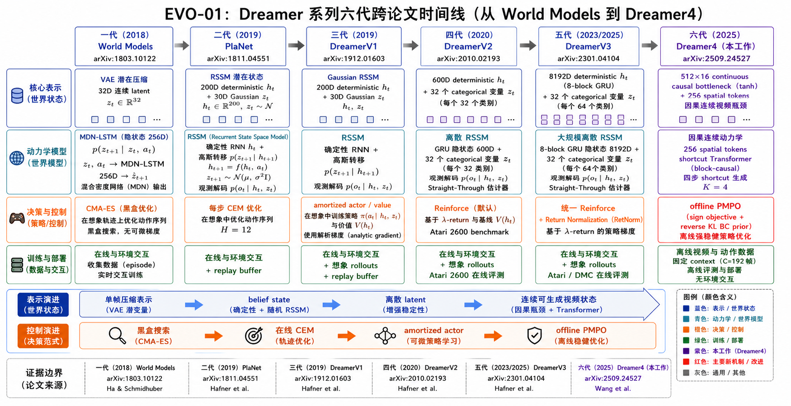
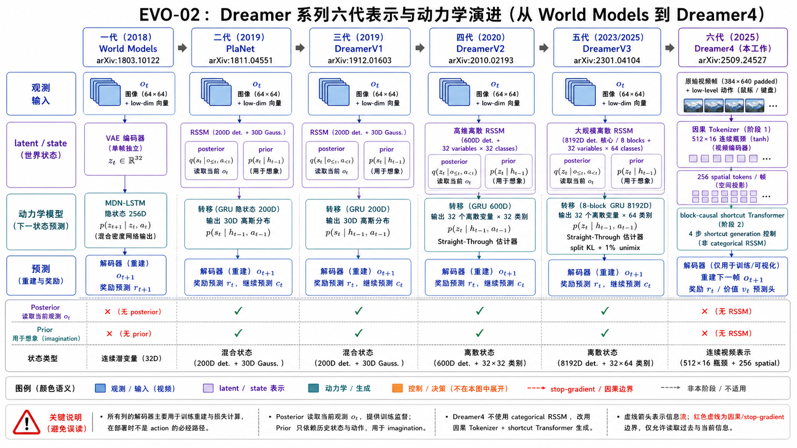
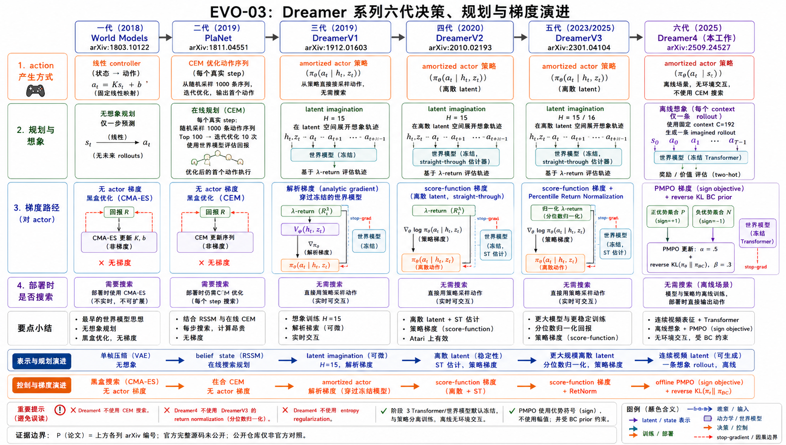
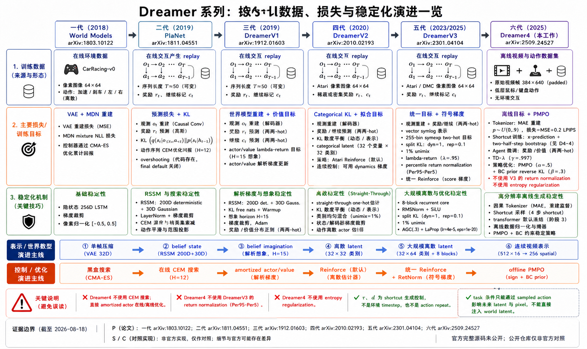
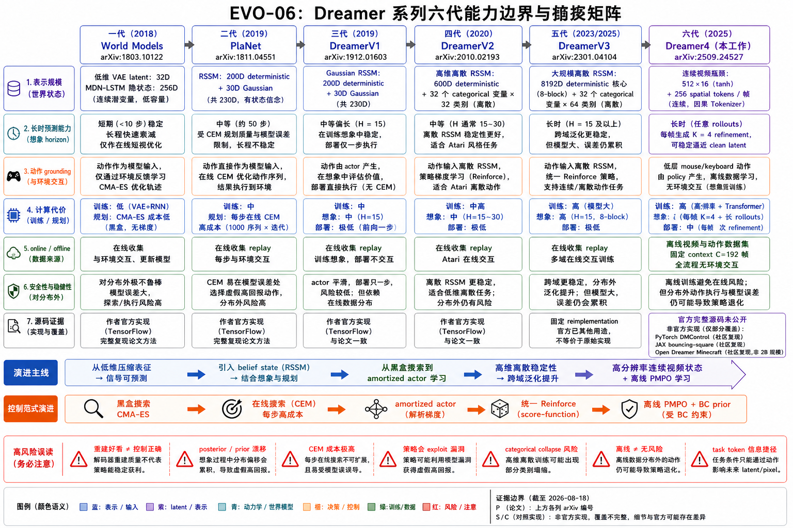
六代跨代综合分析
1. 为什么要把六篇论文放在一张坐标系里
六代工作并不是简单地把网络做大。它们连续改变了四件事：世界状态怎样表示、未来怎样生成、动作怎样选择、策略梯度在哪里计算。理解演进时应优先追踪实际数据流，而不是只比较论文中的模块名称。
2. 表示：从单帧压缩到可生成的视频状态
World Models 的 VAE latent 主要描述当前帧，历史由 RNN 隐状态补充。PlaNet 首次把 deterministic memory 与 stochastic state 组成 RSSM belief，并显式区分读取当前观测的 posterior 与不读取当前观测的 prior。DreamerV1 沿用该世界模型，但改变控制学习方式。DreamerV2 把 Gaussian state 换成 categorical latent，DreamerV3 再扩大 deterministic core 并加入统一稳定化机制。Dreamer4 则离开紧凑 RSSM 路线，使用高分辨率 causal tokenizer 和连续视频 bottleneck，让世界模型真正生成下一帧 latent。
3. 动力学：从低维递归预测到可扩展视频 Transformer
MDN-LSTM 对每个 latent 维度预测 mixture distribution；RSSM 把记忆更新与随机状态预测拆开；V2/V3 的 categorical RSSM 借助 straight-through 在离散前向上保留可训练梯度；Dreamer4 用 block-causal spatial/time Transformer、GQA、KV cache 和 shortcut forcing，在每个生成帧内执行四次 refinement。这里的 tau 与 d 属于生成求解器，不是环境时间。
4. 控制：搜索如何逐步被策略网络摊销
World Models 只训练很小的线性 controller，由 CMA-ES 黑盒搜索参数。PlaNet 把搜索移到每个真实环境 step：CEM 在 latent 中优化 action sequence。DreamerV1 把这种重复规划摊销进 actor，训练时通过 imagined dynamics/value 反传。V2 根据任务在 dynamics gradient 与 Reinforce 之间选择；V3 统一为 Reinforce 并依靠 return normalization 与稳定工具箱扩展到多域。Dreamer4 在离线生成轨迹中使用 advantage sign 的 PMPO，并用冻结 BC policy 的 reverse KL 限制策略偏离数据。
5. “想象”一词在六代中并不相同
- World Models：在 MDN-RNN 采样出的 dream environment 中运行 controller。
- PlaNet：对 CEM 候选 action sequence 做 latent rollout，想象服务于在线规划。
- DreamerV1-V3：批量生成 latent trajectories，想象服务于 actor/value 训练；部署时不再展开长 rollout。
- Dreamer4：世界模型真正生成连续视频 latent，每个 offline context 启动一条 rollout，想象服务于离线策略优化。
6. 训练和部署的计算位置
PlaNet 的训练与部署差异最大：训练世界模型，部署却要每步运行多轮 CEM。DreamerV1-V3 将主要计算放在训练阶段，部署只需 observation encoder/posterior 与 actor。Dreamer4 的论文任务本身是离线训练；world model inference 仍比 RSSM transition 更重，因为每帧需要 K=4 refinement，但使用 KV cache 和高效 attention 支持交互速度。
7. 损失函数为什么越来越复杂
早期问题主要是学习可预测 latent；后续问题转向梯度稳定、跨域尺度和长 rollout 误差。V3 的 symlog、two-hot、split KL、unimix、RetNorm、AGC 与 LaProp 是一套联合稳定系统。Dreamer4 的困难不同：它需要高分辨率视频生成和纯离线策略学习，因此采用 MAE tokenizer、shortcut bootstrap、agent firewall、BC prior KL，而不是简单继承 V3 的 RetNorm 与 entropy。
8. 数据范式：从在线任务数据到无标签视频预训练
World Models 到 DreamerV3 主要从 agent 与环境交互产生的 replay 学习。Dreamer4 可以先从大量无 action 视频学习视觉动力学，再用少量 action-paired 数据学习 action grounding，最终完全在固定数据集 context 上训练策略。这提高了安全性和数据规模，但也加强了 model exploitation 与分布外动作风险。
9. 源码阅读的证据边界
同一张图中必须区分论文事实、固定源码事实、配置事实和合理推断。尤其是 DreamerV3 的分析基于固定 reimplementation，而 Dreamer4 截至 2026-08-18 没有官方完整实现；PyTorch DMControl、JAX toy pipeline 与 Open Dreamer Minecraft 只能分别解释局部机制，不能作为原始 2B Minecraft agent 的完整源码证据。
10. 六代共同的失败模式
- 图像重建清晰但 action-conditioned dynamics 错误。
- posterior 很好但 prior rollout 长期漂移。
- reward/value 学会利用 model artifact。
- 训练时可见信息与部署时 active path 不一致。
- planning/policy 进入数据分布之外后放大 world-model error。
- 把 decoder、CEM 或 imagination 错放进实际部署路径。
11. 选择哪一代思想作为工程起点
- 需要最小可解释原型：World Models。
- 需要在线 latent planning：PlaNet。
- 需要连续控制且希望部署轻量：DreamerV1。
- 需要 Atari 式离散动作：DreamerV2。
- 需要跨域统一超参数和强稳定性：DreamerV3。
- 需要高分辨率视频动力学、离线数据与大规模预训练：Dreamer4，但应接受更高计算成本与更强证据不确定性。
World Models
arXiv 1803.10122 · fd982b9691a941b52c6addbde29bc801ca6202c8
5 张结构与数据流图
先通过完整结构图建立模型全局认识，再进入论文推导、张量形状、训练时序、真实调用路径与源码注意事项。
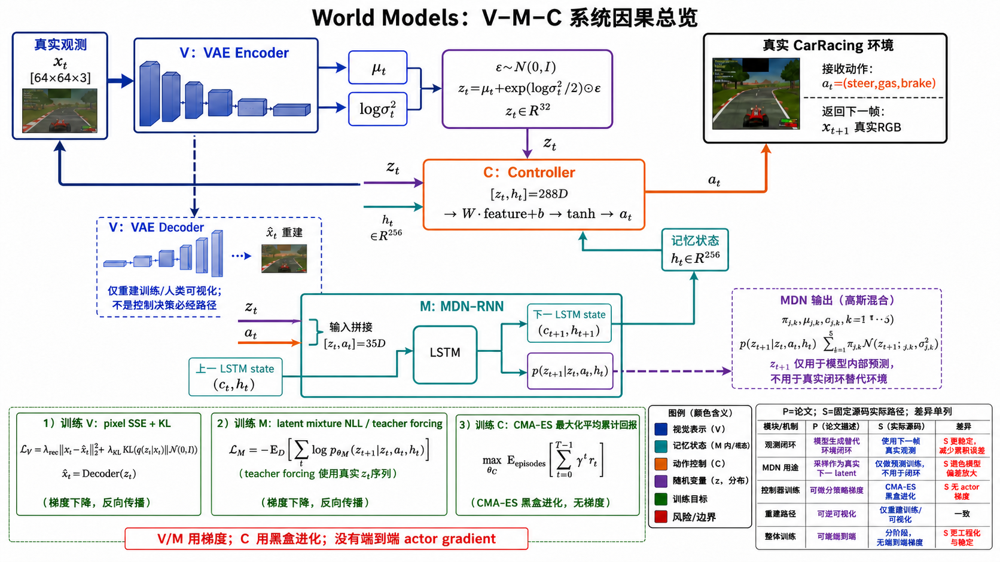
- 主流程从左到右：真实 RGB 观测 → 视觉模型 V（VAE encoder）→
μ_t, logσ²_t→ 重参数化采样 。 - 控制器 C 读取 ，通过单层线性映射和
tanh输出 。 - 真实环境执行
a_t并返回x_{t+1}；这条真实反馈箭头必须回到 VAE encoder，不能由 MDN sample 代替。 - 记忆模型 M 读取
[z_t,a_t]与上一 LSTM state(c_t,h_t)，更新下一状态并预测p(z_{t+1}|z_t,a_t,h_t)。 - Decoder 从
z_t重建图像，但用虚线支路表示“仅 VAE 训练与可视化使用，不在控制决策必经路径”。 - 底部画三块独立训练：V 用 reconstruction + KL；M 用 latent mixture NLL；C 用 CMA-ES return。三块之间标出“无端到端联合梯度”。
- 证据角标：论文 P；固定源码 S；论文与 release 超参数差异需单独标注。
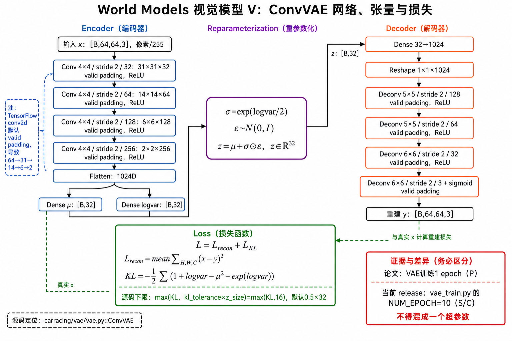
- 输入
x: [B,64,64,3]，像素归一化到[0,1]。 - Encoder 四层 valid-padding convolution，kernel 均为
4×4、stride 2，形状依次为：。 - 展平为 1024D，分成两个 dense head： 与 。
- 重参数化公式必须准确显示：，，。
- Decoder：dense ，reshape
1×1×1024，四层 transposed convolution：5×5/2,128→5×5/2,64→6×6/2,32→6×6/2,3，最终 sigmoid 输出[B,64,64,3]。 - 损失区：；；；源码使用
max(KL, kl_tolerance×z_size)，默认 。 - 源码注意：
vae.py::ConvVAE；论文写训练 1 epoch，而vae_train.py当前 ，必须用红色证据差异框分开。
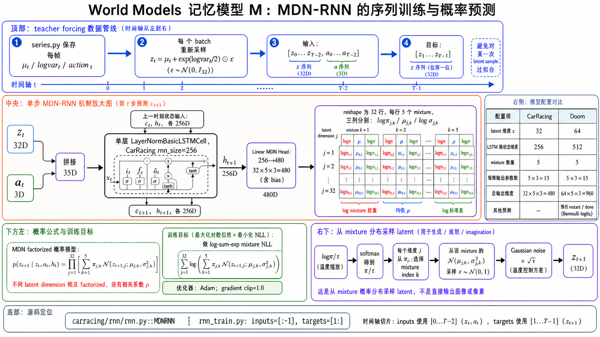
- 上半部分画序列 teacher forcing：保存的
μ_t/logvar_t在每个 batch 重新采样z_t；输入序列为[z_0..z_{T-2},a_0..a_{T-2}]，target 为[z_1..z_{T-1}]。 - 单步输入 ，进入单层
LayerNormBasicLSTMCell；CarRacing state 为c_t,h_t各 256D。 - LSTM 输出经过线性层得到 个标量，再 reshape 为每个 latent dimension 的 5 个 mixture 参数：
logπ_{j,k}, μ_{j,k}, logσ_{j,k}。 - 概率公式：；强调 latent dimension 之间 factorized，没有相关系数
ρ。 - 训练损失：对真实
z_{t+1}计算 log-sum-exp mixture negative log-likelihood；gradient clip 为 1.0。 - 采样流程：temperature 调整
logπ/τ；逐维选择 mixture；Gaussian noise 乘sqrt(τ)；生成z_{t+1}。 - 侧栏对比：CarRacing ；Doom ，并额外预测 restart/done。
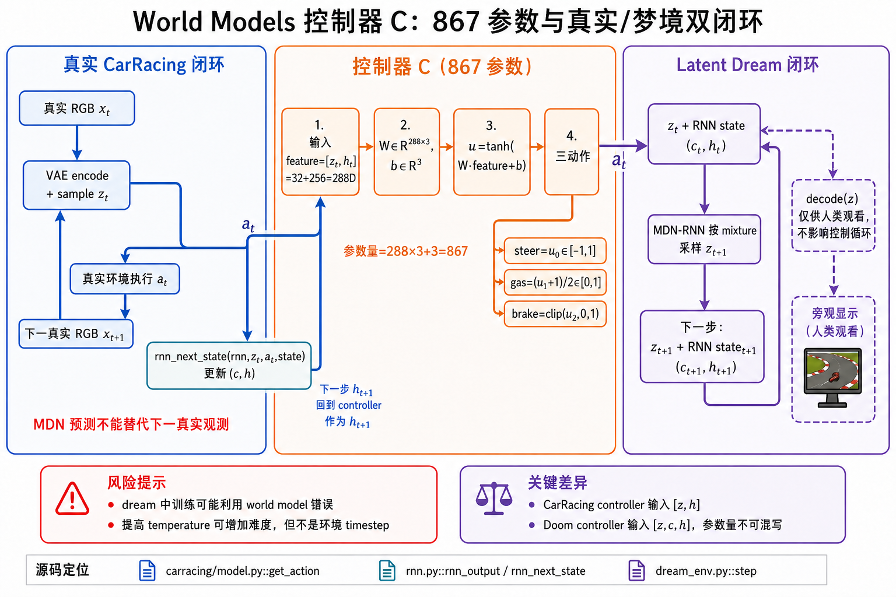
- 中央控制器结构： → →
tanh→ 三维动作，共 参数。 - 动作后处理准确显示：；；。
- 左侧“真实 CarRacing 闭环”：真实 RGB → VAE sample
z_t→ controller → 环境动作 → 下一真实 RGB；动作产生后执行rnn_next_state(z_t,a_t,state)更新 memory。 - 右侧“latent dream 闭环”：
z_t,state→ controller →a_t→ MDN-RNN samplez_{t+1}；无需真实物理环境，也无需 decoder 才能继续控制。 - Decoder 仅从 dream latent 生成供人观察的画面，必须用虚线标注“可视化，不影响 controller”。
- 风险说明：Dream controller 可能利用模型错误；提高 temperature 可制造更困难的模型环境，但过高也会破坏可学习性。
- 高风险误读框：真实闭环不能把 MDN 预测当成下一真实观测；CarRacing 与 Doom controller 输入不同，Doom 使用
[z,c,h]。
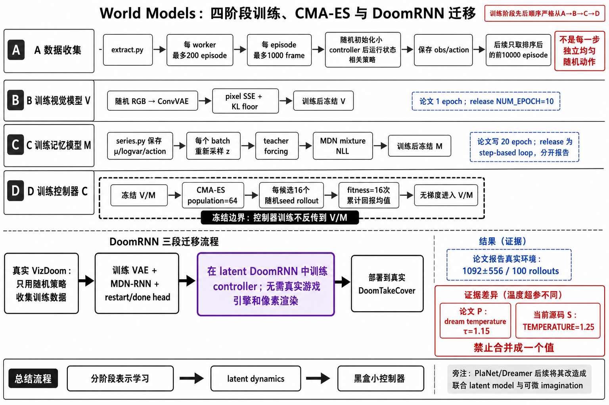
- 用四条水平泳道展示完整训练顺序。
- 阶段 A 数据收集：
extract.py每 worker 最多 200 episode、每 episode 最多 1000 frame；随机初始化整个小 controller 后运行状态相关策略，保存obs/action；后续脚本只取排序后的前 10,000 episode。 - 阶段 B 训练 V：随机 RGB → ConvVAE；优化 pixel SSE + KL floor；训练结束冻结 V。
- 阶段 C 训练 M：
series.py保存每帧μ/logvar/action；rnn_train.py每个 batch 重采样z，teacher forcing 训练 MDN-RNN；论文写 20 epoch，release 使用 step-based loop，必须避免混成同一超参数。 - 阶段 D 训练 C：冻结 V/M；CMA-ES population 64；每个候选在 16 个随机 seed 上 rollout；fitness 为 16 次累计回报均值；controller 不反向传播进入 V/M。
- 下半部分画 DoomRNN 迁移：真实 VizDoom 随机数据仅用于训练 V/M；controller 完全在 latent DoomRNN 中训练；部署到真实 DoomTakeCover。
- 结果与证据：dream 训练 agent 在真实环境报告
1092±556；论文 dream temperature ，当前 repo 常量 ，必须用并列 P/S 红框表示，不能合并。 - 总结箭头：分阶段表示学习 → latent dynamics → 黑盒小控制器；指出这正是 PlaNet/Dreamer 后续改成联合世界模型与可微 imagination 的起点。
论文：World Models（arXiv:1803.10122）
作者实验仓库：hardmaru/WorldModelsExperiments
固定提交：fd982b9691a941b52c6addbde29bc801ca6202c8
1. 一句话结论
World Models 把“看懂画面”“记住并预测未来”“选择动作”拆成三个独立模块：视觉模型 V 用 VAE 把一帧 RGB 压缩成 latent z_t，记忆模型 M 用 MDN-RNN 根据 z_t、动作 a_t 和历史状态预测下一 latent 分布，控制器 C 只读取当前 latent 与 RNN hidden state，并用 CMA-ES 黑盒进化；三者不是端到端联合训练，这既使系统非常简洁，也留下了 PlaNet 和 Dreamer 后续要解决的表示不一致、控制优化低效与模型误差利用问题。
2. 面向新手的整体直觉
可以把整套系统理解成三个角色：
- V 是眼睛。 它不理解“赛道”“怪物”这些语义标签，只负责把
64×64×3的像素压缩成一个很短的向量z_t。 - M 是带概率的记忆和模拟器。 它不仅保留过去发生过什么，还根据当前 latent 和动作预测下一 latent 的多种可能性。
- C 是极小的反应式控制器。 它看到
z_t和 M 的 hidden state 后直接输出动作，但自身没有卷积层、没有 LSTM，也不做梯度反传。
这种拆分最重要的思想不是“生成漂亮图像”，而是让控制器在一个更小、更便宜的 latent space 中工作。像素 decoder 主要用于训练 VAE 和让人观察 dream；控制器真正读取的是 latent 与 memory state。
3. 证据边界
- P（论文）： V/M/C 三模块、10,000 条随机 rollout、VAE/MDN-RNN 结构、CMA-ES、CarRacing 与 DoomRNN 实验、论文温度和结果。
- S（源码）： 固定提交下
carracing/与doomrnn/的 TensorFlow 1.x 实现、实际调用顺序、shape、默认参数与 JSON 权重读取路径。 - C（配置）：
vae_train.py、rnn_train.py、train.py和 Doom 常量中的实际默认值。 - R（推断）： 由公式和源码 shape 计算出的参数量，例如 CarRacing controller 的 867 个参数。
- 重要版本边界： 当前仓库经过后续维护，部分 release 配置与 2018 年论文最终稿不同。下面会逐项把 P 与 S/C 分开，不能把两个版本静默合并。
4. 完整数据与训练顺序
World Models 不是一次 forward 加一个总 loss 的端到端系统，而是严格的阶段流水线：
4.1 阶段 A：用随机初始化的小控制器收集数据
入口：carracing/extract.py
- ：每个 worker 最多保存 200 个 episode。
- ：每个 episode 最多 1000 帧。
- 每个 episode 开始时调用 ，随机初始化 controller、VAE 与 RNN 参数。
- 然后按真实状态循环执行 ，保存
obs与action。 - 因此论文所说的 random policy 在 release 中不是“每一步都从 action space 独立均匀采样”，而是“每条 rollout 使用一个随机初始化、随状态变化的小网络策略”。动作在时间上仍有关联。
vae_train.py和series.py都会对文件名排序，再只使用前 10,000 个文件，与论文的 10,000 random rollouts 对齐。
对新手来说，这里的关键是：世界模型的数据分布完全由早期随机策略决定。如果随机策略从未到过某个区域，V 和 M 就没有证据学习那个区域；论文最后也明确把这一点列为更复杂环境中的限制。
4.2 阶段 B：单独训练视觉模型 V
入口：carracing/vae_train.py
- 加载保存的
64×64三通道帧，转为 float 并除以 255，使像素位于[0,1]。这些帧已经由env.py::_process_frame()裁掉原始画面的底部区域、缩放到64×64，并执行1-obs反色；它们不是 Gym 原始分辨率的未经处理 RGB。 - 用 训练
ConvVAE。 - 默认 latent size 为 。
- 优化完成后把参数量化并保存为
tf_vae/vae.json，后续series.py和控制代码会重新加载。 - 训练 V 时不使用 reward，也不优化控制效果；它只关心重建和 latent 正则化。
4.3 阶段 C：冻结 V，并把像素数据转换成 latent 序列
入口：carracing/series.py
- 加载冻结的 VAE。
- 每个 episode 被当成最多 1000 帧的 batch。
- 对每帧计算
mu与logvar，保存为 float16，同时保存原动作。 - 最终生成
series/series.npz，其中主要数组是mu、logvar、action。 - 虽然
series.py内部也临时采样z，但写入数据集的是mu/logvar，不是一个永久固定的z。
为什么不直接存固定 z？因为同一帧的 posterior 是一个 Gaussian distribution。若永远只保存一次 sample，MDN-RNN 可能把这次随机 sample 当成精确标签并过拟合；保留分布参数后，可以在每个训练 batch 中重新采样。
4.4 阶段 D：单独训练记忆模型 M
入口：carracing/rnn_train.py
random_batch()先随机选 episode，再从保存的mu/logvar重新采样完整 latent sequence。- 。
- 。
- 这就是 teacher forcing：第
t步输入真实数据编码得到的z_t和真实记录动作a_t，监督目标是数据中的z_{t+1}。 - release 配置为 、、、、、learning rate
0.001、gradient clip1.0。 - 训练后保存
tf_rnn/rnn.json，并保存 1000 个初始mu/logvar供 dream environment 初始化。
4.5 阶段 E：冻结 V/M，用 CMA-ES 训练 C
入口：carracing/train.py
- CLI 默认
--optimizer cma。 - 默认
--num_worker 64、--num_episode 16、--num_worker_trial 1，因此 population 为 。 - 每个候选 controller 在 16 个 episode 上评估，fitness 是累计回报的均值。
es.ask()产生一代候选参数，worker 并行执行 rollout，es.tell(reward_list)用回报更新 CMA-ES 分布。- 每 25 代调用一次更完整的评估路径，并记录 best model。
- C 的 optimizer 只接收 controller 参数向量。VAE 和 MDN-RNN 已经加载为固定 JSON 权重，不会从 return 得到梯度。
5. 视觉模型 V：ConvVAE 逐层展开
源码：carracing/vae/vae.py::ConvVAE
5.1 输入与 encoder shape
输入 placeholder：
x: [B, 64, 64, 3]
tf.layers.conv2d 没有显式传入 padding，TensorFlow 该接口默认使用 valid。因此不能按常见的 same-padding CNN 画成 ，真实空间尺寸是：
| 层 | Kernel / stride | 通道 | 输出 shape |
|---|---|---|---|
| 输入 | — | 3 | 64×64×3 |
enc_conv1 |
4×4 / 2 |
32 | 31×31×32 |
enc_conv2 |
4×4 / 2 |
64 | 14×14×64 |
enc_conv3 |
4×4 / 2 |
128 | 6×6×128 |
enc_conv4 |
4×4 / 2 |
256 | 2×2×256 |
| Flatten | — | — | 1024D |
每层使用 ReLU。最后 1024D feature 分别送入两个 dense head：
mu : [B, 32]
logvar : [B, 32]
5.2 为什么网络输出 logvar 而不是直接输出标准差
方差必须非负，如果网络直接输出方差，需要额外约束。这里让网络输出任意实数 logvar，再计算：
sigma = exp(logvar / 2)
z = mu + sigma * epsilon
epsilon ~ N(0, I)
这就是重参数化技巧。随机性被隔离到 epsilon，所以 reconstruction loss 和 KL loss 仍可对 mu/logvar 求梯度。
5.3 Decoder 不是 encoder 的简单镜像尺寸
Decoder 首先把 32D latent 映射到 1024D，并 reshape 为 1×1×1024：
| 层 | Kernel / stride | 通道 | 主要空间尺寸 |
|---|---|---|---|
| Dense + reshape | — | 1024 | 1×1×1024 |
dec_deconv1 |
5×5 / 2 |
128 | 5×5×128 |
dec_deconv2 |
5×5 / 2 |
64 | 13×13×64 |
dec_deconv3 |
6×6 / 2 |
32 | 30×30×32 |
dec_deconv4 |
6×6 / 2 |
3 | 64×64×3 |
前三层使用 ReLU，最后一层使用 sigmoid，把像素限制在 [0,1]。
5.4 VAE loss 的源码细节
Reconstruction loss 是每张图所有像素的 squared error 求和，再对 batch 求均值：
r_loss = mean_B sum_{H,W,C} (x - y)^2
KL 为标准对角 Gaussian posterior 到单位 Gaussian prior 的 KL：
KL = -0.5 * sum_j(1 + logvar_j - mu_j^2 - exp(logvar_j))
源码没有使用 max(0, KL-c) 形式，而是：
kl_loss = max(KL, kl_tolerance * z_size)
默认 、，所以每个样本的 KL 下限为 16。它与后来 PlaNet/Dreamer 中常见的 free nats 写法在直觉上相似，但数学实现不能混写。
5.5 论文与 release 的 epoch 差异
- 论文附录：VAE 在随机策略数据上训练 1 epoch。
- 当前
vae_train.py：。 - 仓库 README 也明确写“train VAE for 10 epochs”。
因此最终报告必须写成“论文 P=1 epoch；当前 release S/C=10 epochs”，不能只给其中一个值。
6. 记忆模型 M：MDN-RNN 逐张量展开
源码：carracing/rnn/rnn.py::MDNRNN
6.1 单步输入为什么是 35D
CarRacing 中：
z_t: 32D
a_t: 3D
concat(z_t, a_t): 35D
RNN 不是只根据当前图像预测未来；动作是必要条件。同样的赛道画面下，向左打方向盘和向右打方向盘会导致完全不同的下一状态。
6.2 LSTM state 与 controller feature 不是同一个概念
LayerNormBasicLSTMCell 的 state 包含：
c_t: cell state, 256D
h_t: output/hidden state, 256D
CarRacing 默认 controller 使用 MODE_ZH，只读取 [z_t,h_t]，不读取 c_t。但 RNN 自身更新时仍完整维护 (c_t,h_t)。
Doom controller 则读取 [z,c,h]。因此不能把 CarRacing 的 867 参数套到 Doom。
6.3 MDN head 为什么有 480 个输出
对于每个下一 latent dimension ，模型输出 5 个 Gaussian mixture 的：
- mixture log-weight
logπ_{j,k}； - mean
μ_{j,k}； - log standard deviation
logσ_{j,k}。
所以总宽度为：
32 latent dimensions × 5 mixtures × 3 parameters = 480
源码使用 tf.layers.dense(outputs, NOUT)，默认包含 bias。之后把输出拆成 logmix/mean/logstd，并对 logmix 做 log-softmax normalization。
6.4 “Factored mixture”到底是什么意思
模型近似：
p(z_{t+1}|history,a_t)
= product_j sum_k π_{j,k} Normal(z_{t+1,j}; μ_{j,k}, σ_{j,k})
每个 latent dimension 都独立选择自己的 mixture component。模型没有学习不同 latent dimension 之间的 covariance，也没有相关系数 ρ。
这能显著简化输出和训练，但也意味着联合分布的相关结构只能间接编码进 LSTM hidden state 和各维参数，不能由完整 covariance matrix 直接表达。
6.5 MDN negative log-likelihood
训练时，把真实 target reshape 为每个标量 latent 维度，对所有 mixture 计算：
logπ + log Normal(target; mean, std)
再用 reduce_logsumexp 汇总 mixture，最后取负均值作为 cost。使用 log-sum-exp 是为了避免直接在概率空间相加产生数值下溢。
6.6 为什么每个 batch 都重新采样 latent
rnn_train.py::random_batch()：
z = mu + exp(logvar/2) * randn
这使 M 学到的是 VAE posterior 附近的局部区域，而不是死记某一次 VAE sample。也可以把它理解成 latent-space data augmentation。
6.7 Teacher forcing 与自由生成的差别
训练时第 t 步输入来自真实记录序列编码后的 z_t，不是模型自己上一步采样的预测。这是 teacher forcing。
Dream rollout 时则不同：模型预测并采样出 z_{t+1}，下一步继续把这个预测 latent 当输入。此时误差会递归累积，这也是“训练时一步预测看起来不错，但长 dream 仍可能崩坏”的根源。
7. 控制器 C：为什么只有 867 个参数
源码：carracing/model.py::Model
7.1 Controller 输入
：
feature = concat(z_t, h_t)
width = 32 + 256 = 288
7.2 参数量
Controller 是单层 affine transform：
u = W * feature + b
W: [288, 3]
b: [3]
所以：
288×3 + 3 = 867 parameters
它没有隐藏层。仓库也保留 MODE_Z_HIDDEN 的 40-unit 隐藏层变体，但默认 CarRacing 路径不是该变体。
7.3 动作映射
先对三个 raw output 统一应用 tanh，再做环境范围变换：
steer = u_0 -> [-1, 1]
gas = (u_1 + 1) / 2 -> [0, 1]
brake = clip(u_2, 0, 1) -> [0, 1]
这里 brake 与 gas 的后处理不同：gas 是线性平移缩放，brake 是截断负值。
7.4 一次真实环境 step 的精确调用顺序
simulate() 中：
- 当前真实
obs进入encode_obs()。 - VAE 给出
mu/logvar，并采样z_t。 get_action(z_t)先由[z_t,h_t]计算a_t。- 在
get_action()内部立刻调用rnn_next_state(rnn,z_t,a_t,state)，更新 RNN state。 - 返回 action 后，
env.step(action)才让真实环境前进一步并返回下一 RGB。
RNN state update 依赖 z_t 与刚产生的 a_t，不依赖环境返回的 x_{t+1}；但下一轮 controller 使用的 z_{t+1} 一定来自真实 x_{t+1} 的 VAE 编码，而不是 MDN prediction。
8. 真实闭环与 dream 闭环必须分开理解
8.1 真实 CarRacing 闭环
真实运行时：
真实 RGB x_t
→ VAE posterior sample z_t
→ controller([z_t,h_t])
→ action a_t
→ 真实环境
→ 下一真实 RGB x_{t+1}
MDN-RNN 在这里主要提供 memory hidden state。不能把它画成用预测的 z_{t+1} 替代真实观测。
8.2 dream_env.py 中的纯 latent 闭环
Dream environment 不调用真实 CarRacing physics：
- 从保存的 initial
mu/logvar采样初始z。 - Controller 根据
z和 RNN state 产生 action。 _sample_next_z(action)同时运行 MDN-RNN、更新 RNN state，并采样下一 latent。- 返回
next_z作为下一 observation。
Decoder 只在 _render() 中把 latent 变成人能看的图像。即使完全不 decode，controller 仍能在 dream 中继续运行。
8.3 Temperature 如何影响采样
CarRacing dream_env.py 的采样做两件事：
logmix2 = logmix / temperature
noise = randn * sqrt(temperature)
- 对 mixture logits 除以 temperature，改变 mode 选择分布的尖锐程度。
- 对 Gaussian noise 乘
sqrt(temperature)，改变每个 mode 内的采样方差。
所以 temperature 同时影响“选哪个 mixture mode”和“在该 mode 周围抖动多大”。它不是环境 timestep，也不是 action repeat。
9. DoomRNN：真正的“在梦中训练”实验
World Models 经常被概括成“所有任务都在梦中训练”，这不准确。
- CarRacing 的主要成功结果是在真实环境闭环中，用 VAE latent 和 RNN hidden state 控制。
- DoomTakeCover 实验才完整展示：先用真实 VizDoom 的随机策略轨迹训练 V/M，再完全在 hallucinated DoomRNN 中用 CMA-ES 训练 controller，最后把 controller 部署到真实 VizDoom。
9.1 Doom 与 CarRacing 的结构差异
| 项目 | CarRacing | DoomRNN |
|---|---|---|
| VAE latent | 32D | 64D |
| LSTM hidden | 256D | 512D |
| Mixture 数 | 5 | 5 |
| Controller feature | [z,h] |
[z,c,h] |
| 终止建模 | 环境直接给 done | M 额外预测 restart/done |
Doom 的死亡事件相对稀少，源码通过 restart_factor 增大该项 loss 权重，并在 dream environment 中用终止概率阈值决定 episode 是否结束。
9.2 为什么低 temperature 会产生“安全但错误的梦”
论文指出，temperature 太低时 MDN 容易只停留在最常见 mode，火球等低概率事件可能消失。Controller 会在这个过度乐观的 dream 中学会危险策略，在梦里高分、到真实环境却失败。
提高 temperature 会迫使 controller 面对更多随机性和危险 mode，降低其利用世界模型漏洞的机会；但 temperature 太高时，环境又会变得过于混乱，难以学习。
9.3 论文结果与源码常量
- 论文使用 ，报告 dream 中最佳 agent 在真实 DoomTakeCover 上得到
1092±556，统计 100 条 rollout。 - 当前固定仓库
doomrnn/doomrnn.py的 。
二者属于明确的 P/S 差异，必须并列报告。
10. CMA-ES 到底在优化什么
CMA-ES 不知道网络结构，也不计算 gradient。它只把 867 个 controller 参数视为一个向量：
- 从当前搜索分布采样 64 个候选向量。
- 每个候选运行 16 个不同 seed 的 episode。
- 计算平均累计回报。
- 根据候选排名和回报更新搜索分布的均值与 covariance。
- 重复多代。
这种方法在 867 维仍然可行，但如果 controller 也包含大型 CNN、RNN 或 Transformer，黑盒搜索成本会急剧上升。这也是论文刻意把 C 设计得极小的原因。
11. 训练梯度边界
必须明确区分三个 optimizer：
- VAE optimizer 只更新 V。
- MDN-RNN optimizer 只更新 M。
- CMA-ES 只更新 C。
Controller return 不会反向传播进入 VAE 或 RNN。也就是说，V 学到的 latent 是“对重建有用”的表示，不一定是“对控制最有用”的表示；M 学到的是随机策略数据上的 latent prediction，不一定覆盖 controller 后续会访问的状态分布。
PlaNet 的重要改进之一就是联合训练 observation model、reward model 与 latent dynamics；Dreamer 又进一步让 world model 成为 actor–critic 的 imagination environment。
12. 论文与 release 差异总表
| 项目 | 论文 P | 固定仓库 S/C | 报告方式 |
|---|---|---|---|
| VAE epoch | 1 | 并列，不合并 | |
| MDN-RNN 训练 | 20 epochs | rnn_train.py 为 4000-step loop |
并列，不换算猜测 |
| CarRacing CMA-ES | population 64；每候选 16 rollout | train.py CLI 默认相同 |
可标为 P/S 一致 |
| Doom dream temperature | 1.15 |
并列，不覆盖 | |
| Random policy 表述 | 论文统称 random policy | release 为随机初始化网络 rollout | 补充实现语义 |
13. Active source path 索引
| 功能 | 实际路径 | 关键作用 |
|---|---|---|
| 随机数据收集 | carracing/extract.py |
运行随机初始化 controller，保存 obs/action |
| VAE 定义 | carracing/vae/vae.py::ConvVAE |
Encoder、reparameterization、decoder、loss |
| VAE 训练 | carracing/vae_train.py |
读取前 10k episode，训练并保存 VAE |
| Latent 数据转换 | carracing/series.py |
保存逐帧 mu/logvar/action |
| MDN-RNN 定义 | carracing/rnn/rnn.py::MDNRNN |
LSTM、480D mixture head、NLL |
| MDN-RNN 训练 | carracing/rnn_train.py |
batch 重采样、teacher forcing |
| Controller 与真实闭环 | carracing/model.py |
、RNN state update、env step |
| Dream 环境 | carracing/dream_env.py |
从 MDN mixture 采样下一 latent |
| 进化训练 | carracing/train.py |
MPI worker、CMA-ES、16-seed fitness |
| Doom 完整模型 | doomrnn/doomrnn.py |
64D latent、512D LSTM、restart head、temperature |
14. 初学者最容易混淆的问题
14.1 VAE 的 decoder 是否参与每一步动作计算？
不参与。控制器读取 latent 和 hidden state。Decoder 只用于 VAE reconstruction loss 或将 dream latent 显示成人类可看的图像。
14.2 MDN-RNN 是否直接预测下一帧 RGB？
不预测。它预测下一 latent 的 factorized Gaussian mixture distribution。像素图像需要再经过 VAE decoder 才能显示。
14.3 h_t 是否就是 z_t？
不是。z_t 是当前画面的随机 latent；h_t 是 LSTM 对历史序列的压缩记忆。Controller 同时读取两者。
14.4 为什么既有 VAE 随机性，又有 MDN 随机性？
VAE 随机性描述“当前单帧应该如何编码”；MDN 随机性描述“给定历史与动作，未来可能怎样发展”。两者表达的是不同层次的不确定性。
14.5 Controller 在真实环境中是否根据 MDN 生成的下一 latent 行动？
不是。真实环境下一帧会重新经过 VAE 编码。MDN 主要贡献 hidden state；只有 dream environment 才递归使用 MDN sample。
14.6 “World Models 在梦中训练”是否适用于全部结果？
不适用。DoomRNN 是完整 dream-training 展示；CarRacing 主实验主要在真实环境中评估和优化 controller。
15. 这篇工作对后续 Dreamer 系列的真正意义
World Models 建立了三条后来持续演进的主线：
- 表示主线： 从像素压缩到 latent state，证明控制不必直接处理 RGB。
- 想象主线： 世界模型可以作为低成本训练环境，但必须警惕模型误差和分布外策略。
- 控制主线： 小 controller 可以利用 learned world state，但分阶段训练和黑盒进化无法充分让表示、动力学与行为目标协同。
PlaNet 把 VAE+MDN-RNN 改造成联合 RSSM，并在 latent space 中用 CEM 规划；DreamerV1 再把每步在线搜索摊销成 actor，并通过 imagined return 学习行为。这条演进并不是简单地“网络越来越大”，而是梯度边界、状态表示和控制计算方式发生了根本变化。
16. 高风险误读清单
- 不要把 VAE decoder 画进控制动作必经路径。
- 不要把 MDN-RNN 画成直接预测 RGB。
- 不要把真实 CarRacing 下一观测替换成 MDN sample。
- 不要把 random policy 解释成每一步独立均匀随机动作。
- 不要把 CarRacing 和 Doom 的 latent size、LSTM size、controller input 与 done head 混写。
- 不要把 误解成一个 480 类 categorical distribution；它是 32 个 latent 维度各自的 5-component Gaussian mixture 参数。
- 不要说 controller 通过 world model 做端到端反向传播；C 由 CMA-ES 训练。
- 不要把论文 与当前源码
1.25合成一个值。 - 不要把论文 VAE 1 epoch 与 release 10 epochs 静默覆盖。
- 不要把 dream 中高分当成真实环境一定可靠；模型漏洞利用正是论文专门讨论的问题。
17. 新手应该怎样按源码顺序阅读这个项目
如果直接从 model.py 开始看，很容易把已经训练好的 VAE、RNN 和待优化的 controller 混成一个“大网络”。更稳妥的阅读顺序是沿着数据制品逐级向后：
| 阅读顺序 | 文件 | 输入制品 | 输出制品 | 读完后应能回答的问题 |
|---|---|---|---|---|
| 1 | carracing/extract.py |
真实 CarRacing 环境 | record/*.npz |
原始 RGB 和 action 是怎样采集的？所谓 random policy 在源码里究竟是什么？ |
| 2 | carracing/vae/vae.py |
[B,64,64,3] RGB |
mu/logvar/z/reconstruction |
一帧图像怎样变成 32D latent？重建与 KL 怎样计算？ |
| 3 | carracing/vae_train.py |
record/*.npz |
tf_vae/vae.json |
VAE 用哪些数据、batch、epoch 和 optimizer 训练？ |
| 4 | carracing/series.py |
冻结 VAE 与原始 episode | series/series.npz |
为什么保存 mu/logvar 而不是只保存一个 z？ |
| 5 | carracing/rnn/rnn.py |
latent-action sequence | MDN 参数与下一 LSTM state | 480 个输出怎样变成 32 个独立的 5-component mixture？ |
| 6 | carracing/rnn_train.py |
series.npz |
tf_rnn/rnn.json |
teacher forcing、batch 重采样和时间移位怎样实现？ |
| 7 | carracing/model.py |
冻结 V/M 与 controller 参数 | 动作 | 一次真实环境动作前后，VAE、controller、RNN 和 env.step 的调用顺序是什么？ |
| 8 | carracing/train.py |
controller 参数分布 | 最优 controller JSON | CMA-ES 怎样并行评估候选参数？16 个 rollout 的平均回报在哪里形成？ |
| 9 | carracing/dream_env.py |
当前 latent、action、RNN state | 下一 sampled latent | 不调用真实物理环境时，一步 dream 是怎样生成的？ |
这条阅读顺序也对应四类不能混写的参数：
- 表示参数： VAE encoder/decoder 权重，保存在
vae.json。 - 动力学参数： LSTM 与 MDN head 权重，保存在
rnn.json。 - 行为参数： 867 个 controller 参数，由 CMA-ES 直接搜索。
- 运行状态： 当前 episode 的
(c_t,h_t)，它不是模型权重，每次reset()都会重新置零。
18. ConvVAE 源码逐行执行语义
18.1 TensorFlow 图中的输入、随机节点和输出
ConvVAE._build_graph() 首先创建占位符：
self.x: [None,64,64,3], float32
这里的 None 只表示 batch size 可以在建图时不固定；实际训练脚本用 ，推理控制代码用 ，而 series.py 把一条 1000 帧 episode 当作一个 batch，使用 。
Encoder 的四层 tf.layers.conv2d 没有显式传 padding，TensorFlow 1.x 默认是 valid。因此空间尺寸必须按
out = floor((in - kernel) / stride) + 1
计算，而不是习惯性地按 same 除以 2：
64 -> floor((64-4)/2)+1 = 31
31 -> 14
14 -> 6
6 -> 2
最后得到 [B,2,2,256]，flatten 后是 [B,1024]。两个 dense head 各输出 [B,32]：
mu是 posterior 均值；logvar是方差的对数；- 才是标准差；
epsilon与mu同 shape；- 仍是
[B,32]。
一个很容易漏掉的实现约束是：epsilon 的 shape 使用构造函数传入的 self.batch_size，而不是动态读取 tf.shape(self.x)[0]。因此创建模型时传入的 batch size 必须和实际 feed 的图片数量一致，否则随机张量无法正确广播。
18.2 Decoder 为什么从 1×1×1024 开始
源码先执行 ，再 reshape 为 [B,1,1,1024]。四层 transposed convolution 使用 valid：
1 --k5,s2--> 5
5 --k5,s2--> 13
13 --k6,s2--> 30
30 --k6,s2--> 64
所以 decoder 的实际空间尺寸是 。它在最终层使用 sigmoid，把输出限制到 [0,1]，与训练前的 /255.0 像素归一化对应。
18.3 Reconstruction loss 不是每像素平均
源码先对 H,W,C 三个轴求平方误差之和，再对 batch 求平均：
r_loss[b] = sum_{h,w,c}(x-y)^2
r_loss = mean_b r_loss[b]
因此日志里的 reconstruction loss 数值会随图像像素总数缩放，不能直接拿去和“对全部像素取 mean”的其他 VAE 实现比较。
KL 先按 32 个 latent 维度求和，再对每个样本施加下限：
KL_b = max(raw_KL_b, kl_tolerance*z_size)
= max(raw_KL_b, 0.5*32)
= max(raw_KL_b, 16)
最后才对 batch 求平均。这里是每个样本的总 KL 下限，不是“每维单独裁剪到 0.5”。这会阻止模型为了降低总 loss 而把 posterior 完全压回标准正态，但也意味着低于 16 的 KL 区间没有梯度差异。
18.4 JSON 权重不是 TensorFlow checkpoint
VAE 和 RNN 都遍历 tf.trainable_variables()，把数组转成 Python list 写入 JSON。set_model_params() 依赖变量枚举顺序和 shape 顺序恢复参数。复现时要注意：
- 这不是带变量名索引的标准 checkpoint；
- 更换 TensorFlow 版本、变量创建顺序或网络定义后，旧 JSON 可能 shape 相同但语义位置错位；
- controller JSON 又是另一种格式，前 3 个数是 bias，后面才 reshape 成 weight；
- 不应把三种 JSON 当作可互换的模型文件。
19. series.npz 到 MDN-RNN：每个数组到底是什么
19.1 series.py 保存的不是永久 latent
对一条 episode，series.py 把 1000 帧一起输入 VAE，得到：
mu: [1000,32]
logvar: [1000,32]
action: [1000,3]
代码虽然临时计算了 z，但写入 series.npz 的只有 mu、logvar、action。多个 episode 堆叠后通常形成：
data_mu: [N_episode,1000,32]
data_logvar: [N_episode,1000,32]
data_action: [N_episode,1000,3]
源码假定每条记录有 1000 个位置。正常采集入口使用 ，wrapper 会忽略环境提前返回的 done，让循环固定运行到 ，这正是后续 reshape 能成立的原因。若用户自行改动采集逻辑、关闭 full_episode，或触发 extract.py 异常恢复分支后重新创建了默认 的环境，episode 就可能提前结束；此时直接 np.array(list_of_arrays) 可能退化为 object array，后续 random_batch() 的三维切片会失效。
19.2 一个训练 batch 的 shape 变化
rnn_train.py::random_batch() 随机选择 100 条 episode，并重新采样：
raw_z: [100,1000,32]
raw_a: [100,1000,3]
时间移位后：
inputs = concat(raw_z[:,:-1,:], raw_a[:,:-1,:])
= [100,999,35]
outputs = raw_z[:,1:,:]
= [100,999,32]
第 t 个 input 预测同一 episode 的第 t+1 个 latent。动作 a_t 与 z_t 对齐，不能误用 a_{t+1}。
19.3 480D head 如何变成 32 个 mixture distribution
这是源码中最容易被图画错的地方。dynamic_rnn 输出 [B,T,256]，先 reshape 为 [B*T,256]，再乘：
output_w: [256,480]
output_b: [480]
得到 [B*T,480]。随后源码执行：
reshape(output, [-1, 5*3]) -> [B*T*32,15]
split(..., 3, axis=1) -> 三个 [B*T*32,5]
所以每一行对应“某个 batch、某个时间、某个 latent 维度”的 5-component mixture：
5 个 log mixture weight
5 个 mean
5 个 log standard deviation
这里确实有显式 output_b，因此 MDN head 包含 480 个 bias 参数。若只计算该输出层本身，参数量是：
256*480 + 480 = 123,360
它与 controller 的 867 参数完全不同；前者属于冻结的 world model，后者才是 CMA-ES 搜索对象。
19.4 NLL 在代码里为什么看起来没有显式 product_j
概率论写联合密度时使用：
p(z_{t+1}|...) = product_j sum_k pi_{j,k} Normal(z_{t+1,j};...)
取负对数后，外层乘积变成对 latent 维度的求和：
-log p = -sum_j log sum_k(...)
源码先把 [B,T,32] target flatten 成 [B*T*32,1]，对每一行的 5 个 mixture 做 reduce_logsumexp，再对全部 batch、时间和 latent 维度取 mean。因此代码没有再写一个显式 reduce_prod；乘积已经通过 log domain 变成了加和，并被 flatten+mean 实现。
19.5 Gradient clipping 的真实顺序
RNN 训练使用 Adam。源码先计算全部 trainable variable 的 gradient，再执行 tf.clip_by_global_norm(grads, 1.0)，最后 apply_gradients。这是把所有梯度视为一个整体向量后限制其 global norm，不是逐元素 clip，也不是逐层分别 clip。
20. 一次真实 CarRacing step 的逐函数时间线
下面按实际调用顺序展开一帧，便于新手把图中的箭头映射回代码。
20.1 Episode 开始
simulate() 调用：
model.reset() -> (c,h) 重新置零
obs=env.reset() -> 第一帧真实 RGB
RNN state 是 episode 内状态，不能跨 episode 沿用；VAE/RNN/controller 权重则保持不变。
20.2 当前真实图像编码
encode_obs(obs)：
- 复制
uint8RGB； - 转
float并除以 255； - reshape 为
[1,64,64,3]； - VAE 返回
mu/logvar； - NumPy 再采样一个
z_t。
这里的 obs 已经是 wrapper 处理后的 64×64 反色三通道图，而不是原始 96×96 CarRacing 帧。控制路径默认使用随机 sample，而不是只使用 mu；因此即使处理后的画面相同，controller 输入也可能因 posterior noise 略有变化。
20.3 Controller 读取的是旧 state
get_action(z_t) 首先调用 rnn_output(self.state,z_t,MODE_ZH)，拼出：
feature_t = concat(z_t, h_t) = 288D
注意此处的 h_t 是在处理 (z_t,a_t) 之前的历史状态。随后 affine+tanh 产生动作并做 gas/brake 后处理。
20.4 动作产生后立即更新 RNN
仍在 get_action() 内部：
self.state = rnn_next_state(rnn,z_t,a_t,self.state)
也就是说，RNN 接收的是刚刚决定的真实动作。更新后得到的 state 将在下一轮作为 h_{t+1} 使用。
20.5 最后才推进真实环境
get_action() 返回后，外层才调用：
obs_{t+1}, reward_t, done, info = env.step(a_t)
所以下一轮的 z_{t+1} 来自 obs_{t+1} 的 VAE posterior，而不是本轮 MDN head sample。真实闭环中 MDN head 的分布输出实际上没有被读取；被利用的是 LSTM 更新后的记忆状态。
21. 一次 latent dream step 的逐函数时间线
CarRacingDream._step(action) 不调用真实 env.step。它执行：
- 把当前
self.zreshape 为[1,1,32]； - 把 action reshape 为
[1,1,3]； - concat 得到
[1,1,35]； - feed 当前 RNN state，读取
out_logmix/out_mean/out_logstd/final_state； - 用
logmix/temperature重新归一化 mixture probability； - 对 32 个 latent 维度分别抽取一个 mixture index；
- 对每一维取该 component 的 mean 与 logstd；
- 生成
randn(32)*sqrt(temperature)； - 计算 ；
- 保存新 state 和新 latent，进入下一步。
因此 temperature 同时影响两处：
- mixture categorical distribution 的尖锐程度；
- Gaussian residual noise 的方差。
decode_obs(z) 是 _render() 才调用的旁路。如果关闭渲染，dream 仍然可以只靠 32D latent 与 RNN state 前进。这正是“无需逐帧渲染像素即可在模型中运行”的具体含义。
CarRacing dream 环境还把 reward 固定为 0，并在 1200 步后结束；它主要是生成与可视化实验，不应和 Doom 中带 restart/done 与训练目标的完整 dream-training 环境混为一谈。
22. CMA-ES 源码执行细节
22.1
Master 每轮调用 es.ask() 得到 population 中的 controller 参数向量。默认：
population = 64
controller dimension = 867
参数与 seed 被编码成 packet 分发给 MPI workers。Worker 调用 model.set_model_params()，在多个 episode 上运行 simulate()，返回平均 reward 与平均时间长度。Master 收齐结果后调用 es.tell(reward_list) 更新搜索分布。
22.2 “每候选 16 rollout”在哪里体现
命令行默认 --num_episode=16。评估候选 controller 时，同一参数向量会在 16 个 seed 上运行，fitness 使用这些回报的平均值。这样做不是增加训练数据，而是降低单次赛道随机性带来的评价噪声。
22.3 为什么不是 64×16 个 controller
64 是每一代不同参数向量的数量；16 是每个向量的重复 rollout 数量。每代环境 episode 数量约为：
64 candidates * 16 episodes = 1024 episodes
但真正被优化的仍是 64 个 fitness 标量。不能把 16 次 rollout 当成 16 个独立 population member。
22.4 Controller 参数的序列化顺序
set_model_params() 先读取前 3 个数作为 bias，再把其余 864 个数 reshape 为 [288,3] weight。这与数学表达常写“先 W 后 b”相反。读取旧 controller 文件时必须遵循代码的扁平化顺序，不能按论文公式自行重新排列。
23. 复现与调试检查表
23.1 数据检查
- 检查
record/*.npz中obs.dtype是否为uint8、最后一维是否为 3。 - 检查保存图像是否已经执行
frame[0:84]裁剪、64×64缩放和1-obs反色；训练与推理必须使用同一预处理。 - 检查 action 是否为三维
[steer,gas,brake]，范围分别接近[-1,1]、[0,1]、[0,1]。 - 检查每条 episode 是否为 1000 帧；确认采集入口保持 ，并警惕异常恢复分支重新创建默认环境后导致的短 episode。
- 检查文件排序后实际取到的是否真是预期的前 10,000 条，而不是混入旧实验文件。
23.2 VAE 检查
- 第一层输出必须是
31×31×32；若得到32×32×32，说明 padding 与原实现不同。 mu/logvar/z必须都是[B,32]。- 重建输出必须是
[B,64,64,3]且位于[0,1]。 - KL floor 应施加在每个样本的 32 维总 KL 上。
- 训练、
series.py和控制推理使用的归一化都必须一致为/255.0。
23.3 RNN 检查
inputs.shape应为[100,999,35]，outputs.shape为[100,999,32]。- head 线性输出为
[B*T,480]，reshape 后为[B*T*32,15]。 logmix/mean/logstd各为[B*T*32,5]。logmix经过 log-softmax 后，每行exp(logmix)的和应接近 1。- 若训练出现 NaN，先检查 logstd、学习率、输入数值与 global norm；源码注释也指出开启 layer norm 更稳定但更慢。
23.4 Controller 与闭环检查
- 默认
EXP_MODE必须是MODE_ZH，否则 controller 参数量会变化。 - controller feature 是 288D，参数向量长度必须是 867。
reset()后c/h应为零状态。- 真实环境下一 latent 必须重新编码真实 RGB；dream 环境下一 latent 才来自 MDN sample。
- decoder 是否被调用只能说明是否渲染，不能据此判断 controller 是否依赖像素重建。
23.5 版本与环境检查
- 代码基于 TensorFlow 1.x、旧 Gym API 和旧 CarRacing 环境；直接在现代 TensorFlow/Gymnasium 上运行通常需要兼容层。
- 兼容性修改必须保持原 action 语义、episode termination、图像预处理和变量加载顺序，否则即使程序能运行，也不再是同一实验。
- 论文结果、仓库默认配置和用户自行修改后的配置必须分别记录；尤其是 epoch、temperature、seed 数与 controller mode。
24. 用一句完整因果链重新理解 World Models
随机初始化的小策略先决定系统能看见哪些真实轨迹；VAE 在这些轨迹上学习单帧压缩；MDN-RNN 在 VAE posterior 附近学习动作条件的 latent dynamics；controller 再利用当前 latent 与历史 hidden state选择动作。真实 CarRacing 中，物理环境始终提供下一观测；latent dream 中，MDN sample 才替代环境演化。由于 V、M、C 分阶段训练且 controller 使用黑盒进化，表示目标、动力学目标和控制目标没有端到端对齐——这既解释了 World Models 为什么足够简单而惊艳，也准确指出了 PlaNet 与 Dreamer 后续改造的起点。
展开结论证据表
| 结论 | 证据等级 | 来源定位 | 置信度 | 限制/备注 |
|---|---|---|---|---|
| 系统由视觉模块 V、记忆模块 M、控制器 C 构成 | P | tex/main.tex:169-172 |
高 | 论文框架事实 |
VAE 将单帧压缩为 latent z |
P | tex/main.tex:178-192 |
高 | 具体通道数需结合源码或附录 |
MDN-RNN 建模 P(z_{t+1}|a_t,z_t,h_t) |
P | tex/main.tex:194-211 |
高 | Factorized mixture 见附录与源码 |
| Controller 是 的线性模型 | P | tex/main.tex:225-236 |
高 | Doom 使用 [z,c,h] |
| 数据集包含 10,000 条随机 rollout | P/S | tex/main.tex:297; carracing/vae_train.py:43-65 |
高 | Release 中每个 worker 生成 200 条后汇总 |
| CarRacing VAE latent size 为 32 | P/S | tex/main.tex:744-748; carracing/vae/vae.py:14 |
高 | Doom 为 64 |
| CarRacing LSTM hidden size 为 256，并使用 5 个 mixture | P/S | tex/main.tex:752-768; carracing/rnn/rnn.py:39-44 |
高 | Doom hidden size 为 512 |
| RNN 训练使用 teacher forcing，并在 batch 中重新采样 latent | P/S | tex/main.tex:768; carracing/rnn_train.py |
高 | 不存在端到端 VAE gradient |
| CarRacing controller 有 867 个参数 | S/R | carracing/model.py; carracing/rnn/rnn.py:312-325 |
高 | 由 288×3+3 计算得到 |
| CMA-ES population 为 64，每个候选评估 16 条 rollout | P/S | tex/main.tex:776; carracing/train.py:432-436 |
高 | 并行实现细节依赖 MPI |
| Dream environment 直接采样 latent，decoder 只用于显示 | S | carracing/dream_env.py:70-120 |
高 | Doom 还包含 done head |
| 论文中的 Doom temperature 为 1.15 | P | tex/main.tex:836 |
高 | 当前 repo 常量为 1.25 |
| 当前 Doom repo temperature 为 1.25 | S | doomrnn/doomrnn.py:24 |
高 | 不能回写成论文原值 |
| World Models controller 不通过 V/M 反向传播 | P/S | 分阶段训练脚本与论文方法 | 高 | 这是该架构的选择，不是所有 world-model agent 的定义 |
PlaNet
arXiv 1811.04551 · c04226b6db136f5269625378cd6a0aa875a92842
6 张结构与数据流图
先通过完整结构图建立模型全局认识，再进入论文推导、张量形状、训练时序、真实调用路径与源码注意事项。
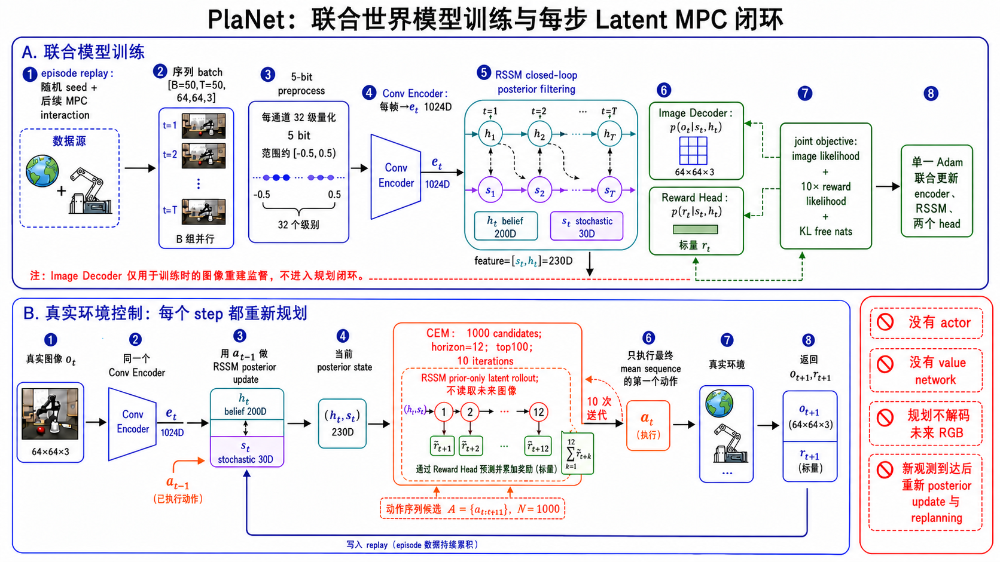
- 上半部训练链：episode replay → 序列 → 5-bit 图像预处理 → convolution encoder → RSSM posterior filtering →
[s_t,h_t]feature → image/reward heads → joint variational objective → 单一 Adam optimizer。 - 下半部控制链：真实图像
o_t→ encoder → posterior update → 当前 posterior state → CEM → 纯 prior latent rollout → reward head 累计预测奖励 → 只执行第一动作 → 真实环境返回下一观测。 - 新观测到达后必须重新 posterior update 和 replanning。
- 明确标出：PlaNet 没有 actor、没有 value network；CEM 不解码未来图像；规划轨迹不是 pixel rollout。
- 明确训练数据由随机 seed episode 与后续 MPC interaction 持续写入 episode 目录。
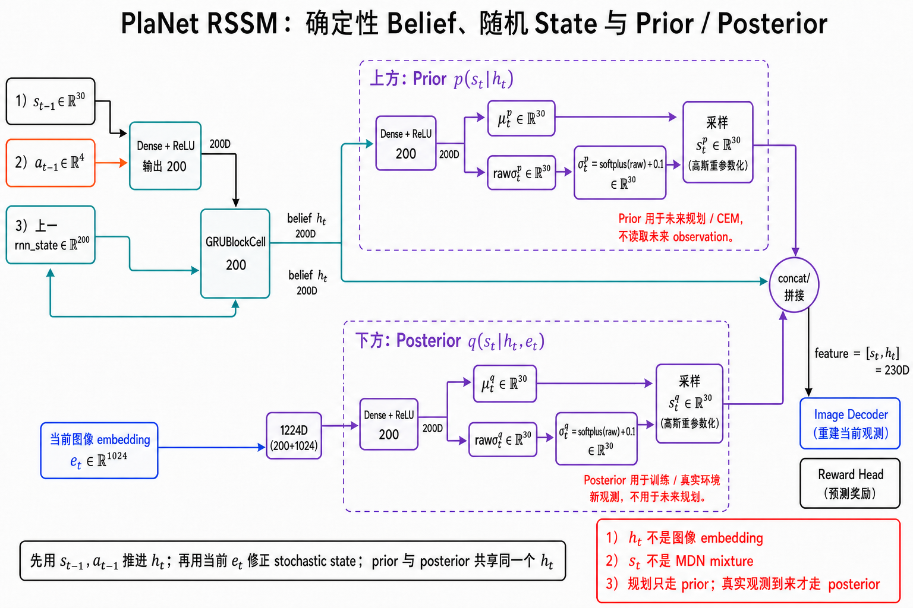
- 上一状态包含 、，并接收 。
- Transition：。
- Prior：，其中 ，再采样
s_t^p。 - Posterior：先执行同一个 transition 得到
h_t，再将[h_t,e_t(1024D)]输入 Dense ReLU 200，输出μ_t^q,σ_t^q并采样s_t^q。 - Decoder 与 reward head 的 feature 是 。
- 训练/真实观测更新走 posterior；CEM 想象未来走 prior；prior 不读取未来图像。
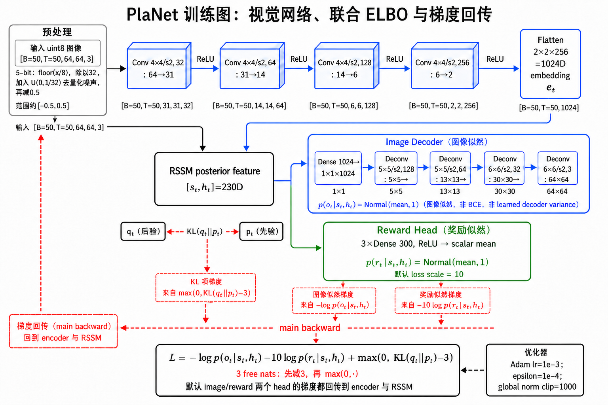
- 输入 batch 为
[50,50,64,64,3]；5-bit 量化后加入均匀去量化噪声并平移到约[-0.5,0.5)。 - Encoder 四层
Conv 4×4, stride 2, VALID, ReLU：，通道 ，最终 。 - RSSM posterior feature 同时进入 image decoder 与 reward MLP。
- Decoder：Dense 1024 →
1×1×1024→ deconv5/2:5×5×128→5/2:13×13×64→6/2:30×30×32→6/2:64×64×3，输出Normal(mean,1)。 - Reward head：3 层、每层 300 单元、ReLU，输出标量
Normal(mean,1)；默认 reward likelihood scale 为 10。 - 总目标准确写为最小化 。
- Adam 、、global norm clip
1000；image/reward 两个 head 默认都把梯度传回 encoder 与 RSSM。
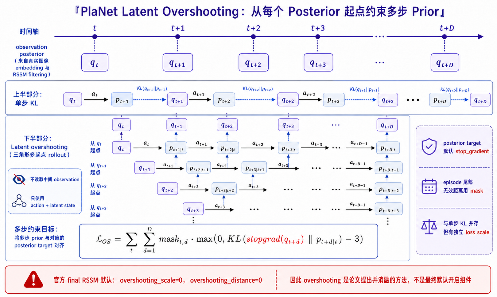
- 从每个 observation posterior state 作为多步预测起点。
- 给定后续真实 action，使用 RSSM prior open-loop rollout 步，不读取中间观测。
- 第
d步 prior 与时间对齐的 posterior target 计算 。 - Posterior target 默认
stop_gradient，无效尾部使用 mask，KL 同样应用 3 free nats。 - 区分单步 KL 与 overshooting KL 的梯度路径。
- 醒目标注：官方 final RSSM 默认 、；这是论文提出并消融的方法，但不是最终默认开启组件。
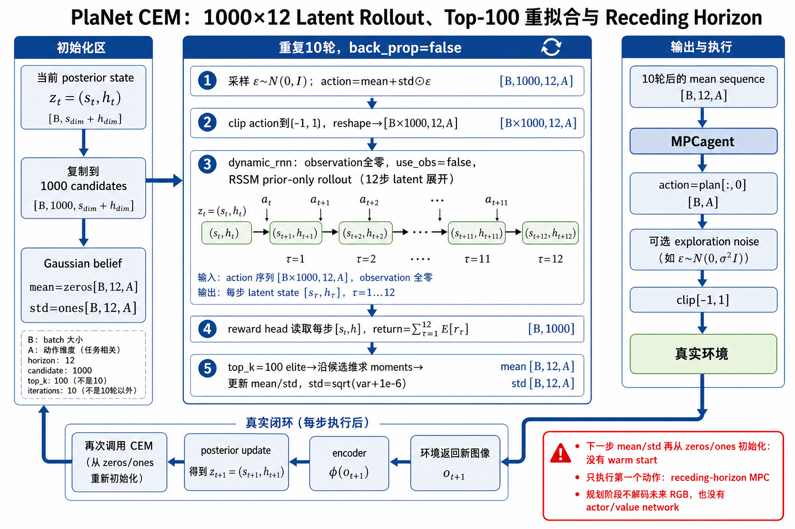
- 当前 posterior state 复制为
1000个候选；动作维度写成任务相关的A。 - 初始 Gaussian belief：、。
- 每轮采样
action[B,1000,12,A]，clip 到[-1,1]，reshape 为[B×1000,12,A]。 - RSSM
dynamic_rnn使用零 observation 与 做 prior-only rollout；reward head 直接读取 latent feature，沿 horizon 累加奖励。 - 从 1000 个 return 中选 top 100，对 elite action sequence 沿候选维求 mean/variance，更新 Gaussian；共 10 轮且 。
- planner 返回最终 mean sequence
[B,12,A]，MPCAgent只执行action[:,0]。 - 下一真实观测到达后重新编码和 posterior update；下一步 CEM 的 mean/std 从零和一重新初始化，不做 warm start。
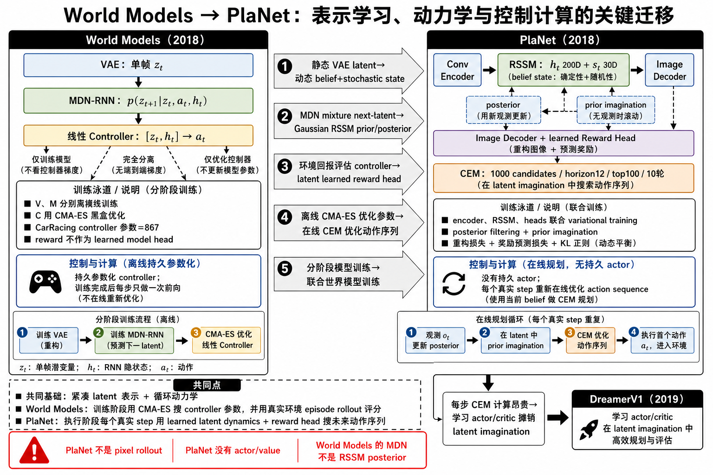
- World Models：VAE、MDN-RNN、controller 分阶段训练；动态模型预测 latent mixture；reward 不作为 learned head；CMA-ES 优化持久的 867 参数线性 controller。
- PlaNet：encoder、RSSM、image/reward heads 联合训练；确定性 belief 与随机 state 并存；reward 在 latent 中学习；每个真实环境步重新运行 CEM。
- World Models 的控制计算主要发生在 controller 训练阶段；PlaNet 的大量候选 rollout 发生在部署的每个真实 step。
- 两者真实闭环都由新观测刷新内部状态，但 PlaNet 的 planning 始终在 latent prior 中进行，不解码未来 RGB。
- 底部点明向 DreamerV1 的下一步：用 actor/critic 摊销每步 CEM 搜索，同时保留 latent imagination。
论文：Learning Latent Dynamics for Planning from Pixels（arXiv:1811.04551）
官方仓库：google-research/planet
固定提交：c04226b6db136f5269625378cd6a0aa875a92842
1. 一句话结论
PlaNet 是一个从像素学习世界模型、再在 latent space 中在线规划的纯 model-based agent。它没有 actor，也没有 value network。每个真实环境步，模型先用当前图像做 posterior filtering，随后 CEM 在 RSSM prior 中评估大量候选动作序列，reward head 给候选打分，最终只执行第一动作；下一张真实图像到达后，再重新校正 latent state 并重新规划。
2. 面向新手的整体直觉
可以把 PlaNet 理解成三部分：
- 看懂当前画面。 卷积 encoder 把
64×64×3图像变成1024Dembedding。 - 维护一个带记忆的隐状态。 RSSM 同时保留
200D确定性 belief 和30D随机 state。前者像循环记忆，后者表达当前状态的不确定性。 - 在脑内试动作。 CEM 一次提出 1000 组未来 12 步动作，让 RSSM 不看未来图像地向前 rollout，用 learned reward head 计算每组方案的累计奖励，再用最好的 100 组重拟合动作分布，重复 10 轮。
真正部署时，不会把预测图像喂回模型继续规划。图像 decoder 主要服务于训练 likelihood 与可视化；规划只需要 latent transition 和 reward head。
3. 证据边界
- P：论文事实。 模型定义、变分目标、规划算法和实验设置。
- S：固定源码事实。 当前提交中的实际函数调用、张量操作和默认路径。
- C：配置事实。
scripts/configs.py展开后的参数；必须区分debug()的小参数与default()的正式参数。 - R：显式推断。 例如按源码 shape 推导某个中间张量宽度。
特别注意：源码包含 SSM、RSSM、DRNN 和 overshooting 等多种实验组件，但“代码存在”不代表 final RSSM 默认启用。
4. 新手应该怎样按源码顺序阅读
推荐顺序如下：
planet/scripts/train.py::process：看入口如何创建配置、收集初始 episode、构建 dataset。planet/scripts/configs.py：确认 batch、模型尺寸、loss scale、optimizer 和 CEM 参数。planet/training/define_model.py::define_model：看 encoder、RSSM、head 如何组成一张 TensorFlow graph。planet/networks/conv_ha.py：核对 encoder/decoder 的精确卷积尺寸。planet/models/rssm.py：理解 prior、posterior、belief、sample 和 feature。planet/tools/unroll.py：看训练 filtering 与 open-loop prediction 如何调用 cell。planet/training/utility.py::compute_objectives：核对 likelihood、KL、free nats 和 overshooting。planet/control/mpc_agent.py::perform：看真实环境每一步的 posterior update 和动作执行。planet/control/planning.py::cross_entropy_method：看 1000×12 候选如何展开、筛选和重拟合。
5. 从 episode 到 [50,50,...] 训练 batch
5.1 初始数据不是由已训练模型产生
train.py::process 首先调用 training.utility.collect_initial_episodes(config)。正式默认配置为每个 train/test task 各收集 5 个 seed episode。此时还没有可用的世界模型，因此这是启动 replay 的冷启动数据。
5.2 后续数据来自当前 MPC agent
define_model.py 在训练 graph 内注册 active collection。默认每隔一定训练步数启动 simulation；simulate_episodes() 把当前 encoder、RSSM、planner 和 objective 绑定进 MPCAgent，真实交互结果继续写入 episode 目录。因此数据分布会从初始探索逐渐转向当前规划器能访问的区域。
5.3 默认序列形状
configs.py::_data_processing 的正式默认值是：
batch_shape = (50, 50)
B = 50 个序列
T = 50 个时间步
image = [50, 50, 64, 64, 3]
action = [50, 50, A]
reward = [50, 50]
不要误读文件开头的 debug()：其中 、、 只是快速调试配置。
6. 图像预处理与 Encoder 精确 shape
6.1 5-bit 去量化
tools/preprocess.py::preprocess 默认使用 ：
bins = 2 ** 5
image = floor(float(image) / 8)
image = image / 32
image += Uniform(0, 1/32)
image -= 0.5
量化减小了像素取值复杂度，均匀噪声用于 dequantization，避免把离散像素当作连续密度时出现退化 likelihood。
6.2 四层 VALID 卷积
networks/conv_ha.py::encoder 对 [B,T,H,W,C] 先展平前两维，再做四层 ：
| 层 | 输出空间尺寸 | 通道 |
|---|---|---|
| 输入 | 64×64 |
3 |
| Conv1 | 31×31 |
32 |
| Conv2 | 14×14 |
64 |
| Conv3 | 6×6 |
128 |
| Conv4 | 2×2 |
256 |
最终 flatten 为 ，源码用 assertion 明确检查这一点，然后恢复为 [B,T,1024]。
7. RSSM：为什么同时需要 h_t 与 s_t
7.1 状态字典不是一个向量
默认 RSSM.state_size 包含：
mean: 30
stddev: 30
sample: 30
belief: 200
rnn_state:200
belief 和 rnn_state 在默认 GRU 路径中数值相近，但源码把两者都保留在状态结构里。decoder/reward 真正读取的是 concat(sample, belief)，宽度为 230D。
7.2 Transition prior
RSSM._transition() 的执行顺序是：
[prev_sample(30D), prev_action(A)]
→ Dense ReLU 200
→ GRUBlockCell(previous rnn_state 200D)
→ belief h_t 200D
→ Dense ReLU 200
→ mean 30D 与 stddev 30D
→ stddev = softplus(raw) + 0.1
→ sample s_t^p
最小标准差 0.1 防止 prior 过早变成近似确定性的尖峰分布。
7.3 Observation posterior
RSSM._posterior() 先调用同一个 transition 得到当前 belief，再拼接当前图像 embedding：
[belief 200D, embedding 1024D] = 1224D
→ Dense ReLU 200
→ posterior mean/stddev 30D
→ sample s_t^q
posterior 不会重新产生另一套 belief；它共享 transition 已推进到当前时刻的 h_t，只用 observation 修正随机 state。
7.4 训练和规划走不同路径
- 训练 filtering 与真实环境更新：，走 posterior。
- CEM 预测未来：observation 置零、，走 prior。
这正是“从真实观测校正当前状态，但未来只能依靠模型预测”的因果边界。
8. Decoder 与 Reward Head
8.1 Image decoder
输入 230D feature 后，decoder 先 Dense 到 1024，再 reshape 为 1×1×1024：
Deconv 5×5/s2,128 → 5×5
Deconv 5×5/s2,64 → 13×13
Deconv 6×6/s2,32 → 30×30
Deconv 6×6/s2,3 → 64×64×3
输出分布是 Independent(Normal(mean,1), 3 image dims)。方差固定为 1；不是 BCE，也不是 learned variance。
8.2 Reward head
networks/basic.py::feed_forward 默认由 3 层、每层 300 单元的 ReLU MLP 构成，最终输出标量 mean，并同样包装成固定标准差 1 的 Normal 分布。这里的 ReLU 来自 configs.py 的正式默认 activation='relu'；不要把其他实验配置或后续 Dreamer 实现中的 ELU 混入 PlaNet 默认路径。
默认 。这不是说 reward 数值乘以 10，而是优化总目标时 reward negative log-likelihood 的权重为 10。
9. 联合变分目标与梯度流
compute_objectives() 从 posterior state 构造 raw feature，然后分别计算 image log-prob、reward log-prob 和 posterior/prior divergence。按默认 scale，可写为：
9.1 3 free nats 的源码语义
源码不是 max(KL,3)，而是：
loss = tf.maximum(0.0, loss - 3.0)
即 KL 小于 3 nats 时不继续施加压缩压力，超过部分才进入 loss。
9.2 为什么叫联合训练
image、reward 和 divergence 默认都进入 main objective，合并成一次 backward pass。gradient_heads=['image','reward'] 意味着两个 likelihood head 的梯度默认都能回到 RSSM 与 encoder。
优化器是 Adam：、；global norm clipping 阈值为 1000。
10. Latent overshooting
Overshooting 从每个 observation posterior state 出发，给定后续真实 action，在不读取中间 observation 的情况下运行多步 prior，再把第 d 步 prior 与时间对齐的 posterior target 做 KL。
默认 ，因此 posterior target 被 stop_gradient；episode 尾部超出有效长度的项通过 mask 排除。overshooting KL 同样应用 3 free nats。
必须强调：正式 RSSM 默认 、。它是论文的重要方法与消融对象，但不是默认 final agent 必须开启的 loss。
11. CEM 的逐张量执行
11.1 初始化
对 batch 中每个当前 posterior state，规划器建立：
mean = zeros[B, 12, A]
std = ones [B, 12, A]
amount = 1000
topk = 100
iterations = 10
11.2 一轮迭代
- 从 Gaussian belief 采样
[B,1000,12,A]动作。 - clip 到 action bounds，reshape 为
[B×1000,12,A]。 - 当前 state 复制为
B×1000份。 tf.nn.dynamic_rnn接收零 observation 和 ，执行 12 步 prior-only rollout。objectives.reward()对每步 latent feature 调 reward head 并沿时间求和，得到[B,1000]return。top_k选 100 个 elite action sequence。- 沿 elite 维计算 mean/variance，更新 。
整个 CEM ；它是在线数值优化，不是可微 actor training。
11.3 只执行第一动作
cross_entropy_method() 返回最终 mean sequence [B,12,A]；MPCAgent.perform() 立即执行：
action = action[:, 0]
这就是 receding-horizon MPC。后面 11 个动作只是当前时刻的计划，不会一次性全部执行。
11.4 没有 warm start
、 定义在 planner 每次函数调用内部。下一真实 step 再调用 CEM 时会重新初始化，而不是把上一轮计划左移作为 warm start。
12. 一次真实环境 step 的逐函数时间线
MPCAgent.perform() 的实际顺序：
preprocess_fn(observ)做 5-bit 处理。encoder({'image': observ[:,None]})[:,0]得到当前 1024D embedding。- 从 local variable 读取上一步保存的 RSSM state 和
prev_action。 - 设置 ，调用 RSSM cell 做当前 posterior update。
- 把更新后的 posterior state传入 CEM planner。
- planner 在 prior 中评估候选，返回 12 步 mean plan。
- 只取
plan[:,0]，可选叠加 exploration noise，再 clip 到[-1,1]。 - 保存当前 posterior state 和本次 action，供下一真实 step 使用。
- 环境执行 action；新的 observation 在下一次
perform()才进入 posterior。
experience() 在 agent 中不做在线梯度更新；episode 数据由环境 wrapper 写盘，模型训练由外层 training schedule 执行。
13. 训练、规划和部署的计算边界
| 阶段 | 使用 observation | 使用 posterior | 使用 prior rollout | 解码图像 | 更新参数 |
|---|---|---|---|---|---|
| 世界模型训练 | 是 | 是 | 单步；可选多步 | 是 | 是 |
| CEM 候选评估 | 只在起点 | 起点状态 | 是，12 步 | 否 | 否 |
| 真实动作执行 | 当前真实图像 | 是 | 规划时使用 | 否 | 否 |
14. 与 World Models 的根本差异
- World Models 分别训练 VAE 和 MDN-RNN；PlaNet 联合训练 encoder、RSSM、image/reward heads。
- World Models 的 latent 与 RNN memory 是松散组合；RSSM 把 deterministic belief 与 stochastic state 写进同一个状态空间模型。
- World Models CarRacing 没有 learned reward head；PlaNet 在 latent 中直接预测 reward。
- World Models 用 CMA-ES 学一个持久 controller；PlaNet 每个真实 step 用 CEM 临时求动作序列。
- PlaNet 的在线计算约为
1000 candidates × 12 steps × 10 iterations，这正是 DreamerV1 后续用 actor/critic 摊销搜索的重要动机。
15. 初学者最容易犯的错误
15.1 把 PlaNet 说成 policy network
错误。PlaNet 没有 actor；planner 输出来自每一步重新运行的 CEM。
15.2 把 decoder 放进 CEM 主循环
错误。候选评分由 reward head 直接读取 latent feature，不需要生成 RGB。
15.3 把 h_t 和 s_t 当成同一变量
错误。h_t 是 200D deterministic belief；s_t 是 30D Gaussian stochastic sample；head 输入才是二者拼接。
15.4 认为 overshooting 默认开启
错误。源码实现存在，但 final RSSM 默认 scale 和 distance 都为 0。
15.5 认为 CEM 会沿用上一步分布
错误。每次 planner call 都重新建立 zeros mean 和 ones std。
16. Active source path 索引
| 功能 | 固定源码位置 |
|---|---|
| 主入口与 dataset | planet/scripts/train.py::process |
| 正式配置 | planet/scripts/configs.py::default |
| 模型组装 | planet/training/define_model.py::define_model |
| 图像网络 | planet/networks/conv_ha.py |
| RSSM prior/posterior | planet/models/rssm.py |
| closed/open loop | planet/tools/unroll.py |
| likelihood、KL、free nats | planet/training/utility.py::compute_objectives |
| overshooting | planet/tools/overshooting.py |
| CEM | planet/control/planning.py::cross_entropy_method |
| 真实 step | planet/control/mpc_agent.py::perform |
| reward objective | planet/scripts/objectives.py::reward |
17. 复现与调试检查表
- 确认运行的是
default/实验配置，而不是debug小模型。 - 检查输入图像确实是
64×64×3，否则 encoder 的1024Dassertion 会失败。 - 检查 5-bit preprocess 只在正确位置执行一次。
- 打印 posterior/prior
mean/stddev/sample/belief/rnn_state的 batch/time shape。 - 确认
stddev始终包含+0.1下界。 - 检查 decoder/reward feature 是
[sample,belief]，不是只用其中一个。 - 分开记录 image、reward、divergence 和 overshooting objective。
- 检查 free nats 是
max(0,KL-3)。 - 确认默认 overshooting loss 没有被误开启。
- 在 planner 内记录 action、return、elite 和 mean/std shape。
- 确认 candidate=1000、topk=100、iterations=10、horizon=12。
- 确认 planner 使用 ，且 future observation 为零占位。
- 确认执行的是
plan[:,0]，不是完整 12 步序列。 - 检查下一 step 的 CEM 是否重新初始化 mean/std。
- 不用 reconstruction 好看程度替代 latent planning 性能评估。
展开结论证据表
| 结论 | 证据等级 | 来源定位 | 置信度 | 限制/备注 |
|---|---|---|---|---|
| PlaNet 是纯 model-based 方法，使用 latent MPC，不含 policy/value 网络 | P/S | tex/sections/planning.tex; repo/planet/control/mpc_agent.py |
高 | 后续 Dreamer 改变了这一点 |
| RSSM 同时包含确定性与随机 transition path | P/S | tex/sections/model.tex; models/rssm.py:47-128 |
高 | 消融实验表明两条路径都重要 |
| 默认 stochastic state 为 30D、deterministic state 为 200D | P/C/S | tex/sections/appendix.tex; scripts/configs.py:121-137 |
高 | model_size 也控制 embedding MLP 宽度 |
| Decoder/reward feature 由 sample 与 belief 拼接 | S | models/rssm.py:83-85 |
高 | 默认配置下 feature width 为 230 |
| 训练目标结合 image/reward likelihood 与 posterior-prior KL | P/S | tex/sections/model.tex; training/utility.py:192-234 |
高 | Reward scale 默认为 10 |
| KL 使用 3 free nats | P/C/S | tex/sections/appendix.tex; configs.py:189; utility.py:208-212 |
高 | 代码先减阈值，再裁剪到零 |
| Latent overshooting 让多步 prior 靠近 posterior target | P/S | tex/sections/overshooting.tex; tools/overshooting.py |
高 | Posterior 可使用 stop-gradient |
| 最终 RSSM agent 默认不启用 overshooting | P/C/S | tex/sections/appendix.tex; configs.py:184,190 |
高 | 该方法对其他模型仍有一般价值 |
| CEM 使用 horizon 12、1000 个候选、top 100、10 轮迭代 | P/C/S | tex/sections/appendix.tex; configs.py:287-296; planning.py |
高 | Action repeat 随任务变化 |
| CEM 在每个真实环境步重新初始化 | P/S | tex/sections/planning.tex; planning.py 中局部 , |
高 | 不使用 warm start |
| 候选评估不解码图像 | P/S | tex/sections/planning.tex; scripts/objectives.py |
高 | Reward head 直接读取 latent feature |
| 最终 mean plan 只执行第一个动作 | S | control/mpc_agent.py:67-83 |
高 | 经典 receding-horizon MPC |
DreamerV1
arXiv 1912.01603 · d517542f9777c53864ff6f2683cea88be9ea98ac
6 张结构与数据流图
先通过完整结构图建立模型全局认识，再进入论文推导、张量形状、训练时序、真实调用路径与源码注意事项。
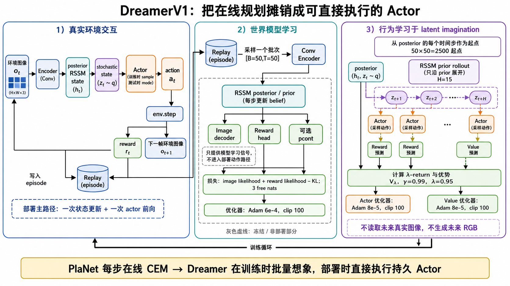
- 循环 A：真实环境产生
o_t,r_t,a_t，episode 写入 replay。 - 循环 B：从 replay 采样 ，Encoder + RSSM posterior 学习世界模型；image/reward likelihood + KL，模型学习率
6e-4。 - 循环 C：把 replay posterior 的每个时间步展平为 imagination 起点，在 prior dynamics 中展开 ，训练 actor 与 value，学习率均为
8e-5。 - 部署路径必须画为：真实图像 → Encoder → posterior RSSM → actor mode/sample → 环境动作。
- image decoder 只属于世界模型训练损失，不进入部署动作主路径。
- 禁止出现 CEM、actor-critic 直接读取未来真实图像、未来 RGB 解码作为行为学习输入。
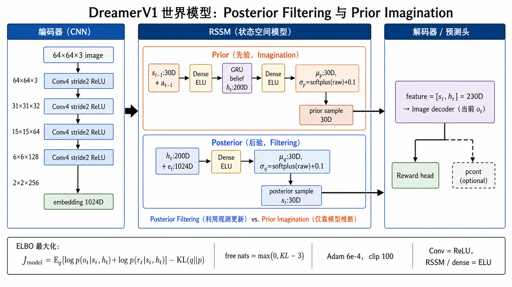
- 输入图像
64×64×3经四层 stride-2 Conv： channels，flatten 为1024D embedding。 - transition prior：
[s_{t-1}^{30D},a_{t-1}]→ Dense+ELU → GRU200D belief h_t→ Dense+ELU →μ_t^p,σ_t^p，其中 。 - posterior：
[h_t^{200D},embedding_t^{1024D}]→ Dense+ELU →μ_t^q,σ_t^q→ samples_t^{30D}。 - feature 为 ，进入 image decoder、reward head；
pcont仅是可选 profile。 - 模型目标：image log-likelihood + reward log-likelihood − KL；源码 free nats 实现为
max(0, KL−3)。 - 默认激活必须区分：Conv Encoder 是 ReLU；RSSM 与 dense heads 的配置默认是 ELU。
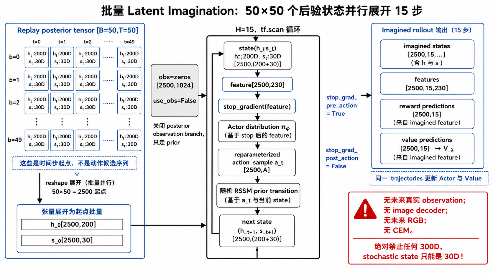
- posterior state 来自 replay batch
[50,50,...]，源码把前两维展平为2500个独立起点。 - 、，后续只执行 transition prior，不读取真实图像。
- 每个 imagined step：feature
[2500,230]→ stop-gradient 后送 actor → reparameterized action sample → RSSM prior → next state。 tf.scan展开 ，转置后 state trajectory 为[2500,15,...]。- reward/value head 对 imagined features 计算预测；不调用 image decoder，不生成未来 RGB。
- 必须明确“同一批 imagined trajectories 同时用于 action 与 value 更新”。
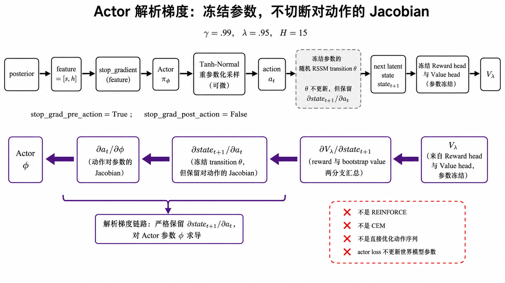
- 前向路径：posterior start → stop-gradient(feature) → actor distribution → reparameterized action → frozen RSSM transition → predicted reward/value → lambda return。
- 反向梯度：lambda return 对 actor 参数求导，穿过 reward/value 对 state 的导数、RSSM 对 action 的 Jacobian、以及 action sample 的重参数化路径。
- 世界模型与 value 网络参数在 actor optimizer 中不更新，但计算图不能整体 detach；必须区分“参数冻结”和“梯度路径切断”。
- 保护起点表示； 保留 action 后的解析梯度。
- 禁止画成 REINFORCE、score-function、CEM、对动作序列直接做梯度下降，或 actor loss 更新世界模型参数。
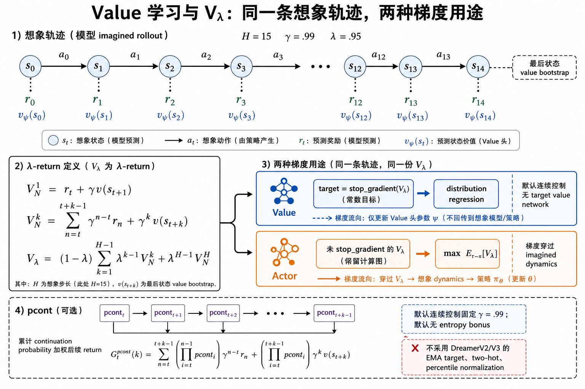
- imagined sequence 给出
r_τ、v_ψ(s_τ)、折扣 ；最后状态 value 用于 bootstrap。 - 展示
V_N^k：前 k 步奖励加上第 k 步 bootstrap value。 - 展示 ，。
- value head 回归 stop-gradient 的 lambda-return target；actor 最大化未 stop-gradient 的 lambda return。
- 默认连续控制没有 target value network；默认无 entropy bonus。
- 若画
pcont，必须标成可选：用累计 continuation probability 为后续项加权，不得冒充默认连续控制必选模块。
- 数据调度：5 个随机 episode 初始化；之后交替执行 100 个训练 step 与收集 1 个 episode；action repeat 固定 2；训练动作加入 exploration noise。
- 训练阶段三组 optimizer：model
6e-4、actor8e-5、value8e-5，gradient norm clip 100。 - 真实部署每步只做：图像编码、posterior state update、一次 actor forward、执行动作；不做 CEM。
- 对比 PlaNet：每个真实 step 做在线 CEM（1000 candidates、top100、10 iterations、horizon12）；Dreamer 把规划计算摊销进持久 actor。
- 必须明确 release 仓库仍保留 CEM legacy path，但
defaults:[dreamer]的 active path 是policy_sample/policy_mode。
# DreamerV1 源码级详细审计
论文：Dream to Control: Learning Behaviors by Latent Imagination（arXiv:1912.01603）
源码仓库：google-research/dreamer
固定提交：d517542f9777c53864ff6f2683cea88be9ea98ac
本章面向第一次阅读 DreamerV1 源码的读者。重点不是重复论文摘要，而是沿着固定提交中的实际调用链回答：数据从哪里进入、张量怎样变化、哪个分支读取真实图像、哪个分支只走 prior、梯度在哪里被截断、哪些参数只冻结而不切断 Jacobian，以及测试时为什么不再运行 CEM。
1. 先给出完整结论
DreamerV1 的核心变化可以压缩成一句话：PlaNet 把 RSSM 用作每个真实环境 step 的在线规划器；DreamerV1 则把 RSSM 变成可微的 latent training environment，用批量 imagined trajectories 训练一个持久化 Actor，部署时只需一次 Actor 前向计算。
这句话包含四个容易被忽略的限定：
- 世界模型仍然是 PlaNet 风格 RSSM。 它没有因为引入 Actor 就丢掉 deterministic belief、stochastic state、posterior 和 prior。
- 行为学习的输入是 latent feature，不是重建图像。 Image decoder 主要给世界模型提供 likelihood 学习信号，部署动作路径不需要把 latent 解码回 RGB。
- 想象不是生成视频。
imagine_forward()把 observation 置零并令 ，后续只调用 transition prior；它得到的是 state trajectory、reward prediction 和 value prediction。 - Actor 的世界模型参数被冻结，但世界模型计算图不能整体 detach。 Actor 需要通过 RSSM transition 对 action 的 Jacobian 获得解析梯度；冻结的是参数更新集合，不是所有中间导数。
2. 固定源码与 active path
2.1 仓库入口
连续控制 README 命令使用：
python3 -m dreamer.scripts.train \
--logdir ./logdir/control \
--params '{defaults: [dreamer], tasks: [walker_run]}'
defaults: [dreamer] 在 dreamer/scripts/configs.py 中把三个关键开关设为：
dreamer=dict(
train_planner='policy_sample',
test_planner='policy_mode',
planner_objective='reward_value',
action_head=True,
value_head=True,
train_action_noise=0.3,
)
因此需要区分：
- 训练时
policy_sample从 Actor 分布采样动作； - 测试时
policy_mode取分布的 mode； - 、；
- 默认不是
train_planner='cem'或test_planner='cem'。
仓库仍保留 PlaNet 兼容路径。例如 README 明确允许把 planner 设置为 CEM、关闭 action/value head、把 imagination_horizon 设为 0。这些代码存在不等于 DreamerV1 默认运行会调用它们。阅读源码时第一原则是沿配置构造出的 active path 追踪，而不是看到函数名就把所有模块都算入算法。
2.2 论文配置与 release 默认的差异
论文附录描述 dense action/value 网络为三层、每层 300 个 ELU 单元；release 的 configs.py 允许覆盖深度和宽度，默认全局 、，而 action head 默认显式使用 。因此报告中采用两层表述：
- 论文事实： 3×300、ELU dense action/value 网络；
- 源码事实： 配置可变，默认 action head 为 4 层，通用 head 宽度由
num_units控制。
不能把这两个版本合成一句“源码固定为三层 300”，也不能反过来用 release 默认覆盖论文实验描述。
3. 数据集、episode 与 batch
3.1 数据收集顺序
论文附录给出的连续控制数据调度是：
- 先用随机动作收集 个 seed episodes；
- 之后交替执行
100个训练 steps 与收集1个 episode； - 每个环境统一 ；
- 连续控制训练动作使用预测动作加
Normal(0,0.3)exploration noise； - 测试时使用 Actor 的 mode，不再进行在线候选动作搜索。
这里的“100 个训练 steps”是训练与采集节奏，不应误读为每次只用 100 个 replay 样本。每个训练 step 的数据 loader 默认从 replay 中抽取 batch。
3.2 的真实含义
_data_processing() 默认设置：
config.batch_shape = params.get('batch_shape', (50, 50))
config.open_loop_context = 5
因此默认训练 batch 可以记为：
- ：同时处理 50 条 sequence；
- ：每条 sequence 包含 50 个时间位置；
- 图像输入在进入 Conv Encoder 前保留 batch 与 time 维；
- RSSM unroll 输出 prior/posterior 的每个字段都具有
[B,T,...]前缀。
是数据和评估相关的上下文设定，不能直接当成 Dreamer imagination horizon。行为学习默认使用 ，两者用途不同。
3.3 观测预处理与 Encoder
DreamerV1 的 Conv Encoder 在 dreamer/networks/conv.py：
def encoder(obs):
kwargs = dict(strides=2, activation=tf.nn.relu)
hidden = tf.reshape(obs['image'], [-1] + obs['image'].shape[2:].as_list())
hidden = tf.layers.conv2d(hidden, 32, 4, **kwargs)
hidden = tf.layers.conv2d(hidden, 64, 4, **kwargs)
hidden = tf.layers.conv2d(hidden, 128, 4, **kwargs)
hidden = tf.layers.conv2d(hidden, 256, 4, **kwargs)
hidden = tf.layers.flatten(hidden)
assert hidden.shape[1:].as_list() == [1024]
hidden = tf.reshape(hidden, tools.shape(obs['image'])[:2] + [1024])
return hidden
对 64×64×3 图像，四次 valid padding、kernel 4、stride 2 的空间尺寸为：
64 → 31 → 15 → 6 → 2
最后是 维 embedding。这里有两个重要细节：
- Conv Encoder 明确使用
ReLU； - RSSM 和 dense head 的默认激活由
params.get('activation','elu')决定，默认是ELU。
不能把整套网络笼统标成“全部 ELU”，也不能画成 ResNet。
4. RSSM：posterior 与 prior 的分工
4.1 状态字段与维度
dreamer/models/rssm.py 的默认构造：
models.RSSM(
state_size=30,
belief_size=200,
embed_size=200,
future_rnn=True,
mean_only=False,
min_stddev=0.1,
activation=config.activation,
num_layers=1)
RSSM state 是一个字典，不是一个单独的 230D 向量：
| 字段 | 维度 | 作用 |
|---|---|---|
mean |
30 | 对角 Gaussian 的均值 |
stddev |
30 | 得到的标准差 |
sample |
30 | 从 Gaussian 采样的 stochastic state |
belief |
200 | deterministic belief，保存历史与动作影响 |
rnn_state |
200 | GRU 内部 recurrent state |
，但这个 230D feature 是由 sample 和 belief 拼接得到的行为/预测输入；它不是说 RSSM 内部只有一个扁平状态字段。
4.2 Prior transition
_transition(prev_state, prev_action, zero_obs) 的真实路径为：
[prev_state['sample']:30D, prev_action] --concat-->
Dense(200, ELU) --→ hidden
GRUBlockCell(200D) --→ belief:200D, rnn_state:200D
Dense(200, ELU) --→ hidden
Dense(30) --→ mean
Dense(30, softplus)+0.1 --→ stddev
MultivariateNormalDiag(mean, stddev) --→ sample:30D
时，第一段 GRU 输出的 belief 会作为后续 dense 的输入。transition 不读取当前图像，因此它可以在未来 observation 不可见时进行开环 rollout。
4.3 Posterior filtering
_posterior(prev_state, prev_action, obs) 首先调用同一个 transition template 得到 prior belief，然后执行：
[prior['belief']:200D, embedded_image:1024D] --concat-->
Dense(200, ELU) --→ hidden
Dense(30) --→ posterior mean
Dense(30, softplus)+0.1 --→ posterior stddev
MultivariateNormalDiag(...) --→ posterior sample:30D
这正是 posterior 和 prior 的差异：
- prior 只看过去 state 与 action；
- posterior 在同一时间位置额外看当前 image embedding；
- 训练时 posterior 负责把 replay 图像过滤成 state；
- imagination 时没有未来 image，所以只能走 prior。
4.4 Base.call 的条件分支
dreamer/models/base.py 中的 Base.call() 把两条路径统一成一个 RNNCell：
obs, prev_action, use_obs = inputs
prior = self._transition_tpl(prev_state, prev_action, zero_obs)
posterior = tf.cond(
use_obs,
lambda: self._posterior_tpl(prev_state, prev_action, obs),
lambda: prior)
return (prior, posterior), posterior
因此：
- ：当前图像存在，返回 posterior 作为下一状态；
- ：posterior 分支退化为 prior，完全不读取真实图像；
- closed-loop replay unroll 用 posterior；
- latent imagination 用 prior。
5. 世界模型损失与 3 free nats
5.1 define_model.py 的图构建顺序
真实训练图的关键顺序是：
embedded = encoder(data)
prior, posterior = tools.unroll.closed_loop(
cell, embedded, data['action'], config.debug)
objectives = utility.compute_objectives(
posterior, prior, data, graph, config)
summaries, grad_norms = utility.apply_optimizers(
objectives, trainer, config)
这说明模型训练不是“先单独训 VAE，再单独训 RNN”的旧式两阶段流程。固定提交中的 active path 是：
- batch image 进入 Encoder；
- action 与 embedding 进入 RSSM closed-loop；
- 得到整段 prior/posterior；
- 统一构造 image、reward、divergence 以及可选行为目标；
- 按变量范围把 objective 交给不同 optimizer。
5.2 重建与 reward head
RSSM feature [sample,belief] 为 230D，进入：
imagehead：反卷积 decoder，重建当前 observation；rewardhead：dense distribution，预测当前 reward；pconthead：只有选择 pcont profile 时启用。
Image decoder 的源码路径是 dreamer/networks/conv.py::decoder：先把 feature 映射到 1024，reshape 成 1×1×1024，再经过三层 transposed convolution，最后输出 observation shape。它为 likelihood 提供训练信号，不是 actor 在 imagination 中的输入。
5.3 KL 与 free nats
compute_objectives() 对 divergence 使用：
loss = graph.cell.divergence_from_states(posterior, prior)
if config.free_nats is not None:
loss = tf.maximum(0.0, loss - float(config.free_nats))
默认 ，因此实际逐位置 KL 惩罚是：
effective_KL = max(0, KL(q(s_t|h_t,o_t) || p(s_t|h_t,a_{t-1})) - 3)
它不是把 KL 乘以 3，也不是把 posterior 直接替换为 prior；它只是让每个时间位置低于 3 nats 的小 KL 不产生惩罚，减轻 posterior 被过早压平的问题。
5.4 优化器与参数边界
论文默认学习率与 clip 为：
| 目标 | Adam 学习率 | 梯度 norm clip |
|---|---|---|
| World model | 6e-4 |
100 |
| Value | 8e-5 |
100 |
| Actor | 8e-5 |
100 |
apply_optimizers() 根据 objective 的 include/exclude 正则表达式把梯度分发给不同模块。行为训练时 actor optimizer 更新 actor 变量，value optimizer 更新 value 变量；RSSM 参数被视作已学习的环境模型，不由 actor loss 直接更新。
6. Imagination：从 [50,50] 到 2500 个起点
6.1 起点不是随机噪声
compute_objectives() 首先得到：
raw_features = graph.cell.features_from_state(posterior)
如果 config.imagination_horizon 非零，则：
imagination_start = posterior
raw_states = imagine_forward(
imagination_start,
config.imagination_horizon,
graph,
config,
graph.heads.action,
stop_grad_post_action=False,
stop_grad_pre_action=config.stop_grad_pre_action)
默认 。起点来自 replay posterior 的所有时间位置，而不是从一个固定 zero state 或随机 latent 开始。
6.2 展平 batch 与 time
imagine_forward()：
extended_batch = np.prod(
tools.shape(tools.nested.flatten(initial_state)[0])[:2])
在默认 下：
extended_batch = 50×50 = 2500
随后每个 state 字段从 [50,50,D] reshape 为 [2500,D]。这一步的含义是：每个 replay 时间位置都变成一条独立的 imagined rollout 起点；它不是把 2500 个 action candidates 放在同一真实 step 上，因此不能画成 PlaNet 的 CEM population。
6.3 imagined step 的精确顺序
源码 step function：
def step_fn(prev, index):
feature = graph.cell.features_from_state(prev)
if stop_grad_pre_action:
feature = tf.stop_gradient(feature)
action = policy(feature).sample()
if stop_grad_post_action:
action = tf.stop_gradient(action)
(_, state), _ = graph.cell((obs, action, use_obs), prev)
return state
默认连续控制路径可以逐行解释为：
- 从
[sample:30D, belief:200D]得到feature:230D； - 对送入 Actor 的起点 feature 做
stop_gradient； - Actor 产生 tanh-transformed Normal distribution 并 sample action；
obs是全零张量，；- RSSM
Base.call()因此只返回 prior transition； - 重复
tf.scan共 15 步； - 将 scan 输出转置回 batch-first trajectory。
源码中明确写有：
obs = tf.zeros([extended_batch] + list(graph.embedded.shape[2:]))
use_obs = tf.zeros([extended_batch, 1], tf.bool)
所以 imagination 绝不能画成“每一步重新喂入真实图像”。
6.4 同一条 imagined trajectory 的两种用途
raw_states 会被 value objective 和 action objective 共用：
- Value 从 imagined feature 预测 reward/value，构造 lambda-return target；
- Actor 使用同一 return 作为可微目标，最大化未来回报；
- 这不是先把 trajectory 存盘，再用另一个环境重新采样；它们在同一 TensorFlow graph 中共享 rollout 计算。
7. Actor distribution 与 action sample
7.1 连续动作 head
configs.py 的 action head：
config.heads.action = tools.bind(
config.head_network,
num_layers=params.get('action_layers', 4),
mean_activation=ACTIVATIONS[
params.get('action_mean_activation', 'none')],
dist=params.get('action_head_dist', 'tanh_normal_tanh'),
std=params.get('action_head_std', 'learned'),
min_std=params.get('action_head_min_std', 1e-4),
init_std=params.get('action_head_init_std', 5.0))
feed_forward() 先运行多层 dense，再输出 mean；当 distribution 为 tanh_normal_tanh 时：
- mean 先经
5*tanh(mean/5)限制尺度； - std 若为 learned，则 ；
- 构造 Normal；
- 通过 tanh 变换到动作范围；
sample()支持 reparameterized gradient。
论文中“mean scaled by 5”与源码 tanh_normal_tanh 的实现是一致的关键语义；不能把它画成普通 deterministic linear actor。
7.2 训练 sample 与测试 mode
- 训练
policy_sample：保留分布探索和 reparameterized sample； - 测试
policy_mode：取分布 mode； - 真实环境训练动作还会叠加配置的 exploration noise；
- latent imagination 内部使用 action distribution 的 sample，再把 action 送入 RSSM prior。
这四个动作概念要区分：Actor 分布、latent sample、真实环境 exploration noise、测试 mode，不是一个“统一的随机动作”变量。
8. 解析梯度：冻结世界模型但保留 Jacobian
8.1 两个 stop-gradient 开关
configs.py 默认：
config.stop_grad_pre_action = params.get(
'stop_grad_pre_action', True)
调用 imagination 时显式传：
stop_grad_post_action=False
含义是：
- ：从 replay posterior 得到的起点 feature 不把 actor objective 的梯度传回起点表示与之前的历史；
- ：action 之后的 RSSM transition、reward/value 预测仍保留反向路径；
- 世界模型变量不加入 actor optimizer 的更新集合；
- 但
∂state_{t+1}/∂action_t仍参与∂V_λ/∂actor。
8.2 真实的反向路径
对一条 imagined trajectory，Actor 梯度可以概念化为：
V_lambda
→ predicted reward / predicted value
→ latent state_{t+1}
→ RSSM transition Jacobian ∂state_{t+1}/∂action_t
→ reparameterized action sample
→ actor parameters φ
“冻结世界模型”只表示 RSSM、reward head、value head 的参数不被 actor optimizer 写回；如果把整个 RSSM 输出 tf.stop_gradient()，就会切断 DreamerV1 的核心解析梯度，算法语义已经变成另一种方法。
8.3 为什么不是 REINFORCE
DreamerV1 连续控制的核心 actor objective 不是：
log π(a|s) × advantage
它使用 reparameterized action sample 和可微 transition，把 return 对 action 的导数直接传回 actor。DreamerV1 release 中存在离散任务的 straight-through / score 相关分布实现，但不能把 Atari 配置的实现细节泛化为连续控制论文主路径。
9. Value 与 lambda return
9.1 Value loss 的实际输入
compute_value_loss() 若没有外部 reward target，会先调用：
reward = graph.heads.reward(features).mode()
因此 imagined value training 使用的是 learned reward head 的 mode，而不是把未来真实环境 reward 偷渡进 latent rollout。
默认连续控制下：
config.value_discount = 0.99
config.value_lambda = 0.95
config.value_bootstrap = True
最后一个 imagined state 的 value 用作 bootstrap。Value target 随后被 stop-gradient，再训练 value distribution。
9.2 k-step return 与 Vλ
可以把源码调用的 control.lambda_return() 展开成：
V_N^1 = r_t + γ V(s_{t+1})
V_N^k = r_t + γ r_{t+1} + ... + γ^(k-1) r_(t+k-1)
+ γ^k V(s_(t+k))
V_λ = (1−λ) Σ[k=1..H−1] λ^(k−1) V_N^k
+ λ^(H−1) V_N^H
其中 、、。短 horizon 的直接 reward 与较远的 bootstrap value 被混合，而不是只使用最后一步 reward。
9.3 Actor 与 Value 对 target 的不同处理
同一 V_λ 在两个优化器中的用途不同：
- Value：把
V_λ当作 stop-gradient target，回归当前 value distribution； - Actor：保持
V_λ可微，最大化它，让梯度穿过 dynamics/value/reward 到 action model。
因此图中必须同时画出“Value target 的 stop-gradient”和“Actor return 的可导路径”。只画一个统一的 detach 会丢失 DreamerV1 最关键的梯度差异。
9.4 pcont 与默认连续控制
pcont 是可选 profile。启用后，value loss 可以从 得到 continuation probability，并用其累计乘积对后续 return 项加权。默认连续控制可以近似为固定 的路径，不能把 pcont head 画成所有 DreamerV1 任务都必需。
10. 环境部署闭环
真实环境的一次 step 可以按源码职责拆成：
o_t
→ preprocess / Encoder
→ RSSM Base.call(use_obs=True)
→ posterior state (sample 30D + belief 200D)
→ feature 230D
→ Actor policy_mode()
→ action clipping / environment wrapper
→ env.step(action)
→ o_(t+1), r_(t+1), done
→ write episode to replay
部署主路径没有：
- 1000 个 candidate action sequences；
- CEM top-k 筛选；
- 10 轮 CEM iteration；
- image decoder；
- 未来真实观测；
- 通过 decoder 生成的未来 RGB。
这就是 DreamerV1 相对于 PlaNet 的计算位置变化：PlaNet 把大量搜索放在每个真实 step；DreamerV1 把搜索/评估成本提前摊销进训练出的 Actor。
11. PlaNet → DreamerV1 的逐项对照
| 维度 | PlaNet | DreamerV1 |
|---|---|---|
| 状态模型 | RSSM posterior/prior | 保留 RSSM posterior/prior |
| 行为求解 | 每个真实 step 在线 CEM | 训练阶段 Actor + Value |
| latent rollout | 候选 action sequence 的 prior rollout | replay posterior 起点的批量 rollout |
| 规划规模 | horizon 12、1000 candidates、top 100、10 iterations | 默认 2500 起点、 |
| 部署计算 | posterior + 完整 CEM | posterior + 一次 Actor forward |
| 梯度 | CEM 无 actor gradient | 解析梯度穿过冻结 dynamics 对 action 的 Jacobian |
| value bootstrap | PlaNet 主路径没有持久 value actor | Vλ 与最后 state value bootstrap |
| image decoder | 模型训练/重建 | 仍用于模型训练，不在部署动作路径 |
12. 新手源码阅读顺序
建议按照下面顺序打开固定 commit：
README.md：先确认defaults: [dreamer]与 CEM legacy 配置并存；dreamer/scripts/configs.py：确认 planner、head、horizon、discount、lambda、optimizer；dreamer/training/define_model.py：确认 Encoder → closed_loop → objectives → optimizers 的总调用顺序；dreamer/networks/conv.py：确认 64×64 图像如何变成 1024D embedding；dreamer/models/base.py：看use_obs如何选择 posterior 或 prior；dreamer/models/rssm.py：看 belief、Gaussian state、feature 230D 的形成；dreamer/training/utility.py::imagine_forward：确认零 observation、2500 起点、tf.scan、H=15；dreamer/training/utility.py::compute_value_loss：确认 reward head、bootstrap、lambda return；dreamer/training/utility.py::compute_objectives：确认 action/value objective 共享 imagined state；dreamer/training/utility.py::simulate：最后再看真实环境数据收集如何接回 replay。
13. 复现与调试检查表
- [ ] 固定源码 commit 为
d517542f9777c53864ff6f2683cea88be9ea98ac。 - [ ] 确认
defaults:[dreamer]，不要误用defaults:[planet]。 - [ ] 确认训练 planner 是
policy_sample，测试 planner 是policy_mode。 - [ ] 确认 、。
- [ ] 确认 batch shape 是
[50,50]，不要把[B,T]误写成 2500 条 CEM candidates。 - [ ] 打印 Conv shape，确认 与 。
- [ ] 打印 RSSM state keys，确认
sample/mean/stddev为 30D、belief/rnn_state为 200D。 - [ ] 确认 posterior 使用 image embedding，prior 不使用未来 image。
- [ ] 确认 imagination 的 、。
- [ ] 确认 horizon 为 15，Actor 与 Value 使用同一批 imagined states。
- [ ] 确认 ，但 。
- [ ] 确认 Actor loss 没有把整个 RSSM 输出 detach。
- [ ] 确认 Value target stop-gradient，而 Actor return 保留梯度。
- [ ] 确认 free nats 实际实现为
max(0, KL−3)。 - [ ] 确认 model/action/value learning rates 分别为
6e-4/8e-5/8e-5，clip 为 100。 - [ ] 确认部署执行一次 posterior update + Actor forward，而不是 CEM。
- [ ] 若启用 pcont、discrete 或 overshooting，必须在实验记录中明确这是额外 profile，不要冒充默认连续控制。
14. 最容易导致错误结论的四个点
14.1 把 imagined state 当成生成图像
DreamerV1 的 imagination 目标是得到可用于 reward/value/actor 的 latent trajectory。除非专门调用 decoder 做可视化，否则 imagined path 不产生未来 RGB。图中把每个 latent state 后面接 image decoder，会暗示行为学习依赖视频生成，属于错误因果关系。
14.2 把“冻结”写成“不可导”
Actor optimizer 不更新 world model 参数，但 actor gradient 需要穿过 frozen transition。应在图和正文中同时写“参数冻结”和“保留 action Jacobian”，而不是只画一条断开的 stop-gradient 线。
14.3 把 CEM legacy path 当默认 Dreamer
仓库保留 CEM 是为了兼容 PlaNet 与实验配置。检查配置构造比检查文件是否存在更重要：defaults:[dreamer] 使用 policy sample/mode，defaults:[planet] 才是 CEM 主路径。
14.4 把论文和 release 网络深度混写
论文附录的 3×300 ELU 是论文描述；release 默认 action head 由 action_layers 控制且默认为 4。遇到网络深度相关结论，必须同时给出证据层级和版本边界。
15. 最终执行摘要
DreamerV1 的真正执行闭环是：
Replay image sequence
→ Conv Encoder / posterior RSSM
→ 50×50 posterior states
→ flatten to 2500 imagination starts
→ 15-step prior-only latent rollout
→ predicted reward + value
→ V_lambda
├─ stop-gradient target → Value regression
└─ differentiable return → Actor analytic gradient
部署时则压缩为：
image → posterior RSSM → Actor mode → action → environment
这两条路径必须分开理解：第一条是训练时用大量 latent imagination 换取数据效率，第二条是部署时用已摊销的 Actor 换取低决策延迟。
展开结论证据表
| 结论 | 证据等级 | 来源定位 | 置信度 | 限制/备注 |
|---|---|---|---|---|
| Dreamer 学习 dynamics，在 imagination 中学习 behavior，并通过环境交互扩充 replay | P/S | tex/sections/overview.tex; README/训练配置 |
高 | 三类过程可以交错执行 |
| Actor 与 value 都在 latent model state 上运行 | P/S | tex/sections/behavior.tex; training/utility.py |
高 | 动作路径不调用 image decoder |
| Imagined trajectory 从 replay posterior state 开始 | P/S | behavior.tex; utility.py:132-145 |
高 | 起点会展平 batch/time 维 |
| 开环 imagination 使用零观测与 RSSM prior | S | utility.py:244-267 |
高 | |
| 连续动作使用 tanh-transformed Gaussian reparameterization | P/S | behavior.tex; action head 配置与 distribution |
高 | 离散任务使用 straight-through |
| Actor 通过 dynamics 最大化可微 lambda return | P/S | behavior.tex; utility.py:303-331 |
高 | 世界模型权重不属于 actor optimizer |
| Value 拟合 stop-gradient lambda-return target | P/S | behavior.tex; utility.py:270-300 |
高 | Bootstrap 可配置 |
| 默认 horizon 15、gamma .99、lambda .95 | P/C/S | appendix.tex; configs.py:306,314-325 |
高 | Atari profile 的 horizon 为 10 |
Model/value/action 学习率分别为 6e-4/8e-5/8e-5 |
P/C/S | appendix.tex; configs.py:364-372 |
高 | Release 支持覆盖配置 |
| Model、actor、value 各自使用独立 optimizer | S | utility.apply_optimizers 的 optimizer routing 与配置 |
高 | 共享 forward graph，但参数 filter 分离 |
| 默认执行路径使用 actor，而不是 CEM | S | README 命令；DEFAULTS['dreamer'] |
高 | PlaNet 消融路径仍被保留 |
DreamerV2
arXiv 2010.02193 · 07d906e9c4322c6fc2cd6ed23e247ccd6b7c8c41
6 张结构与数据流图
先通过完整结构图建立模型全局认识，再进入论文推导、张量形状、训练时序、真实调用路径与源码注意事项。
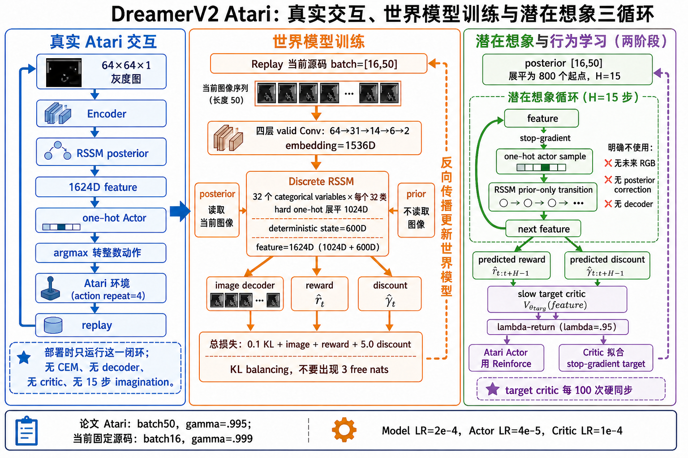
- 左侧真实交互：64×64×1 灰度图、posterior 更新、1624D feature、one-hot actor、整数 Atari action、action repeat 4、replay。
- 中部模型训练：当前源码 ，Encoder、discrete RSSM、decoder/reward/discount heads、KL balancing。
- 右侧 imagination： posterior 起点，H=15，prior-only rollout，reward/discount、lambda-return、actor/critic。
- 明确 decoder 只在模型训练；部署无 CEM、无未来 RGB、无 15 步 rollout。
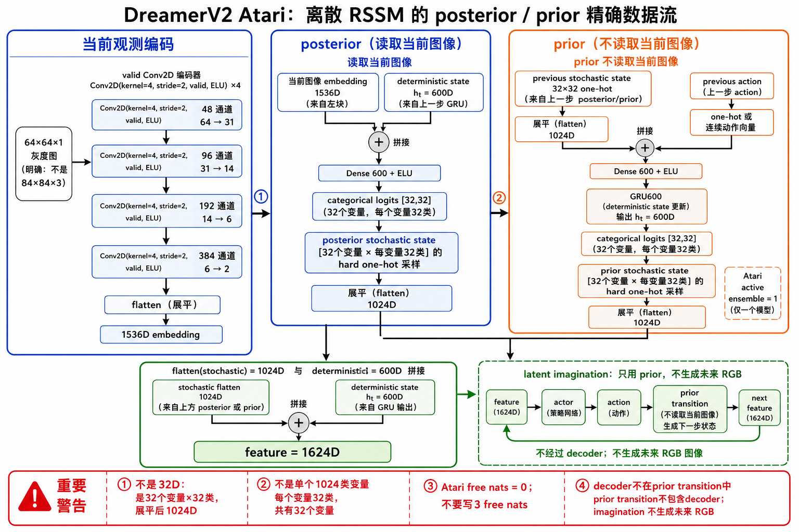
- Encoder shape：，通道 ，flatten 1536D。
- prior：previous
32×32one-hot 展平 1024D + action → Dense600 → GRU600 → logits[32,32]。 - posterior：prior deter600 + embedding1536 → Dense600 → logits
[32,32]。 - feature：1024D stochastic + 600D deterministic = 1624D。
- 标出 posterior 读取图像、prior 不读取图像；Atari active ensemble=1。
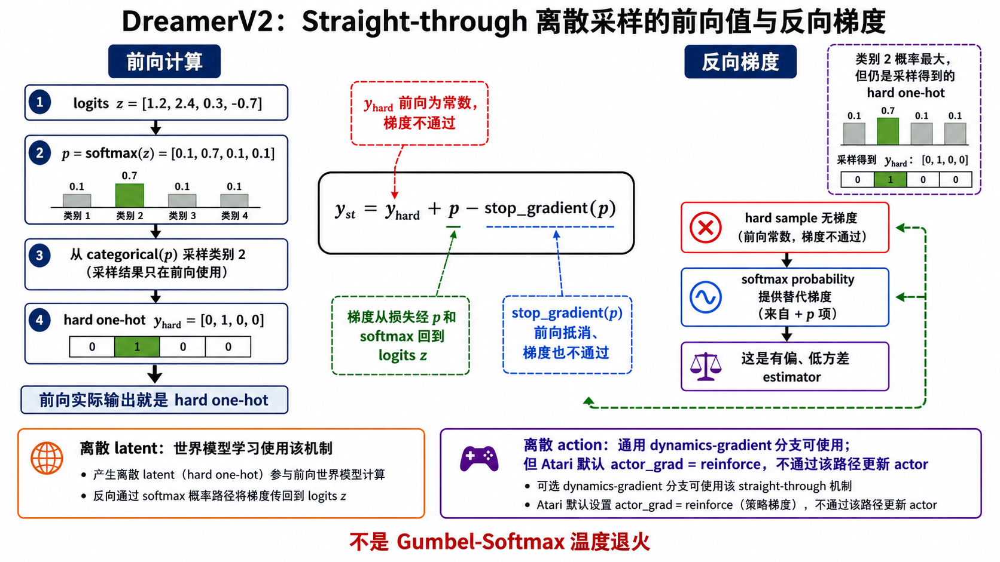
- Forward：categorical draw → hard one-hot。
- Backward：
hard + prob - sg(prob)，前向数值仍等于 hard，梯度等于 softmax probability 路径。 - 用一个 4 类小例子解释 forward 与 backward。
- 区分 active usage：latent world-model learning 使用；one-hot action 的 dynamics-gradient 分支支持使用，但 Atari actor 默认 Reinforce，不沿该路径更新 actor。
- 明确这是 biased low-variance estimator，不是 Gumbel-Softmax 温度退火。
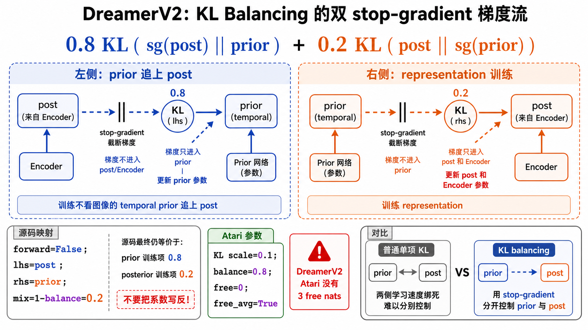
- 精确公式：。
- 第一条只训练 prior，第二条只训练 posterior/encoder。
- 解释源码 为什么内部 mix=.2 仍与论文一致。
- Atari：KL scale=.1、free=0；不得画 DreamerV1 的 3 free nats。
- 对比普通单项 KL 容易出现 prior 或 representation 学习失衡。
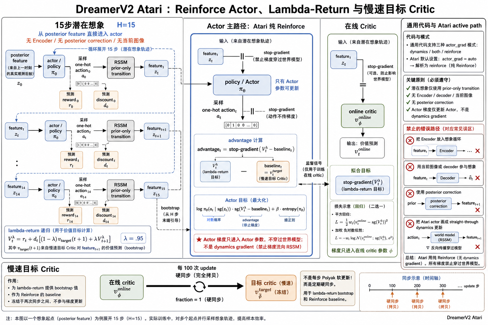
- 15 步 imagined trajectory、reward、discount weight、slow target critic bootstrap、lambda=.95。
- Actor active path：
logπ(a|sg(feat))·sg(Vλ-target_value)+ entropy，动作与 advantage stop-gradient。 - Critic：拟合 stop-gradient
Vλ。 - target critic：每 100 update 硬同步，fraction=1；不是每步 Polyak。
- 侧栏展示通用 dynamics/both 分支，但明确 Atari 为纯 Reinforce。
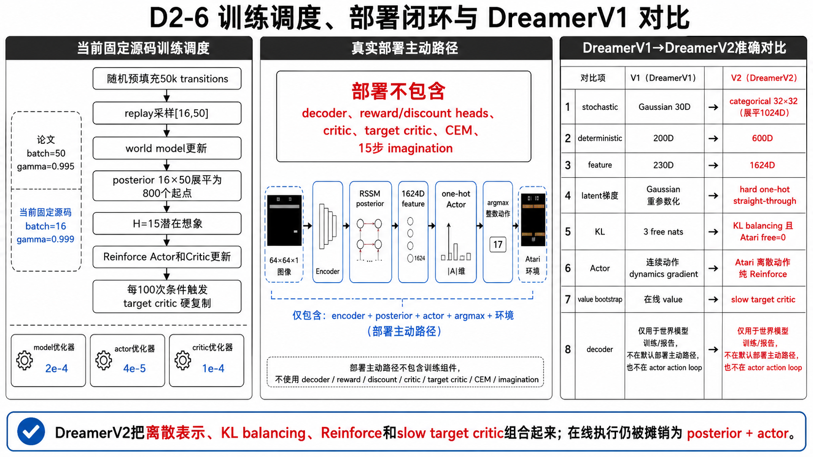
- 训练调度：prefill 50k；replay
[16,50]；world model → 800 起点 imagination → actor/critic → target copy。 - 三个 optimizer：model
2e-4、actor4e-5、critic1e-4。 - 部署：image → Encoder → posterior → actor → one-hot argmax → Atari；无 decoder/critic/CEM/imagination。
- DreamerV1→V2：Gaussian30→categorical32×32，deter200→600，feature230→1624，free nats→KL balance，dynamics gradient→Atari Reinforce，online value→slow target critic。
- 版本侧栏：论文 batch50/gamma.995；当前 HEAD batch16/gamma.999。
论文：Mastering Atari with Discrete World Models（arXiv:2010.02193）
官方仓库：danijar/dreamerv2
固定提交：07d906e9c4322c6fc2cd6ed23e247ccd6b7c8c41
1. 先给新手一个整体认识
DreamerV2 不是把 DreamerV1 的高斯状态简单换成 one-hot 就结束了。它要同时解决三个问题：
- Atari 的视觉和动力学具有明显的多模态与离散事件，连续高斯 latent 容易把不同未来平均在一起；
- 离散采样本身不可导，而 Dreamer 依赖世界模型和策略网络的梯度训练；
- Atari 的动作也是离散的，DreamerV1 的连续动作解析梯度不再是最稳妥的默认选择。
因此，DreamerV2 的完整答案是：
- 世界模型使用
32个 categorical 变量，每个变量有32个类别； - 前向计算使用真正的 hard one-hot sample，反向计算使用 straight-through 梯度；
- KL 使用 balancing，把“训练 temporal prior”和“训练 posterior representation”分成两条 stop-gradient 路径；
- Atari actor 使用 Reinforce，critic 使用慢速 target critic 生成 lambda-return；
- 部署时仍然只执行一次 posterior 更新和一次 actor 前向，不运行 decoder，也不运行 CEM。
2. 先区分论文配置与当前固定源码
这是阅读 DreamerV2 最容易混淆的地方。论文表格和当前固定提交并不完全一致，不能把两套数字静默拼接。
| 项目 | 论文 Atari 配置 | 当前固定提交 --configs atari |
|---|---|---|
| batch size | 50 | 16 |
| sequence length | 50 | 50 |
| stochastic latent | 32×32 |
32×32 |
| deterministic state | 600 | 600 |
| KL scale | 0.1 | 0.1 |
| KL balance | 0.8 | 0.8 |
| free nats | 0 | 0 |
| imagination horizon | 15 | 15 |
| discount | 0.995 | 0.999 |
| lambda | 0.95 | 0.95 |
| actor estimator | Reinforce | 对离散动作解析为 reinforce |
| entropy scale | 0.001 | 0.001 |
| slow target update | 每 100 次 | 每 100 次，且 为硬同步 |
| world model LR | 2e-4 |
2e-4 |
| actor LR | 4e-5 |
4e-5 |
| critic LR | 1e-4 |
1e-4 |
后文凡是讲张量形状和真实调用路径，默认以固定提交为准；凡是讨论论文实验超参数，会明确标为“论文配置”。
3. 从命令行到训练循环的真实入口
Atari 的官方启动命令是：
python3 dreamerv2/train.py \
--logdir ~/logdir/atari_pong/dreamerv2/1 \
--configs atari \
--task atari_pong
train.py 首先读取 configs.yaml 的 defaults，再按顺序覆盖 atari。因此，不能只看 atari: 段；例如 、、 来自 defaults，而 、 来自 Atari override。
真实训练循环依次完成：
- 创建 Atari 环境；
- 用
OneHotAction把环境的整数动作包装为 one-hot 向量； - 创建 replay buffer；
- 随机策略预填充 50,000 个 agent transitions；
- 从 replay 采样 序列；
- 先训练 world model；
- 从所有 posterior states 出发做 latent imagination；
- 训练 actor、critic，并更新 slow target critic；
- 继续真实环境交互，把新 transition 写回 replay。
当前源码的 表示每 16 个 driver transition 触发一次训练，和论文表格中的“每 4 个 policy steps 一次 gradient step”不是同一个发布版本数字。
4. Atari 输入与 Encoder 精确 shape
Atari wrapper 使用 sticky actions，并通过 AtariPreprocessing 执行 action repeat、灰度化和缩放。项目的 ，因此进入模型的图像是：
uint8 image: [B,T,64,64,1]
↓ /255 - 0.5
float image: [B,T,64,64,1]
Encoder 只选择 image，四层 valid Conv2D，kernel 都为 4，stride 都为 2，ELU 激活，通道数依次为 48,96,192,384：
64×64×1
→ 31×31×48
→ 14×14×96
→ 6×6×192
→ 2×2×384
→ flatten 1536D embedding
这里第二层是 14×14，不是 DreamerV1 常见图里容易写出的 15×15。原因是卷积使用 valid padding。
5. 离散 RSSM：为什么是 32×32 而不是 1024 类
DreamerV2 使用 32 个彼此分组的 categorical variables，每组 32 类。状态张量为：
logit: [...,32,32]
stoch: [...,32,32] # 每组一个 hard one-hot
deter: [...,600]
展平 stochastic state 后得到 ，再和 600D deterministic state 拼接：
feature = concat(flatten(stoch), deter)
= 1024D + 600D
= 1624D
“32 个变量、每个 32 类”和“一个 1024 类变量”不是同一件事。前者有组合式表示能力，理论组合数量是 32^32，同时每个变量只需一个 32 类 softmax。
6. RSSM 单步 posterior/prior 的真实顺序
6.1 Temporal prior
img_step(prev_state, prev_action) 不读取当前图像：
flatten(prev_stoch): 1024D
concat(prev_action): 1024D + |A|
Dense(600) + ELU
GRUCell → deter_t: 600D
Dense(600) + ELU
Dense(1024) → reshape [32,32] logits
OneHotDist.sample() → prior stoch_t [32,32]
Atari 配置把 ensemble 保持为 1，因此当前 active path 没有多成员模型平均；通用类名仍叫 EnsembleRSSM。
6.2 Observation posterior
obs_step() 先算 prior，再把 prior 的 deterministic state 和当前图像 embedding 拼接：
concat(prior.deter_t 600D, embed_t 1536D)
→ Dense(600) + ELU
→ Dense(1024)
→ reshape [32,32] posterior logits
→ hard one-hot posterior sample
posterior 读取当前图像，prior 不读取当前图像。训练世界模型与真实环境闭环使用 posterior；纯 imagination 只使用 prior transition。
7. Straight-through：前向是离散值，反向借用 softmax 梯度
源码 OneHotDist.sample() 的核心等价于：
hard = one_hot(categorical_sample(logits))
prob = softmax(logits)
sample = hard + prob - stop_gradient(prob)
前向时 ，所以送入后续网络的仍是真实 one-hot。反向时 hard 没有梯度，但 prob-stop_gradient(prob) 的梯度等于 prob 的梯度，于是梯度能够回到 logits。
这个 estimator 是有偏的，因为 backward 假装 hard sample 像 soft probability 一样变化。但它通常比纯 Reinforce 的方差小。
需要区分两个使用位置：
- 离散 latent： world model reconstruction/reward/discount loss 可以经 posterior sample 回到 logits；
- 离散 action： 通用 dynamics-gradient actor 分支可以穿过 one-hot action 和 latent transition；但 Atari 默认 actor 是纯 Reinforce，actor 更新不会沿这条路径反传。
8. 世界模型损失与梯度边界
WorldModel.loss() 首先得到 posterior/prior，然后从 posterior feature 预测三个头：
- image decoder；
- reward head；
- discount/continuation head。
当前 Atari 三个 head 都在 grad_heads 中，因此它们的 loss 都能训练 encoder 与 RSSM。总损失可写为：
Lmodel = 0.1 Lkl + 1.0 Limage + 1.0 Lreward + 5.0 Ldiscount
图像 decoder 输出固定标准差 1 的 Normal distribution；reward head 使用 MSE 形式的 Normal；discount head 使用 Bernoulli。Atari reward 在进入模型前执行 tanh(reward)。
decoder 只服务世界模型训练和视频报告，不进入 actor 的 imagination rollout，也不进入部署动作路径。
9. KL balancing 的精确梯度方向
论文写法是：
α KL(sg(post) || prior)
+ (1-α) KL(post || sg(prior))
其中 。第一项只训练 prior，让 temporal predictor 更快追上 posterior；第二项只训练 posterior，避免 representation 被 prior 过强牵引。
当前源码配置为：
forward=False
balance=0.8
free=0
free_avg=True
源码内部先设置 ，最终实际得到：
0.2 KL(post || sg(prior))
+0.8 KL(sg(post) || prior)
它与论文公式一致，只是内部变量朝向容易让读者误以为系数反了。Atari ，因此不能把 DreamerV1 的 3 free nats 继续套用到这里。
10. 从 posterior batch 到 latent imagination
world model 输出的 posterior state 形状为 [B,T,...]。WorldModel.imagine() 把前两维展平：
[16,50,32,32] → [800,32,32]
[16,50,600] → [800,600]
所以当前固定提交一次训练从 800 个 posterior states 同时出发；论文 batch 50 时则是 2500 个起点。每个起点 rollout 15 步。
循环内的真实顺序是：
feat_t
→ stop_gradient
→ actor.sample(action_t)
→ rssm.img_step(state_t, action_t)
→ prior state_{t+1}
→ feat_{t+1}
这里没有当前或未来 RGB，没有 posterior correction，没有 decoder。reward 和 discount 都直接从 imagined feature 预测。
11. continuation、weight 与 lambda-return
DreamerV2 默认学习 discount head。第一步 imagination discount 会被 replay 中真实 is_terminal 覆盖，后续步使用模型预测。
累积权重为：
weight_0 = 1
weight_t = product(discount_0 ... discount_{t-1})
lambda-return 使用 slow target critic：
Vλ_t = reward_t + discount_t * ((1-λ) value_{t+1} + λ Vλ_{t+1})
其中当前源码 。最后一个 imagined state 的 target critic value 作为 bootstrap。
12. Atari actor：为什么默认走 Reinforce
ActorCritic.__init__() 检测 action space 是否具有 n。Atari 经 OneHotAction 包装后仍带 n，因此：
actor.dist=auto → onehot
actor_grad=auto → reinforce
Reinforce 分支的有效目标为：
advantage_t = sg(Vλ_t - target_critic(feat_t))
objective_t = log π(action_t|sg(feat_t)) * advantage_t
+ entropy_scale * entropy
动作、advantage、feature 都在相应位置 stop-gradient，因此 Atari actor 梯度只更新 actor policy parameters，不更新 world model，也不穿过 imagined dynamics。
通用代码还支持：
dynamics：直接最大化可导的 lambda-return；both：按actor_grad_mix混合两种 estimator。
但“代码支持”不等于“Atari 默认使用”。Atari active path 是纯 Reinforce。
13. Critic 与 slow target critic
在线 critic 拟合 stop-gradient lambda target：
Lcritic = -mean(weight * log p_critic(sg(Vλ)))
target critic 只负责生成 baseline 和 lambda-return bootstrap。当前：
slow_target_update = 100
slow_target_fraction = 1
第一次调用直接完整复制；之后每 100 次 actor-critic update 进行一次硬同步。它不是每一步 Polyak averaging。
14. 三组优化器到底各自更新什么
World model optimizer
更新 encoder、RSSM、decoder、reward head、discount head。Atari learning rate 2e-4。
Actor optimizer
只更新 actor。Atari learning rate 4e-5，Reinforce estimator，entropy scale 1e-3。
Critic optimizer
只更新在线 critic。Atari learning rate 1e-4。target critic 不由 optimizer 直接更新，而由周期性复制更新。
三者都使用 Adam、epsilon 1e-5、gradient clipping 100、decoupled weight decay 1e-6。
15. 一次真实 Atari step 的逐函数时间线
部署或采样阶段的 Agent.policy() 执行：
- 接收
image_t、上一 latent state 和上一 one-hot action； preprocess()把 uint8 图像变为[-.5,.5]；- Encoder 产生 1536D embedding；
rssm.obs_step()先用上一状态和动作计算 prior，再结合当前 embedding 得到 posterior；get_feat()得到 1624D feature；- actor 输出 one-hot categorical distribution；
- train/explore 模式 sample，eval 模式 mode；
OneHotAction.step()用 argmax 把 one-hot 转回 Atari 整数动作；- 环境执行 action repeat 4，返回下一图像和 reward。
部署路径不包含 decoder、reward head、discount head、critic、target critic、lambda-return、CEM 或 15 步 imagination。
16. 一次训练 update 的逐函数时间线
Replay.dataset(batch=16,length=50)
→ Agent.train(data)
→ WorldModel.train
→ preprocess
→ Encoder
→ RSSM.observe
→ KL balancing
→ decoder/reward/discount likelihood
→ model optimizer
→ ActorCritic.train
→ flatten posterior start states: 16×50=800
→ imagine horizon 15
→ reward normalization
→ slow target critic + lambda-return
→ Reinforce actor loss
→ critic regression loss
→ actor optimizer + critic optimizer
→ conditional slow target copy
17. DreamerV1 到 DreamerV2 的真正变化
| 维度 | DreamerV1 | DreamerV2 Atari |
|---|---|---|
| stochastic state | 30D Gaussian | 32×32 categorical |
| deterministic state | 200D | 600D |
| feature | 230D | 1624D |
| latent sampling gradient | Gaussian reparameterization | hard one-hot + straight-through |
| KL regularization | 3 free nats | KL balancing，free=0 |
| action space | 连续 | one-hot 离散 Atari action |
| actor estimator | dynamics gradient | Reinforce |
| value target | online value bootstrap | slow target critic bootstrap |
| deployment | posterior + actor | posterior + actor，仍无在线规划 |
最关键的演进不是“离散表示更强”这一句，而是表示、KL、actor estimator 和 target critic 四个机制协同改变。
18. 常见误读与实现注意点
- 不要把
32×32写成 32D latent；它展平后是 1024D。 - 不要把 32 个 categorical variables 写成一个 1024 类 categorical。
- 不要说 Atari actor 通过 straight-through dynamics gradient 训练；默认是 Reinforce。
- 不要把 target critic 说成 Polyak averaging；当前 fraction=1，是每 100 次硬同步。
- 不要把 DreamerV1 的 free nats=3 带到 Atari；这里 free=0。
- 不要把论文 batch=50、discount=.995 当成当前 HEAD 默认；当前是 batch=16、discount=.999。
- 不要把 decoder 放进 imagination 或部署动作闭环。
- 不要忽略第一步 discount 使用真实 terminal flag 覆盖模型预测。
- 不要把
EnsembleRSSM类名理解为 Atari 默认使用多个 ensemble members；当前 ensemble=1。 - 不要把 action repeat 4 和 混成同一个频率概念。
19. 新手源码阅读顺序
推荐按以下顺序阅读：
README.md：确认 Atari 启动命令；configs.yaml：合并 defaults 与 atari；train.py：环境、replay、driver、训练触发；common/envs.py::Atari与OneHotAction：图像和动作接口；agent.py::Agent.policy：真实部署闭环；agent.py::WorldModel.loss/imagine：模型训练与 latent rollout；common/nets.py::EnsembleRSSM：posterior、prior、KL；common/dists.py::OneHotDist：straight-through；agent.py::ActorCritic：Reinforce、critic、slow target；- 最后再对照论文
method.tex和hparams.tex理解版本差异。
20. 复现与调试检查表
- 检查启动参数确实包含
--configs atari； - 打印最终 config，确认 ；
- 检查输入图像为
[B,T,64,64,1]且数值范围[-.5,.5]； - 检查 Encoder 输出最后一维为 1536；
- 检查 posterior/prior logits 为
[B,T,32,32]； - 检查 feature 最后一维为 1624；
- 检查 one-hot 每个变量最后一维求和为 1；
- 检查 forward sample 真正是 hard one-hot，而不是 soft probability；
- 检查 KL 两项 stop-gradient 的方向与 0.8/0.2 系数；
- 检查一次 imagination 起点数是
B×T，当前默认为 800； - 检查 rollout 只调用 prior transition，不调用 Encoder/decoder；
- 检查 Atari
actor_grad最终解析为reinforce； - 检查 actor advantage 与 sampled action 都 stop-gradient；
- 检查 critic target stop-gradient；
- 检查 target critic 每 100 次硬同步；
- 检查部署路径不调用 critic、decoder、CEM 或 imagination；
- 同时记录论文配置与当前源码配置，避免复现实验时混用。
展开结论证据表
| 结论 | 证据等级 | 来源定位 | 置信度 | 限制/备注 |
|---|---|---|---|---|
| DreamerV2 用 categorical variable 替换 Gaussian RSSM latent | P/S | tex/sections/method.tex; common/nets.py:12-87 |
高 | Deterministic GRU state 仍是连续值 |
| Atari latent 使用 32 个变量 × 32 类 | P/C/S | tex/sections/hparams.tex; configs.yaml; RSSM shape |
高 | 展平后为 1024D feature |
| One-hot sampling 使用 straight-through gradient | P/S | tex/algos/st.tex; common/dists.py::OneHotDist.sample |
高 | 这是有偏 estimator |
| KL balancing 在 KL 两侧交替使用 stop-gradient | P/S | tex/algos/klbalancing.tex; nets.py:162-180 |
高 | 源码 forward 朝向会改变 coefficient mapping |
| Atari 不使用 free nats，KL scale 为 .1 | P/C | hparams.tex; configs.yaml |
高 | 当前 |
| 在离散动作空间选择 Reinforce | S | agent.py:211-218 |
高 | 连续动作选择 dynamics gradient |
| 论文 Atari 使用纯 Reinforce，连续控制使用纯 dynamics gradient | P | method.tex 的 actor loss 讨论 |
高 | 通用源码支持两者及其混合 |
| Slow target critic 每 100 次更新一次 | P/C/S | hparams.tex; configs.yaml; agent.py:327-334 |
高 | Target mixture 可配置 |
| Imagination horizon 为 15，lambda 为 .95 | P/C/S | 论文表格；配置；agent.py::target |
高 | 三类证据一致 |
| 论文 batch 50 与当前 HEAD batch 16 不同 | P/C | hparams.tex; configs.yaml |
高 | 属于版本/release 差异 |
| 论文 gamma .995 与当前 Atari 配置 .999 不同 | P/C | hparams.tex; configs.yaml |
高 | 不能静默合并为一个数值 |
DreamerV3
arXiv 2301.04104 · e3f02248693a79dc8b0ebd62c93683888ddaccfe
6 张结构与数据流图
先通过完整结构图建立模型全局认识，再进入论文推导、张量形状、训练时序、真实调用路径与源码注意事项。
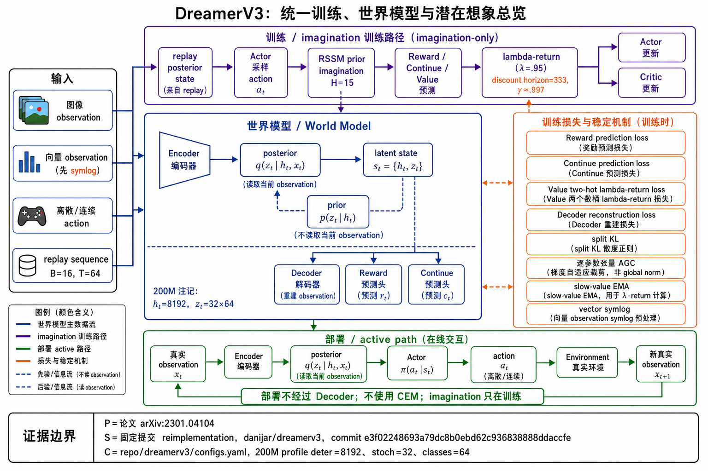
- 必画：图像/向量 observation、离散/连续 action、replay sequence、encoder、categorical RSSM、decoder/reward/continue heads、latent imagination、actor/critic、environment deployment。
- 主数据流：真实 observation → encoder → posterior RSSM → actor；训练分支从 replay posterior state → prior imagination → reward/value → actor/critic。
- 必标：、（仅在 200M profile 标注）、、
γ≈.997、。 - 必须区分：紫色训练 active path 与绿色部署 active path；decoder 不得画成部署 action 的必经路径。
- 禁止：CEM、像素 imagination、把 posterior 画成不读取 observation、把当前 reimplementation 画成论文原始私有代码。
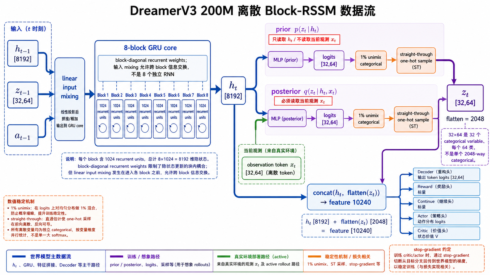
- 必画：
h_{t-1}, z_{t-1}, a_{t-1}输入 mixing、8-block GRU core、posterior/prior 两条 logits 路径、straight-through categorical sampling、feature concat。 - 必标：、、、flatten
2048、feature10240、block size1024、blocks8。 - 箭头：posterior 必须接当前 token；prior 只能接
h_t；decoder/reward/continue 接[h_t,z_t]。 - 必解释：block-diagonal 是循环权重结构，不是 8 个完全隔离 RNN；输入 mixing 允许跨 block 通信。
- 禁止：画成一个 2048-way categorical、prior 读取当前 observation、把
32×64写成32+64。
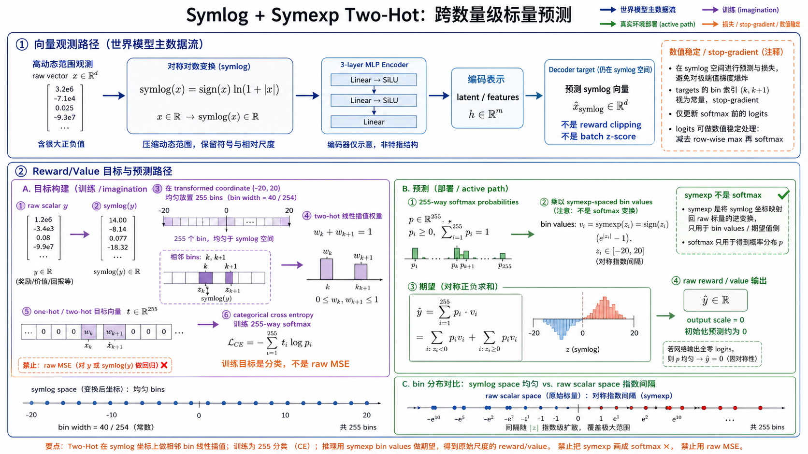
- 必画：raw vector → symlog → MLP encoder；raw reward/value target → symlog coordinate
[-20,20]→ 255 bins → two-hot；softmax → expectation → symexp/raw scalar。 - 必标：、
255 bins、two-hot、/ 只在涉及 return normalization 时出现。 - 必区分：vector reconstruction 在 symlog space；reward/value 使用 symexp-spaced bins；不是 raw MSE、不是 reward clipping。
- 必画 two-hot 相邻两个 bin 的插值权重与 categorical cross entropy。
- 禁止：把 bins 画成 raw space 均匀、把 two-hot 画成两个独立目标、把 symexp 当 softmax。
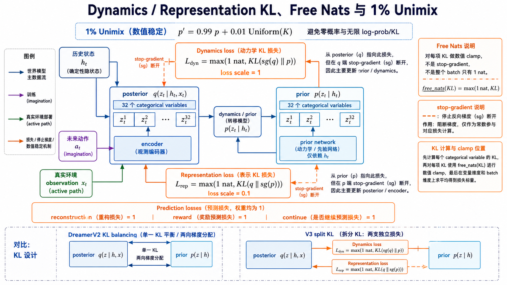
- 必画：posterior
q(z|h,x)与 priorp(z|h)；两条 KL 分支： dynamics、 representation。 - 必标：两项
max(1 nat, KL)、loss scale 、、、categorical variable axis。 - 必表现：stop-gradient 用橙色断点；unimix 公式
p'=0.99p+0.01Uniform(K)；free nats 是数值 clamp，不是 stop-gradient。 - 必解释：dyn 更新 prior，rep 更新 posterior；两项不是重复 KL。
- 禁止：把两项合成一个未分方向的 KL、把 误成整个 batch 的总 KL 阈值。
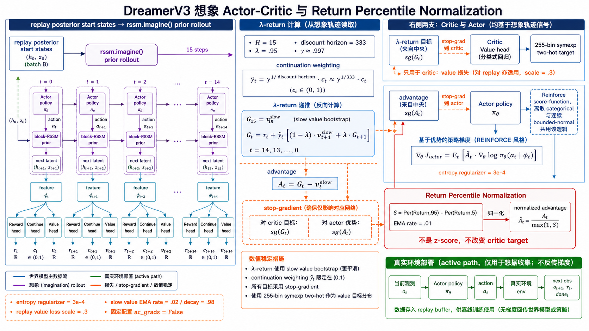
- 必画：replay posterior start →
rssm.imagine()15 steps → policy action → prior transition → reward/continue/value → lambda-return → actor/critic。 - 必标：、、discount horizon
333、γ≈.997、return scalePer95−Per5、max(1,S)、entropy3e-4、replay value scale.3。 - 必表现：actor advantage 归一化与 critic target 分开；离散/连续 action 都接 Reinforce 风格 score-function 路径；fixed config 可作为源码注记。
- 必画：slow value EMA /decay
.98，并标明 target boundary。 - 禁止：把 return normalization 画成 z-score、把 imagined action 回灌环境、把 critic 画成 raw scalar MSE head。
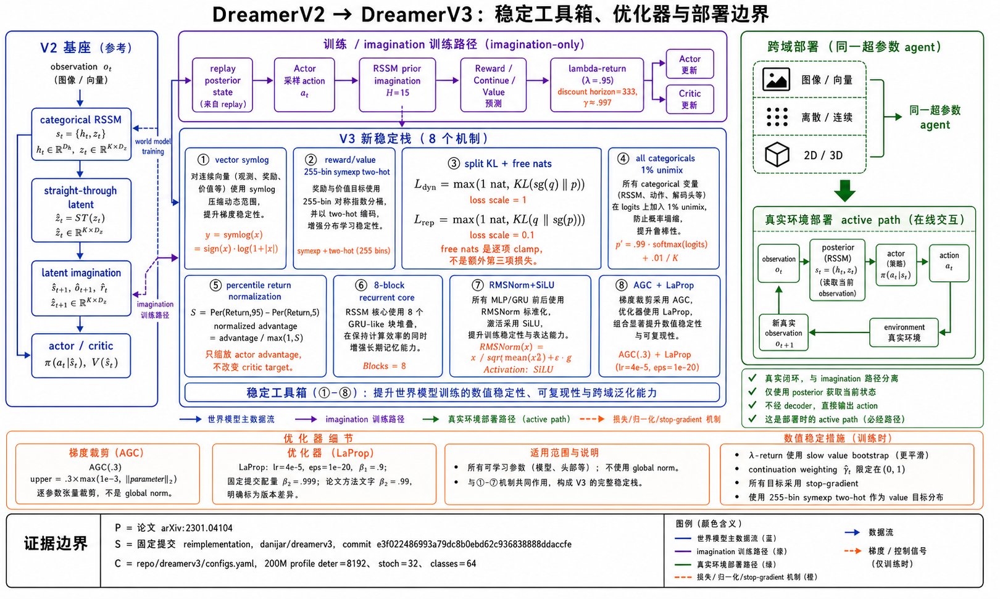
- 必画：V2 categorical RSSM → V3 robustness stack → cross-domain deployment；并列展示 symlog、two-hot、KL split/free bits、unimix、block recurrence、AGC、LaProp、percentile return normalization。
- 必标：
AGC(.3)、、、、、固定提交配置 ，以及论文文字曾报告.99的差异注记。 - 必画部署路径：真实 observation → posterior → actor → action；训练路径：replay → posterior → prior imagination。
- 必须加入证据边界：论文 P / fixed reimplementation S / config C。
- 禁止：把 V3 说成替换成 Transformer、把 AGC 画成 global norm、把 Dreamer4 机制混入 V3。
论文：Mastering Diverse Domains through World Models（arXiv:2301.04104）。
源码对照仓库：danijar/dreamerv3，固定提交 e3f02248693a79dc8b0ebd62c93683888ddaccfe。
本文的目标不是把 DreamerV3 说成一张“世界模型 + actor–critic”的概念图，而是把一条环境交互、一次 replay update、一次 latent imagination 和一次参数更新拆成可以沿源码追踪的步骤。读者可以先看直觉，再对照代码标识符和张量形状。
1. 证据等级与源码边界
- P（论文）：以
tex/sections/algorithm.tex、tex/sections/methods.tex和论文表格为准，说明作者声称的方法与实验设置。 - S（源码）：以固定提交中的实际函数为准，说明这个公开仓库真实执行了什么。
- C（配置）：以
dreamerv3/configs.yaml的默认值和 size profile 为准，说明一个可运行配置如何实例化模型。 - I（项目说明）：README、release note 或作者说明，用来限定仓库身份。
- R（推断）：由多个事实拼出的解释，必须显式标注为推断，不能伪装成论文原句。
仓库 README 将项目称为 DreamerV3 的 reimplementation。因此，configs.yaml 中的默认配置可以作为“固定提交的实际路径”，但不能不加说明地写成“论文所有实验都使用了当前 HEAD 的同一参数”。论文表格、源码默认值和某个实验 profile 不一致时，本文分别列出，不互相替换。
2. 一句话理解：V3 解决的是什么问题
DreamerV1/V2 已经能在 latent state 中想象未来，但它们对观测类型、动作空间和奖励尺度仍有较强的任务依赖。DreamerV3 的核心目标是：用一组跨域固定的表示、预测、归一化和优化器规则，让同一类 agent 同时处理图像/向量观测、离散/连续动作、稀疏/大尺度奖励以及 2D/3D 环境。
它没有把 RSSM 换成 Transformer，也没有把 decoder 放进部署时的闭环。主要变化是把多个“容易被忽略的稳定性细节”组合起来：vector symlog、categorical latent 的 1% unimix、拆分 dynamics/representation KL 与 free bits、symexp two-hot reward/value、percentile return normalization、block-diagonal GRU、AGC 和 LaProp。
3. 先建立完整对象：观测、动作、状态和特征
在环境时刻 t，原始输入可以包括图像 x_t、向量 v_t、上一动作 a_{t-1}、reset 标志和任务相关的其他字段。RSSM 的状态不是单个向量，而是：
s_t = {h_t, z_t}
h_t：deterministic recurrent state
z_t：stoch 个 categorical variable，每个 variable 有 classes 个类别
f_t = concat(h_t, flatten(z_t))
200M profile 的配置是 、、，所以 z_t 的 one-hot/概率张量形状为 [B, 32, 64]，展平后是 2048，世界模型特征 f_t 是 10240 维。这里的 32×64 不是一个 2048 类的单分类变量，而是 32 个相互分组的分类变量；KL 和采样都保留这一个分组结构。
4. 一次真实环境 step：posterior active path
部署时 agent 不会先生成一段像素，也不会用 CEM 搜索动作。真实路径可以按以下顺序阅读：
- 环境返回当前 observation
obs_t和上一时刻的 transition 信息。 Agent.policy()整理 observation，处理is_first/reset，并调用 encoder 得到 token。rssm.observe()先用h_{t-1}, z_{t-1}, a_{t-1}更新 deterministic stateh_t。- posterior 网络读取当前 observation token 与
h_t，输出32×64logits；从 posterior distribution 采样z_t。 - 拼接
[h_t, z_t]送入 actor policy head，得到离散 categorical 或连续 bounded-normal action distribution。 - 采样 action，写回 replay；下一步重新用真实 observation 刷新 posterior。
因此，部署 active path 是 。decoder 主要服务重建损失、报告和诊断；imagined trajectory 只在训练时使用。固定仓库的 agent.py 还保留了带 carry/state 的诊断分支，但这不应被误画成 actor 必须先解码图像。
5. Encoder：图像和向量不是同一条预处理路径
agent.py 建立 encoder/decoder/head，具体网络由 embodied/jax/nets.py 和配置中的 agent.enc/agent.dec 实例化。
5.1 图像观测
图像经 stride-2 卷积逐步下采样，再 flatten 成 token。论文描述中，编码分辨率会落到 6×6 或 4×4，具体取决于输入大小和网络设置。输入图像不经过 symlog；像素重建由 decoder 的转置卷积路径完成，输出端使用 sigmoid 约束像素范围。
5.2 向量观测
向量先逐元素执行：
这个变换保留正负号，但压缩极端幅值。它不是把 reward clip 成 [-1,1]，也不是对 batch 做 z-score。向量 decoder 的 target 也处在 symlog space，因此重建误差比较的是变换后的数值。
6. RSSM 的 deterministic core：为什么要 8 个 block
dreamerv3/rssm.py::RSSM._core() 接收上一状态的 deterministic 部分、stochastic 部分和 action embedding。输入会先经过线性层，把 latent/action/previous recurrent information 混合；然后进入带 block-diagonal recurrent weight 的 GRU。
200M profile 将 8192 个 recurrent units 分为 8 个 block，每个 block 为 1024。这样 recurrent matrix 不需要一个完整的 8192×8192 稠密矩阵，参数量和 FLOPs 近似按 block 分解；同时，进入 GRU 前的输入 embedding 已经允许 block 之间交换信息。它不是“8 个完全独立的 RNN”，而是“循环权重按 block 分块、输入在进入 block gate 前可混合”。
核心时序是：
(h_{t-1}, z_{t-1}, a_{t-1})
↓ linear mixing
block-diagonal GRU core
↓
h_t
7. Posterior 与 prior：同一个 RSSM 的两条分布路径
RSSM._observe() 先得到 h_t，再把当前观测 token 与 h_t 拼接，经过 observation layers 产生 posterior logits q(z_t|h_t,x_t)。RSSM._prior() 只看 h_t，产生 dynamics prior logits p(z_t|h_t)。
这一区分是训练世界模型的关键：posterior 可以看答案（当前观测），prior 必须在 imagination 时只依靠历史 latent 和动作预测未来。论文中的 decoder、reward head、continue head 使用 sampled posterior/prior state 的 feature；prior 不读取当前 observation，否则 imagination 会偷偷使用未来真实信息。
8. Categorical latent、straight-through 与 1% unimix
每个 stochastic variable 的 logits 经过 softmax 得到类别概率。采样时使用 straight-through：前向传播采用近似 one-hot 的样本，反向传播保留 soft distribution 的梯度近似。这样既能让 latent 在前向时具有离散状态含义，又能让重建和预测损失把梯度传回 encoder/dynamics。
固定源码的 _dist() 将 logits 包装成带 unimix 的 categorical distribution。 的含义是：
它不是额外的随机噪声层，也不是 dropout；作用是避免概率精确为 0，防止 log-probability 和 KL 出现无限值。policy categorical 同样在配置中使用 1% unimix。
9. Dynamics / representation KL：两条 stop-gradient 方向
RSSM.loss() 的实际顺序是先 observe() 得到 posterior logits，再调用 _prior(feat['deter']) 得到 prior logits：
dyn = dist(stop_gradient(post)).kl(dist(prior))
rep = dist(post).kl(dist(stop_gradient(prior)))
论文将两项分开：
dyn 让 prior/dynamics 学会预测 posterior target；由于 posterior 被 stop-gradient，更新重点落在 prior。rep 让 posterior representation 不要偏离 prior 可预测的分布；由于 prior 被 stop-gradient，更新重点落在 posterior。两项都按每个 categorical variable 的 KL 聚合，再应用 free-nats clamp；全局 loss scale 通常是 prediction 1、dynamics 1、representation 0.1。
注意：free bits 不是把 KL 从总损失里删除，而是对低于阈值的每个局部 KL 提供一个最低学习信号；只有超过阈值的部分才继续增加优化压力。读源码时要区分 free_nats 的局部 maximum 和随后在 agent.py 中对不同损失项的 scale。
10. World model prediction losses
世界模型的 prediction loss 通常包括 observation reconstruction、reward prediction 和 continuation prediction。固定配置中 loss_scales 给出 、、，而 、。
10.1 Reconstruction
图像重建由 image decoder 输出像素分布或像素值；向量重建在 symlog space 计算。重建的作用是把 latent 约束为足以解释观测的状态，但训练 actor 时不需要把 imagined latent 每一步都还原成完整图像。
10.2 Reward 与 continuation
reward head 是一层 MLP，配置为 symexp_twohot、255 bins、；continue head 是一层 MLP，输出 binary distribution。continuation 用来表示下一步是否仍在同一 episode 内，训练和 lambda-return 的 discount weighting 都会使用它。
11. Symlog、symexp 和 two-hot：统一标量尺度
DreamerV3 不让网络直接回归可能跨越很多数量级的 raw reward/value。先在 symlog coordinate 中建立均匀 bin：
给定目标 y，先计算 symlog(y)，找到相邻的两个 bin，再按线性距离给两个类别分配权重；这就是 two-hot target。网络输出 255 类 softmax，损失是 soft-label categorical cross entropy，而不是 raw scalar MSE。预测标量时，对 bin 值按概率求期望，再执行对称的正负累加，减少大量级 bin 的浮点误差。
两个容易混淆的事实：第一，symlog coordinate 中均匀不等于 raw reward space 中均匀；第二，two-hot 是两个相邻 bin 的软标签，不是把一个标量复制到两个输出通道。
reward/value head 的 output layer 零初始化或 让初始预测接近零，避免随机网络在训练开始时凭空产生巨大 reward/value。该设计与 two-hot 的数值范围一起降低了早期 actor-critic 的不稳定。
12. Replay sequence 与 world-model update
默认配置使用 、，replay capacity 为 5e6。embodied/core/replay.py 负责按 sequence 采样，而不是只给 agent 一个独立 transition。embodied/run/train.py 负责环境 actor、replay、agent update 和日志节奏。
一次 world-model update 可以概括为：
- 从 replay 读取形如
[B,T,...]的 observation/action/reset/reward/continue 序列。 - encoder 把每个时刻的观测变成 token。
rssm.observe()沿时间轴扫描，得到 posterior entries 和 features。- 从 deterministic features 生成 prior logits，计算 dynamics/representation KL。
- decoder/reward/continue heads 计算 reconstruction/prediction losses。
agent.py按 loss scale 汇总，调用统一 optimizer 更新 world-model 参数。
表示训练 batch 会保留上下文状态；rssm.starts() 可以把每个 sequence 的末尾窗口变成新的 batch 起点，避免每次都从全零状态开始解释片段。
13. Latent imagination：训练时才展开 prior
world model update 后，agent 从 replay posterior 的 latent state 作为 imagination 起点，调用 。在每个 imagined step：
current {h,z}
→ actor policy samples a
→ _core(h,z,a) produces next h
→ _prior(h) produces categorical logits
→ sample next z
→ feature [h,z] feeds reward / continue / value
由于 prior 不看真实观测，rollout 可以在训练中廉价地产生多步反事实数据。默认 ； 是 discount horizon，对应 gamma≈1-1/333≈0.997，不是 imagination 的长度，也不是环境 episode 长度。
14. Lambda-return、critic 与 actor
critic 不是直接输出一个无界 scalar，而是输出 255-bin symexp two-hot distribution。imagined rewards、continuation probability 和 bootstrap value 组合成 lambda-return，默认 。
actor 使用 imagined state 上的 policy distribution。论文方法对离散和连续动作都采用 Reinforce 风格的 score-function estimator；不能把 DreamerV2 的某个 continuous dynamics-gradient 分支默认带入 V3。固定仓库配置中 ，应以当前 profile 的 active path 为准，不要把存在于代码中的可选开关描述成论文默认算法。
actor advantage 会按 return statistics 做尺度控制。论文表格给出 ，并使用 EMA 更新；固定配置 、、、、。因此更准确的解释是：把 advantage 除以 max(1,S)，让稀疏小奖励不会被放大，同时让大尺度奖励不会让 policy gradient 失控。这个归一化不是 critic target 的 z-score。
配置中的 是 actor entropy regularization；policy head 的 categorical 和 bounded-normal 分布通过统一的 distribution 接口输出离散或连续动作。连续 action 还受 、 约束，避免方差塌缩或无限膨胀。
15. Critic replay loss、slow value 与 target 边界
固定配置启用 和 ，并用 的 scale 约束 replay posterior state 上的 value prediction；这条 replay value loss 不应与 imagined value loss 混为一项。 表示 slow value 的 EMA 更新率；论文表格把 critic EMA decay 写为 .98，两者是同一更新的不同表述方式。
阅读源码时要确认 gradient boundary：world model 的 reward/continue/value 预测是否允许反向影响 latent representation，由 reward_grad、repval_grad 等开关决定；actor 的 loss 是否反向穿过 imagination dynamics，则由 ac_grads 和对应 loss implementation 决定。不能仅凭函数名 imagine 就断言所有 actor 梯度都穿过 RSSM。
16. AGC + LaProp：优化器的真实组合顺序
论文和 embodied/jax/opt.py 给出的核心是：先使用 Adaptive Gradient Clipping，再用 LaProp 更新。AGC 对每个参数张量比较 update/gradient norm 与 parameter norm：
upper = 0.3 * max(1e-3, ||parameter||₂)
scale = min(1, upper / ||update||₂)
update ← scale * update
是参数范数下限，避免接近零的参数产生过严阈值。LaProp 的实现由 RMS normalization 与 momentum 组成，配置为 、、、、无 weight decay。论文方法文字曾给出 的 LaProp 表述；当论文与固定 HEAD 配置不同，本文保留差异而不擅自统一。
不要把 AGC 误写成对整个模型的一个 global norm clip；它是逐参数张量的更新变换。也不要把 LaProp 写成“Adam 换名字”，其 RMS 归一化和 momentum 的组合顺序正是作者用来降低偶发不稳定的实现细节。
17. 论文设置与固定仓库默认值
论文表格给出统一的 batch、sequence、imagination、discount、lambda、loss scales 和 return normalization。固定仓库除了这些主设置，还提供 size1m 到 size400m 的 profile：模型维度从 64 到 1536；200M profile 对应 、、base CNN channels 、每个 latent 的 codes 也是 64。
实验任务配置还会改变 run.steps、envs、train_ratio 和观测预处理。例如 Atari100K 使用单环境和更高 train ratio，Minecraft 使用多个远程环境 worker。不能把某个任务的 envs 或 train_ratio 画进所有任务共享的算法结构图。
18. 从 V2 到 V3：真正的演进
V3 保留 V2 的 categorical RSSM、straight-through latent 和 latent imagination，但改变了“如何让它跨域稳定”：
- V2 的离散 latent 被保留为基础状态表示。
- V3 用 symlog 处理 vector observation，避免输入量纲主导训练。
- V3 用 symexp two-hot 统一 reward/value 的大尺度 scalar prediction。
- V3 把 KL 明确拆成 dynamics 与 representation，并加 1 nat free bits。
- V3 对所有 categorical 使用 1% unimix，包括 latent 和 actor policy。
- V3 用 percentile return normalization 控制 policy-gradient 尺度。
- V3 用 8-block recurrent core 扩大 memory width，同时控制循环参数量。
- V3 用 AGC + LaProp 代替依赖精细 loss scale 调参的普通优化路径。
19. 常见错误与调试顺序
- 把 prior 当 posterior：检查
RSSM._prior()是否读取当前 observation；正确 prior 只接收deter。 - 把 32×64 当 2048 类：打印
stoch和classes两个轴，确认 KL 在 latent-variable 轴聚合。 - 把 free bits 当 hard stop-gradient：free bits 是数值 clamp，stop-gradient 方向由 dyn/rep 两项分别决定。
- 把 two-hot 当 MSE：检查 target 是否只激活相邻两个 bin，输出是否是 categorical logits。
- 把 return normalization 当 value normalization：查
retnorm与valnorm，默认前者启用、后者关闭。 - 把 imagination 当真实观测 rollout：训练 imagination 使用 prior，不调用 encoder；部署 policy 仍持续用真实观测刷新 posterior。
- 把 decoder 画在部署闭环：decoder 是 prediction/reconstruction 分支，不是 action 必经路径。
- 把 AGC 当 global clipping：在
clip_by_agc()检查每个 parameter/update pair 的 norm。
推荐阅读顺序：先读 dreamerv3/agent.py 的初始化、policy 和训练 update；再读 dreamerv3/rssm.py 的 observe/imagine/loss；接着读 embodied/jax/heads.py、outs.py 的 two-hot distribution；最后读 opt.py 和 embodied/run/train.py 的外层调度。
20. 结论
DreamerV3 的“V3”不是单个新层，而是一套把离散 RSSM、latent imagination、跨尺度 target 表示、概率分布平滑、KL 方向、return scale 和优化器边界同时固定下来的工程化方法。理解它的关键不是记住“用了 symlog”，而是沿着同一条数据流回答：观测在哪里变成 token，posterior 在哪里看到了当前观测，prior 在哪里被迫预测未来，two-hot 在哪里替代 scalar regression，actor advantage 在哪里被缩放，以及哪些梯度在每个边界被阻断。
展开结论证据表
| 结论 | 证据等级 | 来源定位 | 置信度 | 限制/备注 |
|---|---|---|---|---|
| DreamerV3 保留带 deterministic recurrent state 的 categorical RSSM | P/S | tex/sections/algorithm.tex; repo/dreamerv3/rssm.py |
高 | 仓库是 reimplementation |
| 论文 KL loss 为 与 ，均使用 1 nat free bits | P | algorithm.tex:50-76 |
高 | Scale 分别为 dyn 1、rep .1 |
| 固定仓库实现相同的 stop-gradient 方向 | S | rssm.py:120-133 |
高 | 固定提交的实际源码路径 |
| 200M profile 使用 deter 8192、32 个 categorical variable、每个 64 类 | P/C/S | tables/modelsizes.tex; configs.yaml:85-101; rssm.py |
高 | 展平 stochastic width 为 2048 |
| RSSM recurrent weight 分为 8 个 block | P/C/S | methods.tex:43-45; configs.yaml; rssm.py:135-159 |
高 | 输入进入 block-linear gate 前已混合 |
| Vector observation 使用 symlog encoding 与 symlog-space reconstruction | P/C/S | algorithm.tex:157-198; rssm.py:179-250,288-306 |
高 | Image 不使用 symlog preprocessing |
| Reward/value 在仓库默认配置中使用 255 个 symexp-spaced two-hot bin | P/C/S | algorithm.tex:179-196; configs.yaml; heads.py:132-144; outs.py:273-325 |
高 | 论文给出一般构造，255 来自配置 |
| Two-hot prediction 使用对称求和，保证初始化时期望数值为零 | P/S | supplement.tex; outs.py:285-309 |
高 | 属于实现级数值细节 |
| Actor 对离散与连续动作都使用 Reinforce | P/S | algorithm.tex:121-143; agent.py:382-446 |
高 | 不同于 DreamerV2 的 continuous dynamics gradient |
Actor advantage scale 是 95th−5th return percentile range 的 EMA，且下限为 1 |
P/C/S | algorithm.tex:128-143; hparams.tex; utils.py:16-92; agent.py:407-415 |
高 | Offset 不影响 policy gradient |
| Imagination horizon 为 15、lambda .95、discount horizon 333 | P/C/S | hparams.tex; configs.yaml; agent.py |
高 | 论文正文把 bootstrap endpoint 计入后写作 16 个 state |
| Critic 同时在 imagined 与 replay trajectory 上训练 | P/C/S | algorithm.tex:95-119; configs.yaml; agent.py:188-235 |
高 | Replay-value scale 为 .3 |
| 论文 replay 使用 uniform buffer 加 online queue，并保存 latent state | P | methods.tex:17-21 |
高 | 具体系统实现可以变化 |
| 仓库 optimizer 顺序为 AGC → RMS → momentum → LR | S | agent.py:342-379; embodied/jax/opt.py |
高 | 实现 LaProp 次序 |
| 论文 beta2 .99 与仓库默认 .999 不同 | P/C | methods.tex:23-25; configs.yaml:87 |
高 | 必须保留为版本差异 |
| 固定仓库 README 将代码称为 reimplementation | I/S | repo/README.md:1-5 |
高 | 不能描述成论文原始代码 |
Dreamer 4
arXiv 2509.24527 · 官方完整代码未公开；非官方对照见正文
6 张结构与数据流图
先通过完整结构图建立模型全局认识，再进入论文推导、张量形状、训练时序、真实调用路径与源码注意事项。
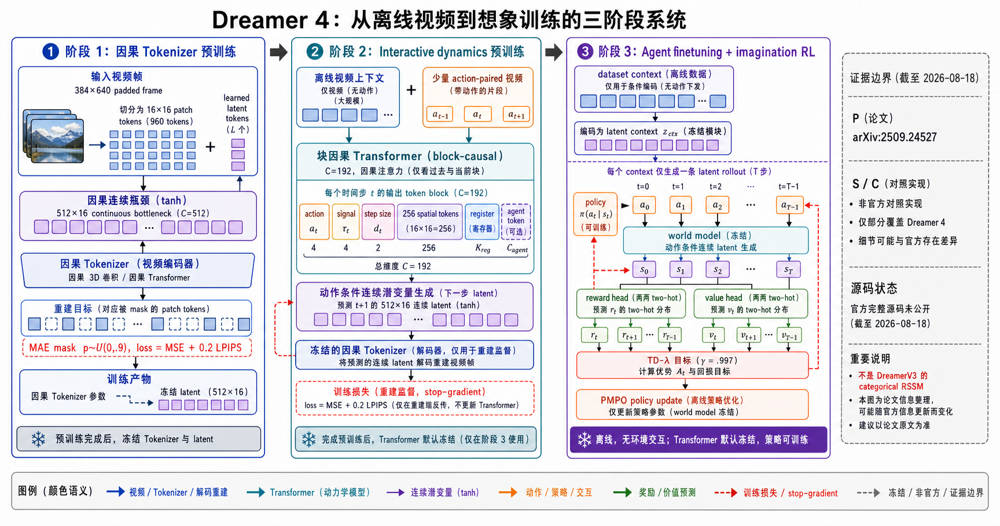
- 阶段 1：causal tokenizer → 冻结 continuous latent → interactive dynamics pretraining。
- 阶段 2：插入 task/agent token，继续训练 dynamics，同时学习 multi-token policy/reward head。
- 阶段 3：dataset context → 每个 context 一条 rollout → latent generation + policy action → reward/value annotation → PMPO/value update。
- Transformer 在阶段 3 默认冻结。
- 截至 2026-08-18，官方项目页无代码链接；旁列三类非官方实现的覆盖范围。
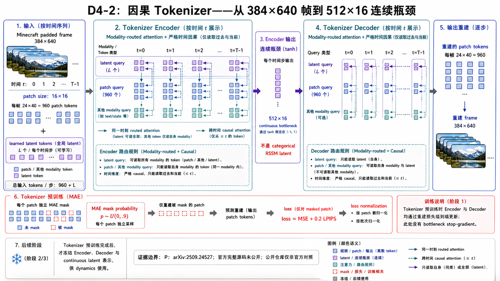
- Minecraft：
384×640padded frame，patch 为16×16，总计 960 个 patch token。 - 每帧包含 learned latent token 与 patch token；时间维 causal，同一时间步采用 routed attention。
- Encoder latent query 读取全部 modality；patch/modality token 只读取自身。
- 输出
512×16的 tanh continuous bottleneck。 - Decoder query 读取自身 modality 与 latent；latent 只读取 latent。
- MAE mask probability 为
p~U(0,.9)；loss 为MSE + .2 LPIPS。
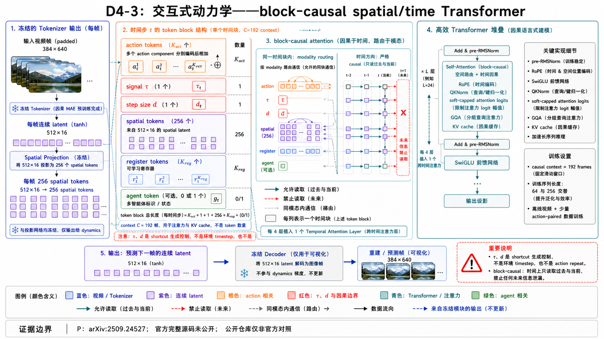
- spatial latent。
- 每个时刻的 token block 包含 action、signal
tau、step sized、256 个 spatial token、register token 与可选 agent token。 - 多个 action component 分别编码后相加；无标签视频使用 base action embedding。
- 使用 block-causal spatial/time attention；每四层一个 temporal layer；配合 GQA 与 KV cache。
- Context 为 ；训练 batch sequence length 交替使用 64 与 256。
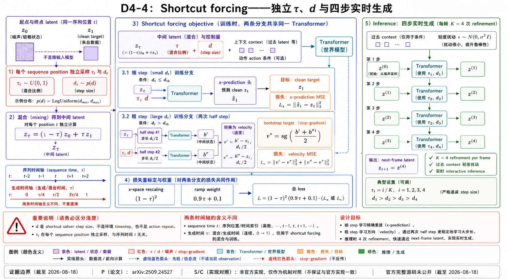
- 每个 sequence position 独立采样
tau_t,d_t。 - 。
- 最细 step：使用 x-prediction MSE 预测 clean
z1。 - 较粗 step：两个 half step → 转换为 velocity →
sg((b'+b'')/2)bootstrap target。 - 使用 x-space rescaling
(1-tau)^2与 ramp weight0.9tau+0.1。 - Inference 每帧执行 次 refinement；过去 context 受到轻度扰动。
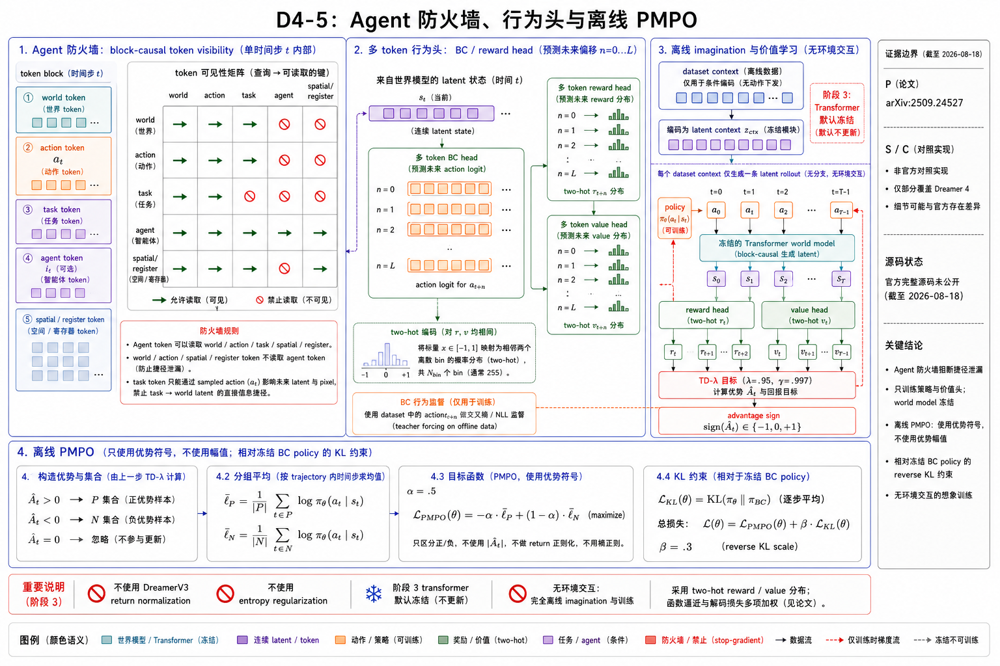
- Agent token 读取 world/action/task；world/action/spatial/register token 不读取 agent token。
- Task 只能通过 sampled action 影响未来 latent 与 pixel。
- Multi-token BC/reward head 预测 的未来 offset。
- Imagination 每个 context 一条 rollout；reward/value 使用 two-hot；TD-lambda 的 。
- PMPO：positive/negative advantage set 分别平均；；reverse scale 为
.3。 - 不使用 DreamerV3 return normalization 或 entropy；阶段 3 的 transformer 默认冻结。
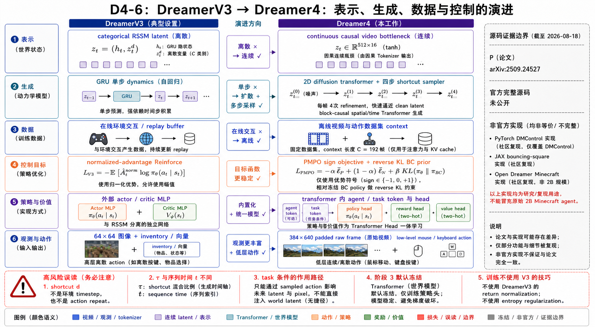
- Categorical RSSM latent → 连续的因果视频 bottleneck。
- GRU 单步 dynamics → 2D diffusion transformer + 四步 shortcut sampler。
- 在线环境交互与 replay → 离线视频/动作数据集 context。
- 使用归一化 advantage 的 Reinforce → PMPO 符号目标 + BC prior KL。
- Transformer 外部 actor/critic MLP → transformer 内部 agent/task token 与 head。
64×64加 inventory →360×640raw pixel 加 low-level mouse/keyboard action。- 右侧非官方对照：PyTorch DMControl 只覆盖世界模型；JAX bouncing-square 是完整 toy pipeline；Open Dreamer 覆盖 Minecraft 世界模型，但 BC/RL 仍在 roadmap。
论文：Training Agents Inside of Scalable World Models（arXiv:2509.24527）
官方项目页实测日期：2026-08-18，地址为 https://danijar.com/project/dreamer4/。
官方 release 证据边界
- 截至 2026-08-18，官方项目页提供论文、视频、作者和社交媒体入口，但没有公开代码仓库链接。
- 因此，原始系统的架构、目标函数、张量尺寸与训练过程属于 P 级论文证据；目前没有作者公开源码路径可作为完整原始 agent 的 S 级证据。
- 本项目只把三个本地仓库用作 非官方源码对照：
nicklashansen/dreamer4，固定提交b8abafbf4da72c59b6aa09f8499ccde0d6a37fd6：PyTorch，实现 30 个连续控制任务上的 tokenizer+dynamics；README 明确说明是不完整复现。edwhu/dreamer4-jax，固定提交753d650bf107f8223e5830f5b7417293cc56512d：教学型 JAX 完整流程，在 bouncing-square 上验证；不是 Minecraft 规模复现。next-state/open-dreamer，固定提交797e41f052b5996740938fd2fe8161f1866de3a2：JAX/Flax 的 Minecraft/VPT tokenizer+dynamics 训练与实时推理流程；README roadmap 仍未完成 behavior-cloning/RL agent 训练。
一句话结论
Dreamer 4 用高容量 causal video tokenizer 与 action-conditioned block-causal diffusion transformer，替换 DreamerV3 的紧凑 RSSM；它通过 x-prediction shortcut forcing 加速自回归视频生成，在共享 transformer 内插入单向 agent/task token 以产生 action/reward/value head，并通过带 behavior-cloning prior 的 PMPO，完全在生成轨迹中改进离线策略。
论文三阶段流水线
- 世界模型预训练： 先用视频训练 causal tokenizer 并冻结，再在 tokenized video 上用可选 action 训练 interactive latent dynamics。
- Agent finetuning： 插入携带 task embedding 的 agent token；继续训练 dynamics，同时从离线有标签序列学习 multi-token action/reward head。
- Imagination training： 冻结 transformer/world model，每个 dataset context 只启动一条 imagined rollout，仅优化 policy/value head。
因果 tokenizer
- 每个时间步都包含 image patch token 和 learned latent token。
- Encoder attention routing：latent query 可以读取全部 modality；每类输入 modality 的 token 只能读取本 modality。跨时间严格 causal，同一时间步内部可 dense attention。
- Latent-token 输出先线性投影到较低 channel dimension，再通过
tanh，形成连续且有界的 bottleneck representation。 - Decoder 把 bottleneck 投影回 model width，并拼接 learned patch-query token。Decoder modality token 可读取自身 modality 与 latent，而 latent 只能读取 latent。
- Tokenizer loss 为
MSE + 0.2·LPIPS，并使用 running loss normalization。 - MAE patch replacement probability 对每张图独立采样：
p~Uniform(0,0.9)；其中也包含 inference 使用的未遮挡 情形。 - Minecraft 论文设置：
360×640frame 零填充到384×640；16×16patch 产生 个 patch token。Tokenizer bottleneck 为 个 token × channel。
交互式 dynamics token
- 冻结 tokenizer 的 bottleneck 从
512×16reshape 为 Minecraft dynamics model 使用的 个 spatial token ×32channel。 - 每个时间 block 包含：
- action token：每个 action component 使用独立 encoder，component embedding 再相加；
- 一个离散 signal-level token
tau_t； - 一个离散 shortcut step-size token
d_t； - 投影后的 spatial latent token；
- learned register token；
- agent finetuning 后加入的 agent token。
- 无 action label 的视频只使用 learned base action embedding，从而允许 video-only pretraining。
- Minecraft dynamics context length 为 frame，即 20 FPS 下 9.6 秒；训练交替使用 与 两种长度，随后进行 long-only finetuning。
Shortcut forcing 目标
- 与 diffusion forcing 一样，sequence 中每个时间步都拥有独立 signal level。
- Clean latent
z_1与 Gaussian noisez_0混合为 。 - 模型接收 corrupted latent、action、逐步 signal level 与逐步 requested step size，并直接预测 clean latent
z_1，即 x-prediction。 - 最细 step 的训练目标是 clean-latent MSE。
- 较粗 step 使用两个 half-step prediction：先转为 velocity，在 stop-gradient 下平均，作为 bootstrap target；
(1-tau)^2将 velocity-space error scale 换算回接近 x-space 的尺度。 - Loss 使用 ramp weight ，提高更干净、信息量更高输入的权重。
- Inference 对每个 frame 自回归执行 次 shortcut refinement（），同时对过去 context 加少量 noise。论文记号写作 context signal level ；在其 signal/noise convention 下表示轻度扰动，图中必须严格保留原记号，不能擅自改名。
Agent token 与因果防火墙
- Agent token 携带 task embedding，并提供 policy/reward/value feature。
- Agent token 可以读取自身以及所有 world-model modality。
- Observation、action、shortcut、register 与 spatial token 都不允许反向读取 agent token。
- 该单向 firewall 阻止当前 task identity 直接修改生成的未来观测；task 只能通过所选择的 action 因果地影响 world dynamics。
- Agent finetuning 会继续在 noisy representation 上训练 video/dynamics objective，以保持预训练世界模型能力。
Multi-token 行为与 reward head
- Policy 与 reward head 为每个未来距离使用独立 output layer，从当前 hidden state 预测 offset 。
- Behavior cloning 与 reward loss 都对这些 multi-token prediction distance 的 negative log-likelihood 求和。
- Reward 延用 DreamerV3 的 symexp two-hot distribution；action distribution 根据数据集使用 categorical 或 vectorized binary。
- Minecraft action 包含 23 个 binary keyboard variable，以及一个 121 类 foveated mouse category。
- 训练数据由 50% uniform sequence 与 50% task-relevant sequence 混合。Dynamics loss 只施加在 uniform half，以避免 optimistic world-model bias；behavior cloning 施加在 relevant half。
离线 imagination 训练
- Imagination 从 dataset context 出发，每个 context 只生成一条 rollout，以优先覆盖 context diversity 并控制内存。
- Transformer 从 shortcut/flow head 采样未来 representation，从 policy head 采样 action；reward/value head 为 rollout 标注预测量。
- 原始论文默认冻结 transformer，只更新 policy/value head。Full-transformer finetuning 是可选但昂贵的变体，需要额外 preservation loss。
- Value head 使用 symexp two-hot output，以及 的 TD-lambda target。
- Policy 使用基于 advantage 符号而非幅值的 PMPO：
- positive state 最大化 sampled-action log probability；
- negative state 最小化 sampled-action log probability；
- positive/negative set 分别求平均，并用 合并；
- 相对于冻结 BC policy 的 reverse 权重为 。
- 由于只使用 advantage sign，且目标项都以 nat 为单位，论文报告配置不使用 DreamerV3 return normalization 或 entropy regularization。
高效 Transformer
- 共享 tokenizer/dynamics backbone 是 2D block-causal transformer：同一时间步内的 token 按 modality routing 互相通信；时间维可见性保持 causal。
- 基础 block 使用 pre-RMSNorm、RoPE、SwiGLU、QKNorm 与 soft-capped attention logits。
- Dense video attention 拆为 space-only 与 time-only layer。
- 每四层出现一次 temporal attention。
- Dynamics attention 使用 GQA 降低 KV-cache bandwidth。
- 长 context temporal layer 可使用 time-factorized attention；register token 与更大的 spatial token 数量用于恢复视觉质量。
- 论文最终模型为 2B 参数、256 个 spatial dynamics token、192-frame context，并报告在单张 H100 上以
640×360运行约 21 FPS。
非官方 PyTorch 对照实现
- 实现 MAE tokenizer、modality-routed space attention、按配置频率出现的 causal time attention、action/signal/step/spatial/register token、x-prediction shortcut loss，以及四步 interactive sampling。
- 使用 temporal sinusoidal position 与标准 multi-head attention；没有复现论文完整效率栈中的 RoPE、QKNorm、logit soft cap 与 GQA。
- 任务是 128×128 的 30 个 multi-task DMControl/MMBench 连续控制任务，不是 Minecraft mouse/keyboard control。
- 仓库包含 tokenizer、dynamics training 与 interactive generation，但没有完整 BC/reward/value/PMPO 阶段，因此不能支撑原始 agent 结果。
非官方教学型 JAX 对照实现
- 实现四个概念阶段：MAE tokenizer、shortcut dynamics、BC/reward head，以及 imagination policy/value training。
- Modality mask 显式编码单向 agent firewall；imagination 使用 teacher-free latent rollout，并在
jax.lax.scan内采样 policy action。 - Policy training 对 imagined hidden feature 使用 stop-gradient，计算 TD-lambda value target，分离 positive/negative advantage set，并对冻结 BC head 施加 reverse KL。
- 只在小型 categorical bouncing-square 环境验证。Head 默认值，例如 transformed range
[-8,8]上的 101 个 bin，以及 action encoding，都是教学选择，不是论文 Minecraft 设置。 - 其标准 axial transformer 缺少若干论文规模的效率组件，因此只能作为“机制可行实现”的源码证据，不能冒充原始 2B 实现。
Open Dreamer Minecraft 世界模型对照实现
- 当前仓库实现 causal tokenizer、Minecraft/VPT latent dataset、action-conditioned dynamics、shortcut forcing、KV cache、RoPE、GQA 风格 key/value head、generation 与 FVD evaluation。
- 相比 bouncing-square 仓库，它为实用的 open Minecraft world-model pipeline 提供了更强证据。
- README 明确把完整 behavior-cloning 与 RL agent loop 留在 roadmap，因此它只覆盖 Dreamer 4 的世界模型部分，不覆盖论文报告的离线 diamond agent。
从 DreamerV3 的演进
- 紧凑 categorical RSSM → continuous video-token bottleneck + diffusion/shortcut transformer。
- 每个 imagined step 一次 recurrent transition → 每个生成 frame 四次 denoising/refinement forward pass。
64×64加 inventory 的在线 Minecraft 输入 →360×640raw pixel 与离线 low-level mouse/keyboard 数据。- Online replay posterior start → 固定 offline dataset context。
- 带 normalized advantage 与 entropy 的 Reinforce → PMPO sign objective + BC prior KL。
- RSSM 外部的 world-model actor/critic MLP → 共享 transformer 内的 agent/task token 与 head。
- 从 task interaction 学习 latent dynamics → 大规模 video pretraining，可使用无 action label 视频，再用少量对齐 action data。
高风险误读
- Dreamer 4 tokenizer 输出连续有界 representation，不是 DreamerV3 风格的 categorical stochastic state。
- Shortcut step size
d是 generative solver control，不是环境 timestep 或 action repeat。 - 训练时
tau_t在不同 sequence position 上独立变化；sequence timet与 denoising timetau是两条不同轴。 - Agent token 可以读取 world，但 world token 不能读取 agent/task token。Task 只能通过 action 影响未来 pixel。
- Behavior cloning/reward finetuning 与 imagination RL 是两个独立阶段；原始 RL 阶段默认冻结 transformer。
- 截至 2026-08-18，官方项目页仍无代码链接；这里分析的三个公开仓库都必须明确标成非官方或不完整实现。
16. 新手总览：先把 Dreamer4 拆成四个可验证对象
阅读 Dreamer4 时最容易犯的错误，是把它当成“DreamerV3 换成 Transformer”。更准确的拆法是四个对象：
- Tokenizer：把高分辨率视频帧压缩为可预测的连续 latent；它负责“看懂并重建画面”，不负责决定动作。
- Interactive dynamics：给定历史 latent、action、shortcut signal
tau和 step sized，生成下一帧 latent；它负责“如果执行这个动作，画面会怎样变化”。 - Agent heads：在少量带动作/任务标签的数据上，向 Transformer 中加入 agent/task token，并学习 action、reward、value 相关 head。
- Imagination policy training：冻结世界模型，在离线 context 上生成 latent rollout，用 reward/value 计算 advantage，再只更新策略和值相关参数。
因此，代码阅读也应该按这四层走，而不是从某一个 forward() 函数开始跳读。论文给出了原始 Minecraft agent 的方法事实；公开仓库只能分别帮助我们理解其中的局部机制，不能把任何一个仓库当成原始 2B agent 的完整源码。
17. 一次真实数据样本的完整时间线
假设数据集里有一段 Minecraft 视频和低层 mouse/keyboard action。对一个长度为 T 的训练窗口，概念上的数据流如下：
raw frames x[0:T] + actions a[0:T-1]
│
├─ tokenizer encoder：每帧 patch token + learned latent token
│ └─ continuous bottleneck z[0:T], shape 512×16 per frame
│
├─ dynamics packing：每帧 z reshape/project 为 256 spatial tokens
│ └─ 插入 action、tau、d、register、可选 agent token
│
├─ block-causal Transformer
│ └─ 预测 clean latent 或 shortcut velocity target
│
├─ decoder（训练/可视化阶段）
│ └─ latent → patch/frame reconstruction
│
└─ agent finetuning / imagination
└─ policy action → frozen dynamics → reward/value → PMPO
这里有三条不能混淆的时间轴：
- 视频序列时间
t：第几帧，决定 causal attention 可以看到哪些历史帧。 - shortcut signal
tau：当前 latent 处在 noise 到 clean 的哪个混合位置，取值接近[0,1]的生成时间轴。 - shortcut step size
d：这次 solver/refinement 请求走多大的步长，决定模型学习细步还是粗步。
tau 和 d 都进入 dynamics token block，但它们不是环境 timestep，也不是 action repeat。把 解释成“环境连续执行四帧动作”会直接改变算法含义。
18. Tokenizer 的源码级阅读方法
18.1 先检查输入 shape，而不是先看 Transformer
Minecraft 论文设置把原始画面 padding 到 384×640。使用 16×16 patch 后：
H_tokens = 384 / 16 = 24
W_tokens = 640 / 16 = 40
N_patch = 24 × 40 = 960
因此 tokenizer 的输入 token 数是 960 + L，其中 L 是 learned latent token 数。512×16 不是 patch token 数，而是经过 latent query 聚合和低维投影后的 bottleneck shape： 个 latent token，每个 token 16 个 channel。
非官方 PyTorch 对照实现可以帮助理解这一层的模块关系：
# repo-unofficial-pytorch/dreamer4/model.py（概念调用顺序）
patches = patchify(frame, patch_size)
tokens = torch.cat([patches, learned_latents], dim=1)
encoded = encoder(tokens, causal_mask=mask)
bottleneck = torch.tanh(latent_projection(encoded[:, :n_latents]))
reconstruction = decoder(bottleneck, decoder_queries)
loss = reconstruction_loss(reconstruction, target, masked_positions)
上面代码表达的是调用顺序，不应冒充论文官方实现。真正审计时要继续确认四件事：patchify 的高度/宽度是否整除、latent query 是否能读到全部 modality、patch query 是否越权读取其他 modality、时间 causal mask 是否允许看到未来。
18.2 Encoder 路由为什么重要
Encoder 不是普通的“所有 token 做全连接 self-attention”。它包含两种约束：
- 同一时间步的 modality routing：latent query 需要聚合 patch 和其他 modality 的信息；patch token 不能反过来读取任意其他 modality，从而避免信息泄漏。
- 跨时间 causal：时间
t的 token 只能看 的历史与当前，不可以利用未来帧重建当前帧。
这也是 Dreamer4 能够逐帧解码和在线交互的基础。如果训练时使用了双向时间 attention，重建 loss 可能很好看，但生成时一旦没有未来帧，模型就会出现严重分布偏移。
18.3 MAE mask 的真实含义
每张图片独立采样 p~U(0,.9)，意味着一个 batch 内不同样本的遮挡比例不同。它不是固定的 90% mask，也不是只在训练开始时使用。 对应完整观测/推理情形；较大的 p 强迫 latent token 从上下文和局部 patch 中恢复缺失内容。
论文事实是 MSE + .2 LPIPS，并带有 loss normalization。需要区分：
MSE约束像素或 patch 的逐点重建；LPIPS约束感知特征相似度；- mask 只改变哪些 patch 计入重建目标，不改变 latent token 的语义定义；
- tokenizer 预训练阶段 Encoder/Decoder 通过重建损失端到端更新；完成该阶段之后才冻结 tokenizer 供 dynamics 使用。
19. Dynamics token block：逐 token 解释
对 Minecraft 设置，一个时间 block 可以抽象成：
[action component embeddings summed]
[signal tau_t]
[step size d_t]
[256 spatial latent tokens]
[register tokens]
[optional agent token]
19.1 Action token
低层 mouse/keyboard action 不是一个单一离散类别。不同 action component（例如鼠标移动、按钮、键盘按键）先独立编码，再相加为 action conditioning。这样做的目的不是把多动作强行排序，而是让同一时间 block 能表达组合动作。
无 action label 的视频使用 learned base action embedding。这个设计允许 dynamics 从大量无动作视频学习视觉和环境变化，再用少量 action-paired 视频学习“动作如何改变未来”。因此 Dreamer4 的数据策略不是“所有视频必须有动作标签”。
19.2 tau 与 d token
tau_t 表示该序列位置的 shortcut/noise signal level；d_t 表示 requested solver step size。训练时不同 sequence position 可以有不同 tau_t,d_t，所以模型同时看到干净、轻噪声、重噪声以及不同步长条件。
源码对照中应重点搜索以下配置，而不是只搜索 diffusion：
# repo-unofficial-open-dreamer/configs/dynamics.yaml
# signal/noise resolution, shortcut step size and temporal attention settings
# are configured independently from sequence length and environment time.
如果某个实现把 d 直接复用为 environment frame skip，就已经偏离论文机制。
19.3 256 spatial tokens 与 context=192
是空间压缩/打包， 是 temporal context frame 数，两者不是同一个维度：
256：一帧在 dynamics 中保留多少 spatial token；192：Transformer 可使用多少历史帧；32：每个 spatial token 的 channel（论文设置中的重排结果）；64/256：训练时交替使用的 sequence length。
将 画成 192 个 token，或把 256×32 误写成 256 帧，都会破坏数据流解释。
20. Block-causal Transformer 的可见性与效率
Dreamer4 的核心不是“用了 Transformer”这一句，而是它如何把视频 attention 拆成可计算的路径：
- 空间/模态路由：同一时间 block 内，允许规定 modality 之间通信。
- 时间 causal：时间 attention 只能读取过去和当前 block。
- 每四层 temporal layer：大部分层处理局部空间结构，周期性插入 temporal mixing。
- GQA：减少 key/value head 数量，降低长 context KV cache 的带宽压力。
- KV cache：交互式逐帧生成时复用历史 key/value，避免每次从头计算 192 帧上下文。
- RoPE、QKNorm、soft-capped logits、SwiGLU、RMSNorm：分别承担位置编码、查询/键尺度稳定、限制极端 attention logit、非线性表达和残差前归一化。
一个新手可执行的 debug 顺序是：先用全 causal mask 验证形状，再验证 modality mask，最后打开 time-factorized attention、GQA 和 KV cache。不要一开始同时启用所有效率优化，否则出现 NaN 或未来信息泄漏时很难定位。
21. Shortcut forcing：从细步到粗步
21.1 细步分支
给定混合 latent：
模型输入 z_tau、action、tau、d 和上下文，直接预测 clean latent z_1。这叫 x-prediction，不是直接预测噪声 epsilon。
细步训练使用 clean-latent MSE。它让模型学会在小 step size 下精确修正 latent。
21.2 粗步分支
粗步不要求模型只学一个很小的局部变化，而是把一个较大步拆成两个 half step：
z_tau --half step--> b'
b' --half step--> b''
v' = (b' - z_tau) / (d/2)
v'' = (b'' - z_tau) / (d/2)
v* = sg((v' + v'') / 2)
sg 是 stop-gradient。它防止 bootstrap target 的两次预测把梯度互相追逐，保留稳定的 teacher-like target。这里的 b'、b'' 是 latent refinement 中间状态，不是两帧环境观测。
21.3 权重与推理
总目标还包含：
- x-space rescaling：
(1-tau)^2； - ramp weight：
0.9*tau+0.1； - inference 每帧 次 refinement；
- 过去 context 可以受到轻度扰动，以提升交互鲁棒性。
四次 refinement 是生成求解器的 forward 次数，不是连续执行四个环境 action。生成一帧后才进入下一帧的 autoregressive context。
22. Agent token 防火墙：为什么 task 不能直接改世界
Agent finetuning 的关键是单向信息通道：
agent token ──可读──> world / action / task
world token ──禁止读──> agent token
action token ──禁止读──> agent token
spatial/register ─禁止读──> agent token
task condition ──> policy head ──sampled action──> future latent/pixel
这不是普通的 attention mask 美化，而是防止 task token 通过捷径直接写入世界状态。如果 task token 能被 world token 直接读取，模型可能在 imagined frame 中“凭空注入目标信息”，导致 reward 看起来正确，但像素世界没有通过动作产生因果变化。
22.1 Multi-token BC/reward head
每个 offset 有独立输出头，预测未来 action logits 或 reward。这样模型不只学习“下一动作”，还能从相同 latent context 学到更远 offset 的行为与任务成功信号。
需要区分三个阶段：
- tokenizer：重建视觉；
- agent finetuning：从带 action/task/reward 的数据学习 heads；
- imagination RL：冻结 world model，用 policy/value head 训练策略。
不能把 BC/reward head 的监督损失和 PMPO 的 imagined rollout 损失合并成一个“端到端同时更新所有参数”的流程。
23. 离线 imagination 与 PMPO 的逐步计算
每个 offline dataset context 只启动一条 rollout，而不是像 DreamerV3 那样从每个 replay state 批量展开大量 imagination 分支：
context z_0:C
│
├─ policy head → sampled action a_t
├─ frozen dynamics → z_{t+1}
├─ reward head → r_t (two-hot)
├─ value head → v_t (two-hot)
└─ repeat for imagined horizon
随后使用 的 TD-lambda 目标计算 advantage。策略更新不是按 advantage 的连续幅值加权，而是先按符号分组：
A_hat_t > 0：positive setP；A_hat_t < 0：negative setN；- ：忽略。
两个集合分别平均 log probability，再用 合并。另加相对于冻结 BC policy 的 reverse KL：
权重为 。这种设计保留行为克隆先验，避免 offline imagined model error 让 policy 快速跑向数据分布之外。
论文设置明确不使用 DreamerV3 的 return normalization，也不使用 entropy regularization。若对照实现出现 Per95-Per5 或 entropy bonus，必须标记为其他版本机制，不能写成 Dreamer4 事实。
24. 三个非官方仓库应该怎样读
24.1 PyTorch DMControl 对照
路径：sources/dreamer4/repo-unofficial-pytorch/。
它适合阅读 tokenizer、dynamics、patch 数据和交互式生成的模块边界，但任务是 30 个连续控制环境，不是论文中的 Minecraft 离散 mouse/keyboard agent。README 也明确声明不是完整复现。
建议阅读顺序：
README.md：先确认任务、数据集和“不完整复现”限制；dreamer4/model.py：看 tokenizer/dynamics 的共享 Transformer 结构；train_tokenizer.py：看 patch、mask、重建 loss、checkpoint；train_dynamics.py：看 latent dataset、action conditioning、shortcut loss；interactive.py：看 KV cache/逐帧生成如何接到 decoder。
不能从此仓库推断原始 PMPO agent 已经实现，因为它没有覆盖论文完整的 BC/reward/value/imagination agent loop。
24.2 教学型 JAX bouncing-square 对照
路径：sources/dreamer4/repo-unofficial-jax/。
它的价值是把完整概念链压缩成可读 toy pipeline：tokenizer、dynamics、BC/reward head、imagination、TD-lambda 和 PMPO。应重点阅读：
dreamer/models.py：模块和参数结构；dreamer/imagination.py：teacher-free latent rollout；scripts/train_bc_rew_heads.py：多 offset BC/reward 监督；scripts/train_policy.py：positive/negative advantage 分组与 BC KL；dreamer/data.py：toy environment 的 reset/step 与 batch shape。
其中 、bouncing-square、action encoding 等是教学选择，不是论文 Minecraft 设置。源码可以证明机制可实现，不能证明 2B 模型的规模、FPS 或 diamond 结果。
24.3 Open Dreamer Minecraft 对照
路径：sources/dreamer4/repo-unofficial-open-dreamer/。
它比 toy JAX 更接近 Minecraft world-model pipeline，尤其适合核对：
- tokenizer checkpoint 如何被 dynamics config 引用；
- latent dataset 如何落盘；
- block-causal mask、GQA、RoPE、KV cache 配置；
- shortcut/noise resolution 与 time-attention window；
- generation 与 FVD evaluation。
但 README roadmap 仍未完成完整 BC/RL agent，因此它不能支撑“已经复现离线挖钻石 agent”。配置文件是 C/S 对照证据，不是官方 P/S 证据。
25. 从源码配置反推 shape 的方法
以 Open Dreamer dynamics 配置为例，应该把依赖关系写成一张表：
| 配置/事实 | 含义 | 不能误读为 |
|---|---|---|
n_latents |
tokenizer latent token 数 | patch token 数 |
d_bottleneck |
tokenizer bottleneck channel | dynamics context 长度 |
spatial_tokens |
每帧 dynamics token 数 | 视频帧数 |
context_length |
temporal history window | rollout horizon |
time_every |
每隔多少层插入 temporal layer | 每多少环境 step 更新一次 |
n_kv_heads |
GQA 的 KV head 数 | action component 数 |
shortcut_resolution |
生成 step/noise 分辨率 | environment frame skip |
window_length |
time attention 窗口 | tokenizer patch 数 |
遇到配置项时，先追踪它进入哪个 constructor，再看它影响 tensor 的哪一个轴。只在 YAML 里看到 ，不能直接断言完整论文实现一定采用相同 batch 或推理窗口；必须区分论文 P、对照仓库 C/S 和我们的合理推断 R。
26. 新手复现检查表
26.1 Tokenizer 检查
- [ ] 输入是否 padding 到正确空间尺寸；
- [ ]
16×16patch 是否得到 ； - [ ] latent token 是否与 patch token 分开计数；
- [ ]
tanh是否在 bottleneck 投影之后； - [ ] MAE mask 是否每样本独立采样；
- [ ] tokenizer 训练时没有错误地 stop-gradient；
- [ ] 完成 tokenizer 阶段后才冻结供 dynamics 使用。
26.2 Dynamics 检查
- [ ] action、tau、d、spatial、register、agent 的 token 顺序明确；
- [ ]
tau与 sequence time 分离； - [ ]
d没有被当成 action repeat； - [ ] future token 在 block-causal mask 中不可见；
- [ ] context frame 数没有和 spatial token 数混淆；
- [ ] KV cache 只复用历史 key/value，没有泄漏未来。
26.3 Imagination/PMPO 检查
- [ ] 阶段3 world model/Transformer 默认冻结；
- [ ] 每个 context 只启动一条 rollout；
- [ ] reward/value 使用 two-hot 分布；
- [ ] TD-lambda 使用 ；
- [ ] advantage 按正负号分组而不是按幅值加权；
- [ ] 、BC reverse KL ；
- [ ] 不误加 DreamerV3 return normalization 和 entropy；
- [ ] agent/task token 没有直接写入 world latent 的捷径。
27. 结论边界
Dreamer4 的论文细节已经足以说明其方法机制：高分辨率 causal tokenizer、连续 bottleneck、action-conditioned block-causal Transformer、shortcut forcing、agent firewall、离线 imagination 和 PMPO。源码层面目前能做到的是三种互补对照：PyTorch 解释 world model 组件，JAX toy pipeline 解释完整 agent 机制，Open Dreamer 解释 Minecraft world-model 工程配置。
不能越过的边界有三条：
- 没有作者公开源码，就不能声称找到了官方 2B Minecraft agent 的函数级实现；
- 非官方仓库实现了局部机制，就不能把其默认值、任务、loss 或配置改写成论文事实；
- 图中出现的每个 shape、箭头、冻结边界和证据标签，都必须能回到论文定位或明确标注为非官方对照/合理推断。
展开结论证据表
| 结论 | 证据等级 | 来源定位 | 置信度 | 限制/备注 |
|---|---|---|---|---|
| 原始 agent 包含 tokenizer、dynamics、agent finetuning 与 imagination 阶段 | P | tex/algos/agent.tex; main.tex:149-329 |
高 | 没有公开作者源码路径 |
| Tokenizer 具有因果性，并使用连续 tanh bottleneck latent | P | main.tex:162-177; 方法图 caption |
高 | 不是 categorical RSSM latent |
Tokenizer loss 为 MSE + .2 LPIPS，每张图 mask rate 采样自 U(0,.9) |
P | main.tex:178-192 |
高 | 还使用 loss normalization |
Minecraft 输入产生 960 个 patch 与 512×16 bottleneck |
P | appendix.tex:5-13 |
高 | Frame 填充到 384×640 |
Dynamics 使用 256×32 spatial latent、192 帧 context、64/256 两种训练长度 |
P | appendix.tex:10-13 |
高 | 属于 Minecraft 设置 |
| Shortcut forcing 预测 clean x-space latent，并使用 two-half-step bootstrap | P | main.tex:210-260 |
高 | 不能把 tau 与 sequence time 混淆 |
Ramp weight 为 0.9 tau + 0.1，inference 使用 |
P | main.tex:251-260 |
高 | Context 会受到轻度扰动 |
| Agent token 可以读取 world modality，但 world 不能反向读取 agent token | P | main.tex:262-268 |
高 | 单向因果防火墙 |
| Policy/reward head 使用 multi-token prediction | P | main.tex:271-286 |
高 | 每个 offset 有独立 output layer |
| 原始 RL 阶段冻结 transformer，只更新 policy/value head | P | main.tex:288-299 |
高 | Full-transformer variant 是可选项 |
| Value 使用 TD-lambda、gamma .997 与 symexp two-hot | P | main.tex:300-311 |
高 | 当前展示段落未明确给出 lambda 数值 |
| Policy 使用 PMPO sign objective、alpha .5，以及到 BC prior 的 reverse KL beta .3 | P | main.tex:313-328 |
高 | 报告设置不使用 RetNorm/entropy |
| Backbone 使用 block-causal axial attention、每四层一个 temporal layer 与 GQA | P | main.tex:330-352 |
高 | 还包括 RMSNorm/RoPE/SwiGLU/QKNorm/soft cap |
| 论文 Minecraft 模型为 2B、192 帧 context，在 H100 上约 21 FPS | P | tables/inference.tex; appendix |
高 | 论文测量设置 |
| 截至 2026-08-18，官方项目页没有公开代码链接 | I | artifacts/dreamer4_project_live_2026-08-18.html; 抽取的链接列表 |
高 | 该状态在此日期之后可能变化 |
| PyTorch 仓库是非官方不完整实现，使用连续控制 DMControl | I/S-对照 | repo-unofficial-pytorch/README.md:1-5 |
高 | 不是原始 Minecraft agent |
| 教学型 JAX 仓库在 bouncing-square 上实现完整 toy pipeline | I/S-对照 | repo-unofficial-jax/README.md:1-47; 源码脚本 |
高 | 不是论文规模复现 |
| Open Dreamer 实现 Minecraft tokenizer/dynamics，但 BC/RL 仍在 roadmap | I/S-对照 | repo-unofficial-open-dreamer/README.md |
高 | 只覆盖世界模型部分 |
来源、Commit 与生成证据
World Models 严格终稿 5 张，总计 7,617,816 bytes；每张均记录当前任务标识、生成或编辑链、prompt、原始日志、模型、skill commit、尺寸、SHA-256 与目视验收结论，位于 artifacts/world_models_strict_imagegen_evidence_2026-08-19.jsonl。
PlaNet 严格终稿 6 张，总计 9,587,829 bytes；同样保留当前任务 prompt、生成日志、尺寸、哈希和逐图事实验收，位于 artifacts/planet_strict_imagegen_evidence_2026-08-19.jsonl。
DreamerV1 严格终稿 6 张，总计 7,997,027 bytes；证据位于 artifacts/dreamerv1_strict_imagegen_evidence_2026-08-20.jsonl。六图均使用 gpt-image-2、high、--no-augment，图内没有语义后处理，正式集成仅为逐字节文件复制，且 prompt_cache_retention 未进入 Image API payload。
| 图号 | 尺寸 | 字节数 | SHA-256 | 全尺寸审计 |
|---|---|---|---|---|
| D1-1 | 1672×941 | 1,385,228 | 58bc271c4220dd70e3cbf0f62b340a6e21b6a847df80518316c827d54bbb75aa | pass |
| D1-2 | 1672×941 | 1,177,242 | 6823e32798b4a484193dc63566107715f0e172bfb24f439287536b6a08021d25 | pass |
| D1-3 | 1672×941 | 1,336,511 | 39d637c8a26169daabe2fb897b2e60eb419de07498b57bbeb3c980a2d0ba5346 | pass |
| D1-4 | 1672×941 | 1,122,206 | 3a5889b12c47589b395802edd7bb5e085224e0980f38d03c8eac107a25db1635 | pass |
| D1-5 | 1536×1024 | 1,485,006 | 368627cc0e767602841aa18960bf5a2b4a22abeb4c2c7cdddc25c666dba6d04b | pass |
| D1-6 | 1672×941 | 1,490,834 | 835650910006bc08c41bc64b0b539274d3d3ff5818a30ce39dd22e29f4858490 | pass |
DreamerV2 严格终稿 6 张，总计 9,356,429 bytes；证据位于 artifacts/dreamerv2_strict_imagegen_evidence_2026-08-21.jsonl。六图固定使用 gpt-image-2、high、--no-augment；失败与拒收记录分别保留，蒙版仅限定 ImageGen 编辑区域，正式集成仍为逐字节复制。
| 图号 | 尺寸 | 字节数 | SHA-256 | 全尺寸审计 |
|---|---|---|---|---|
| D2-1 | 1536×1024 | 1,871,658 | 8a09e815f927cc2b14186aecbe658f3951628aa015d8951227178eaa2dec91de | pass |
| D2-2 | 1536×1024 | 1,570,460 | f5b230c05c08d4313205d0a02253a8797167500f13b5e96bd1a8efee266c4642 | pass |
| D2-3 | 1672×941 | 1,356,775 | 9fac8ac6f8032c9468e3b9fa400f43bcdbde5ee9a23b7189bf101fff779166e9 | pass |
| D2-4 | 1672×941 | 1,399,668 | 7f16a02c28e19a9f59b2b1f9ce7a68c13aa77bc7e929749ce46956516e32425b | pass |
| D2-5 | 1536×1024 | 1,740,203 | 94125f9a4160ae5214f9dfc3be9e5c3c6f259633137da941db9a9ae9d6c10454 | pass |
| D2-6 | 1672×941 | 1,417,665 | db9569f0d9124a108a002aec73cef8c5cc8d41581a611cef0dacc83512e8cb61 | pass |
DreamerV3 严格终稿 6 张，总计 9,280,755 bytes；证据位于 artifacts/dreamerv3_strict_imagegen_evidence_2026-08-23.jsonl。D3-1 与 D3-6 记录原生 image_gen.imagegen 会话、原生输出路径、prompt 或编辑要求、尺寸、哈希和目视审计；D3-2 至 D3-5 保留原有严格生成记录。六张正式资产均只做逐字节复制，semantic_postprocess=none。
| 图号 | 尺寸 | 字节数 | SHA-256 | 全尺寸审计 |
|---|---|---|---|---|
| D3-1 | 1536×1024 | 1,535,211 | 577903F924A0D6C164A3E65EAC44D5484F10DECAB9E5C439A5D0E7BF9E0EF73E | pass |
| D3-2 | 1672×941 | 1,497,822 | 52B2C6572D4219DCCAC024994C561E6EAFB9A4DB69E4FAC658DC371CC237AB20 | pass |
| D3-3 | 1672×941 | 1,553,514 | A5083DDE0F7CD5C58910EA99DB908C744D05867824D81D2D534BC9D91E43E507 | pass |
| D3-4 | 1672×941 | 1,489,321 | 5672D8EF60495CF53DBE639E639CC43F5CD0B4B4549D70EF06E2D92B733C7C07 | pass |
| D3-5 | 1672×941 | 1,580,604 | A080E200DA359E90B5E708EFE972016D358B4AE185E083A19B1095317AF2A15D | pass |
| D3-6 | 1620×971 | 1,624,283 | 46A581F79FD087A3942FC1D0C14A76983FC40A8C627C10C24FB231A44AFF3CDE | pass |
Dreamer4 严格终稿 6 张，总计 9,918,558 bytes；证据位于 artifacts/dreamer4_strict_imagegen_evidence_2026-08-25.jsonl。六张图均记录原生 image_gen.imagegen 会话、原生源路径、prompt、尺寸、哈希与全尺寸审计；D4-2、D4-3 的错误初稿保留为拒收记录，正式集成仅执行逐字节复制，semantic_postprocess=none。
| 图号 | 尺寸 | 字节数 | SHA-256 | 全尺寸审计 |
|---|---|---|---|---|
| D4-1 | 1728×910 | 1,658,067 | 7ED72965926A4E449A01C782C6BBDB37A53A36001DFE7CCDD6915037859EBE2E | pass |
| D4-2 | 1672×941 | 1,597,675 | D7BD9FEC26BF20445411920A60C4759CDBA5E434713D3AB0C8151F5F03822469 | pass |
| D4-3 | 1672×941 | 1,653,532 | FA4149D8CB0EF39EDF5357B9DFE11967DD4B0051F8D7AE22E9B0552090B098EC | pass |
| D4-4 | 1692×929 | 1,594,333 | C3DDA41B0EAEACC4608F26B5DA8B953344F0DF8BAA3A33B4F85DDECBDC870E62 | pass |
| D4-5 | 1536×1024 | 1,670,238 | 6D20A276184A868E83E36E805334F0878ED5210781DC7509DC763F31A93E3F51 | pass |
| D4-6 | 1691×930 | 1,744,713 | FE1DE8D43F3E4BEC22BDDA9541D776D84D0CC0AF550F77B94FE3508B94896921 | pass |
旧版流水线的 39 条历史 composite 证据（16,522,522 bytes）仍保留在 artifacts/imagegen_evidence.jsonl，仅用于审计历史，不再作为六篇论文严格图稿的验收依据。
来源清单
固定日期：2026-08-18
论文文件
| 工作 | arXiv | 本地 PDF | 字节数 | SHA-256 |
|---|---|---|---|---|
| World Models | 1803.10122 | sources/world-models/world-models.pdf |
3,147,467 | B0C1E30AAB53EFD28DDF61D661F680150918D4D03B77BAE62BC52D62DBD76CCE |
| PlaNet | 1811.04551 | sources/planet/planet.pdf |
3,146,899 | ABAC727526E6A45669D3AB9957126587E22AACF4DC9BCD60FFE5C853108E5BCC |
| DreamerV1 | 1912.01603 | sources/dreamerv1/dreamerv1.pdf |
1,999,946 | 318891D59BA0065F57EB0E735735700E5EB528F53BF08B81C773437385586C64 |
| DreamerV2 | 2010.02193 | sources/dreamerv2/dreamerv2.pdf |
5,261,247 | 037DCE26DE328DD86CE4AB71DFB54F44513FEF49A02F2995A1C05848CCEF158F |
| DreamerV3 | 2301.04104 | sources/dreamerv3/dreamerv3.pdf |
2,874,717 | D0385798E8BADA8E81B915C1743BE81D9CE8776F12ED937E09351995E099CE37 |
| Dreamer 4 | 2509.24527 | sources/dreamer4/dreamer4.pdf |
3,693,729 | 8655CCE4BF12CE6210F6694F83C1A723C7ACD7579214CA3EBC57C4394D0B1AEB |
源码仓库
| 角色 | Canonical origin | 本地路径 | 固定 HEAD | 状态 |
|---|---|---|---|---|
| World Models 作者实验仓库 | https://github.com/hardmaru/WorldModelsExperiments.git |
sources/world-models/repo |
fd982b9691a941b52c6addbde29bc801ca6202c8 |
干净、非 shallow、 |
| PlaNet 官方仓库 | https://github.com/google-research/planet.git |
sources/planet/repo |
c04226b6db136f5269625378cd6a0aa875a92842 |
干净、非 shallow、 |
| DreamerV1 官方仓库 | https://github.com/google-research/dreamer.git |
sources/dreamerv1/repo |
d517542f9777c53864ff6f2683cea88be9ea98ac |
干净、非 shallow、 |
| DreamerV2 官方仓库 | https://github.com/danijar/dreamerv2.git |
sources/dreamerv2/repo |
07d906e9c4322c6fc2cd6ed23e247ccd6b7c8c41 |
干净、非 shallow、 |
| DreamerV3 官方对照仓库 | https://github.com/danijar/dreamerv3.git |
sources/dreamerv3/repo |
e3f02248693a79dc8b0ebd62c93683888ddaccfe |
干净、非 shallow、；README 标为 reimplementation |
| Dreamer 4 非官方 PyTorch 对照 | https://github.com/nicklashansen/dreamer4.git |
sources/dreamer4/repo-unofficial-pytorch |
b8abafbf4da72c59b6aa09f8499ccde0d6a37fd6 |
非官方；干净、非 shallow、 |
| Dreamer 4 非官方 JAX 对照 | https://github.com/edwhu/dreamer4-jax.git |
sources/dreamer4/repo-unofficial-jax |
753d650bf107f8223e5830f5b7417293cc56512d |
非官方；干净、非 shallow、 |
| Dreamer 4 Open Dreamer Minecraft 世界模型对照 | https://github.com/next-state/open-dreamer.git |
sources/dreamer4/repo-unofficial-open-dreamer |
797e41f052b5996740938fd2fe8161f1866de3a2 |
非官方且 agent 不完整；干净、非 shallow、；fetch 后 HEAD 与远端一致 |
Dreamer 4 官方项目页检查
- 在线页面快照：
artifacts/dreamer4_project_live_2026-08-18.html。 - 抽取链接：
artifacts/dreamer4_project_live_links_2026-08-18.txt。 - 截至 2026-08-18，官方页面包含论文、视频、作者与社交媒体链接，但没有代码仓库链接。
验证说明
传输成功不等于来源正确。每个官方仓库都经过实际执行路径审计、真实 git fetch origin、HEAD 与 git ls-remote 比较，以及固定提交代表性源码检查；只有完成这些检查后，相关结论才提升为 S 级证据。
QA：具身智能与自动驾驶方向值得拓展学习的优秀工作
用户问题
帮我搜索和推荐具身智能、自动驾驶在相关方向值得拓展学习的优秀工作，并结合 Dreamer 系列分析给出详细学习路线、源码阅读方法和可做课题。
回答摘要
截至 2026 年 8 月 28 日，沿着 Dreamer 继续拓展，重点不是单纯堆大策略网络，而是把潜在状态、动作条件预测、想象 rollout、价值评估、策略优化和闭环控制接到真实系统上。具身侧重点是通用策略、动作生成、物理感知世界模型；自动驾驶侧重点是结构化场景 latent、多模态轨迹、意图、模型误差和闭环仿真。推荐主线：Diffusion Policy → Octo → OpenVLA → π0 → RoboScape；驾驶主线：UniAD → VAD/VADv2 → Waymax → LatentDriver → World4Drive → DriveDreamer。
一、筛选标准
- 处理部分可观测、长时序、动作后果延迟、多主体交互、分布偏移或闭环安全。
- 有状态表示、动力学预测、未来生成、价值评估、轨迹评分或闭环环境，可与 Dreamer 对接。
- 有论文、项目页、源码、数据或 benchmark；公开程度不确定时明确标注边界。
- 能从小规模离线复现逐步扩展到多任务、多机器人和闭环仿真。
- 暴露模型误差、不确定性、物理一致性和策略利用模型漏洞等研究缺口。
二、具身智能推荐
2.1 Diffusion Policy：动作序列生成基础
它解决行为克隆的单峰回归问题：多个示范动作被均方误差平均后，可能得到数据中不存在的动作。方法以视觉和机器人状态为条件，从噪声逐步生成未来动作序列，只执行前一小段并重新观察，形成 receding-horizon 控制。
源码应沿 追踪，重点检查动作归一化、历史帧、预测/执行 horizon、噪声调度、训练随机时间步和部署反向去噪。它不是显式世界模型：Dreamer 在 latent dynamics 中想象并优化，Diffusion Policy 直接生成多模态动作。自然组合是让 Dreamer rollout 评估多个 action chunk。
2.2 Octo：通用机器人策略接口
Octo 适合学习多任务、多机器人、多模态 observation/action 如何统一。重点读 observation token、语言 token、时间位置编码、动作头、embodiment 适配、任务标识和缺失模态处理。它更像策略先验，Dreamer 更像可预测环境和价值的控制框架；可用 Octo 初始化 actor，或用 imagined value、风险和可达性筛选 Octo 动作。复现顺序建议单任务微调→两种 embodiment 对齐→多任务训练，并记录动作维度、单位、裁剪范围和控制频率。
2.3 OpenVLA：视觉—语言—动作模型
OpenVLA 将视觉、语言指令和机器人动作放入开放 VLA 体系。阅读时分开图像编码、视觉文本交互、动作离散化/参数化、动作头恢复控制量四层接口，并核对分辨率、序列长度、动作 chunk、冻结策略、LoRA/全量微调和数据格式。
它不是 Dreamer 式显式 latent dynamics，擅长提出动作但不天然知道后果。推荐连接是“OpenVLA 给动作先验，Dreamer/RSSM 展开未来 latent，value、安全和不确定性筛选候选”。代码、权重和机器人环境适配不能混为一谈。
2.4 π0 / openpi：流匹配动作生成
π0 代表以 flow matching 等生成式机制输出连续动作序列的通用策略路线。要比较其训练目标、采样过程、动作 chunk、视觉语言条件和推理步数与 diffusion 的差异。π0 回答“当前做什么”，Dreamer 回答“执行后怎样、长期回报如何”；可让 Dreamer 对 π0 action chunk 排序，也可用 π0 作为 actor 先验。openpi 适合先读推理和数据管线，训练资源、硬件、权重和许可证需按固定版本核验。
2.5 GR00T N1/N1.7：人形具身基础模型
GR00T 适合学习视觉、语言、身体状态、全身动作、长时序和 embodiment transfer 的系统路线。重点核对身体状态、关节/末端动作空间、动作频率、数据混合、部署接口和安全限制。它可作为高层策略，Dreamer 负责短期预测与风险评估；可研究“GR00T 提议行为，Dreamer 检查可达性”和“imagined data 策略蒸馏”。公开版本、硬件支持和训练配方可能变化，未公开细节不能推断。
2.6 RoboScape：物理感知具身世界模型
普通视频生成可能画面逼真，却不保证深度、遮挡、接触和运动符合物理规律。RoboScape 联合 RGB 视频生成、时间深度预测和自适应关键点动力学学习。
阅读要追踪三条数据流：RGB 历史帧与动作进入视频预测；深度分支约束三维几何；关键点/动力学分支表达形状、材质和运动，再检查多任务损失、共享特征、合成数据训练和策略评估器。它是 Dreamer latent dynamics 走向物理一致视频世界模型的桥梁，适合研究在 RSSM/Transformer latent 上加入深度、关键点、接触预测，或用世界模型评估策略。搜索材料显示其公开论文、演示和 GitHub，并讨论 RoboMimic、LIBERO 上的策略训练与评估；三个实验必须分开复现。
2.7 Open X-Embodiment 与 DROID：数据基础
通用策略也由机器人类型、任务、视角、动作定义和失败样本决定。Open X-Embodiment 适合理解跨机器人数据规模化，DROID 适合理解真实机器人数据采集。它们与 Dreamer4 的连接是“无动作视频预训练 + 少量动作配对数据 + controllable prior + imagined policy improvement”，需研究动作空间不一致和视角变化对 latent 可控性的影响。
三、自动驾驶推荐
3.1 UniAD：规划导向统一框架
UniAD 将 tracking、mapping、motion prediction、occupancy 和 planning 组织成 planning-oriented pipeline，适合学习感知中间表示如何服务决策。源码从 ego/track/map/planning query 生命周期开始，追踪时序更新、BEV/occupancy 交互和轨迹输出；必须区分 teacher forcing、真值历史与闭环自生成输入。
它不是 Dreamer 式 world model，但 query/BEV/occupancy 可以作为结构化 latent，接 RSSM、动作条件转移和价值学习。复现时固定数据、坐标系、未来时间间隔和规划协议，不能用离线感知指标代表闭环安全。
3.2 VAD / VADv2：矢量场景与概率规划
VAD 将道路边界、车道、交通参与者和 ego 轨迹表示为向量化元素；VADv2 进一步强调概率规划，避免把多个合理未来平均成一条不存在的轨迹。vectorized scene 可视为结构化 latent state，Dreamer 可在其上高效 rollout，并施加碰撞、道路和动力学约束。源码重点看 token、历史融合、轨迹采样、坐标变换、碰撞检查和在线规划；minADE、碰撞率和闭环分数必须分开记录。
3.3 Waymax：闭环仿真与评估
Waymax 解决离线预测无法暴露策略自生成状态错误的问题，提供闭环仿真和评估接口。先读 scenario state、action spec、agent stepping、metrics、evaluator，再读 planner；核对时间步、车辆动力学、非自车行为和随机种子。它是检验 imagined value 是否转化为闭环收益的重要外部环境。
3.4 DriveDreamer / DriveDreamer-2：驾驶视频世界模型
DriveDreamer 系列探索动作条件驾驶场景生成和未来视频预测。阅读时分开条件编码、视频生成主干和下游使用，确认条件是低维控制、轨迹还是结构化 token。它与 Dreamer4 的连接最直接：Dreamer 负责高效 latent planning，DriveDreamer 负责丰富未来观测。建议用视频模型做可视化、物理审计和困难场景筛选，不让像素承担全部控制梯度。代码、权重和数据公开程度可能不同，复现前固定 commit 和数据版本。
3.5 LatentDriver：多概率决策与 self-delusion
自回归 world model 长 rollout 可能先偏离真实分布，随后围绕错误状态保持自洽，产生虚假高回报。LatentDriver 用多个概率假设同时表达未来状态和 ego 动作，让中间动作分布参与交互。
Multiple Probabilistic Planner 用混合分布表达 action hypotheses，多层 Transformer 根据 latent world model 逐步细化分布，中间层采样动作作为真实执行估计，最后得到确定控制。读源码要确认混合分量、采样位置、双向依赖和 Waymax evaluator。它非常适合启发 Dreamer 的 actor ensemble、uncertainty-aware imagination、分支 rollout 和 self-delusion 诊断；论文明确使用 Waymax 闭环 benchmark，并公开 GitHub 入口。
3.6 World4Drive：意图感知物理 latent
驾驶未来可能直行、变道、跟车或让行，单一预测会把模式平均成不合理轨迹。World4Drive 将意图引入物理 latent，通过多个意图条件生成、评估和选择轨迹。
其编码融合视觉基础模型的空间/语义先验与时间信息；意图模块产生不同未来 latent 和轨迹；World Model Selector 比较预测未来 latent 与实际未来 latent 的距离，并结合 ScoreNet 选择模态。必须区分候选生成、候选评估和控制选择。它把 Dreamer 中隐含的多未来选择显式化，可联合 imagined return、latent distance、意图分数和安全规则。
3.7 AdaptiveDriver 与 nuPlan
AdaptiveDriver 适合作为拓展阅读，重点看如何利用模型误差、不确定性或场景变化调节规划策略，对应 Dreamer 中 latent dynamics 误差随场景变化的缺口；论文、代码和版本需再次固定核验，本 QA 不把未确认模块和数字写成事实。
nuPlan 的价值是规划数据、闭环 rollout、碰撞/进度/舒适性指标和失败分析。它帮助回答“imagined value 是否转化为真实闭环收益”“world model 在哪些场景危险”，必须区分 open-loop 与 closed-loop。
四、优先级与学习路线
第一优先级
- LatentDriver： 多概率动作/状态、self-delusion、闭环规划。
- World4Drive： 意图条件、物理 latent、多模态轨迹选择。
- RoboScape： 物理感知视频世界模型、合成数据、策略评估。
- OpenVLA、π0： VLA 与连续动作生成，作为 Dreamer actor 先验。
- UniAD、VAD： 结构化驾驶 latent 和规划导向表示。
建议顺序
机器人：Diffusion Policy → Octo → OpenVLA → π0 → RoboScape → Dreamer latent rollout 评估策略。
驾驶：UniAD → VAD/VADv2 → Waymax → LatentDriver → World4Drive → DriveDreamer。
交叉路线：OpenVLA/π0 提议 action chunks，Dreamer4/RoboScape 预测后果，LatentDriver/World4Drive 做多模态选择，Waymax/nuPlan 做闭环验证。
五、可直接开展的研究题目
题目 1：Dreamer latent world model + VLA policy
VLA 生成多个 action chunks，Dreamer 在 latent space 展开，用 imagined return、碰撞风险和不确定性联合排序，对照单候选、确定性和多候选模型。
题目 2：物理辅助 Dreamer 表示
在 RSSM/Transformer latent 上加入时间深度、关键点、光流或接触预测，报告预测质量、策略成功率和闭环失败类型，而非只报告辅助损失。
题目 3：面向 self-delusion 的分支想象
actor 输出混合分布，在不同 mode 下 rollout，用真实未来 latent 一致性、ensemble disagreement 或风险头惩罚虚假自洽。
题目 4：双层驾驶规划
用 VAD/UniAD vectorized state 做快速规划，只对高风险候选调用 DriveDreamer/RoboScape 视频预测，审计遮挡、交互和物理合理性。
题目 5：无动作视频与少量动作监督
先学观测动力学，再用少量 action-paired 数据学 controllable prior，最后做行为克隆/KL 约束的 imagined policy improvement，并测试分布外动作、长时序漂移和模型漏洞利用。
六、源码阅读与复现清单
- 锁定论文版本、仓库 URL、commit、依赖、权重、数据版本和许可证。
- 从 dataloader 到 observation/action tensor，再到输出和 loss，沿真实数据流阅读。
- 记录 batch、时间、相机、实体、动作维度，以及坐标系、单位、归一化和裁剪。
- 明确 teacher forcing、真值未来、历史 action、模型自生成输入和部署输入边界。
- 检查
detach、stop-gradient、重参数化、actor/value 更新顺序和 EMA/slow target。 - 区分 open-loop replay、model rollout、simulator closed loop、reactive 与 non-reactive agents。
- 按感知错、状态漂移、动作越界、碰撞、模式坍缩、模型漏洞和长时序失真分类失败。
- 论文结论、源码、权重、演示和第三方复现分别登记，不能互相替代。
七、来源与证据边界
本 QA 于 2026-08-28 使用 agent-reach/Exa 网页检索、论文页面、官方项目页和公开 GitHub 入口整理。核验入口：
- Octo：
https://octo-models.github.io/；https://github.com/octo-models/octo - OpenVLA：
https://arxiv.org/abs/2406.09246；https://github.com/openvla/openvla - π0：
https://www.physicalintelligence.company/blog/pi0；https://github.com/Physical-Intelligence/openpi - GR00T：
https://developer.nvidia.com/isaac/gr00t；https://github.com/NVIDIA/Isaac-GR00T - RoboScape：
https://github.com/tsinghua-fib-lab/RoboScape - LatentDriver：
https://arxiv.org/abs/2409.15730；https://github.com/Sephirex-X/LatentDriver - World4Drive：
https://github.com/ucaszyp/World4Drive - UniAD：
https://github.com/OpenDriveLab/UniAD - VAD：
https://github.com/hustvl/VAD - Waymax：
https://github.com/waymo-research/waymax
论文、项目页、代码、权重和数据许可公开程度不总是一致；DriveDreamer、AdaptiveDriver 及部分工业具身模型必须在复现前再次检查当前 commit、数据下载、显存和许可证。本 QA 对未核验内容采用保守表述，不虚构内部实现。
八、结论
Dreamer 系列之后最有价值的扩展，是把“在潜在世界中想象并优化策略”推进到具身系统的多模态动作生成、物理一致性预测，以及自动驾驶的多假设闭环规划：机器人侧优先解决策略泛化和动作后果评估，驾驶侧优先解决结构化状态、不确定性、self-delusion 和闭环安全。
QA 补充：以世界模型为核心的具身与自动驾驶拓展路线
用户澄清后的问题
前一版推荐混入了 OpenVLA、π0 等以策略和动作生成器为中心的 VLA 工作。这里重新限定主题：优先推荐与 Dreamer 系列同一研究脉络、把世界模型本身放在中心的具身智能和自动驾驶工作。重点考察显式或隐式未来预测、动作条件后果、潜在空间 rollout、多模态未来、world model 对策略的评估，以及闭环交互中的模型误差；action 只是条件、干预变量、候选轨迹或评估接口，而不是推荐的主要终点。
一、先建立正确的筛选坐标系
1. 预测对象是什么
- 显式像素预测： 直接生成未来 RGB/多视角视频，优点是可视化和场景覆盖直观，缺点是生成成本高、长时域容易漂移，而且视觉逼真不等于动作后果正确。
- 结构化状态预测： 预测 BEV、occupancy、3D 物体、轨迹、关键点、深度或车辆状态，优点是更适合规划和碰撞检查，缺点是依赖表示设计和标注/对齐协议。
- 潜在状态预测： 在 VAE、DINO、离散 token 或 RSSM/Transformer latent 中预测未来，最接近 Dreamer 的高效 imagination，但必须证明 latent 保留了与动作和任务相关的信息。
- 隐式预测： 不一定解码未来图像，而是让未来 latent、价值、可达性或轨迹评分参与决策。此类工作尤其值得学习，因为它遵守“decoder 用于观察，latent 用于控制”的 Dreamer 原则。
2. action 在系统里扮演什么角色
需要把四种情况分开：
- 动作条件预测： 给定动作，模型预测下一状态或未来视频，核心问题是 action following。
- 动作干预预测： 比较不同动作导致的未来差异，核心问题是反事实和因果可控性。
- 候选轨迹评估： world model 对若干候选轨迹 rollout，依据 latent 一致性、奖励、碰撞或 VLM 评分选出方案。
- 策略改进环境： world model 直接承担 learned simulator，供策略训练、蒸馏或 offline RL 使用。
真正与 Dreamer 最接近的是第 2 至第 4 类；仅仅生成漂亮视频、没有动作后果验证的工作，不应自动视为可用于 world-model control 的工作。
二、具身智能：最值得沿 Dreamer 继续读的世界模型工作
2.1 DayDreamer：把 Dreamer 带到真实机器人
DayDreamer 的价值不是提出一个全新大型视频模型，而是回答 Dreamer 最现实的一个问题：在真实机器人交互昂贵、数据有噪声、动力学不完美的条件下，能否在线学习 latent dynamics 并在模型中训练策略。它应放在具身世界模型路线的最前面，因为它把“latent imagination”从游戏和仿真搬到了真实控制系统。
阅读重点是完整闭环：真实观测进入 encoder 和 RSSM，posterior 更新当前 belief；动作执行后得到下一观测和 reward；replay buffer 保存序列；world model 从观测序列学习 observation/reward/continuation；actor 和 value 在 imagined latent sequence 上更新。源码审计时要特别区分真实环境 step、模型 rollout、动作延迟、控制频率、终止信号和数据归一化。
与 DreamerV1/V2/V3 的关系是“同一核心机制在真实系统上的工程化约束”。它适合学习模型误差如何影响探索、为何需要短 horizon 或保守策略，以及真实机器人上的 reset、失败恢复和安全边界。它不以高分辨率视频生成作为主要贡献，因此比纯视频 world model 更适合建立 Dreamer 控制直觉。
2.2 RoboScape：物理辅助的具身视频世界模型
RoboScape 适合研究 Dreamer latent dynamics 的视觉化和物理化扩展。它联合 RGB 视频生成、时间深度预测和自适应关键点动力学学习，不只问“下一帧像不像”，还问“深度、几何、接触和运动是否合理”。
源码和论文应沿三条监督路径阅读：RGB/动作到未来视频、视频特征到 temporal depth、关键点到物体运动/形变。接着确认多任务损失如何共享表征，以及生成世界模型如何用于合成数据训练和策略评估。对 Dreamer 的直接启发是给 RSSM 或视频 Transformer 增加 geometry/interaction auxiliary heads，降低只凭像素重建学到的捷径。
它的重点不是 VLA，也不是让模型直接输出动作，而是提升 world model 对物理后果的表达能力。复现时必须把视频生成质量、合成数据带来的策略收益、world model 评估策略的相关性分开统计。
2.3 WorldGym / Evaluating Robot Policies in a World Model：把世界模型当评估环境
这条工作线直接对应用户关心的“latent rollout 评估策略”。WorldGym 训练动作条件视频模型，将其作为真实机器人环境的代理；给定初始观测和策略产生的动作，world model rollout 未来视频，再通过 Monte Carlo 多次采样和视觉奖励函数估计策略表现。
最值得学习的不是视频扩散网络本身，而是评估契约：首先验证同一段真实 action 在模型中是否产生与真实视频一致的后果；然后才允许模型承担策略比较。论文还揭示了重要边界：world-model policy evaluation 可能低估分布内动作价值、却高估分布外动作价值，但仍可能保留不同策略之间的相对排序。因此“相对排序有效”不能写成“绝对成功率可信”。
源码阅读顺序建议为 action-conditioned world model、rollout 接口、VLM reward、Monte Carlo evaluator、真实世界 read-back。它与 Dreamer 的关系是把 Dreamer 的 imagined return 从训练内部信号扩展为策略外部评估器；可研究 latent value、视频 rollout 和真实机器人成功率三者的校准。
2.4 Interactive World Simulator：长时域交互式世界模型
Interactive World Simulator 代表把动作条件视频模型从短片段生成推进到更长时间的交互式模拟。其研究问题是：world model 是否能持续接收策略动作、生成后续观测，并在较长时间内保持可交互，而不是只对固定 action sequence 做一次离线预测。
对 Dreamer 研究者而言，应重点分析 context window、记忆压缩、动作注入、误差累积和 policy-in-the-loop 接口。关键验收不是单帧画质，而是长时域 action following、隐藏物体记忆、重规划后的状态连续性和策略排名稳定性。它适合启发 Dreamer4 的视频 Transformer 增加可控 rollout 审计，但不能因为长视频逼真就跳过真实动作后果验证。
2.5 PiL-World / policy-in-the-loop video world model
PiL-World 的核心范式是让 world model 与策略递归交互：world model 根据 action chunk 生成未来观测，策略读取终止观测提出下一段 action，再把新动作送回模型。与单次 open-loop 生成相比，这更接近实际机器人控制器的闭环执行。
阅读重点是 action-derived visual control、latent history memory、多视角同步、chunk 边界和下一次 policy query 的反馈接口。它与 Dreamer imagined rollout 的差异在于，Dreamer 通常在 compact latent 中快速连续展开，而 policy-in-the-loop 视频模型必须处理策略重新观察、动作分段和视觉反馈。两者可以组合成“低成本 latent rollout 做大规模筛选，视频 world model 做少量高保真复核”。
2.6 WorldEcho / WorldSync：先诊断 world model 是否真的听从 action
这是 2026 年特别值得关注的方向，因为它直击动作条件世界模型最容易被忽略的假设：模型生成了一个合理未来，不代表它执行了指定动作。WorldEcho 用更广泛的动作分布测试 action following，检查视觉完整性和 SE(3) 轨迹对齐；WorldSync 从数据覆盖、动作动力学表征和干预效果对齐三个方面增强 action following。
它对 Dreamer 的启发是：不能只用 observation reconstruction 或 latent prediction loss 评估世界模型；必须做动作干预测试，例如固定初始状态、改变单个动作维度、比较预测未来差异是否与真实差异方向一致。对于策略优化，还要专门测试 off-expert action，否则策略可能利用 world model 的盲区获得虚假高回报。
2.7 OSCAR：跨 embodiment 的 skeleton-conditioned world action model
OSCAR 把不同机器人 embodiment 的动作统一为 2D 运动骨架条件，并以 action-conditioned video world model 支持策略评估。它值得学习的重点不是“又一个通用策略”，而是如何设计跨机器人可迁移的 action representation，使同一个 world model 能理解不同机械臂甚至人手的运动条件。
与 Dreamer 的连接是 latent action abstraction：RSSM 的 action 输入不一定必须是原始关节向量，也可以是经过运动学对齐的中间动作表示。研究时应检查 skeleton rendering 是否丢失深度、接触力和末端姿态信息，并用真实轨迹对比验证跨 embodiment 的 action following，而不是仅比较视频外观。
2.8 DINO-WM / latent-space CEM planning：不解码也能规划
DINO latent world model 的学习价值是非常清楚地展示“decoder 不在 planner 主路径中”。当前图像和目标图像通过视觉 encoder 得到 latent；候选动作序列在 latent world model 中 rollout；CEM 根据终点 latent 与目标 latent 的距离筛选 elite 并更新动作分布；decoder 只用于事后可视化。
这与 Dreamer 的 latent imagination、PlaNet 的 latent planning 有直接关系。源码重点核对 latent cost、动作归一化、候选序列采样、elite 更新、零动作基线、rollout horizon 和 decoder 的调用位置。它特别适合作为从 Dreamer actor/value 转向 model-predictive control 的桥梁，也适合作为“latent representation 是否保留任务进度”的实验基线。
三、自动驾驶：以世界模型为核心的重点工作
3.1 UniSim：驾驶场景的可控多传感器模拟
UniSim 代表自动驾驶世界模型中的早期重要方向：不是只预测一个未来轨迹，而是学习由真实驾驶数据驱动的可控场景模拟，使车辆、交通参与者和传感器观测能够在未来演化。它适合建立“驾驶 world model 不等于普通视频生成”的概念：模型必须对 ego action、其他 agent 行为和多传感器观测保持一致。
学习时重点追踪 scene representation、agent/action conditioning、未来传感器生成、场景编辑和闭环使用方式。与 Dreamer 的关系是从低维 latent dynamics 扩展到多主体、多视角、传感器级 world model；可把 UniSim 式生成器作为高成本审计器，而把结构化 latent/RSSM 作为快速 planner。
3.2 GAIA-1：驾驶视频/状态生成与世界模型基础设施
GAIA-1 代表将视频、车辆动作和结构化驾驶状态结合起来的生成式驾驶 world model 路线。其学习重点是如何用多模态条件生成多样未来、如何让生成结果服务场景合成、行为预测和规划研究。
不要把它与 Dreamer 直接等同：GAIA-1 更偏大规模生成式模拟基础设施，Dreamer 更偏紧凑 latent dynamics 与策略优化。最适合的阅读方法是抽取其 action/state conditioning、未来 rollout 和评估协议，再问哪些表示可以压缩成 Dreamer 式 controllable latent，哪些高分辨率内容只适合做视觉审计。
3.3 Drive-WM：多视角未来视觉预测与规划
Drive-WM 适合学习“未来视频预测如何进入自动驾驶规划”。重点是多相机时序、ego action 条件、未来视觉生成与规划器之间的接口。它比单纯轨迹预测更能表达遮挡、光照和外观变化，但也更容易出现像素合理而交通关系错误的问题。
与 Dreamer 的组合应是双层结构：结构化 latent 做快速 rollout 和候选筛选，Drive-WM 负责对高风险候选生成多视角未来并做可视化/一致性检查。评估时分离视频质量、动作跟随、轨迹安全和闭环驾驶收益。
3.4 DriveDreamer / DriveDreamer-2 / DriveDreamer4D：动作条件驾驶生成
这一系列适合作为驾驶视频 world model 主线阅读。核心问题是把车辆控制、轨迹、地图或场景条件注入时空生成模型，预测可用于数据增强、反事实场景和未来观测的驾驶视频/4D 表示。
建议按三层读：条件编码是否真正表达 ego action；时空主干是否保持交通参与者和相机几何一致；下游是否把生成结果用于训练或规划，而不仅是展示。它们与 Dreamer4 的差异重点在预测介质和计算成本：Dreamer4 追求可扩展 latent video dynamics，DriveDreamer 系列更聚焦驾驶场景的视觉/4D 生成。不可把展示视频直接当作 controllable simulator 证据。
3.5 OccWorld / Drive-OccWorld：occupancy 作为驾驶 world state
occupancy world model 是非常值得沿 Dreamer 学习的结构化路线。它不必预测每个像素，而是预测未来空间中哪些位置被何种物体占据、如何运动，再把 occupancy/scene state 交给规划模块。对自动驾驶来说，这种状态比纯图像更接近碰撞和可行驶性。
阅读重点是 occupancy token/voxel 的时序更新、ego action 条件、动态对象与静态地图的分解、未来占用预测和 planner 接口。它与 Dreamer RSSM 的对应关系是：occupancy latent 可以作为更具物理语义的 stochastic state；actor/value 或 MPC 在该状态上 rollout，视频 decoder 仅作为可视化和传感器级验证。
3.6 Think2Drive：在 latent world model 中进行驾驶强化学习
Think2Drive 的定位比单纯端到端轨迹回归更接近 Dreamer：在驾驶模拟环境中学习 latent world model，并利用 latent imagination 提高强化学习效率。它值得学习的核心不是是否使用某种特定 backbone，而是如何把驾驶状态、动作、奖励和未来预测接成“先想象、再决策”的闭环。
源码应重点看 real transition 与 imagined transition 的比例、latent rollout horizon、reward/termination prediction、policy update、模型误差过滤和 CARLA evaluator。它适合作为 Dreamer 系列迁移到驾驶的基线，但要警惕仿真动力学与真实道路交互的差异，以及模型在 CARLA 内部自洽不等于真实驾驶安全。
3.7 LatentDriver：概率动作、概率状态与 self-delusion
LatentDriver 是目前最贴合“latent rollout + 多模态选择 + 闭环驾驶”的工作之一。它把未来状态和 ego action 建模为多概率假设，用 Multiple Probabilistic Planner 逐层细化动作分布，并通过中间采样动作减轻自回归 world model 的 self-delusion。
它应重点与 Dreamer actor 对照：Dreamer 通常在 imagined latent sequence 上优化 actor/value；LatentDriver 更强调 world model 与 planner 的随机双向耦合。可借鉴的研究点包括 mixture actor、分支 rollout、ensemble disagreement、动作干预一致性和多模态轨迹选择。Waymax 闭环评估使它适合检验“latent 预测改善是否真的改善驾驶”。
3.8 World4Drive：意图感知物理 latent 与 world model selector
World4Drive 将驾驶意图、物理 latent、未来状态生成和轨迹选择连成一条链。它不把 world model 只当未来预测器，而是让 world model 评估不同 intention 下的候选轨迹，比较预测未来 latent 与实际未来 latent，再结合 ScoreNet 选择最终结果。
这与 Dreamer 的关系是把 actor/value 的“想象后选择”显式拆成候选生成、latent 后果评估和模态选择。非常适合研究 imagined return、latent consistency、碰撞规则和意图分数的联合目标。阅读时务必核对意图标签、未来时间点、latent distance、候选轨迹索引和闭环评估，不能只看论文总框图。
3.9 LAW：latent world model 辅助端到端驾驶
LAW 适合作为结构化 latent world model 的补充阅读。重点关注 latent world model 如何增强场景表示、未来预测和轨迹决策，以及 world-model loss 是否真正改善闭环目标，而非只改善辅助任务。
学习它时应建立严格消融：无 world model、只加未来预测、加入 action-conditioned transition、加入 rollout 轨迹评估、加入闭环训练。这样才能判断 world model 是提供了可控后果信息，还是只充当额外的表征正则。
3.10 DriveFuture：未来感知 latent world model
DriveFuture 是一个很适合继续追踪的近期方向：它不只把 future latent 当预测目标或辅助监督，而是让未来世界状态显式参与当前规划表征，并以预测的 future-aware latent 条件化轨迹规划器。这个思路与 Dreamer 的核心非常接近：决策不应只依赖当前观测压缩，而应依赖动作可能带来的未来。
阅读重点是训练阶段 ground-truth future latent 如何参与 refinement、推理阶段如何替换成 predicted future latent、未来 latent 与轨迹 planner 的连接，以及是否存在 train-test shortcut。由于这是近期工作，推荐将其作为论文拓展和实验设计参考，先固定版本、指标和代码状态，再考虑复现。
3.11 Kinematics-Aware Latent World Models：运动学约束 RSSM
该方向直接把车辆运动学和几何监督接入 RSSM，目标是让 latent transition 不只拟合像素或抽象特征，还编码对车辆运动有意义的空间结构。它特别适合 Dreamer 研究者，因为其问题表述就是“如何让 RSSM 更懂驾驶运动学”。
可重点比较普通 RSSM、加入车辆状态输入、加入几何辅助监督、加入 action-conditioned transition 和不同 imagination horizon。若长期 rollout fidelity 与策略表现同步改善，才说明结构化约束真的进入了可控 latent，而不是只提高了辅助预测分数。
四、按世界模型研究重点重新排序
A 类：最接近 Dreamer 的 latent imagination 与策略优化
- DayDreamer：真实机器人上的 latent dynamics、imagined policy learning。
- Think2Drive：驾驶模拟中的 latent world model 强化学习。
- DINO-WM/latent CEM：在视觉 latent 中 rollout 并做模型预测控制。
- LatentDriver：概率 latent rollout、动作分布和 self-delusion。
- Kinematics-Aware RSSM：运动学约束的驾驶 latent dynamics。
B 类：world model 作为动作后果评估器
- WorldGym：Monte Carlo world-model policy evaluation。
- PiL-World：policy-in-the-loop 递归动作条件视频 rollout。
- Interactive World Simulator：长时域交互式策略评估和数据生成。
- RoboScape：物理辅助 world model 与策略训练/评估。
- World4Drive：多意图轨迹的 latent 后果评估与选择。
C 类：显式未来视频/多传感器/4D 生成
- UniSim：可控多传感器驾驶场景模拟。
- GAIA-1：多模态驾驶世界生成基础设施。
- Drive-WM：多视角视觉未来预测与规划。
- DriveDreamer 系列：动作/轨迹条件驾驶视频与 4D 生成。
- RoboScape：RGB、深度和关键点联合物理预测。
D 类：结构化状态世界模型
- OccWorld/Drive-OccWorld：occupancy 作为可规划 world state。
- UniAD/VAD：结构化 scene latent、轨迹和规划接口，虽不完全等同 Dreamer，但适合做状态表示对照。
- World4Drive：物理 latent、意图和未来状态对齐。
E 类：必须先做的可靠性审计
- WorldEcho/WorldSync：动作跟随与干预效果诊断。
- 所有视频 world model：分布内/分布外 action following、长期 drift、策略排序校准。
- 所有 latent world model：latent distance 是否与真实任务进度、碰撞和可达性一致。
五、推荐学习顺序
第一阶段：回到 Dreamer 本体
先复习 World Models、PlaNet、DreamerV1/V2/V3 和 Dreamer4 中的 posterior/prior、latent transition、reward/continuation、imagination、actor/value 和 decoder 边界。目标是能明确回答：当前 latent 包含什么、动作在哪里注入、未来如何展开、哪些梯度穿过 world model。
第二阶段：真实机器人与 latent planning
按 DayDreamer → DINO-WM → RoboScape 学习。DayDreamer 建立真实控制直觉；DINO-WM 建立 decoder-free latent planning 直觉；RoboScape 再补物理/视觉一致性。随后读 WorldGym、PiL-World 和 Interactive World Simulator，理解 world model 如何从“训练内部工具”变成“策略评估环境”。
第三阶段：驾驶结构化 world state
按 OccWorld/Drive-OccWorld → UniAD/VAD → Think2Drive 学习。先理解 occupancy/vectorized state 为什么比像素更适合规划，再研究 latent imagination 如何服务驾驶 RL。此阶段要同时做 open-loop prediction 和 closed-loop evaluation。
第四阶段：驾驶视频与多模态未来
按 Drive-WM → DriveDreamer → UniSim/GAIA-1 学习。重点不是背生成模型结构，而是比较不同预测介质：像素、多视角、4D、occupancy 和 latent。每一篇都问：动作是否真正改变未来？未来是否可用于规划？长 rollout 是否保持交通关系？
第五阶段：概率决策与可靠性
按 LatentDriver → World4Drive → WorldEcho/WorldSync → DriveFuture/Kinematics-Aware RSSM 学习。此阶段围绕多模态、意图、未来感知、运动学约束、self-delusion 和 action following 建立研究问题。
六、建议形成的统一实验框架
可以构建一个跨机器人/驾驶的最小研究框架：
- 状态编码器： 图像、BEV、occupancy、深度或 DINO/RSSM latent。
- 动作条件动力学： ，同时预测 reward、termination 和 uncertainty。
- 多候选 rollout： 从行为先验、CEM、混合高斯或轨迹 proposal 产生多条 action sequence。
- 三类评分： imagined return、latent/observation consistency、规则/物理/碰撞风险。
- 选择与执行： 只执行短 action chunk，然后重新观测并更新 posterior。
- 真实环境校准： 比较 one-step prediction、5/10/20-step rollout、action following、策略排序和闭环成功率。
必须同时保留以下对照：无 world model、只预测观测、只预测 reward、确定性 rollout、多模态 rollout、无 uncertainty、加入 action intervention audit。否则很难证明收益来自“理解后果”，而不是额外参数或辅助监督。
七、最终推荐清单
如果只选十项，推荐按以下顺序：
- DayDreamer： 真实机器人 Dreamer 化。
- DINO-WM： latent rollout 与 decoder-free CEM。
- WorldGym： world model 评估策略。
- RoboScape： 物理辅助具身世界模型。
- OccWorld/Drive-OccWorld： occupancy world state。
- Think2Drive： 驾驶 latent imagination RL。
- Drive-WM 或 DriveDreamer： 驾驶视频未来预测。
- LatentDriver： 多概率 latent 决策与 self-delusion。
- World4Drive： 意图条件 latent 后果评估。
- WorldEcho/WorldSync： 验证 world model 是否真的执行 action。
若希望追踪 2026 年新方向，再加入 DriveFuture 和 Kinematics-Aware Latent World Models；它们适合做研究问题启发，不应在未固定版本前当作已经成熟、完全可复现的工程基线。
八、来源与证据边界
本补充于 2026-08-28 根据 agent-reach 路线失败后的官方/论文网页检索整理。重点来源包括：WorldGym/World Model Evaluation 项目与代码、RoboScape 论文材料、Interactive World Simulator、PiL-World、WorldEcho/WorldSync、OSCAR、DINO-WM 开源实现、LatentDriver、World4Drive、DriveFuture、Kinematics-Aware Latent World Models，以及自动驾驶 world model survey 和公开项目索引。
近期论文和项目的公开程度不同，尤其是 2026 年工作。必须区分论文方法、官方代码、预训练权重、数据许可、项目演示和第三方复现；本节的“推荐”表示研究价值与主题匹配度，不等于已经核验了所有训练脚本和完整权重。正式复现前应固定论文版本、代码 commit、数据版本、评估环境和显存预算。
九、结论
针对 Dreamer 系列的真正后续主线，应从“策略模型更强”转向“世界模型是否真的理解 action 会造成什么后果”：具身侧研究真实机器人 latent dynamics、物理一致视频、policy-in-the-loop 评估和跨 embodiment action following；驾驶侧研究 occupancy/latent state、动作条件未来、多模态意图、闭环 rollout 和 self-delusion。VLA 可以作为动作 proposal，但不应成为本主题的中心。
A 类专项：latent imagination 与策略优化学术深读
一、DayDreamer：真实机器人中的 latent imagination 闭环
论文与源码索引： DayDreamer：sources/latent-imagination/papers/daydreamer.pdf；源码 sources/latent-imagination/repos/daydreamer；官方仓库 https://github.com/danijar/daydreamer。
结构图、数据流图与逐图事实合同
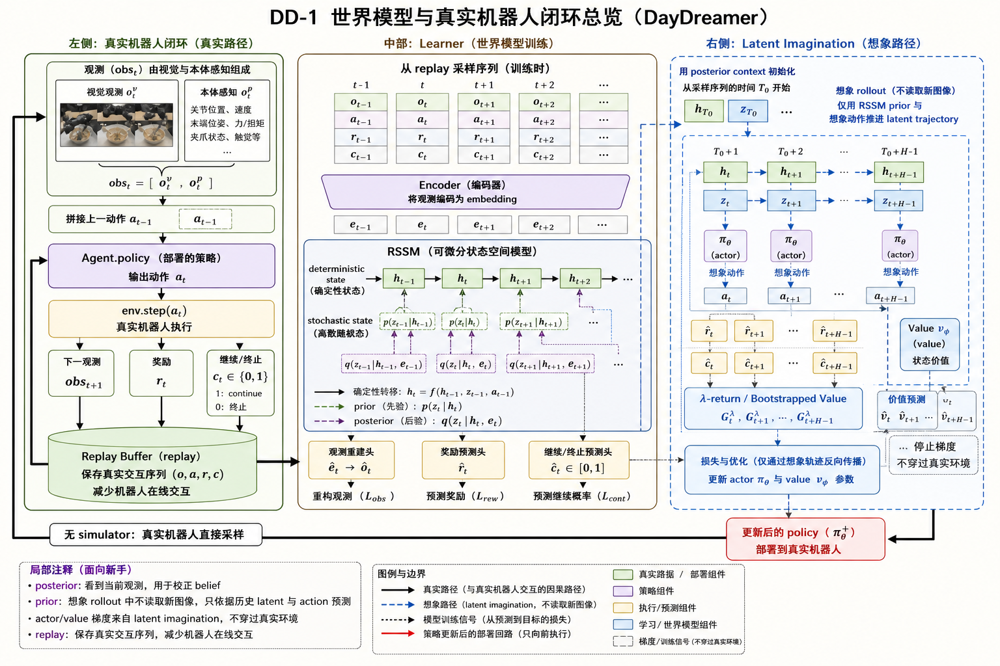
原生 imagegen 资产；已回收当前会话落盘文件，未做语义后处理。
全部细节
阅读顺序：先看输入与环境边界，再沿箭头追踪 latent/state 和 action，最后检查预测目标、监督来源、规划或策略更新。这里的说明只解释事实合同中明确列出的模块，不把未列模块臆测为论文实现。
- Paper Fact：真实机器人观测/动作写入 replay；learner 学 RSSM；actor/value 在 latent imagination 更新；无 simulator。
- 必须显示：视觉+本体感知、posterior/prior、reward/continue、真实路径与想象路径边界。
- 禁止：DreamerV3 symlog、视频 diffusion、VLA。
- 状态：generated-audited
源码对照要点：核对 reset、时间索引、张量形状、posterior/prior 的观测可见性、teacher forcing、模型 rollout 与真实闭环边界，以及 actor/value/CEM/MPP 的实际调用位置。实线表示真实或已确认程序路径，虚线表示预测、先验或想象路径；模型内部高分不是现实环境证据。
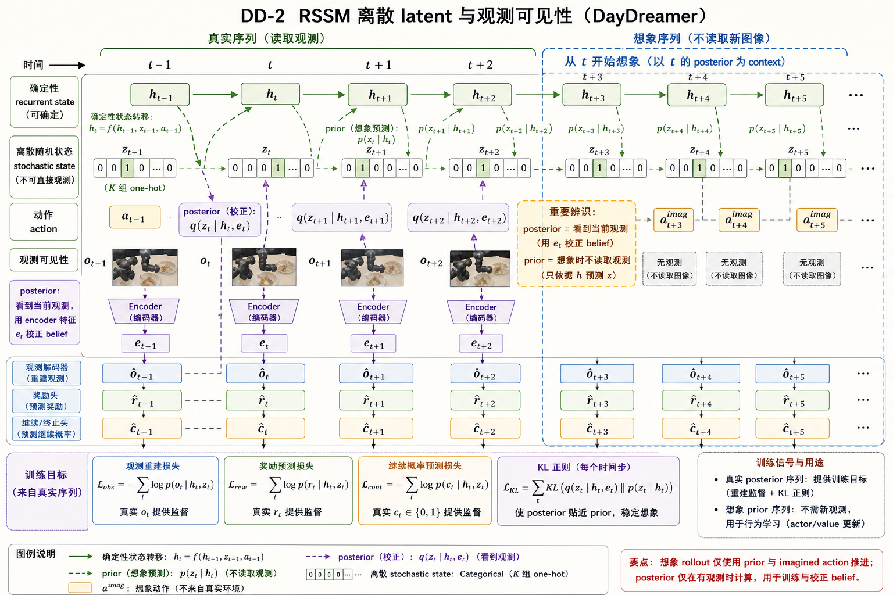
原生 imagegen 资产；已回收当前会话落盘文件，未做语义后处理。
全部细节
阅读顺序：先看输入与环境边界，再沿箭头追踪 latent/state 和 action，最后检查预测目标、监督来源、规划或策略更新。这里的说明只解释事实合同中明确列出的模块，不把未列模块臆测为论文实现。
- Paper Fact：encoder、recurrent state、discrete stochastic state、prior/posterior、observation/reward/continue heads。
- 必须显示：真实序列 posterior，想象序列 prior，KL/重建/奖励/终止损失。
- 状态：generated-audited
源码对照要点：核对 reset、时间索引、张量形状、posterior/prior 的观测可见性、teacher forcing、模型 rollout 与真实闭环边界，以及 actor/value/CEM/MPP 的实际调用位置。实线表示真实或已确认程序路径，虚线表示预测、先验或想象路径；模型内部高分不是现实环境证据。
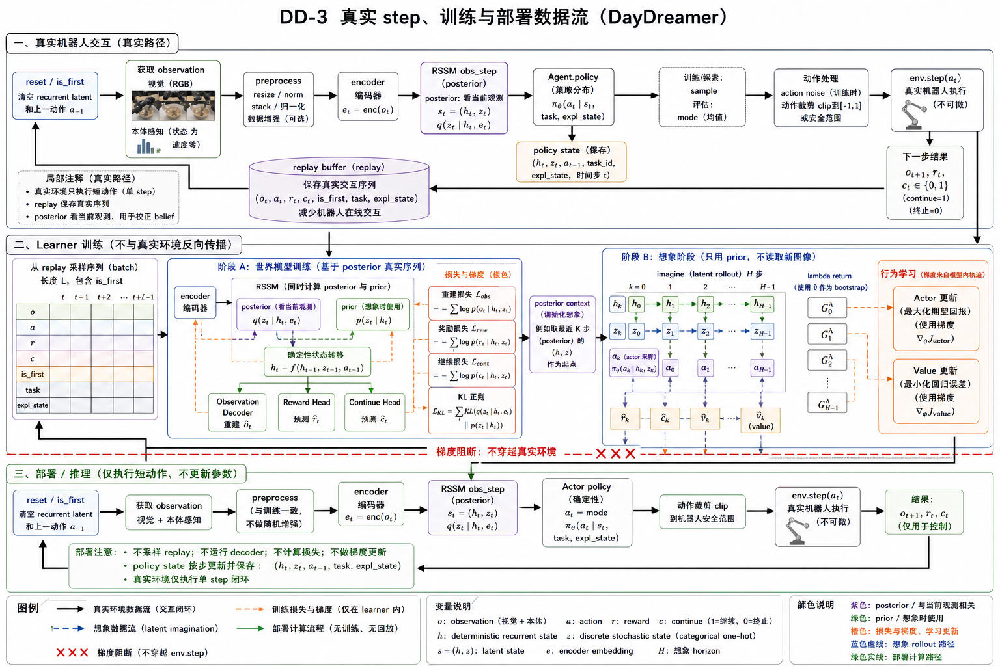
原生 imagegen 资产；已回收当前会话落盘文件，未做语义后处理。
全部细节
阅读顺序：先看输入与环境边界，再沿箭头追踪 latent/state 和 action，最后检查预测目标、监督来源、规划或策略更新。这里的说明只解释事实合同中明确列出的模块，不把未列模块臆测为论文实现。
- Paper Fact：真实环境只执行短动作；replay sample 后进行 world-model 与 behavior learning；actor 梯度不穿越真实环境。
- 必须显示：reset/observe/env.step/replay/imagine/return/actor/value/动作裁剪。
- 状态：generated-audited
源码对照要点：核对 reset、时间索引、张量形状、posterior/prior 的观测可见性、teacher forcing、模型 rollout 与真实闭环边界，以及 actor/value/CEM/MPP 的实际调用位置。实线表示真实或已确认程序路径，虚线表示预测、先验或想象路径；模型内部高分不是现实环境证据。
论文方法、公式、实验与证据边界
问题与贡献
DayDreamer 把 Dreamer 从游戏和仿真带到真实机器人，研究问题是：在没有 simulator、交互样本很少、传感器既有相机又有本体感知、奖励既有稀疏又有连续形式的条件下，latent world model 能否直接支持机器人学习。论文覆盖四足机器人翻身/站立/行走、机械臂视觉抓取放置和轮式机器人导航，重点不是提出新的 planner，而是验证 Dreamer 的基本机制在物理世界中是否成立。
核心贡献可以概括为三点：第一，真实环境线程负责采集经验，learner 从 replay buffer 学 world model；第二，RSSM 将视觉和 proprioception 融合为紧凑表示，并预测观测、reward 和 episode end；第三，actor-critic 大部分更新在 latent imagination 中完成，从而把昂贵真实交互与廉价并行训练分开。
方法链路
真实机器人在时间 t 读取图像、本体感知、上一动作和 episode 边界，执行 env.step(a_t) 后获得下一观测、reward 和 discount。transition 被写入 replay buffer。learner 采样连续序列，encoder 得到 embedding，RSSM 的 observation step 产生 posterior latent；world model 训练 observation/reward/continue heads。训练行为时，从 posterior state 作为起点，移除未来真实观测，仅用 prior transition 和 actor action 展开 imagined sequence；reward/continue 形成 lambda return，value 和 actor 更新。
这一设计的关键边界是：真实环境不提供可微梯度，actor 不能穿过 env.step 更新；actor 的梯度来自 imagined latent trajectory。真实环境的作用是产生数据、校准模型和执行短动作，学习的大部分计算发生在 latent space。
源码对应
官方仓库为 TensorFlow 2 实现。embodied/agents/dreamerv2plus/agent.py 的 policy() 先对当前观测编码，再调用 rssm.obs_step() 更新状态，最后从 task behavior 或 exploration behavior 采样动作；train() 先调用 world model 训练，再以 self.wm.imagine 作为行为训练入口。behaviors.py 负责 actor/value 行为和 imagined returns；nets.py 包含 encoder、decoder、RSSM 及概率头；train.py/train_embodied.py 组织 actor、learner、replay 和环境线程。
阅读时应优先检查四个事实：一是 policy state 同时保存 latent、task behavior state、exploration state 和上一动作；二是 learner 的 context 来自 posterior，但 imagine 从该 context 后续按 prior 展开；三是探索行为可以与任务行为分离；四是真实 step 的 action 经过环境 wrapper 的范围变换后才执行。
关键优点与局限
优点是机制简洁、真实机器人验证直接、样本效率解释清楚；局限是 latent prediction 仍可能在接触、遮挡和快速动力学上失真，真实安全由工程 reset、动作裁剪和实验边界承担，而不是由 world model 自动保证。DayDreamer 的重要启示不是“Dreamer 已解决真实机器人”，而是“世界模型可以成为真实机器人数据效率的核心接口”，后续研究应集中在 uncertainty、model error 和多任务迁移。
进阶 academic 精读
论文真正回答的问题
DayDreamer 不只是把一个已有 agent 换到机器人上跑，而是验证一个具有现实约束的命题：如果真实世界交互昂贵，能否先用少量真实序列学习一个足够有用的 predictive latent，再把策略训练主要转移到 imagined trajectories。论文的实验设计同时覆盖视觉输入、本体感知、连续动作、离散动作、稠密奖励和稀疏奖励，因此它考察的是方法接口的普适性，而不只是某一个机器人任务的成功率。
对初学者而言，必须把三件事分开。第一，world model 的目标是拟合历史数据中的感知和任务后果；第二，behavior learning 的目标是利用模型生成的未来 latent 学会长期行为；第三，真实机器人只负责提供新数据和执行动作。若把三者混成“模型直接控制机器人”，就会误解 Dreamer 的训练边界。
状态、概率与观测可见性
DayDreamer 使用 RSSM 风格状态。确定性 recurrent state h_t 汇总历史，随机状态 z_t 表示当前不确定性；训练真实序列时，posterior 可以读取当前 embedding e_t，因而得到 q(z_t | h_t, e_t)；想象未来时没有真实 e_t，只能使用 prior p(z_t | h_t)。这一可见性边界决定了训练和部署是否一致：如果 imagined path 偷看未来观测，策略会得到现实中不存在的信息。
视觉和 proprioception 在同一时间步被编码并融合到 compact representation。decoder 重建传感器输入，reward head 预测任务回报，continue/episode-end head 预测是否继续。它们不是三个互相独立的系统，而是共享 RSSM state 的不同监督出口。重建约束帮助 state 保留观测信息，reward/continue 约束帮助 state 保留控制相关信息。
训练的真实时序
一次 learner update 可以按以下顺序理解：从 replay 取一批连续序列；将图像、状态、动作、reward、discount 和 is_first 转为 tensor；encoder 产生 embeddings；RSSM observe 逐步更新 posterior；world model heads 计算 reconstruction、reward、continue 和 KL 相关损失；从 posterior sequence 的 state 作为 imagine 起点；actor 在 latent 中产生动作；RSSM 的 imagine transition 预测下一 latent；reward/continue/value 形成 return；更新 actor 与 value。这里的“先更新模型，再更新行为”是逻辑顺序，具体实现可能由 TensorFlow 函数封装，但源码审计必须还原这个顺序。
源码调用链
官方仓库的 embodied/agents/dreamerv2plus/agent.py 是总入口。policy() 读取当前观测并调用 encoder 与 rssm.obs_step()，随后由 task behavior 或 exploration behavior 产生 action distribution。train() 在 train_wm 打开时先调用 self.wm.train()，再把 posterior context reshape 成行为训练的起点，最后将 self.wm.imagine 传入 behavior trainer。behaviors.py 负责 imagine、return、actor/value 更新；nets.py 负责 encoder、decoder、RSSM 和预测 heads；embodied/core/driver.py、replay 相关实现负责环境步与数据写入。
新手最容易漏掉的是 policy state 不只包含 latent，还包含行为网络状态、探索网络状态和上一动作。上一动作参与下一次 RSSM transition；如果复现时 reset 时没有同步清零，模型会把上一 episode 的动作带到下一 episode，产生难以解释的漂移。
论文结论的正确解读
四足机器人在短时间内学会翻身、站立和行走，机械臂从相机和稀疏奖励学习抓取放置，轮式机器人从图像导航并解决朝向歧义，这些结果证明 latent imagination 可以显著减少真实试错，但不证明 world model 在所有物理接触和长时域行为上都准确。论文的工程贡献在于展示一个可运行的真实机器人 pipeline，科学贡献在于验证“预测后果→潜在训练→短动作执行”的分解。
可复现实验与局限
复现必须优先检查：动作范围是否由 wrapper 缩放到 [-1,1]；相机图像是否经过与训练相同的 resize/normalize；本体感知是否与视觉 embedding 在时间上对齐；episode end 是否被当作 discount/continue；环境 reset 是否写入 is_first；replay 采样是否包含完整连续片段。局限包括模型误差、真实机器人安全、任务奖励设计、硬件延迟和有限任务覆盖。适合的后续研究是 uncertainty-aware imagination、短 horizon 纠偏、失败恢复和物理接触辅助监督。
源码逐函数精读与实现注意点
Agent.policy()：真实观测如何变成动作
源码入口是 sources/latent-imagination/repos/daydreamer/embodied/agents/dreamerv2plus/agent.py 的 Agent.policy()。函数首先建立或恢复 policy state，然后对 observation 做 preprocess，调用 self.wm.encoder(obs) 得到 embedding，再调用 self.wm.rssm.obs_step(latent, action, embed, obs['is_first'])。这一步是 posterior 更新：当前观测可见，RSSM 能校正 belief。之后 task behavior 或 exploration behavior 接收 latent，输出 action distribution；训练和探索模式采样 action，评估模式取 mode，最后加入 action noise。
初学者要注意，state 不是一个单独 latent，而是 (latent, task_state, expl_state, action)。最后一个 action 会成为下一步 RSSM transition 的输入；is_first 用来切断 episode 边界。若只保存 latent 而丢掉 action 或 episode flag，重现出来的策略可能在 episode 切换处发生隐性状态污染。
Agent.train()：先学模型，再学行为
train() 先 preprocess batch。若 train_wm 开启，调用 self.wm.train(data, state)，取得 world-model metrics 和 posterior context；否则只编码数据并调用 RSSM observe。随后将 [B,T,...] 的 context reshape 成行为训练需要的起点，并调用 self.task_behavior.train(self.wm.imagine, start, context)。
这个调用形式非常有信息量：behavior trainer 没有直接接环境，而是接收 self.wm.imagine 函数。actor/value 的数据来自函数式 latent rollout；真实环境不可微，也不在 actor loss 的计算图中。exploration behavior 若单独配置，则重复走 imagination，但 metrics 加上 expl_ 前缀。
模型损失与梯度边界
world model 侧至少存在观测重建、reward 预测、episode continuation/termination 预测和 latent regularization。posterior 用真实 embedding 校正，prior 用历史 state 与 action 预测未来；训练 loss 使 prior 能在没有未来观测时继续滚动。行为侧用 imagined reward、discount 和 value 构成 return，再更新 actor/value。
审计时不可把“decoder 输出图像”误认为“actor 通过图像训练”。decoder 的主要作用是给 representation 提供观测约束；actor 在 latent path 上优化。若要研究模型误差，应同时看 observation loss、reward loss、continue loss、latent KL 和 multi-step return error，而不是只看单一 reconstruction loss。
真实机器人线程
driver、环境 wrapper 和 replay 相关实现负责真实 step。动作经过 action spec 和 wrapper 处理后送入硬件；环境返回 observation、reward、discount 和 episode flags；transition 被写入 replay。learner 以连续片段读取 replay，避免把不相邻的观测误当作时间序列。
这里有一个常见工程误区：模型训练 batch 可以高度并行，但真实机器人 action 执行仍受控制频率、相机延迟、硬件通信和安全停机约束。DayDreamer 的效率提升来自“少量真实 step + 大量 latent update”，不是让硬件本身变成并行 simulator。
二、Think2Drive：驾驶 latent neural simulator 与闭环评估
论文与源码索引： Think2Drive：sources/latent-imagination/papers/think2drive.pdf；截至 2026-09-01 已核验 arXiv/ECCV 论文与 Bench2Drive 官方项目，但未找到 Think2Drive 官方训练源码，因此源码层只陈述公开 benchmark、论文算法和证据边界，不臆测网络实现。
结构图、数据流图与逐图事实合同
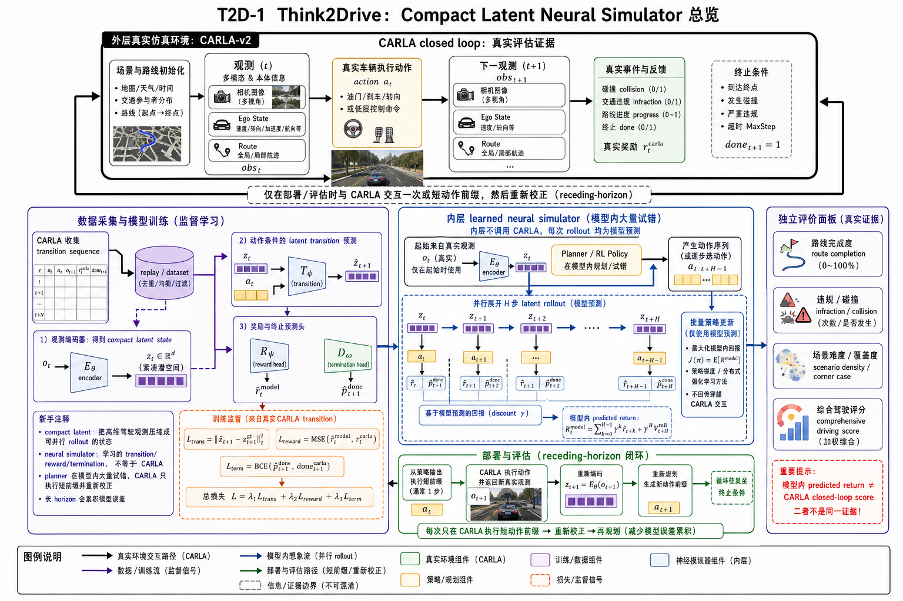
原生 imagegen 资产；已回收当前会话落盘文件，未做语义后处理。
全部细节
阅读顺序：先看输入与环境边界，再沿箭头追踪 latent/state 和 action，最后检查预测目标、监督来源、规划或策略更新。这里的说明只解释事实合同中明确列出的模块，不把未列模块臆测为论文实现。
- Paper Fact：CARLA-v2 场景；latent transition；模型作为 neural simulator；RL planner 在模型中训练；CARLA 闭环评估。
- 必须显示：训练代理与真实 simulator 的边界、route/infraction/scenario 评估。
- 状态：generated-audited
源码对照要点：核对 reset、时间索引、张量形状、posterior/prior 的观测可见性、teacher forcing、模型 rollout 与真实闭环边界，以及 actor/value/CEM/MPP 的实际调用位置。实线表示真实或已确认程序路径，虚线表示预测、先验或想象路径；模型内部高分不是现实环境证据。
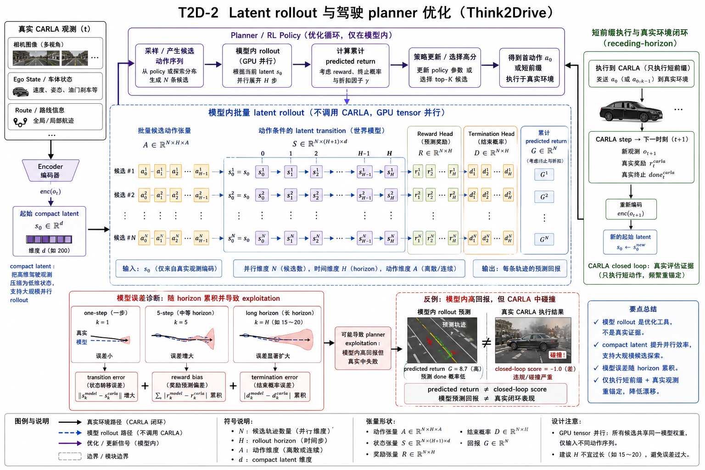
原生 imagegen 资产；已回收当前会话落盘文件，未做语义后处理。
全部细节
阅读顺序：先看输入与环境边界，再沿箭头追踪 latent/state 和 action，最后检查预测目标、监督来源、规划或策略更新。这里的说明只解释事实合同中明确列出的模块，不把未列模块臆测为论文实现。
- Paper Fact：状态编码、动作条件转移、reward/termination、并行 tensor rollout、策略更新。
- 必须显示：多步 latent、模型误差累积和短动作回到 CARLA 的闭环。
- 状态：generated-audited
源码对照要点：核对 reset、时间索引、张量形状、posterior/prior 的观测可见性、teacher forcing、模型 rollout 与真实闭环边界，以及 actor/value/CEM/MPP 的实际调用位置。实线表示真实或已确认程序路径，虚线表示预测、先验或想象路径；模型内部高分不是现实环境证据。
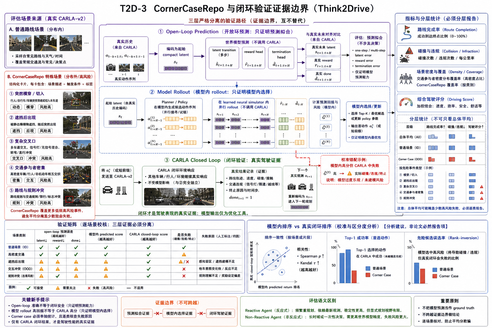
原生 imagegen 资产；已回收当前会话落盘文件，未做语义后处理。
全部细节
阅读顺序：先看输入与环境边界，再沿箭头追踪 latent/state 和 action，最后检查预测目标、监督来源、规划或策略更新。这里的说明只解释事实合同中明确列出的模块，不把未列模块臆测为论文实现。
- Paper Fact：corner case 场景评估、route completion、infraction 和 scenario density 的综合指标。
- 必须显示：open/model rollout 与 CARLA closed loop 的证据边界。
- 状态：generated-audited
源码对照要点：核对 reset、时间索引、张量形状、posterior/prior 的观测可见性、teacher forcing、模型 rollout 与真实闭环边界，以及 actor/value/CEM/MPP 的实际调用位置。实线表示真实或已确认程序路径，虚线表示预测、先验或想象路径；模型内部高分不是现实环境证据。
论文方法、公式、实验与证据边界
问题定位
Think2Drive 面向 CARLA Leaderboard v2 的复杂城市驾驶和 corner cases，提出以 compact latent world model 作为 neural simulator，在潜在状态中进行模型式强化学习。相比直接在 CARLA 中大量试错，它试图把环境转移压缩到低维 latent，并利用 tensor 并行加速 RL。论文同时提出 CornerCaseRepo 和结合 route completion、infraction number、scenario density 的评估方式。
它与 DayDreamer 的差别在应用环境和状态接口：DayDreamer 更强调真实机器人 sensor fusion 与在线学习；Think2Drive 更强调驾驶场景、corner case、路线评估和 CARLA-v2 闭环。共同点是 world model 不是用于展示，而是作为训练 planner 的可交互代理。
方法细节
训练数据先从 CARLA 采集，编码器将当前驾驶观测映射到 compact latent。模型学习给定 latent state 与 action 后的未来状态、reward 和终止/继续信号。planner 在 latent simulator 中并行 rollout，优化驾驶策略，再将策略放回 CARLA 闭环评估。对新手而言，必须区分“模型 rollout 的快速训练环境”和“CARLA 的真实闭环评估环境”：前者可能发生模型偏差，后者才是外部验收。
论文中的“thinking”不是语言推理，而是对潜在未来进行计算。其核心问题是 model-based RL 的误差闭环：如果模型在某个 action 分布外预测错误，planner 可能学会利用漏洞。因此 Think2Drive 的 success 不能只由训练 reward 证明，必须看 CARLA-v2 的 route completion、违规和 corner case 泛化。
源码阅读与复现
源码仓库需优先沿环境接口、latent state 编码、transition/reward head、rollout buffer、RL trainer 和 CARLA evaluator 阅读。复现时先固定 CARLA 版本、地图、传感器、动作定义、控制频率和 scenario seed，再检查模型 rollout 与真实 simulator 的时间步是否一致。源码中的训练速度不能直接与真实闭环质量等同；尤其要记录模型训练使用的历史真值比例、teacher forcing、reset 逻辑和终止信号。
研究价值
Think2Drive 适合研究驾驶 world model 的“训练代理—真实评估”分离。最值得延伸的是不确定性驱动的 rollout horizon、模型 ensemble、风险约束的 candidate selection，以及从 latent reward 转向真实 infractions 的校准。其局限是 CARLA 的动力学和交通行为仍是模拟器假设，不能直接证明真实道路泛化。
进阶 academic 精读
问题和贡献
Think2Drive 关注 CARLA Leaderboard v2 的城市驾驶和新 corner cases。其核心不是把 CARLA 变得更快，而是学习一个 compact latent world model，把它当作 neural simulator，在低维状态空间和 tensor 并行中训练 neural planner，再把 planner 放回 CARLA 做闭环验证。论文还提出 CornerCaseRepo，使评估不只看整条路线的均值，而是按场景检查模型是否能处理特殊事件。
这一设定与 DayDreamer 的共同点是模型式 RL，区别是 Think2Drive 更强调驾驶任务的评价语义。驾驶的 reward 不能只看前进距离，还要考虑碰撞、交通规则、路线完成和场景密度；因此“模型内 reward 上升”与“CARLA 闭环通过率上升”之间存在更明显的校准问题。
latent simulator 的逻辑
环境观测先进入编码器，得到紧凑 latent state。transition 接收当前 latent 和 ego action，预测下一 latent；reward/termination 头预测该动作在模型世界中的后果；planner 在模型中展开多步 action sequence。大量 rollout 可以以 batch tensor 形式并行，避免每一步都调用慢速 CARLA。训练后，真实 CARLA 重新提供观测，planner 输出控制，车辆真正运动，再把新的状态送回策略。
该链路有两个闭环：内环是 learned simulator 内的 imagined control，外环是 CARLA 的真实闭环。内环主要用于优化，外环用于验证和重新采样。若只看内环，planner 可能利用模型漏洞；若只看外环，则失去 world model 带来的训练效率。
新手应如何读代码
先找 CARLA wrapper 和 action spec，确认 action 是转向、油门、刹车还是 waypoint/control 混合量；再找观测编码器，记录相机、速度、路线和场景信息是否拼接；接着找 latent transition 和 reward/terminal heads；然后找 rollout buffer、batch planner 和 RL update；最后找 leaderboard evaluator 和 corner-case 统计。
每个函数都要问三个问题：输入是现实 observation 还是模型 latent？输出会被下一步模型消费，还是只用于日志？该路径是否有 ground-truth future 或 teacher forcing？训练时使用真值未来而部署时使用模型预测，会造成典型 train-test gap，必须在报告中明确。
评价指标与模型漏洞
route completion 衡量车辆是否完成路线，infraction 衡量碰撞、交通规则等违规，scenario density 用于描述场景难度或样本分布。综合指标不能掩盖某个危险子类的失败。一个策略可能完成很多简单路线，却在高密度交互场景连续碰撞；因此应报告按 corner case 分组的闭环结果。
模型漏洞包括：奖励头高估未见动作、transition 在长 horizon 发散、终止信号错判、车辆动力学不守恒、planner 选择模型最容易预测而非现实最优的动作。解决方法包括 ensemble、uncertainty penalty、短 rollout、真实环境 re-ranking 和分布外 action audit。
源码逐函数精读与实现注意点
截至 2026-09-01 的来源复核确认了 Think2Drive 论文、ECCV 页面和 Bench2Drive 官方 benchmark 项目，但未找到 Think2Drive 官方训练源码。以下“源码语义”仅指论文伪代码、公开 benchmark 接口和可核验的环境协议；任何具体网络类名、张量维度或优化器调用若没有公开文件支撑，都必须标记为未知。
CARLA 真实闭环
Think2Drive 的外环是 CARLA-v2。环境产生相机/车辆/路线相关输入，planner 输出控制，车辆推进后获得下一 observation 和事件信息。该外环决定 route completion、infraction 和 corner case 是否真实发生。论文中 model-based RL 的训练代理不能替换这个验收环境。
latent neural simulator
内环将 observation 压缩到 compact latent，transition 接收 latent/action，预测下一 latent 及 reward/termination。批量 rollout 可以在 GPU tensor 上并行，从而把 planner 的大量试错从 CARLA 调用转移到 learned model。源码精读时应找到 latent state 的生命周期：初始化来自哪里、每一步是否使用预测 state、何时 reset、何时回到真实环境重新校正。
planner 优化与风险
如果 planner 只在 model rollout 上优化，它会面对 distribution shift：训练数据覆盖的是历史动作，策略更新后可能产生新的动作。此时模型误差会反馈到策略，甚至形成“模型奖励漏洞”。因此复现报告必须把 model reward、CARLA reward、route completion、infraction 和按场景统计分开。
推荐源码检查表
- 环境 action 的物理意义、单位、范围和控制频率。
- 相机、速度、路线、导航命令是否在 encoder 前对齐。
- transition 是否使用 ground-truth next state、teacher forcing 或完全自回归预测。
- reward/termination 是否由模型预测，还是由环境直接返回。
- rollout batch 的维度顺序，尤其是
population × horizon × feature。 - CARLA evaluator 是否真正逐步推进，而不是静态 replay。
三、DINO-WM 与 latent CEM：特征动力学、规划与执行边界
论文与源码索引： DINO-WM：sources/latent-imagination/papers/dino-wm.pdf；源码 sources/latent-imagination/repos/dino-wm；https://github.com/gaoyuezhou/dino_wm。
- Paper Fact：动作序列分布、latent cost、elite 选择、均值方差更新、receding-horizon 执行。
- 必须显示：候选轨迹、目标 feature、CEM 迭代和首动作执行。
- 拆分原则：为降低单次原生生图断流风险，将同一完整方法拆成 DINO-2A（采样、rollout、代价）与 DINO-2B（elite、分布更新、首动作执行）；两图合计覆盖原 DINO-2 的全部事实，不删除任何机制。
- 状态：generated-audited
结构图、数据流图与逐图事实合同
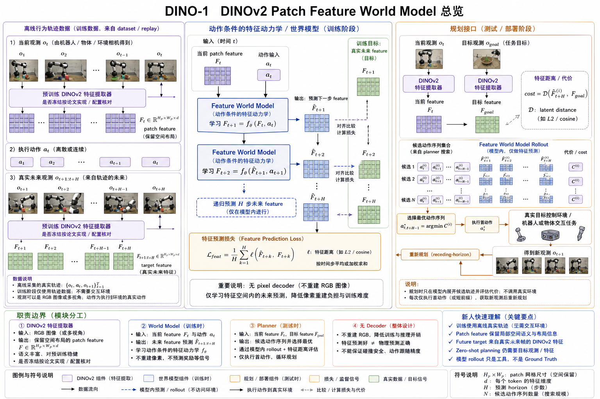
原生 imagegen 资产；已回收当前会话落盘文件，未做语义后处理。
全部细节
阅读顺序：先看输入与环境边界，再沿箭头追踪 latent/state 和 action，最后检查预测目标、监督来源、规划或策略更新。这里的说明只解释事实合同中明确列出的模块，不把未列模块臆测为论文实现。
- Paper Fact：离线行为轨迹、冻结/预训练视觉特征、未来 patch feature prediction、无需像素重建。
- 必须显示：观测→patch feature→action-conditioned dynamics→future feature。
- 状态：generated-audited
全部细节：观测先由 DINOv2 转为保留空间布局的 patch feature；动作条件的 feature world model 只在 feature space 预测未来特征，不重建 RGB。训练 target 来自真实未来帧的 DINOv2 特征；测试时目标图像提供 F_goal，规划器用特征距离评估候选后果。
源码对照要点：核对 reset、时间索引、张量形状、posterior/prior 的观测可见性、teacher forcing、模型 rollout 与真实闭环边界，以及 actor/value/CEM/MPP 的实际调用位置。实线表示真实或已确认程序路径，虚线表示预测、先验或想象路径；模型内部高分不是现实环境证据。
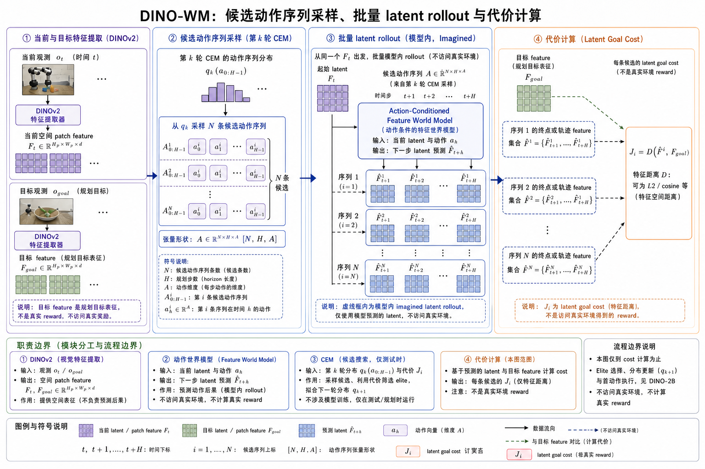
原生 imagegen 资产；已回收当前会话落盘文件，未做语义后处理。
全部细节
阅读顺序：先看输入与环境边界，再沿箭头追踪 latent/state 和 action，最后检查预测目标、监督来源、规划或策略更新。这里的说明只解释事实合同中明确列出的模块，不把未列模块臆测为论文实现。
- Paper Fact：从 q_k(a_0:H-1) 采样 N 条 [N,H,A] 候选序列，使用 action-conditioned feature world model 进行模型内 rollout，并计算与 F_goal 的 latent goal cost。
- 必须显示：F_t、F_goal、候选序列、预测 feature、模型内虚线 rollout、J_i=D(F_hat^i,F_goal)，且 J_i 不是真实 reward。
- 状态：generated-audited
全部细节：q_k(a_{0:H-1}) 生成 [N,H,A] 候选序列；每条候选从同一 F_t 出发，用 action-conditioned feature world model 进行虚想 latent rollout。J_i=D(F_hat^i,F_goal) 是特征目标代价，不是环境 reward；本图到 cost 为止，elite 和分布更新见 DINO-2B。
源码对照要点：核对 reset、时间索引、张量形状、posterior/prior 的观测可见性、teacher forcing、模型 rollout 与真实闭环边界，以及 actor/value/CEM/MPP 的实际调用位置。实线表示真实或已确认程序路径，虚线表示预测、先验或想象路径；模型内部高分不是现实环境证据。
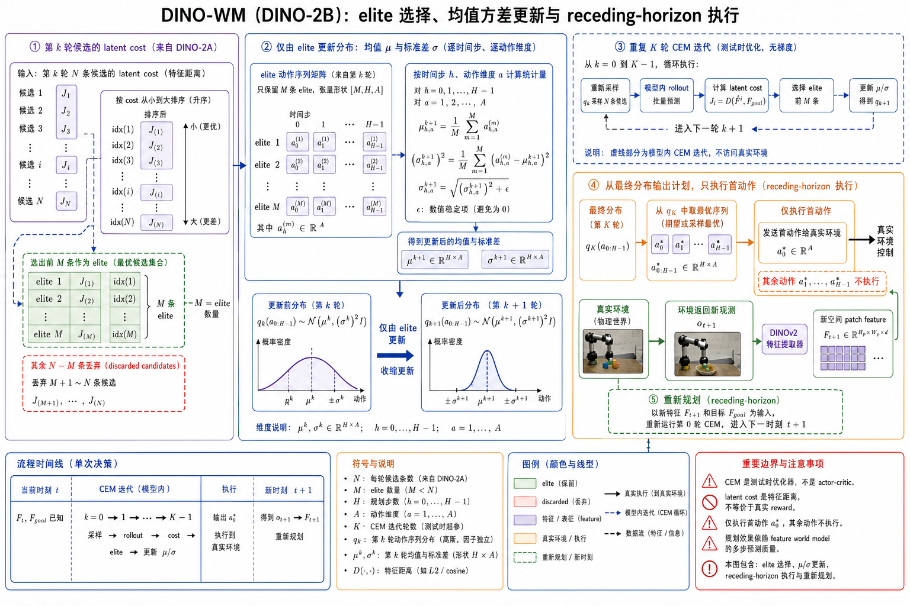
原生 imagegen 资产；已回收当前会话落盘文件，未做语义后处理。
全部细节
阅读顺序：先看输入与环境边界，再沿箭头追踪 latent/state 和 action，最后检查预测目标、监督来源、规划或策略更新。这里的说明只解释事实合同中明确列出的模块，不把未列模块臆测为论文实现。
- Paper Fact：按 latent cost 选择 M 条 elite，更新 q_{k+1} 的均值与标准差，重复 K 轮，最终只执行首动作并重新规划。
- 必须显示：elite/discarded、μ/σ 更新、K 轮循环、a*_0、o_{t+1} 和 receding-horizon 边界。
- 状态：generated-audited
全部细节：先按 J_i 排序选 M 条 elite，再逐时间步、逐动作维更新 μ/σ，形成 q_{k+1}。重复 K 轮只发送最终序列的 a*_0 到真实环境，其余动作不执行；新观测回到 F_{t+1} 后重新 CEM。
源码对照要点：核对 reset、时间索引、张量形状、posterior/prior 的观测可见性、teacher forcing、模型 rollout 与真实闭环边界，以及 actor/value/CEM/MPP 的实际调用位置。实线表示真实或已确认程序路径，虚线表示预测、先验或想象路径；模型内部高分不是现实环境证据。
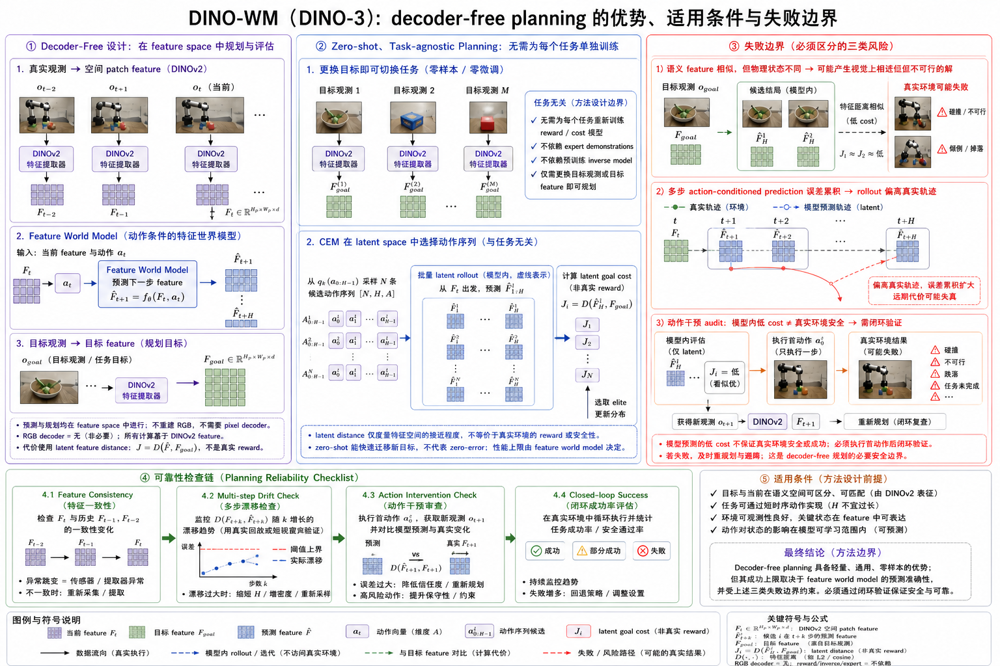
原生 imagegen 资产；已回收当前会话落盘文件，未做语义后处理。
全部细节
阅读顺序：先看输入与环境边界，再沿箭头追踪 latent/state 和 action，最后检查预测目标、监督来源、规划或策略更新。这里的说明只解释事实合同中明确列出的模块，不把未列模块臆测为论文实现。
- Paper Fact：目标 feature 作为 prediction target；zero-shot task-agnostic planning；不依赖 reward/inverse model/expert demonstrations。
- 必须显示：语义 latent 优点、物理错误风险、action intervention audit。
- 状态：generated-audited
全部细节：decoder-free 只在 feature space 比较预测与目标，不输出 RGB。zero-shot 表示可更换目标 feature 进行规划，不表示 zero-error。语义相似、多步 drift 和动作干预都要用真实闭环复核。
源码对照要点：核对 reset、时间索引、张量形状、posterior/prior 的观测可见性、teacher forcing、模型 rollout 与真实闭环边界，以及 actor/value/CEM/MPP 的实际调用位置。实线表示真实或已确认程序路径，虚线表示预测、先验或想象路径；模型内部高分不是现实环境证据。
论文方法、公式、实验与证据边界
方法动机
DINO-WM 重新审视 world model 的训练目标：如果目标是规划，就未必需要重建视觉世界。它使用 DINOv2 的空间 patch features，在离线行为轨迹上训练视觉动力学，预测未来 patch features；测试时把目标图像的 DINO 特征作为 prediction target，通过动作序列优化实现 zero-shot planning，无需 expert demonstrations、reward model 或预训练 inverse model。
这是一种非常重要的 Dreamer 对照：Dreamer 通常使用 learned decoder 作为观测重建约束，DINO-WM 把预训练表征当作视觉状态，直接学习 action-conditioned feature transition。它把“latent 是否足够支持控制”作为核心，而不是“能否生成像素”。
latent dynamics
给定离线轨迹 (o_t,a_t,o_{t+1},...)，DINOv2 提取空间 patch features。world model 以当前特征序列和动作序列为输入，预测未来特征。由于 DINO 特征具有语义和空间结构，目标观测也可编码为目标 feature；规划器不需要知道任务 reward，只需寻找使预测 feature 接近目标 feature 的 action sequence。
源码阅读重点是数据集读取、DINOv2 backbone 冻结方式、feature shape、时序 transition、动作归一化和 planner 的 cost。不要把 DINO-WM 误读为 Dreamer RSSM：它不是典型 stochastic recurrent state-space model，也没有 Dreamer actor/value 的 imagined policy gradient；其决策器是测试时 action sequence optimization。
CEM 的逐步计算
CEM 维护动作序列分布 q(a_{t:t+H-1})。每一轮从当前分布采样候选，送入 latent world model rollout，计算终点或轨迹 latent 与目标 latent 的距离，保留 elite candidates，用 elite 的均值和方差更新 q，重复若干轮后执行首个动作并重新规划。其核心是 model-predictive control：只承诺短动作，避免一次性执行长序列。
CEM 的强项是无需训练一个 task-specific actor；弱项是每次规划需要大量模型前向，且 cost 完全依赖 latent geometry。若 DINO feature 对某个任务变化不敏感，CEM 可能得到视觉相似但物理错误的动作。因此必须加入 action intervention audit 和真实环境闭环验证。
进阶 academic 精读
为什么这是 Dreamer 的重要对照
DINO-WM 的核心判断是，world model 的最终用途是规划，不一定要重建整个视觉世界。它用 DINOv2 的空间 patch feature 作为视觉状态，在离线行为轨迹上学习 action-conditioned feature dynamics，然后把目标图像的 feature 作为规划目标。这样模型可以在没有 task-specific reward、expert demonstration 或 inverse model 的条件下做 zero-shot goal reaching。
它与 Dreamer 的差异非常有教育意义。Dreamer 通过 reconstruction、reward 和 continuation 让 latent 服务于 RL；DINO-WM 直接借用外部预训练视觉表征，再让 dynamics 预测未来 feature。前者强调可学习的 stochastic state 和 policy gradient，后者强调任务无关的测试时规划。
patch feature 的空间语义
DINOv2 输出的不只是一个全局向量，而是保留空间布局的 patch features。world model 需要学习动作如何改变这些 patch 的内容与位置。若把所有 patch 过早平均，可能丢失“哪个物体移动到哪里”的信息；若保留全部 patch，则计算和 rollout 成本增加。因此源码中必须记录 patch 数量、通道维度、时间堆叠方式和是否冻结 backbone。
预测目标通常是未来真实观测提取出的 feature，而非未来像素。latent loss 的几何意义决定 planner 的行为：CEM 会偏向让 predicted feature 接近 goal feature 的动作。如果 feature 对颜色或视角敏感，规划可能被非任务因素干扰；如果 feature 对接触变化不敏感，规划可能选择视觉上相似但物理上错误的动作。
CEM 逐轮执行
给定当前 feature、goal feature 和规划 horizon H，CEM 初始化动作序列分布 q(a_{t:t+H-1})。每轮从 q 采样 N 条候选，使用 latent world model 展开每条候选，计算终点或轨迹 feature cost，选择最低 cost 的 K 条 elite，按 elite 的均值和方差更新动作分布。若动作有边界，还要在采样或更新后裁剪。若采用 receding horizon，只执行第一步，再获取新观测、重新提取 feature、重新规划。
这说明 DINO-WM 的计算瓶颈不是 actor 训练，而是测试时搜索。优点是新目标无需重新训练策略，缺点是每个环境 step 都可能需要大量 forward。初学者应先用一个固定初始状态手算一轮 CEM，再看代码的 batch reshape，避免把 N 条候选、H 个时间步和 patch token 维度混在一起。
不解码的边界
decoder-free 不代表“不需要视觉验证”。它只表示 decoder 不在 planner 的主计算路径上。若项目提供 decoder 或可视化，应把它作为解释工具；控制依据仍是 feature cost。该设计降低了像素重建负担，但将风险转移到预训练 feature 的任务充分性和 action following 能力上。
源码逐函数精读与实现注意点
backbone 与 world model 的职责
DINO-WM 的 DINOv2 backbone 提取空间 patch feature，通常作为预训练视觉表征使用。world model 不负责像素 decoder，而是预测未来 feature。源码阅读时必须分开 encode_observation、predict_latent 和 plan 三种函数：前者改变 observation space，第二者学习 transition，第三者在测试时搜索动作。
CEM 的张量展开
假设动作候选数量为 N、规划长度为 H、动作维度为 A，一次 CEM 采样可理解为 [N,H,A]。world model rollout 后得到 [N,H,D] 或空间 patch 结构；cost 对每个候选聚合，得到 [N]；排序后选 K 条 elite，对 [K,H,A] 的每个时间步和动作维度估计均值、方差，再更新采样分布。
如果实现使用 batch flatten，代码可能把 [N,H,A] 重排成模型需要的形式；复现时一定要在每个 reshape 位置记录语义。把 N 当 batch、把 H 当 feature 或把 patch token 平均掉，都会让程序运行但规划含义错误。
zero-shot 的真实含义
zero-shot 不是完全不训练。DINO-WM 仍需用离线行为轨迹训练 feature dynamics；zero-shot 指测试时换目标，不再为每个任务训练 expert policy 或 reward head。目标图像的 feature 作为 cost target，CEM 通过 action sequence optimization 找到到达目标的行为。
失败边界
DINO feature 的相似度不是物理可行性证明。两个图像可能语义相似但物体接触不同、机器人姿态不同或碰撞风险不同。因此必须增加 action intervention：固定初始 observation，分别施加正/负方向动作，检查 predicted feature change 是否与真实未来方向一致。还应测量不同 horizon 下 cost 排序是否稳定。
四、LatentDriver：多概率规划、self-delusion 与 Waymax 闭环
论文与源码索引： LatentDriver：sources/latent-imagination/papers/latentdriver.pdf；源码 sources/latent-imagination/repos/latentdriver；https://github.com/Sephirex-X/LatentDriver。
- Paper Fact：未来状态和 ego action 的 mixture distribution；MPP；Waymax closed loop。
- 必须显示：world model→多概率 planner→确定控制→闭环环境。
- 拆分原则：将 world model 多模态预测与 MPP/控制/Waymax 执行拆为 LD-1A、LD-1B，保留完整方法链路，降低单次原生生图断流风险。
- 状态：generated-audited
- Paper Fact：多层 Transformer 风格 refinement；中间层 sampled actions 输入 world model；缓解 self-delusion。
- 必须显示：每层分布、采样、反馈和最终 action。
- 拆分原则：将逐层 refinement/中间采样与 self-delusion 对照/最终执行边界分为 LD-2A、LD-2B，两图合计保留全部事实。
- 状态：generated-audited
结构图、数据流图与逐图事实合同
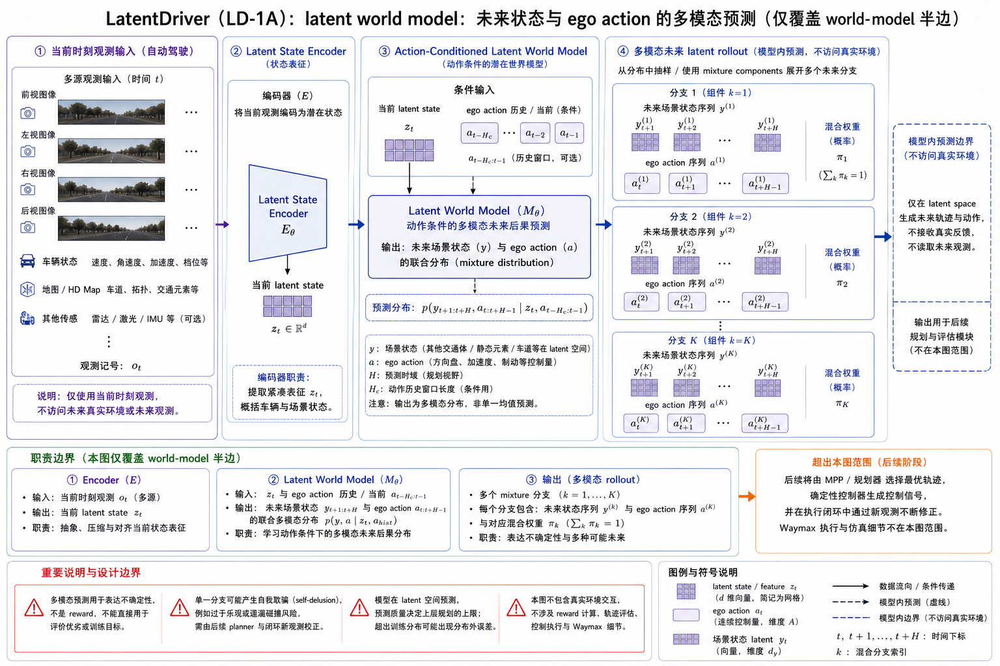
原生 imagegen 资产；已回收当前会话落盘文件，未做语义后处理。
全部细节
阅读顺序：先看输入与环境边界，再沿箭头追踪 latent/state 和 action，最后检查预测目标、监督来源、规划或策略更新。这里的说明只解释事实合同中明确列出的模块，不把未列模块臆测为论文实现。
- Paper Fact：观测编码为 latent state，action-conditioned world model 预测未来状态和 ego action 的 mixture distribution。
- 必须显示：latent encoder、z_t、ego action、多个 mixture 分支、模型内 latent rollout，以及与 MPP/真实环境的边界。
- 状态：generated-audited
全部细节：观测 `states` 经 encoder 得到 latent state；world model 在 action-conditioned 条件下同时表达未来状态和 ego action 的 mixture distribution。多个分支是模型内假设，不是多个真实环境。
源码对照要点：核对 reset、时间索引、张量形状、posterior/prior 的观测可见性、teacher forcing、模型 rollout 与真实闭环边界，以及 actor/value/CEM/MPP 的实际调用位置。实线表示真实或已确认程序路径，虚线表示预测、先验或想象路径；模型内部高分不是现实环境证据。
原生 imagegen 资产；已回收当前会话落盘文件，未做语义后处理。
全部细节
阅读顺序：先看输入与环境边界，再沿箭头追踪 latent/state 和 action，最后检查预测目标、监督来源、规划或策略更新。这里的说明只解释事实合同中明确列出的模块，不把未列模块臆测为论文实现。
- Paper Fact：MPP 从 world model 的多模态预测中进行候选选择，输出确定控制并在 Waymax closed loop 执行，返回新观测。
- 必须显示：MPP 候选评估、确定性控制器、Waymax、环境反馈和重新规划；不可把 mixture 当作 reward。
- 状态：generated-audited
全部细节：MPP 评估多个未来分支后输出确定 ego trajectory/action；只有这个最终控制进入 Waymax。`env.step()` 返回新观测后才重新规划，仿真闭环不等于真实道路安全。
源码对照要点：核对 reset、时间索引、张量形状、posterior/prior 的观测可见性、teacher forcing、模型 rollout 与真实闭环边界，以及 actor/value/CEM/MPP 的实际调用位置。实线表示真实或已确认程序路径，虚线表示预测、先验或想象路径；模型内部高分不是现实环境证据。
原生 imagegen 资产；已回收当前会话落盘文件，未做语义后处理。
全部细节
阅读顺序：先看输入与环境边界，再沿箭头追踪 latent/state 和 action，最后检查预测目标、监督来源、规划或策略更新。这里的说明只解释事实合同中明确列出的模块，不把未列模块臆测为论文实现。
- Paper Fact：输入 latent/目标条件，q_l 分布、中间 sampled actions、world model rollout 和逐层反馈细化。
- 必须显示：l=1...L、分布→采样→rollout→反馈、中间动作仅用于模型内评估。
- 状态：generated-audited
全部细节：图中的 q_l 是第 l 层动作序列分布，每层按 mixture probability 形成候选分支，采样 sampled action 后送入 action-conditioned latent world model rollout；预测后果只用于 feedback 和 refinement，中间动作不进入真实环境，最终动作留给 LD-2B。
源码对照要点：核对 reset、时间索引、张量形状、posterior/prior 的观测可见性、teacher forcing、模型 rollout 与真实闭环边界，以及 actor/value/CEM/MPP 的实际调用位置。实线表示真实或已确认程序路径，虚线表示预测、先验或想象路径；模型内部高分不是现实环境证据。
原生 imagegen 资产；已回收当前会话落盘文件，未做语义后处理。
全部细节
阅读顺序：先看输入与环境边界，再沿箭头追踪 latent/state 和 action，最后检查预测目标、监督来源、规划或策略更新。这里的说明只解释事实合同中明确列出的模块，不把未列模块臆测为论文实现。
- Paper Fact：单一自回归路径可能偏离真实分布并保持自洽；多假设采样与闭环新观测用于纠偏。
- 必须显示：单路径/多分支对照、最终 action 进入控制器、中间采样不进真实环境、闭环反馈。
- 状态：generated-audited
全部细节：左侧单路径对照说明 self-delusion：一条 rollout 可以在模型内保持高 latent consistency，却已偏离真实分布。中部多分支使不确定性显式化，MPP 分开使用模型内 latent 评分与闭环风险证据选择候选。只有最终确定控制进入 Waymax，新观测返回后才 receding-horizon re-plan；所有中间 sampled actions 都留在模型内。
源码对照要点：核对 reset、时间索引、张量形状、posterior/prior 的观测可见性、teacher forcing、模型 rollout 与真实闭环边界，以及 actor/value/CEM/MPP 的实际调用位置。实线表示真实或已确认程序路径，虚线表示预测、先验或想象路径；模型内部高分不是现实环境证据。
原生 imagegen 资产；已回收当前会话落盘文件，未做语义后处理。
全部细节
阅读顺序：先看输入与环境边界，再沿箭头追踪 latent/state 和 action，最后检查预测目标、监督来源、规划或策略更新。这里的说明只解释事实合同中明确列出的模块，不把未列模块臆测为论文实现。
- Paper Fact：单一自回归路径可能偏离真实分布并自洽；混合假设表达多模态决策。
- 必须显示：错误路径、概率分支、latent consistency/闭环评分边界。
- 状态：generated-audited
全部细节：上方单路径用来说明错误状态可在模型内自我延续；下方多分支将 mixture hypotheses 显式化为多条 sampled action/state rollout，同时评估 latent consistency、closed-loop risk、kinematics/geometric feasibility 和 goal progress。策略选择只输出一个确定控制；其他分支是不确定性证据，不是并行执行的真实环境。
源码对照要点：核对 reset、时间索引、张量形状、posterior/prior 的观测可见性、teacher forcing、模型 rollout 与真实闭环边界，以及 actor/value/CEM/MPP 的实际调用位置。实线表示真实或已确认程序路径，虚线表示预测、先验或想象路径；模型内部高分不是现实环境证据。
论文方法、公式、实验与证据边界
问题
自回归 world model 在向未来滚动时可能产生 self-delusion：模型一旦生成偏离真实分布的状态，后续预测围绕该错误状态保持内部自洽，planner 便会认为错误轨迹回报很高。LatentDriver 的观察是：驾驶决策本身具有多模态，未来状态和 ego action 都不应被强行压成单一确定路径。
Multiple Probabilistic Planner
LatentDriver 用 mixture distribution 表达多个 action/state hypotheses。MPP 采用多层 Transformer 风格结构，每层根据 latent world model 的输出细化动作分布；中间层采样动作被送回 world model，作为更接近真实执行的中间估计，减少最终 planner 只依赖历史 action 的问题。最后从 mixture 得到确定控制信号。
与 Dreamer actor 的比较要具体：Dreamer actor 通常在 imagined sequence 上输出动作分布，value 估计未来回报；LatentDriver 把 planner 与 world model 组成随机双向耦合，并显式建模多种概率决策。它更像“分支 imagined control +uncertainty-aware planner”。
源码和评估
官方仓库的阅读顺序应为数据准备、latent world model 接口、MPP 分布参数化、逐层 rollout、控制量解码和 Waymax evaluator。必须确认 mixture component 的参数、采样位置、动作单位、候选轨迹长度和最终 deterministic control 的计算。论文使用 Waymax 闭环 benchmark，这一点很关键：latent prediction 的收益必须最终落到 reactive/non-reactive agent 下的闭环指标。
配置如何决定方法链路
本地仓库 configs/method/latentdriver.yaml 把论文中的方法选择落实成可执行开关。function: enc-LWM-MPP 表示观测先进入编码器，再进入 latent world model，最后进入 MPP；mode: 6 是分布 query 的默认 mode 数；num_of_decoder: 3 是 MPA refinement block 的堆叠数；est_layer: 0 指定动作估计层。dynamic_type: waypoint 表示输出按 waypoint 解释。pretrain_world、pretrain_enc 和 freeze_* 决定预训练组件是否接受梯度。复现时必须保存 Hydra 合并后的最终配置，不能只看默认 yaml。
LantentDriver.__init__ 先建立编码器，再根据 function 选择是否建立 self.world_model，随后创建 action_prob_emb、query provider 和 ModuleList 中的多个 MPA block。因此 MPP 不是网络外的简单排序脚本，而是带可训练 query、cross-attention 和逐层反馈的网络模块。
输入形状与聚合 token
forward() 的 states 注释形状为 [B,T,E,D]：B 是 batch，T 是历史时间长度，E 是状态元素或对象数，D 是属性维。代码先 reshape 为 [B*T,E,D] 送入 encoder，再恢复为 [B,T,E,H]。随后取 bert_embeddings[:,:,0:1,:] 作为 cur_latent_token，所以 MPP 首先接触的是聚合 token，而不是所有原始属性的平均值。
query 通过 self.query_pe(None).repeat(B*T,1,1).permute(1,0,2) 扩展到 batch-time 展开后的样本，数量由 mode 决定。初始 action_dis 和 fut_latent_dis 为 None，第一层使用 action_distribution_queries，这与后续层的反馈路径是两个不同状态。
MPA 逐层 refinement 与 world-model 反馈
核心循环是 for i in range(len(self.mpad_blocks))。第一层只有 cur_latent_token；如果上一层已产生 fut_latent_dis，当前层将 future latent 与当前 token 沿特征维拼接。动作条件同样分两种：没有 action_dis 时使用可训练分布 query；有了上一层分布时，reshape 成 [B*T,mode,7] 后通过 action_prob_emb 重新嵌入。
当启用 world model 时，当前层输出经 unpack_action() 取一个确定动作，连同 encoder embedding、历史动作、时间索引和 padding mask 送入 self.world_model(...)。world model 返回 representation distribution 与 latent distribution；sample_from_distribution(mu, sigma, not self.training) 使训练与推理使用不同 deterministic 标志。future latent 被回送给下一层 MPA。
这条路可概括为：states -> encoder -> cur_latent_token -> MPA_i -> action distribution -> unpack_action -> latent world model -> future latent -> MPA_{i+1}。这是张量级反馈，不是 env.step() 。
GMM 输出、nearest mode 与损失
GMMloss.py 将输出拆分为 mode 概率、几何参数和 yaw。二维几何部分使用带相关系数 rho 的 Gaussian 负对数形式；log_std 先 clip 再 exp得到标准差，rho 也被限定以防止数值不稳定；yaw 使用 L1。nearest mode 由预测中心与 ground truth 空间距离决定，再监督 mode 概率。
多 mode 不自动等于 epistemic uncertainty。nearest-mode 分配对距离度量敏感，可能产生 mode assignment 抖动和 mode collapse；复现时应统计 mode occupancy、sigma/rho 范围和最近 mode 直方图。
unpack_action() 与确定执行
unpack_action(action, B, T) 按 [B*T,K,7] 解释输入：第 0 维为 prob，第 1至 5 维为几何参数，第 6 维为 yaw；然后沿 mode 维 argmax，拼接选中 mode 的几何输出与 yaw。网络内部可保留多 mode，但送入 world model 或环境的接口需要一个确定动作。
这不是 DINO-WM 的 CEM：LatentDriver 的确定动作来自 GMM/MPP mode 选择，DINO-WM 则在测试时显式采样、rollout、排序和更新分布。
Waymax 闭环与真实执行边界
LTDSimulator.run() 的顺序是 reset -> get_predictions -> env.step -> append action/state/time -> done。每个 step 只把当前确定控制动作交给 Waymax；新观测返回后才更新历史状态。
图中必须区分：MPA 中间动作送入 world model 是 imagined feedback；env.step() 才是环境执行。Waymax 闭环结果不能自动推广为真实道路安全，模型内预测误差下降也不等于闭环性能提升。
面向新手的源码调试清单
- 打印
states.shape、actions.shape和timesteps.shape，确认时间维没有与对象维交换。 - 检查
[B,T,E,D] -> [B*T,E,D] -> [B,T,E,H]的 reshape 顺序，确认 batch-time 样本没有错位。 - 在每个 MPA layer 记录
action_dis.shape和 future latent 统计量，确认反馈来自上一层。 - 对比训练与推理的 deterministic sampling，防止把随机性差异误读成模型不稳定。
- 检查
unpack_action()的 argmax 维度、动作单位和 yaw 方向。 - 统计 nearest-mode 分配和 mode occupancy，排查 mode collapse。
- 核对 waypoint 坐标系与 Waymax action spec，确保输出可被环境解释。
- 分开记录 imagined world-model 指标与 Waymax closed-loop 指标，不用前者替代后者。
局限
多模态不等于不确定性被正确建模。mixture 可能只是表达策略多样性，不能自动保证 epistemic uncertainty；中间动作采样能缓解 self-delusion，但不能替代真实环境校准。后续可加入 ensemble disagreement、real-future latent consistency、风险敏感 return 和 adaptive horizon。
进阶 academic 精读
self-delusion 的具体含义
在自回归 world model 中，第一步预测如果已经偏离真实分布，后续模型仍可能在这个错误状态上生成连贯结果。视觉上连贯、latent loss 低或 reward 高，并不意味着它对应真实道路。planner 若只沿一条模型路径优化，就可能找到“模型相信自己”的漏洞。LatentDriver 将其称为 self-delusion，并把它与驾驶决策的多模态性质联系起来。
MPP 的逐层语义
Multiple Probabilistic Planner 用 mixture distribution 表达可能的 ego action。每层 planner 接收 world model 的 latent 输出，细化动作分布；不是直接回归一个均值轨迹，而是维护多个模式及其概率。中间层采样的动作会反馈给 world model，作为更接近真实执行的 action estimate。最终输出可以是从分布中解码出的确定控制信号。
该结构具有三种作用：分布表达多种合法驾驶意图；中间采样让 world model 看到行动而非只看历史；逐层 refinement 将复杂规划拆成多次条件更新。与 CEM 相比，MPP 将部分搜索摊销到网络参数；与 Dreamer actor 相比，MPP 更强调 planner 内部的不确定性和与 world model 的双向耦合。
源码审计重点
必须找到 mixture 参数生成位置、方差是否正值化、各分量是否共享 backbone、采样发生在哪一层、采样动作是否 detach、world model 是否接受中间动作、最终控制如何从 mixture 得到。若中间动作被误画成最终执行动作，图会错误地表达训练/推理时序。
还要检查 Waymax 接口：场景状态如何转成 latent 输入，action 的单位和时间间隔是什么，非自车 agent 是 reactive 还是 replay，闭环评估是否逐步更新 observation。LatentDriver 的贡献成立依赖这些接口，而不是只依赖一个 mixture head。
局限和后续
mixture distribution 主要表达 aleatoric decision multimodality，不自动等价于 epistemic model uncertainty。若所有分量共享同一个错误 world model，它们可能一起自洽地错。可加入 world model ensemble、真实未来 latent 对齐、分支间 disagreement、风险敏感 return 和自适应 horizon。另一个风险是分量数增大带来计算和训练不稳定，需要研究 mode collapse 与覆盖率。
源码逐函数精读与实现注意点
mixture distribution 的必要性
驾驶决策天然多模态，直行、减速、变道和绕行可能都合理。若网络只回归单一均值，轨迹会落在多个模式之间。LatentDriver 用 mixture 表示多个可能的 action/state hypotheses，并从分布导出确定控制。
中间采样的意义
MPP 不是只在最后输出 mixture。每一层根据当前 latent world model 输出细化分布，并从中间层采样 action 反馈给 world model。这样 world model 在 rollout 中看到的是“可能真实执行的 action”，而不是始终沿用历史 action。它的目标是减少自回归模型因为 action 缺失而产生的 self-delusion。
源码审计顺序
先看数据集与状态编码，再看 world model forward；之后看 mixture 参数头、方差参数化和采样；再看多层 refinement、action feedback、最终控制解码；最后看 Waymax evaluator。每一步都记录是否 detach、是否使用 reparameterization、是否共享分支参数以及 mixture component 是否发生 mode collapse。
评估与局限
Waymax 闭环结果比静态 feature loss 更能说明规划是否有效，但仍需区分 reactive 与 non-reactive agents。共享错误 world model 的多个 mixture 分支可能一起犯错；因此下一步应引入 ensemble disagreement、真实 future latent consistency 和风险敏感 value。
配置与类构造
configs/method/latentdriver.yaml 中 、、 和 是复现入口。LantentDriver.__init__ 建立 encoder、可选 world model、动作分布 embedding、query provider 和多个 MPA block；freeze_world/freeze_enc 决定梯度边界。
forward() 的真实张量流
输入 states 为 [B,T,E,D]，编码时展开为 [B*T,E,D]，输出恢复为 [B,T,E,H]，取第 0 个元素作为当前 latent token。第一层使用 trainable action-distribution query；后续层把上一层 [B*T,mode,7] 的分布经 action_prob_emb 重新嵌入，并把 world-model 返回的 future latent 与当前 token 拼接。
LatentWorldModel 与采样
world model 接收编码 embedding、历史动作、时间索引和 padding mask，返回 representation/latent distribution。sample_from_distribution 在训练时保留采样，在推理时使用 deterministic 分支；future latent 被回送 MPA。该 feedback 是模型内 rollout，不是 env.step()。
GMM loss 与确定动作
GMMloss 对二维几何参数使用带 rho 的 Gaussian，yaw 使用 L1，并由 nearest mode 进行概率监督。unpack_action() 在 [B*T,K,7] 上沿 mode 维 argmax，组合几何量和 yaw，得到确定动作。不要把这条路称作 CEM。
Waymax step 循环
LTDSimulator.run() 的核心顺序是 reset -> get_predictions -> env.step -> append action/state/time -> done。中间 MPA sampled actions 只供模型内评估，只有最终控制动作进入环境；新观测才用于下一次闭环纠偏。
逐函数复现检查表
LantentDriver.__init__：核对 function、mode、decoder 数量、冻结开关和预训练权重。forward：核对[B,T,E,D]、query 数量、layer loop 和 future latent 拼接。unpack_action：核对概率、几何、yaw 分片及 argmax 维度。LatentWorldModel.forward：核对历史动作、时间索引、分布采样和 deterministic 边界。GMMloss：核对 nearest mode、sigma/rho clip、yaw L1 与 padding mask。LTDSimulator.run：核对 reset、环境 step、历史追加、done 和 Waymax 评估边界。
五、Kinematics-Aware RSSM：运动学约束与多步漂移
论文与源码索引： Kinematics-Aware Latent World Models：sources/latent-imagination/papers/kinematics-aware-rssm.pdf；截至 2026-09-01，arXiv 2603.07264 页面未列出官方源码仓库，未公开的插入层、梯度和训练细节统一标记为未知。
结构图、数据流图与逐图事实合同
原生 imagegen 资产；已回收当前会话落盘文件，未做语义后处理。
全部细节
阅读顺序：先看输入与环境边界，再沿箭头追踪 latent/state 和 action，最后检查预测目标、监督来源、规划或策略更新。这里的说明只解释事实合同中明确列出的模块，不把未列模块臆测为论文实现。
- Paper Fact：latent world model/RSSM 接受 ego action；运动学和几何信息约束状态演化。
- 必须显示：观测 latent、action、transition、kinematics/geometric auxiliary path、planner。
- 状态：generated-audited
全部细节：主路径用 action-conditioned RSSM 从 z_t 和 ego action 产生 prior/predicted latent rollout；训练时 posterior 可用未来观测做校正或一致性监督，但不应误读为部署时必须输入。运动学和几何辅助路径检查速度、转向、道路几何和碰撞边界，它是约束主转移的辅助监督，不是第二个独立世界模型。
源码对照要点：核对 reset、时间索引、张量形状、posterior/prior 的观测可见性、teacher forcing、模型 rollout 与真实闭环边界，以及 actor/value/CEM/MPP 的实际调用位置。实线表示真实或已确认程序路径，虚线表示预测、先验或想象路径；模型内部高分不是现实环境证据。
原生 imagegen 资产；已回收当前会话落盘文件，未做语义后处理。
全部细节
阅读顺序：先看输入与环境边界，再沿箭头追踪 latent/state 和 action，最后检查预测目标、监督来源、规划或策略更新。这里的说明只解释事实合同中明确列出的模块，不把未列模块臆测为论文实现。
- Paper Fact：比较普通 RSSM、状态/几何约束和动作条件 transition；不得把旁路预测误画成主 transition。
- 必须显示：主 latent path、辅助约束、梯度/stop-gradient 事实边界。
- 状态：generated-audited
全部细节：普通 RSSM 用 recurrent transition 建模 prior，posterior 只在训练时利用未来观测做校正。运动学辅助路径把速度、转向、轨迹几何和碰撞边界变成 constraint residual / feasibility signal，可作 transition 条件或后处理筛选信号。图中特意保留了“以对应论文与源码为准”的事实边界，不把辅助约束误画成第二个主世界模型。
源码对照要点：核对 reset、时间索引、张量形状、posterior/prior 的观测可见性、teacher forcing、模型 rollout 与真实闭环边界，以及 actor/value/CEM/MPP 的实际调用位置。实线表示真实或已确认程序路径，虚线表示预测、先验或想象路径；模型内部高分不是现实环境证据。
原生 imagegen 资产；已回收当前会话落盘文件，未做语义后处理。
全部细节
阅读顺序：先看输入与环境边界，再沿箭头追踪 latent/state 和 action，最后检查预测目标、监督来源、规划或策略更新。这里的说明只解释事实合同中明确列出的模块，不把未列模块臆测为论文实现。
- Paper Fact：应检查 one-step、多步 drift、轨迹可行性、碰撞和闭环收益。
- 必须显示：horizon 对比、物理可行/不可行候选和评估指标。
- 状态：generated-audited
全部细节：KA-3 将 one-step 局部误差与 multi-step prior rollout drift 分开检查；候选轨迹还要经过运动学、几何、碰撞和闭环可行性检查。latent 误差低不能单独证明安全，必须同时读取 open-loop 漂移和 closed-loop 新观测反馈。
源码对照要点：核对 reset、时间索引、张量形状、posterior/prior 的观测可见性、teacher forcing、模型 rollout 与真实闭环边界，以及 actor/value/CEM/MPP 的实际调用位置。实线表示真实或已确认程序路径，虚线表示预测、先验或想象路径；模型内部高分不是现实环境证据。
论文方法、公式、实验与证据边界
研究问题
普通 latent transition 可能在预测损失上表现良好，却没有学到车辆运动学：速度、航向、曲率、加速度和控制输入之间的约束不一定自然出现在抽象 latent 中。Kinematics-Aware Latent World Models 的核心思路是把车辆运动学和几何信息作为 latent dynamics 的结构化约束，使 imagination 更接近可执行驾驶状态。
方法理解
应把该工作拆成三层：观测编码得到 latent；RSSM 或 latent transition 接收 ego action 并预测未来 latent；运动学/几何辅助路径约束预测的状态变化。关键不是多加一个 loss，而是确认约束是否进入 planner 真正使用的 latent。若运动学只在旁路 head 上预测，却不影响 transition 或 rollout，策略收益可能只是多任务正则。
实验和复现重点
至少需要对照普通 RSSM、加入车辆状态输入、加入几何辅助监督、动作条件 transition、不同 rollout horizon。报告应同时看 one-step prediction、multi-step latent drift、轨迹可行性、碰撞率和闭环驾驶分数。若只有辅助指标改善而 closed-loop 不改善，不能宣称 world model 更懂驾驶。
局限
运动学约束通常描述 ego vehicle，不足以表达其他交通参与者的社会交互；过强约束可能损害对真实噪声和非理想行为的建模。更完整的方向是 ego kinematics +agent interaction +uncertainty-aware RSSM。
进阶 academic 精读
为什么需要运动学约束
只用观测重建或未来 latent prediction 训练的 world model，可能学会“看起来像”的状态变化，却没有形成可执行的车辆运动关系。例如转向输入应改变航向和横向位置，速度应影响位移，曲率和加速度应受到动力学限制。如果 latent 不编码这些关系，planner 在 imagined rollout 中可能偏好物理上不可行的轨迹。
Kinematics-aware 路线的核心不是把一个 vehicle dynamics simulator 接在模型旁边，而是让 latent state 或辅助监督显式承载运动学结构，并检查这种结构是否真正影响 rollout。报告中必须区分主 transition、辅助 prediction head 和评估器：旁路预测一个速度，不等于 RSSM 已经使用速度约束自身演化。
可能的三类接入方式
第一类是把 ego state、速度、航向和控制量作为 transition 输入，使 RSSM 在更新时拥有明确运动变量；第二类是从 latent 预测运动学量，使用辅助 loss 约束表示；第三类是把可微运动学更新写入 latent transition，再由神经网络学习残差。三者对模型的归纳偏置、梯度路径和误差性质不同，不能只用“加入 kinematics”概括。
实验如何证明有效
至少应进行 one-step 与 multi-step 对照。one-step 只说明局部预测，multi-step 才能暴露 rollout drift。还要检查轨迹可行性、道路约束、碰撞率、闭环收益和 action intervention。若辅助运动学误差下降，但闭环规划不改善，说明约束可能停留在旁路任务；若 closed-loop 改善但视频质量不变，反而可能证明结构化 latent 更适合控制。
源码级审计顺序（面向新手）
阅读实现时，不要看到名为 kinematics_loss 的函数就认定运动学已经进入 world model。应沿一次 forward 的真实调用顺序核查：先确认观测、ego action、速度、航向和几何上下文在哪里预处理，以及时间单位、坐标系和归一化是否一致；再定位 RSSM 的 recurrent state 更新，检查运动学量是 transition 输入、latent 拼接，还是只送入旁路 head；随后追踪 loss 汇总，确认 constraint residual 是否真正进入优化器总损失；最后在 rollout 与环境 step 中核对 planner 使用的是否是受约束 prior，以及最终 action 是否经过控制边界、坐标变换和执行频率转换。源码未公开或当前证据未确认的细节必须标记为未知，不能用常见 RSSM 写法补齐。
一个最小张量审计表至少记录 z_t 的 batch/time/feature 维度、a_t 的动作维度、运动学量单位、prior/posterior 形状、constraint residual 的 reduction，以及多步 rollout 是否复用同一 recurrent state。任何维度广播、时间错位或坐标系混用，都可能使辅助 loss 下降，却不能改善动作后果预测。还要区分三种梯度路径：旁路 prediction head 主要训练表示；transition 条件输入直接改变动作条件动力学；可微运动学更新加神经残差则要检查残差是否覆盖未建模部分，以及 detach、stop-gradient 和 teacher forcing 是否造成训练/推理不一致。
multi-step 评估的正确解读
one-step 只检查局部转移，不能证明模型适合规划。连续动作条件下的 multi-step prior rollout 应按 horizon 同时记录 latent prediction error、速度/航向误差、轨迹几何违约、碰撞或越界、候选可行率和闭环任务收益，并将 open-loop 与 closed-loop 分开：前者测模型漂移，后者测新观测纠偏后的真实控制效果。若运动学误差下降而碰撞率不变，说明约束可能只覆盖 ego vehicle，未覆盖交互 agent 或遮挡；若 open-loop 很好而 closed-loop 变差，应检查 action clipping、执行延迟、坐标变换和环境反馈，而不是盲目增大辅助损失权重。
局限
ego kinematics 不能解释其他交通参与者的意图、社会交互和遮挡；过强的理想车辆模型也可能压制真实噪声、轮胎打滑和执行延迟。进一步可将 ego kinematics、agent interaction、occupancy 和 uncertainty 融合进 stochastic RSSM，并用真实闭环数据校准而非只依赖模拟器。
源码逐函数精读与实现注意点
主路径与辅助路径
该方向的核心审计问题是：运动学信息究竟在哪里进入状态转移？若只是从 latent 旁路预测速度/航向并计算辅助 loss，主 RSSM 仍可能不使用这些信息；只有当状态输入、transition 方程、latent update 或反向梯度确实受到约束，才能说运动学进入 world model。
三种实现形态
- 输入增强： 将 ego pose、速度、航向或控制量作为 transition 输入。
- 辅助预测： 从 latent 预测运动学量，并以监督 loss 约束表示。
- 结构化转移： 使用可微运动学更新，再由神经网络学习残差。
这三类的可解释性、归纳偏置和错误传播不同。论文或源码没有明确哪一类时，报告必须保守表述，不能用“kinematics-aware”自动推断为可微车辆模型。
多步验证
one-step 预测只能检查局部拟合；multi-step rollout 才能检查误差累积。建议同时报告 latent drift、速度/航向误差、轨迹曲率、碰撞率、道路越界和闭环分数，并对比无约束 RSSM、输入增强、辅助 head 和结构化 transition。
交互缺口
ego 运动学约束不能替代其他车辆行为模型。驾驶 world model 还需表示交通参与者的意图、遮挡、让行和交互反馈。一个运动学很准确但不建模交互的 latent 仍可能在密集交通中做出危险规划。
六、Raw2Drive：原始传感器与 aligned world model
论文与源码索引： Raw2Drive：sources/latent-imagination/papers/raw2drive.pdf；官方仓库固定在 sources/latent-imagination/repos/raw2drive，当前 release 以 inference 代码/说明为主，训练实现不可由常见 world-model 模板推断。
结构图、数据流图与逐图事实合同
原生 imagegen 资产；已回收当前会话落盘文件，未做语义后处理。
全部细节
阅读顺序：先看输入与环境边界，再沿箭头追踪 latent/state 和 action，最后检查预测目标、监督来源、规划或策略更新。这里的说明只解释事实合同中明确列出的模块，不把未列模块臆测为论文实现。
- Paper Fact：原始观测、latent future prediction、ego trajectory/action 条件和 end-to-end driving。
- 必须显示：raw/perception-free 与 structured/perception-based 边界。
- 状态：generated-audited
全部细节：R2D-1 从 raw sensor 原始观测进入 aligned world model，重点核对 raw encoder、future latent、ego trajectory/action 条件，以及 perception-free 与 structured 路径的边界；不能把结构化特权状态误当作 raw 输入。
源码对照要点：核对 reset、时间索引、张量形状、posterior/prior 的观测可见性、teacher forcing、模型 rollout 与真实闭环边界，以及 actor/value/CEM/MPP 的实际调用位置。实线表示真实或已确认程序路径，虚线表示预测、先验或想象路径；模型内部高分不是现实环境证据。
原生 imagegen 资产；已回收当前会话落盘文件，未做语义后处理。
全部细节
阅读顺序：先看输入与环境边界，再沿箭头追踪 latent/state 和 action，最后检查预测目标、监督来源、规划或策略更新。这里的说明只解释事实合同中明确列出的模块，不把未列模块臆测为论文实现。
- Paper Fact：当前 latent、waypoint/action 条件、未来 latent 监督、规划输出。
- 必须显示：真实未来监督、teacher forcing 和推理替换边界。
- 状态：generated-audited
全部细节：R2D-2 检查当前 latent 与真实未来 latent 的对齐、waypoint/action 条件、teacher forcing 与推理时模型预测替换边界，以及 latent loss 的梯度是否真正到达规划链路。
源码对照要点：核对 reset、时间索引、张量形状、posterior/prior 的观测可见性、teacher forcing、模型 rollout 与真实闭环边界，以及 actor/value/CEM/MPP 的实际调用位置。实线表示真实或已确认程序路径，虚线表示预测、先验或想象路径；模型内部高分不是现实环境证据。
原生 imagegen 资产；已回收当前会话落盘文件，未做语义后处理。
全部细节
阅读顺序：先看输入与环境边界，再沿箭头追踪 latent/state 和 action，最后检查预测目标、监督来源、规划或策略更新。这里的说明只解释事实合同中明确列出的模块，不把未列模块臆测为论文实现。
- Paper Fact：训练/评估依赖 CARLA-v2 及其闭环协议；不能把 latent loss 当安全证据。
- 必须显示：模型训练指标与真实闭环指标分离。
- 状态：generated-audited
全部细节：R2D-3 将 world-model latent loss、open-loop prediction 与 CARLA-v2 closed-loop 指标分开；模型误差下降不等于路线完成率提升，更不等于真实安全证明。
源码对照要点：核对 reset、时间索引、张量形状、posterior/prior 的观测可见性、teacher forcing、模型 rollout 与真实闭环边界，以及 actor/value/CEM/MPP 的实际调用位置。实线表示真实或已确认程序路径，虚线表示预测、先验或想象路径；模型内部高分不是现实环境证据。
论文方法、公式、实验与证据边界
Raw2Drive 关注从 raw sensor input 到 end-to-end driving 的 world model 对齐问题。其关键价值是把 latent prediction 接在原始观测、规划和闭环驾驶之间，而不是只在特权状态或离线矢量轨迹上训练。阅读时重点检查 raw image/多传感器编码、latent transition、ego trajectory/action 条件、未来 latent 监督和最终控制头之间的梯度路径。
它适合研究“world model 从 structured privileged state 迁移到 raw observation 后是否仍然可控”。复现时必须区分 perception-free 与 perception-based 路径，确认 future latent 的监督来自真实未来还是 teacher-forced 中间状态，并检查 CARLA-v2 的 closed-loop evaluator。
源码逐函数精读与实现注意点
优先读 raw sensor dataset、latent encoder、future latent target、waypoint/action condition 和 end-to-end planner。核心问题是 raw observation 与结构化 latent 是否共享同一时间坐标，future target 是否由真实未来帧提取，推理时是否替换为模型预测。要单独审计 perception-free 与 perception-based 两条路径，不能只看最终 planner head。
Raw2Drive 当前官方 release 以 inference 代码和说明为主，不能据此声称训练 loss、网络层数或所有 rollout 细节已经公开。可确认的是项目目标为 aligned world model 的 CARLA v2 end-to-end driving；其余实现应按论文和发布文件逐项核验，不得从 Dreamer 模板推断。
七、DreamerAD：视频 latent rollout、奖励建模与策略更新
论文与源码索引： DreamerAD：sources/latent-imagination/papers/dreamerad.pdf；源码 sources/latent-imagination/repos/dreamerad。
结构图、数据流图与逐图事实合同
原生 imagegen 资产；已回收当前会话落盘文件，未做语义后处理。
全部细节
阅读顺序：先看输入与环境边界，再沿箭头追踪 latent/state 和 action，最后检查预测目标、监督来源、规划或策略更新。这里的说明只解释事实合同中明确列出的模块，不把未列模块臆测为论文实现。
- Paper Fact：diffusion video world model 的 denoised latent；shortcut forcing；latent RL。
- 必须显示：视频 latent、动作/轨迹条件、RL imagination 和 NAVSIM 评估。
- 状态：generated-audited
全部细节：DA-1 展示视频 latent、轨迹条件、latent RL imagination 与 NAVSIM 评估的边界；DreamerAD 的重点是把策略优化放在视频世界模型的 latent 空间，而不是 VLA 动作生成。
源码对照要点：核对 reset、时间索引、张量形状、posterior/prior 的观测可见性、teacher forcing、模型 rollout 与真实闭环边界，以及 actor/value/CEM/MPP 的实际调用位置。实线表示真实或已确认程序路径，虚线表示预测、先验或想象路径；模型内部高分不是现实环境证据。
原生 imagegen 资产；已回收当前会话落盘文件，未做语义后处理。
全部细节
阅读顺序：先看输入与环境边界，再沿箭头追踪 latent/state 和 action，最后检查预测目标、监督来源、规划或策略更新。这里的说明只解释事实合同中明确列出的模块，不把未列模块臆测为论文实现。
- Paper Fact：把多步 diffusion sampling 压缩到低步/单步以降低 RL loop 成本。
- 必须显示：full diffusion path、shortcut path、速度—质量权衡。
- 状态：generated-audited
全部细节：DA-2 对照 full diffusion sampling 与 Shortcut Forcing：前者提供完整去噪路径，后者以较少步骤降低 RL loop 成本；必须同时检查采样加速带来的 latent drift 与后果预测质量损失。
源码对照要点：核对 reset、时间索引、张量形状、posterior/prior 的观测可见性、teacher forcing、模型 rollout 与真实闭环边界，以及 actor/value/CEM/MPP 的实际调用位置。实线表示真实或已确认程序路径，虚线表示预测、先验或想象路径；模型内部高分不是现实环境证据。
原生 imagegen 资产；已回收当前会话落盘文件，未做语义后处理。
全部细节
阅读顺序：先看输入与环境边界，再沿箭头追踪 latent/state 和 action，最后检查预测目标、监督来源、规划或策略更新。这里的说明只解释事实合同中明确列出的模块，不把未列模块臆测为论文实现。
- Paper Fact：autoregressive dense reward model；Gaussian vocabulary sampling；约束探索到物理合理轨迹。
- 必须显示：reward calibration、采样、GRPO/策略更新和失败边界。
- 状态：generated-audited
全部细节：DA-3 展示 dense reward、Gaussian vocabulary sampling、group rollout、GRPO advantage 与策略更新；reward model 只是模型内评估器，必须与 NAVSIM/PDM 的外部指标分开审计。
源码对照要点：核对 reset、时间索引、张量形状、posterior/prior 的观测可见性、teacher forcing、模型 rollout 与真实闭环边界，以及 actor/value/CEM/MPP 的实际调用位置。实线表示真实或已确认程序路径，虚线表示预测、先验或想象路径；模型内部高分不是现实环境证据。
论文方法、公式、实验与证据边界
DreamerAD 是当前链路中最接近“Dreamer +驾驶视频 world model +latent RL”的直接延伸。论文将 diffusion video world model 的去噪 latent 用于 RL，提出 shortcut forcing 压缩多步 diffusion sampling，autoregressive dense reward model 在 latent 上提供细粒度回报，Gaussian vocabulary sampling 约束探索到物理合理轨迹。
它的核心不是让 policy 直接生成 VLA 动作，而是降低 learned video world model 在 RL loop 中的推理成本：如果每个 imagined frame 需要约 100 次 diffusion step，策略优化几乎不可承受；shortcut forcing 试图把多步采样压缩成单步/少步预测。源码中应重点读 models/world_model.py、models/reward_model.py、models/rl_sampling.py 和训练脚本，确认视频 latent、轨迹条件、dense reward、GRPO/采样更新和 NAVSIM evaluator 的真实连接。
其风险也很明确：shortcut latent 可能牺牲细节，reward model 可能成为新的模型漏洞，Gaussian vocabulary 可能限制探索覆盖。必须做 diffusion full-step 对照、reward calibration、latent drift 和 closed-loop read-back。
源码逐函数精读与实现注意点
DreamerAD 的代码入口包括 models/world_model.py、models/reward_model.py、models/rl_sampling.py 及训练配置。应按“视频 latent 编码→shortcut/denoised latent transition→轨迹条件→dense reward→采样策略→RL 更新→NAVSIM evaluator”阅读。重点检查 full diffusion 与 shortcut forcing 的关系、reward model 是否自回归、Gaussian vocabulary 如何约束探索、GRPO/策略更新接收什么样本。
源码证据已固化到 artifacts/latent-imagination/2026-09-01/evidence/extension-source-audit.json，每个文件包含存在性、字节数、行数、SHA-256 和关键词计数。该清单用于固定“实际读过哪些文件”的边界，不能把仓库目录名称直接推断为论文没有声明的模块。
仓库中的 DreamerAD 先把条件帧编码为 latent feature，再以候选轨迹作为条件逐步调用视频 DiT/world model。rollout_rewards() 在每个 trajectory step 追加相对 pose/yaw，调用 rollout_world_model() 预测下一段 latent，移除最早历史帧并把新 latent 接入 feature history，随后把 stt_feature、latent history 与候选 trajectory 交给 reward model。这里的 reward 是模型内 imagined trajectory 的逐步估计，不是真实 NAVSIM 环境逐步执行所得，最终仍需 evaluator 复核。
参考轨迹和 actor 轨迹先拼成两路，用 共同 rollout 计算相对改进；之后以 actor trajectory 为中心、固定方差生成 group samples，展平为 batch_size × group_size 后再次 rollout。每条样本按时间步汇总 reward，以组内均值作 baseline、标准差作归一化形成 GRPO advantage。group 表示模型内候选集合，不是并行真实环境。
total_reward() 对合规项使用 log(clamp(reward))，对进度和舒适项加权后再取 log，因此必须记录 reward label 范围、clamp 下界和各项权重。策略损失还与行为克隆、熵正则和 actor/reference 分布 KL 合并；复现时要核对轨迹归一化/反归一化、pose/yaw 坐标系和 reward-model cache reset。
八、LAW：action-conditioned future latent 与规划接口
论文与源码索引： LAW：sources/latent-imagination/papers/law.pdf；源码 sources/latent-imagination/repos/law。
结构图、数据流图与逐图事实合同
原生 imagegen 资产；已回收当前会话落盘文件，未做语义后处理。
全部细节
阅读顺序：先看输入与环境边界，再沿箭头追踪 latent/state 和 action，最后检查预测目标、监督来源、规划或策略更新。这里的说明只解释事实合同中明确列出的模块，不把未列模块臆测为论文实现。
- Paper Fact：当前 visual latent 与 ego waypoints 条件预测未来 visual latent；提升端到端驾驶表征。
- 状态：generated-audited
全部细节：LAW-1 展示当前 visual latent 与 ego waypoint 条件预测 future visual latent 的自监督链路；它是 latent representation/world-model 训练，不应自动画成完整 actor-critic imagination。
源码对照要点：核对 reset、时间索引、张量形状、posterior/prior 的观测可见性、teacher forcing、模型 rollout 与真实闭环边界，以及 actor/value/CEM/MPP 的实际调用位置。实线表示真实或已确认程序路径，虚线表示预测、先验或想象路径；模型内部高分不是现实环境证据。
原生 imagegen 资产；已回收当前会话落盘文件，未做语义后处理。
全部细节
阅读顺序：先看输入与环境边界，再沿箭头追踪 latent/state 和 action，最后检查预测目标、监督来源、规划或策略更新。这里的说明只解释事实合同中明确列出的模块，不把未列模块臆测为论文实现。
- Paper Fact：perspective-view latent 与 BEV latent 两种框架；latent/waypoint/perception losses。
- 状态：generated-audited
全部细节：LAW-2 对照 perception-free perspective latent 与 perception-based BEV latent 两条路径，分别标出 latent、waypoint、perception 和 planning loss，不能把两条实现合并成不存在的单一路径。
源码对照要点：核对 reset、时间索引、张量形状、posterior/prior 的观测可见性、teacher forcing、模型 rollout 与真实闭环边界，以及 actor/value/CEM/MPP 的实际调用位置。实线表示真实或已确认程序路径，虚线表示预测、先验或想象路径；模型内部高分不是现实环境证据。
原生 imagegen 资产；已回收当前会话落盘文件，未做语义后处理。
全部细节
阅读顺序：先看输入与环境边界，再沿箭头追踪 latent/state 和 action，最后检查预测目标、监督来源、规划或策略更新。这里的说明只解释事实合同中明确列出的模块，不把未列模块臆测为论文实现。
- Paper Fact：future latent 监督接到轨迹预测；不是完整 Dreamer actor-critic imagination。
- 必须标注：与 Dreamer 的相似点和边界。
- 状态：generated-audited
全部细节：LAW-3 展示一步 future prediction 如何接到轨迹规划接口，并明确与 Dreamer 的边界：有 action-conditioned future latent，但不等价于长时 prior rollout、actor/value 或完整 RL。
源码对照要点：核对 reset、时间索引、张量形状、posterior/prior 的观测可见性、teacher forcing、模型 rollout 与真实闭环边界，以及 actor/value/CEM/MPP 的实际调用位置。实线表示真实或已确认程序路径，虚线表示预测、先验或想象路径；模型内部高分不是现实环境证据。
论文方法、公式、实验与证据边界
LAW 的定位与 Dreamer 不完全相同：它预测当前 visual latent 在 ego waypoints 条件下的未来 latent，用 self-supervised latent prediction 改善端到端驾驶表征，并兼容 perception-free perspective latent 和 perception-based BEV latent。它不是完整的 Dreamer actor-critic imagination，但对“预测未来是否能改善决策表征”提供了重要对照。
源码中 law_model.py/law_model_release.py、VAD transformer/head 和训练配置应重点核对：视觉 latent 如何提取，waypoint 如何编码为 action-aware latent，Transformer latent world model 如何预测未来视觉 latent，latent loss、waypoint loss、perception loss 如何组合。LAW 的研究启示是 world model 可以先作为 representation learning，再逐步接到 planner；局限是如果只预测一步未来 latent，不能替代长时域 imagination。
源码逐函数精读与实现注意点
LAW 更像 latent self-supervised representation learning：当前视觉 latent 与 ego waypoints 经过 action-aware latent construction，再由 Transformer latent world model 预测未来 visual latent；latent、waypoint、perception loss 共同训练。它与 Dreamer 的相似点是 action-conditioned future prediction，不同点是通常不提供完整 actor/value imagined RL。源码阅读应落到 law_model.py、VAD transformer/head、loss 和配置，而不是把 VAD planner 自动当作 Dreamer actor。
LAW 仓库可确认基于 VAD/MMDetection3D 工具链，训练入口是 tools/nusc_my_train.sh，核心实现位于 projects/mmdet3d_plugin/VAD/VAD_transformer.py、VAD_head.py 与 VAD.py。应沿配置进入 transformer/head，核对 future latent、waypoint、perception 和 planning 张量的实际 loss 汇总。README 支持“当前 scene feature 加 ego trajectory 预测 future scene feature”的判断，但不能自动扩展为 Dreamer 式 actor/value imagination。
B 类专项：World Model 作为动作后果评估器
统一问题：世界模型如何评估动作后果
A 类主要问“模型能否在 latent space 中展开未来并帮助策略优化”；B 类进一步问：当策略已经存在时，world model 能否作为一个可交互的后果评估器，替代一部分昂贵的真实机器人或真实道路试验？ 这里的动作不是论文的终点，而是评估接口：给定初始观察、任务条件和策略输出的动作，模型必须生成与该动作相容的未来观测，随后由任务判定器、奖励模型或真实评估协议判断结果。
本报告纳入七篇工作：WorldGym、PiL-World、Interactive World Simulator、RoboScape、World4Drive、WorldEval、World-Gymnast。前五篇对应用户点名的主线或直接延伸，后两篇补充“策略内部动作表示”和“用评估器反过来训练策略”两种关键方向。论文 PDF 保存在 sources/b-world-model-evaluator/papers/；源码固定提交、文件哈希和公开边界保存在 artifacts/b-world-model-evaluator/2026-09-02/source-audit.json。
先建立一个统一判断框架
一个动作后果评估器至少有五层：
- 条件接口： 模型接收什么动作？连续关节位置、离散 token、轨迹词典、策略内部 embedding，还是由正向运动学投影得到的控制视频？
- 状态记忆： 当前帧是否足够？模型是否维护多帧 latent history、跨视角历史或隐式视频缓存？
- 后果生成： 生成的是 RGB、VAE latent、深度/几何表征、结构化轨迹，还是只生成任务相关分数？
- 评分接口： 由 VLM、规则、任务成功检测器、轨迹 selector 还是真实机器人评估给分？
- 可靠性闭环： 评估分数是否只用于相对排序，是否能保留不同策略版本的排名，是否需要真实数据回流修正模型偏差？
因此，“生成视频看起来真实”不是充分条件。真正的核心指标是 action following：若把动作从“抓住杯子”改成“向左移动”，预测后果是否真的发生相应变化；若两条策略真实成功率不同，模型评估是否保持这一相对差异；若模型生成出一个自洽但不可能的状态，评分器能否识别出来。
一、WorldGym：把视频世界模型包装成可调用的评估环境
方法问题、机制链路与证据边界
逐图方法详解：图稿、全部细节、公式与源码映射
当前任务原生 ImageGen 资产；正式生成证据与 SHA-256 见 B 类 manifest。
全部细节
先沿图中实线追踪真实输入与策略查询，再沿虚线追踪模型内未来生成，最后检查评分器、训练反馈和真实评估边界。以下只解释事实合同中列出的模块，不把未公开源码臆测成事实。
- 事实：输入初始 RGB 帧、语言指令和策略动作；World Model 自回归生成未来帧；VLM 对 rollout 判定任务成功。
- 必须显示：策略查询、动作反馈、模型内闭环、二值成功奖励、与真实评估的相对排序边界。
源码证据解读：源码只作为关键实现证据，重点核对动作时间轴、latent/history 状态、采样或 rollout 边界、评分器输入和真实环境接口；不在此处大段罗列源码。
对应机制、公式与实验语义
WorldGym 的最简接口可以写成：
其中 g 是语言任务，a_t 是策略动作，\hat{T} 是视频 world model，\tau 是生成的 rollout。策略并不是一次性吐出一条固定动作序列后结束，而是读取当前生成帧，再输出下一动作；这使评估接近真实部署中的 closed loop。
新手例子： 任务是“把茄子放进锅里”。模型先看到真实初始帧。策略输出一段末端动作，world model 生成抓取、抬升、移动和放置的未来帧。VLM 最后回答“是否完成任务”。若换成“把茄子放进晾架”，初始图像不变但语言条件改变，WorldGym 可以测试策略对 OOD 指令的反应，而不必重新搭建物理场景。
对应源码证据解剖
源码固定提交：709665b29f5c95124e7dbc05b0d4d47cd353de97。核心证据在 src/world_model_eval/world_model.py：WorldModel.__init__ 固定 DiT/VAE/扩散采样器；reset() 初始化单帧 latent 与零动作历史；generate_chunk() 追加 action chunk、追加噪声 latent、依据 start_frame 截断上下文，并逐步执行 ddim_sample_step。这证明 WorldGym 的世界模型是有状态的 action-conditioned video generator，而不是一个无记忆的单帧图像生成器。run_openvla.py、run_octo.py 等 runner 负责策略调用和 chunk 长度对齐；utils.py 负责 VLM 任务成功解析与聚合。源码没有证明真实物理接触、碰撞或执行器极限被显式建模，因此这些内容必须作为评估边界。
当前任务原生 ImageGen 资产；正式生成证据与 SHA-256 见 B 类 manifest。
全部细节
先沿图中实线追踪真实输入与策略查询，再沿虚线追踪模型内未来生成，最后检查评分器、训练反馈和真实评估边界。以下只解释事实合同中列出的模块，不把未公开源码臆测成事实。
- 事实：DiT 以 VAE latent、动作条件和最多 20 帧上下文工作；推理时 `chunk_size` 随策略 action chunk 调整。
- 必须显示：`reset()`、latent 编码、动作拼接、扩散采样、VAE 解码、`generate_chunk()` 的时间索引。
源码证据解读：源码只作为关键实现证据，重点核对动作时间轴、latent/history 状态、采样或 rollout 边界、评分器输入和真实环境接口；不在此处大段罗列源码。
对应机制、公式与实验语义
当前仓库构造的 DiT 配置为 、、、、、，扩散采样步数为 10。策略如果一次输出多个动作，runner 会把 wm.chunk_size 设置为相应长度；这一步非常关键，因为动作块长度改变后，world model 需要同时改变待生成 latent 的时间长度和动作条件的切片。
图中必须把“动作块长度”与“扩散步数”分开：前者是视频时间维，后者是每个待生成 latent 的去噪迭代次数。把二者画成同一个循环会误导读者，以为 10 次扩散步等于 10 个机器人控制步。
当前任务原生 ImageGen 资产；正式生成证据与 SHA-256 见 B 类 manifest。
全部细节
先沿图中实线追踪真实输入与策略查询，再沿虚线追踪模型内未来生成，最后检查评分器、训练反馈和真实评估边界。以下只解释事实合同中列出的模块，不把未公开源码臆测成事实。
- 事实：替换初始图像或语言指令可测试新任务/环境；报告关注 world-model success 与真实 success 的相关性及策略相对排名。
- 必须显示：ID/OOD 分支、任务成功判定、平均成功率与排名保持，不把相关性画成逐轨迹一致。
源码证据解读：源码只作为关键实现证据，重点核对动作时间轴、latent/history 状态、采样或 rollout 边界、评分器输入和真实环境接口；不在此处大段罗列源码。
对应机制、公式与实验语义
WorldGym 关注的是策略 success rate 的可比较性。论文报告 world-model success 与真实 success 的较强相关，并讨论策略版本、模型规模和训练 checkpoint 的相对排名保持。正确解读是：如果策略 A 在真实环境优于策略 B，模拟评估尽量也显示 A 优于 B；这不等于每条生成视频都逐帧复刻真实世界，更不等于模拟成功率可以直接当作安全认证。
源码 utils.py 中的评分逻辑将 VLM 输出解析成任务级成功率和标准误。复现时要保存原始 VLM 问题、回答、解析规则和随机种子，否则“评分器提高”可能只是 prompt 或解析器变化。
当前任务原生 ImageGen 资产；正式生成证据与 SHA-256 见 B 类 manifest。
全部细节
先沿图中实线追踪真实输入与策略查询，再沿虚线追踪模型内未来生成，最后检查评分器、训练反馈和真实评估边界。以下只解释事实合同中列出的模块，不把未公开源码臆测成事实。
- 事实：`world_model.py` 固定 `in_channels=16`、`dim=1024`、16 层、16 heads、`action_dim=10`、`max_frames=20`、采样步数 10；VLM 评分在 `utils.py`。
- 必须显示：真实源码参数、模型 rollout 与 `env.step` 缺失边界、视觉幻觉/动作分布外风险。
源码证据解读：源码只作为关键实现证据，重点核对动作时间轴、latent/history 状态、采样或 rollout 边界、评分器输入和真实环境接口；不在此处大段罗列源码。
对应机制、公式与实验语义
WorldGym 的风险有四类：
- 动作分布外： 训练数据没有覆盖的关节速度、夹爪姿态或突然反向动作可能被模型平滑成看似合理的视频。
- 时间漂移： 每次生成帧重新作为下一上下文，误差会反馈进模型，长 rollout 的自洽不代表真实。
- 评分器偏差： VLM 可能被视角、遮挡、物体颜色或语言措辞影响。
- 任务边界： world model 可以评估相对趋势，但不能独立证明碰撞、磨损或真实执行器极限。
二、PiL-World：把评估闭环推进到 policy-in-the-loop
方法问题、机制链路与证据边界
逐图方法详解：图稿、全部细节、公式与源码映射
当前任务原生 ImageGen 资产；正式生成证据与 SHA-256 见 B 类 manifest。
全部细节
先沿图中实线追踪真实输入与策略查询，再沿虚线追踪模型内未来生成，最后检查评分器、训练反馈和真实评估边界。以下只解释事实合同中列出的模块，不把未公开源码臆测成事实。
- 事实：VLA 输出动作块，世界模型生成 stride-aligned 未来观测，再反馈给 VLA，循环最多 5 轮。
- 必须显示：策略→动作块→未来多视图 latent→策略再查询→成功/失败评分。
源码证据解读：源码只作为关键实现证据，重点核对动作时间轴、latent/history 状态、采样或 rollout 边界、评分器输入和真实环境接口；不在此处大段罗列源码。
对应机制、公式与实验语义
PiL-World 解决 WorldGym 类 open-loop 评估的一个关键缺陷：若策略在真实世界会根据中间观察调整动作，就不能先固定完整动作序列再一次性生成视频。它采用：
然后将生成的未来观测重新送回策略。论文默认动作块长度 ，历史帧数 ，每轮生成 个未来帧，stride ，因此一次 rollout step 覆盖 个原始时间步，最多执行 个 closed-loop round。
新手要点： 50 是策略动作块的长度，15 是预测视频帧数，3 是帧间原始时间 stride。三者不能混写成“模型预测 50 帧”。模型实际上用 50 步动作中的 stride-aligned 子序列控制 15 个未来帧。
对应源码证据解剖
截至 2026-09-02 未找到作者公开训练源码。可核对证据来自论文 PDF：动作块 、历史帧 、预测帧 、stride 、最多 轮；控制视频由绝对关节位置经正向运动学和相机投影构造。报告不补写未公开的类名、网络深度、优化器或梯度实现。
当前任务原生 ImageGen 资产；正式生成证据与 SHA-256 见 B 类 manifest。
全部细节
先沿图中实线追踪真实输入与策略查询，再沿虚线追踪模型内未来生成，最后检查评分器、训练反馈和真实评估边界。以下只解释事实合同中列出的模块，不把未公开源码臆测成事实。
- 事实：动作 chunk 长度 50；历史帧 `H_h=5`；每轮预测 `K=15` 帧、stride `Δ=3`，覆盖 45 个原始时间步。
- 必须显示：当前帧、历史 latent、head-view control video、future latent 加噪/去噪边界。
源码证据解读：源码只作为关键实现证据，重点核对动作时间轴、latent/history 状态、采样或 rollout 边界、评分器输入和真实环境接口；不在此处大段罗列源码。
对应机制、公式与实验语义
PiL-World 的关键不是单步画面质量，而是把最近多视图历史压缩为稳定的 latent memory。实验中的 history ablation 表明，去掉 latent history 后多个任务的 LPIPS 明显恶化；这说明模型需要知道“物体刚才从哪里来、夹爪刚才处于什么姿态、上一段视频的运动趋势是什么”。
预测时不能把历史帧全部重新当作 future target。正文和附录明确的边界是：当前帧、历史 latent、控制视频和语言作为 clean condition，只有 future latent 被加噪并监督。图中必须用不同颜色区分 condition 与 target，否则读者会误以为模型在重建整段视频。
当前任务原生 ImageGen 资产；正式生成证据与 SHA-256 见 B 类 manifest。
全部细节
先沿图中实线追踪真实输入与策略查询，再沿虚线追踪模型内未来生成，最后检查评分器、训练反馈和真实评估边界。以下只解释事实合同中列出的模块，不把未公开源码臆测成事实。
- 事实：head/wrist 多视图；动作通过末端位姿/正向运动学投影成视觉控制标记；future latent 单独加噪监督。
- 必须显示：绝对关节位置→夹爪位置→相机投影、历史记忆、future-only noise、`L_gen`。
源码证据解读：源码只作为关键实现证据，重点核对动作时间轴、latent/history 状态、采样或 rollout 边界、评分器输入和真实环境接口；不在此处大段罗列源码。
对应机制、公式与实验语义
PiL-World 将绝对关节位置命令通过正向运动学转换为左右夹爪位置，再用相机内外参投影到 head-view 图像平面。投影后的 marker 位置表达空间动作，marker 大小表达夹爪开合状态，相邻位置之间的淡色轨迹表达运动连续性。
这一步的意义是把“难以直接被视频 backbone 读取的 14 维绝对关节命令”变成视觉上可对齐的 action condition。它不是把动作变成真实图像，而是构造一种训练条件。复现时必须同时核对关节坐标系、机器人 base frame、相机外参和 gripper state 的单位。
当前任务原生 ImageGen 资产；正式生成证据与 SHA-256 见 B 类 manifest。
全部细节
先沿图中实线追踪真实输入与策略查询，再沿虚线追踪模型内未来生成，最后检查评分器、训练反馈和真实评估边界。以下只解释事实合同中列出的模块，不把未公开源码臆测成事实。
- 事实：latent history memory 去除会显著恶化 LPIPS；关注 single-step 预测与闭环 rollout 的差异。
- 必须显示：有/无 history 对照、漂移累积、模型 rollout 与真实机器人证据边界，不虚构公开训练源码。
源码证据解读：源码只作为关键实现证据，重点核对动作时间轴、latent/history 状态、采样或 rollout 边界、评分器输入和真实环境接口；不在此处大段罗列源码。
对应机制、公式与实验语义
PiL-World 论文给出训练和推理细节，但截至本次核验未找到公开训练源码。因此报告只能把论文明确的 、、、、 作为事实；不能虚构其 Transformer 层数、cache 类名或实际梯度路径。
评估中要分开三种误差：单轮 future frame 误差、闭环多轮 drift、策略最终成功率。一个模型可能单步 LPIPS 很好，却因中间生成帧稍有姿态偏差而使策略下一轮输出完全不同；这正是 policy-in-the-loop 比固定动作评估更严格的地方。
三、Interactive World Simulator：一致性模型与长时动作条件视频
方法问题、机制链路与证据边界
逐图方法详解：图稿、全部细节、公式与源码映射
当前任务原生 ImageGen 资产；正式生成证据与 SHA-256 见 B 类 manifest。
全部细节
先沿图中实线追踪真实输入与策略查询，再沿虚线追踪模型内未来生成，最后检查评分器、训练反馈和真实评估边界。以下只解释事实合同中列出的模块，不把未公开源码臆测成事实。
- 事实：先训练图像 autoencoder，再冻结编码器/解码器训练 action-conditioned latent dynamics；一致性模型支持少步采样。
- 必须显示：图像→latent→重建与历史 latent+action→未来 latent 两阶段边界。
源码证据解读：源码只作为关键实现证据，重点核对动作时间轴、latent/history 状态、采样或 rollout 边界、评分器输入和真实环境接口；不在此处大段罗列源码。
对应机制、公式与实验语义
Interactive World Simulator 先训练图像 autoencoder，再冻结 encoder/decoder，训练 action-conditioned latent dynamics。第一阶段学习 与高质量重建；第二阶段学习 F_\psi 从历史 latent 和动作预测未来 latent。这样做的原因是把“图像压缩/生成”和“动作后果建模”分开，减少动力学模型同时承担视觉重建与时序学习的负担。
autoencoder 的一致性目标可写为：
对应源码证据解剖
源码固定提交：3ba69b41d070d7a56e79c287da5b24a7d90742aa。algorithms/latent_dynamics/latent_world_model.py 中 LatentWorldModel 明确拆分 encoder、CMDecoder 和 dynamics；training_stage 为 1/2/3；dynamics 通过 EinopsWrapper 将 [f,b,c,h,w] 与 [b,c,f,h,w] 互换；last_frame_loss_only、prev_frame_noise_scale、robust_latent 等配置直接体现 future-only supervision 和 noisy-context robustness。源码可证明训练结构和张量布局，但不能由配置名推断论文未声明的物理约束。
当前任务原生 ImageGen 资产；正式生成证据与 SHA-256 见 B 类 manifest。
全部细节
先沿图中实线追踪真实输入与策略查询，再沿虚线追踪模型内未来生成，最后检查评分器、训练反馈和真实评估边界。以下只解释事实合同中列出的模块，不把未公开源码臆测成事实。
- 事实：时空 latent tensor 中只对最后帧施加完整噪声，历史上下文保持条件；动力学模型由 3D conv、FiLM 和时空注意力组成。
- 必须显示：`Z∈R^{C×T×H'×W'}`、`σ_t>σ_s`、future-only denoise target 与 context noise robustness。
源码证据解读：源码只作为关键实现证据，重点核对动作时间轴、latent/history 状态、采样或 rollout 边界、评分器输入和真实环境接口；不在此处大段罗列源码。
对应机制、公式与实验语义
动力学阶段把 latent 序列写成 Z∈R^{C×T×H'×W'}。与普通整段扩散不同，论文强调只对最后帧施加完整噪声，让历史 latent 作为 clean context：
这使网络学习“根据已经发生的视觉历史和动作，补出下一帧 latent”，而不是从纯噪声重新生成整段视频。实现上，3D convolution blocks 处理空间—时间局部结构，FiLM 注入条件，spatiotemporal attention 处理长距离关系。
当前任务原生 ImageGen 资产；正式生成证据与 SHA-256 见 B 类 manifest。
全部细节
先沿图中实线追踪真实输入与策略查询，再沿虚线追踪模型内未来生成，最后检查评分器、训练反馈和真实评估边界。以下只解释事实合同中列出的模块，不把未公开源码臆测成事实。
- 事实：模型目标是从 N 个历史观测/动作预测下一 RGB 帧；长时稳定性依赖带噪上下文训练和高效一致性采样。
- 必须显示：预测帧回写 history、误差累积、15 FPS/10 分钟声明作为论文实验边界。
源码证据解读：源码只作为关键实现证据，重点核对动作时间轴、latent/history 状态、采样或 rollout 边界、评分器输入和真实环境接口；不在此处大段罗列源码。
对应机制、公式与实验语义
在线时，刚生成的 latent 会作为下一轮 history。为减轻 exposure bias，论文在 observation context 上注入小噪声，使 dynamics model 不只适应干净真实 latent，也适应由自身生成的带误差上下文。这个技巧的真正目标是降低递归 rollout 的灾难性失稳，不是让模型自动获得物理守恒。
论文报告单张 RTX 4090 上约 15 FPS、超过 10 分钟的稳定预测。阅读时必须把“视觉稳定性”与“动作因果正确性”分开：视频可以长时间保持画面连贯，但若动作改变没有导致相应物体运动，它仍不是可靠评估器。
当前任务原生 ImageGen 资产；正式生成证据与 SHA-256 见 B 类 manifest。
全部细节
先沿图中实线追踪真实输入与策略查询，再沿虚线追踪模型内未来生成，最后检查评分器、训练反馈和真实评估边界。以下只解释事实合同中列出的模块，不把未公开源码臆测成事实。
- 事实：同一初始配置下可生成 imitation 数据，并比较 world-sim 与真实策略表现；重点是可复现相对评估，不是物理引擎级真值。
- 必须显示：数据生成、DP/ACT 等策略训练、仿真评估、真实评估、相关性统计。
源码证据解读：源码只作为关键实现证据，重点核对动作时间轴、latent/history 状态、采样或 rollout 边界、评分器输入和真实环境接口；不在此处大段罗列源码。
对应机制、公式与实验语义
系统可在相同初始配置与采集协议下生成 imitation 数据，并比较全真实数据、全模拟数据和混合数据训练出的策略。评估应包含：视频质量、action controllability、world-sim success、真实 success 以及二者相关性。不能只以 PSNR 或 LPIPS 判断评估器有效，因为动作后果评估关注的是任务排序和闭环行为。
四、RoboScape：物理先验与 embodied world model
方法问题、机制链路与证据边界
逐图方法详解：图稿、全部细节、公式与源码映射
当前任务原生 ImageGen 资产；正式生成证据与 SHA-256 见 B 类 manifest。
全部细节
先沿图中实线追踪真实输入与策略查询，再沿虚线追踪模型内未来生成，最后检查评分器、训练反馈和真实评估边界。以下只解释事实合同中列出的模块，不把未公开源码臆测成事实。
- 事实：视频生成模型将机器人动作、视觉历史和物理先验结合，目标是外观真实性、几何一致性和动作可控性。
- 必须显示：历史帧、动作、物理先验、未来视频、三类评估指标。
源码证据解读：源码只作为关键实现证据，重点核对动作时间轴、latent/history 状态、采样或 rollout 边界、评分器输入和真实环境接口；不在此处大段罗列源码。
对应机制、公式与实验语义
RoboScape 把 embodied world model 的问题表述为三项共同目标：外观真实性、几何一致性和动作可控性。它不是简单把机器人视频扩大成更大的生成模型，而是试图把物理相关先验加入视频生成流程，减少“画面看起来合理但三维几何不合理”的现象。
对应源码证据解剖
固定仓库提交：329eba2b7c38a92df7c38dbc92831c25d83122e9，当前仓库只有 README，未提供可核验的训练/推理实现。因此源码证据等级为项目说明，不足以支持具体层数、loss、梯度或物理引擎调用。正文仅采用论文明确的 temporal depth prediction、数据过滤、physics-informed 先验和三类评估指标。
当前任务原生 ImageGen 资产；正式生成证据与 SHA-256 见 B 类 manifest。
全部细节
先沿图中实线追踪真实输入与策略查询，再沿虚线追踪模型内未来生成，最后检查评分器、训练反馈和真实评估边界。以下只解释事实合同中列出的模块，不把未公开源码臆测成事实。
- 事实：数据处理包含视频过滤、光流/运动质量筛选和物理相关标注；具体模块必须按论文原文标注，不虚构外部物理引擎调用。
- 必须显示：原始轨迹→clip filtering→先验标签→训练样本。
源码证据解读：源码只作为关键实现证据，重点核对动作时间轴、latent/history 状态、采样或 rollout 边界、评分器输入和真实环境接口；不在此处大段罗列源码。
对应机制、公式与实验语义
论文方法部分包含视频过滤和物理相关标注流程。过滤的意义是先移除运动模糊、异常片段或不具备可学习动作因果的样本，再让模型学习稳定的视频—动作关系。图中必须明确标出“数据过滤”和“模型生成”是两个不同阶段：过滤器并不等价于物理引擎，也不等价于推理时的安全检查。
当前任务原生 ImageGen 资产；正式生成证据与 SHA-256 见 B 类 manifest。
全部细节
先沿图中实线追踪真实输入与策略查询，再沿虚线追踪模型内未来生成，最后检查评分器、训练反馈和真实评估边界。以下只解释事实合同中列出的模块，不把未公开源码臆测成事实。
- 事实：方法强调 temporal depth prediction 增强 3D geometric consistency，并与视频生成主干联合。
- 必须显示：RGB/历史 latent、深度目标、几何一致性辅助路径、未来帧生成。
源码证据解读：源码只作为关键实现证据，重点核对动作时间轴、latent/history 状态、采样或 rollout 边界、评分器输入和真实环境接口；不在此处大段罗列源码。
对应机制、公式与实验语义
RoboScape 强调 temporal depth prediction 用来增强 3D geometric consistency。可以把它理解为：RGB 主路径负责外观和纹理，深度/几何辅助路径要求相邻时间的空间结构保持一致，再把该约束反馈到视频生成表示。图中应画出深度目标、几何一致性 loss 和未来视频预测的边界，但不能凭论文未公开内容写出具体网络层数或确定的物理引擎调用。
当前任务原生 ImageGen 资产；正式生成证据与 SHA-256 见 B 类 manifest。
全部细节
先沿图中实线追踪真实输入与策略查询，再沿虚线追踪模型内未来生成，最后检查评分器、训练反馈和真实评估边界。以下只解释事实合同中列出的模块，不把未公开源码臆测成事实。
- 事实：实验分别评价 appearance fidelity、geometric consistency、action controllability，并测试合成数据对机器人策略学习/评估的作用。
- 必须显示：指标分层、合成数据→策略、闭环评估与 hallucination 风险。
源码证据解读：源码只作为关键实现证据，重点核对动作时间轴、latent/history 状态、采样或 rollout 边界、评分器输入和真实环境接口；不在此处大段罗列源码。
对应机制、公式与实验语义
实验分别报告 appearance fidelity、geometric consistency、action controllability，并进一步观察合成数据对机器人策略学习和评估的影响。这里有一个容易被忽略的逻辑：物理指标提升不必然带来策略成功率提升；只有动作可控性和任务后果排序同时改善，才说明物理先验真正服务于评估。
五、World4Drive：意图条件的物理 latent 与驾驶后果评估
方法问题、机制链路与证据边界
逐图方法详解：图稿、全部细节、公式与源码映射
当前任务原生 ImageGen 资产；正式生成证据与 SHA-256 见 B 类 manifest。
全部细节
先沿图中实线追踪真实输入与策略查询，再沿虚线追踪模型内未来生成，最后检查评分器、训练反馈和真实评估边界。以下只解释事实合同中列出的模块，不把未公开源码臆测成事实。
- 事实：轨迹词典 `V∈R^{N×S×2}`，默认 `N=8192`、每种命令 `K=6`；k-means 端点形成 intention points。
- 必须显示：ego query、位置编码、自注意力、多模态 planning query。
源码证据解读：源码只作为关键实现证据，重点核对动作时间轴、latent/history 状态、采样或 rollout 边界、评分器输入和真实环境接口；不在此处大段罗列源码。
对应机制、公式与实验语义
World4Drive 将规划轨迹词典 转换成多模态驾驶意图。论文默认 ，每种命令类型使用 个 intention，命令类型包括左转、右转和直行。先对轨迹端点做 k-means 得到 intention points，再对 intention query 做位置编码和自注意力，得到 Q_plan。
这相当于把“候选轨迹”提升为“候选驾驶意图”。后续 world model 不只预测一个平均未来，而是分别评估不同意图下的 future physical latent。
对应源码证据解剖
固定提交：cffb51adeb1f7d02b49c4b74d7262ded62a33ac8。关键文件为 projects/mmdet3d_plugin/W4D/W4D.py、dense_heads/waypoint_query_decoder_simple.py 与 VAD 兼容模块。源码证据支持 W4D 模型注册、waypoint query/decoder 和检测—规划工程链路；论文额外描述的 intention-aware world model 与 selector 必须与实际配置逐项对照，不能自动把现有 VAD head 等同于 Dreamer actor/value。
当前任务原生 ImageGen 资产；正式生成证据与 SHA-256 见 B 类 manifest。
全部细节
先沿图中实线追踪真实输入与策略查询，再沿虚线追踪模型内未来生成，最后检查评分器、训练反馈和真实评估边界。以下只解释事实合同中列出的模块，不把未公开源码臆测成事实。
- 事实：多视图 RGB 经图像 backbone、metric depth、3D position map、语义伪标签，形成空间/语义/时间感知 latent。
- 必须显示：depth re-project、semantic head、SPE、`L_sem` 和不依赖感知标注的训练边界。
源码证据解读：源码只作为关键实现证据，重点核对动作时间轴、latent/history 状态、采样或 rollout 边界、评分器输入和真实环境接口；不在此处大段罗列源码。
对应机制、公式与实验语义
多视图 RGB 先经图像 backbone；metric depth 生成 3D position map；semantic head 使用 Grounded-SAM 产生高置信伪语义标签；spatial positional encoding 把几何位置注入视觉特征；temporal aggregation 再融合时间上下文。该路径的目标是使 latent 同时包含空间、语义和时间信息，避免从原始图像直接压缩出单模态 latent 后丢失道路结构和意图不确定性。
源码映射落在 projects/mmdet3d_plugin/W4D/W4D.py、dense_heads/waypoint_query_decoder_simple.py 和 VAD 兼容模块。当前固定仓库确实存在这些文件，但不能把 VAD 的 planner head 自动说成一个完整 Dreamer actor/value world model；它更准确地是 intention-aware physical latent 与端到端规划系统。
当前任务原生 ImageGen 资产；正式生成证据与 SHA-256 见 B 类 manifest。
全部细节
先沿图中实线追踪真实输入与策略查询，再沿虚线追踪模型内未来生成，最后检查评分器、训练反馈和真实评估边界。以下只解释事实合同中列出的模块，不把未公开源码臆测成事实。
- 事实：world model 按多模态 driving intention 预测 future physical latent，并由 selector 对规划轨迹评分。
- 必须显示：当前 latent+intention→future latent→trajectory score→选择。
源码证据解读：源码只作为关键实现证据，重点核对动作时间轴、latent/history 状态、采样或 rollout 边界、评分器输入和真实环境接口；不在此处大段罗列源码。
对应机制、公式与实验语义
给定当前 physical latent 和一种 driving intention，world model 预测 future latent，再由 selector 对候选规划轨迹打分。评估器的输出不是“未来视频是否漂亮”，而是哪个意图/轨迹在模型内更可行。其关键风险是 selector 可能学会数据集偏好而不是物理后果，因此必须测试反事实干预：固定当前观测，只替换 intention，检查未来预测是否出现可解释差异。
当前任务原生 ImageGen 资产；正式生成证据与 SHA-256 见 B 类 manifest。
全部细节
先沿图中实线追踪真实输入与策略查询，再沿虚线追踪模型内未来生成，最后检查评分器、训练反馈和真实评估边界。以下只解释事实合同中列出的模块，不把未公开源码臆测成事实。
- 事实：论文同时讨论 intention-aware world model dreamer 与端到端规划；应区分模型内未来评分、轨迹输出和真实闭环安全。
- 必须显示：训练/推理分支、碰撞/轨迹指标、open-loop 与 closed-loop 边界。
源码证据解读：源码只作为关键实现证据，重点核对动作时间轴、latent/history 状态、采样或 rollout 边界、评分器输入和真实环境接口；不在此处大段罗列源码。
对应机制、公式与实验语义
论文讨论 intention-aware world model dreamer，但图中必须拆开：训练时的 future latent prediction、模型内轨迹选择、最终 waypoint 输出和真实车辆执行不是同一条证据链。open-loop 轨迹误差下降，只说明预测更接近标注未来；closed-loop 碰撞率、舒适性和 route completion 才能检验动作后果评估是否真的有用。
六、WorldEval：用 Policy2Vec 让模型理解策略如何行动
方法问题、机制链路与证据边界
逐图方法详解：图稿、全部细节、公式与源码映射
当前任务原生 ImageGen 资产；正式生成证据与 SHA-256 见 B 类 manifest。
全部细节
先沿图中实线追踪真实输入与策略查询，再沿虚线追踪模型内未来生成，最后检查评分器、训练反馈和真实评估边界。以下只解释事实合同中列出的模块，不把未公开源码臆测成事实。
- 事实：从策略模型的 action decoder 前 latent action embedding 提取 Policy2Vec，注入预训练视频生成模型，直接生成 action-following 视频。
- 必须显示：视觉/语言编码→策略内部动作表示→视频模型→未来视频。
源码证据解读：源码只作为关键实现证据，重点核对动作时间轴、latent/history 状态、采样或 rollout 边界、评分器输入和真实环境接口；不在此处大段罗列源码。
对应机制、公式与实验语义
WorldEval 的核心洞见是：直接把最终动作向量喂给视频生成模型，可能丢失策略内部对任务、视觉和动作的结构化表示。它在策略 action decoder 产生最终动作序列之前，抽取 latent action embedding，形成 Policy2Vec，并将其注入预训练视频生成器。
这种做法不是把策略替换成 world model，而是把策略内部“动作意图”作为条件输入。对评估器来说，动作 representation 的选择决定了模型能否区分两个数值相近但语义不同的动作。
对应源码证据解剖
固定提交：46084268031412973a2b6eed425a51439cfa6e3e。仓库 README 明确提供 Wan-Video action embedding 训练和推理流程、HDF5 trajectory 数据处理以及 latent action .pt 格式；它能证明工程以视频生成和 action embedding 为中心，但不能仅凭 README 证明论文全部评估实验已复现。Policy2Vec 的核心实现语义应理解为“提取策略内部 action representation，再注入视频模型”，最终 success 由 VLM verifier 判定。
当前任务原生 ImageGen 资产；正式生成证据与 SHA-256 见 B 类 manifest。
全部细节
先沿图中实线追踪真实输入与策略查询，再沿虚线追踪模型内未来生成，最后检查评分器、训练反馈和真实评估边界。以下只解释事实合同中列出的模块，不把未公开源码臆测成事实。
- 事实：目标是 world-simulator 排名与真实 success ranking 高相关，而不是逐一复制真实动作轨迹。
- 必须显示：π_a/π_b、真实 `R`、模拟 `R_W`、相关性与排名保持。
源码证据解读：源码只作为关键实现证据，重点核对动作时间轴、latent/history 状态、采样或 rollout 边界、评分器输入和真实环境接口；不在此处大段罗列源码。
对应机制、公式与实验语义
WorldEval 明确不追求逐轨迹复刻，而追求相对性能排序：
并希望 corr(R_W,R) 足够高。这个目标更适合工程迭代：研究者可以用模拟器筛掉明显较差的策略，再把少量候选送入真实机器人验证。但不能把高相关解释为因果正确，更不能把世界模型分数当成安全证明。
当前任务原生 ImageGen 资产；正式生成证据与 SHA-256 见 B 类 manifest。
全部细节
先沿图中实线追踪真实输入与策略查询，再沿虚线追踪模型内未来生成，最后检查评分器、训练反馈和真实评估边界。以下只解释事实合同中列出的模块，不把未公开源码臆测成事实。
- 事实：给定指令和生成视频，由视觉语言模型回答任务是否完成；论文使用 Gemini-2.0 作为成功检测器。
- 必须显示：视频 rollout→问题模板→yes/no→task score，并标出 VLM 偏差。
源码证据解读：源码只作为关键实现证据，重点核对动作时间轴、latent/history 状态、采样或 rollout 边界、评分器输入和真实环境接口；不在此处大段罗列源码。
对应机制、公式与实验语义
给定任务指令和生成视频，WorldEval 让视觉语言模型回答任务是否完成。论文中使用 Gemini-2.0 作为 success detector。源码和 README 公开了视频模型训练/推理路线，但对评估结论必须保留三层边界：视频生成误差、VLM 判定误差、真实任务标签误差。
当前任务原生 ImageGen 资产；正式生成证据与 SHA-256 见 B 类 manifest。
全部细节
先沿图中实线追踪真实输入与策略查询，再沿虚线追踪模型内未来生成，最后检查评分器、训练反馈和真实评估边界。以下只解释事实合同中列出的模块，不把未公开源码臆测成事实。
- 事实：对比不同动作编码，报告多个真实机器人任务的 world-sim/real correlation 与 ablation。
- 必须显示：编码方式对照、五任务统计、相对排序、真实验证不能被模拟分数替代。
源码证据解读：源码只作为关键实现证据，重点核对动作时间轴、latent/history 状态、采样或 rollout 边界、评分器输入和真实环境接口；不在此处大段罗列源码。
对应机制、公式与实验语义
动作编码消融要回答的是“Policy2Vec 是否比 one-hot、VQ 或直接动作编码更适合作为后果条件”。报告时应同时列出编码方式、任务 success、真实 success、相关系数和策略排名变化。若只看生成视频 LPIPS，无法证明 Policy2Vec 对策略评估更有效。
七、World-Gymnast：把评估器反过来训练策略
方法问题、机制链路与证据边界
逐图方法详解：图稿、全部细节、公式与源码映射
当前任务原生 ImageGen 资产；正式生成证据与 SHA-256 见 B 类 manifest。
全部细节
先沿图中实线追踪真实输入与策略查询，再沿虚线追踪模型内未来生成，最后检查评分器、训练反馈和真实评估边界。以下只解释事实合同中列出的模块，不把未公开源码臆测成事实。
- 事实：策略从初始帧和语言指令采样 K 条轨迹；world model 逐步生成观测；VLM 给每条轨迹二值完成奖励；组内归一化形成 advantage。
- 必须显示：`πθ`、`T_hat`、`R_hat`、K 条轨迹、均值/标准差、PPO-style clipped objective。
源码证据解读：源码只作为关键实现证据，重点核对动作时间轴、latent/history 状态、采样或 rollout 边界、评分器输入和真实环境接口；不在此处大段罗列源码。
对应机制、公式与实验语义
World-Gymnast 把 WorldGym 从“评估策略”推进为“用评估器产生 RL 信号”。给定初始帧 o_0 和语言 g，策略生成 K 条轨迹：
VLM 奖励模型给每条轨迹一个二值完成奖励 r_k，组内均值和标准差形成：
该轨迹级 advantage 被复制到轨迹内每个时间步，再进入 PPO-style clipped objective。这里的重点是 world model 不输出一个可微 reward，而是提供可采样的 imagined trajectory，VLM 提供终局任务判定，GRPO 用组内相对差异训练策略。
对应源码证据解剖
固定提交：59c83a6e121fc1e099b39a4d6e01421cf1aa55c7。论文和仓库的关键路径包括 examples/run_openvla_oft_rl_worldgym.sh 与 verl/trainer/ppo/ray_trainer.py。论文公式明确：world model 采样 K 条轨迹，VLM 给轨迹级二值奖励，组内均值/标准差形成 advantage，再进入 clipped policy objective。源码中的 compute_reinforce_plus_plus_outcome_advantage、compute_remax_outcome_advantage 等证明训练器确实处理 group/outcome reward；但具体 experiment config 仍应按脚本和 checkpoint 逐项核验。
当前任务原生 ImageGen 资产；正式生成证据与 SHA-256 见 B 类 manifest。
全部细节
先沿图中实线追踪真实输入与策略查询，再沿虚线追踪模型内未来生成，最后检查评分器、训练反馈和真实评估边界。以下只解释事实合同中列出的模块，不把未公开源码臆测成事实。
- 事实：只需初始图像和语言即可构造训练配置；可修改指令、图像和干扰物，拓展 RL 状态分布。
- 必须显示：ID→OOD image/language→imagined rollout→policy update。
源码证据解读：源码只作为关键实现证据，重点核对动作时间轴、latent/history 状态、采样或 rollout 边界、评分器输入和真实环境接口；不在此处大段罗列源码。
对应机制、公式与实验语义
只要初始图像接近 world model 训练分布，就可以从任意帧启动 RL；对同一图像替换语言指令，可以构造 OOD semantic task；对图像加入干扰物，可以训练策略忽略无关视觉变化。这些能力的共同来源不是 VLA 本身，而是 world model 把初始配置变成可重复的 imagined environment。
但“任意帧”不是“任意世界状态”。若初始帧包含训练数据中没有的相机高度、物体材质或接触状态，模型可能给出高置信幻觉。图中必须标出 in-distribution 起点边界。
当前任务原生 ImageGen 资产；正式生成证据与 SHA-256 见 B 类 manifest。
全部细节
先沿图中实线追踪真实输入与策略查询，再沿虚线追踪模型内未来生成，最后检查评分器、训练反馈和真实评估边界。以下只解释事实合同中列出的模块，不把未公开源码臆测成事实。
- 事实：新初始帧到来时，可用额外计算在 world model 内做 test-time RL；这是适应策略，不等于真实世界在线安全保证。
- 必须显示：冻结/更新参数边界、计算换性能、真实部署前验证。
源码证据解读：源码只作为关键实现证据，重点核对动作时间轴、latent/history 状态、采样或 rollout 边界、评分器输入和真实环境接口；不在此处大段罗列源码。
对应机制、公式与实验语义
测试时遇到新初始帧，可以在 world model 内进行额外 RL 更新，以计算换取适应。它的优点是无需立即采集真实交互；缺点是模型偏差会被当作训练信号放大。正确的实验应比较不训练、短时训练、长时训练和真实机器人成功率，而不是只报告模型内 reward 上升。
当前任务原生 ImageGen 资产；正式生成证据与 SHA-256 见 B 类 manifest。
全部细节
先沿图中实线追踪真实输入与策略查询，再沿虚线追踪模型内未来生成，最后检查评分器、训练反馈和真实评估边界。以下只解释事实合同中列出的模块，不把未公开源码臆测成事实。
- 事实：真实 AutoEval 交互可回流微调 world model，再生成更贴近策略诱导分布的 rollout；闭环性能仍需真实评估。
- 必须显示：policy→real data→world model update→imagined RL→policy，标出模型偏差回流风险。
源码证据解读：源码只作为关键实现证据，重点核对动作时间轴、latent/history 状态、采样或 rollout 边界、评分器输入和真实环境接口；不在此处大段罗列源码。
对应机制、公式与实验语义
World-Gymnast 允许真实 AutoEval 产生的 frame-action 序列回流，微调 world model，再用更新后的模型产生更接近策略诱导分布的 rollout：
这是一种 Dyna 式闭环。它最有价值的地方是让 world model 不再只覆盖专家数据分布；最大风险则是错误策略产生错误数据，模型继续学习并强化错误，形成自我确认的偏差飞轮。因此每轮更新都需要独立真实验证和 OOD action audit。
横向共性、实验协议与扩展方向
从“动作条件视频”到“策略条件后果评估”
Interactive World Simulator 和 RoboScape 主要提升视频动力学、几何一致性与动作可控性；WorldGym 把模型封装成策略评估环境；PiL-World 把固定 action rollout 变成策略重新查询的 closed loop；WorldEval 把条件从最终动作扩展到 policy latent；World-Gymnast 则把评估器的输出反向用于策略优化；World4Drive 将这一思想落到多模态驾驶意图和 physical latent selector。
统一的动作后果评估协议
对任意工作，建议按以下顺序做实验：
- 固定初始观测，只改变一个动作维度，检查 future frame/latent 是否按方向变化。
- 对相同策略运行 open-loop 与 policy-in-the-loop，测量多轮 drift。
- 让模型对策略 A/B 排名，计算 Spearman/Kendall 相关、top-1 选择率和危险候选误选率。
- 做 action distribution shift、初始图像 shift、语言 shift 和相机视角 shift。
- 最后用真实机器人/车辆闭环验证，检查模型内成功率是否只是 VLM 或 selector 偏差。
潜在问题
- 模型自洽陷阱： 生成视频内部连贯不代表符合真实动力学。
- 评分器替代陷阱： VLM yes/no 可能把“看起来完成”当成真正完成。
- 时间尺度陷阱： policy chunk、视频帧 stride、控制频率不同，若未对齐，动作后果会被错位解释。
- 排名目标陷阱： 相关性高只能证明排序有用，不能证明绝对成功率准确。
- 反馈放大陷阱： 用模型分数训练策略会让策略钻模型漏洞；Dyna 回流也可能扩大偏差。
- 源码边界陷阱： 项目 README 的推理 demo 不等于训练代码；没有公开源码的论文不能补写具体层数、loss 或梯度路径。
先读 WorldGym，理解最小“初始帧—动作—生成视频—VLM 成功率”接口；再读 Interactive World Simulator，理解为什么 latent autoencoder、future-only noise 和 context robustness 决定长时 rollout；随后读 PiL-World，理解闭环策略查询如何放大中间观察误差；再读 WorldEval，学习 relative ranking 与 Policy2Vec；之后读 RoboScape 和 World4Drive，分别补足物理/几何和驾驶意图/结构化 latent；最后读 World-Gymnast，分析评估器如何变成 RL 训练环境以及模型偏差如何反馈到策略。